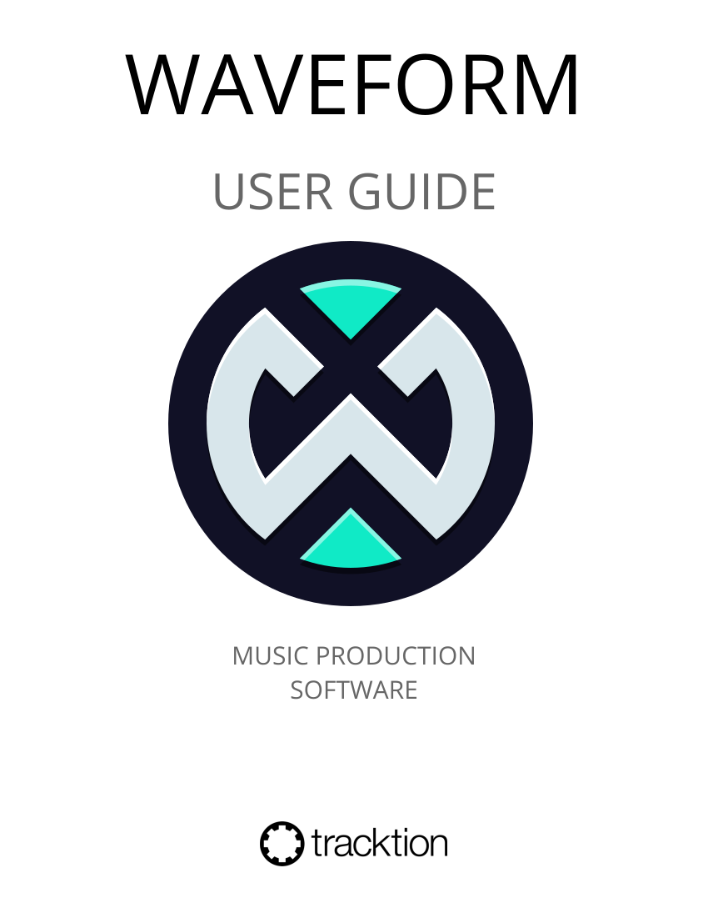
© 2020 - 2021 Bill Edstrom
© 2024 - 2026 Tracktion Corporation
About This Book¶
Release Log:
16/10/2026: 14.1 - Added Quick Start, The Plugin Panel, The Plugins Detail Editor and Rendering and Stems chapters - Brought the settings reference chapters together as Reference: Settings - Rewrote What's New for 14.1, covering the Render dialog in every edition, the Loudness Meter, the assistant's mix measurement and Cmajor building - Marked the features that aren't in Waveform Free with a PRO badge, with an Edition line under each badged heading
29/5/2026: 14.0 - Rewrote the guide as one file per chapter and brought it up to date with Waveform 14 - Added What's New, The Detail Editor, and The Actions Panel chapters - Added instrument chapters 4OSC Synthesiser and Wavetable Synthesiser - Added Plugin Racks, Faceplates, Effects Bus Tracks, Clip Effects, Folder Tracks, and Submix Tracks chapters
3/6/2025: 13.5.2 - Added automation modes - Added clip automation - Updated clip launcher for clip/slot properties
28/3/2024: 13.0.0 - Added clip launcher chapter
1/2/2021 - Updated images first several chapters - Added Settings > Appearance reference chapter - Added Settings > General reference chapter - Added Settings > Plugins reference chapter - Added Settings > Advanced reference chapter
Waveform User Guide - A Work in Progress¶
This guide documents and explains Waveform. Check the release log above to see which version of Waveform it covers.
Waveform is available in Free, OEM and Pro editions, and its core operation is the same in all of them. Features that aren't in Waveform Free carry a PRO badge. A badged heading has an Edition line under it naming the editions and expansions that include the feature. A badged control without a heading of its own names the editions in the sentence that describes it.
📝 Note: This guide is a work in progress, and some updates and features aren't covered yet. The free videos on the Tracktion YouTube channel and the Tracktion website fill in many of the gaps.
Some screenshots show earlier versions of Waveform.
Suggestion: Don't Print¶
Use the online manual or the PDF (Help > Get help > User guide PDF). Both are searchable, while a printed copy goes out of date quickly.
Introduction¶
Welcome to the Waveform User Guide. This guide helps you learn Waveform. It suits readers coming from another DAW as well as those learning computer recording from the ground up, and it works as a reference once you know your way around. If you already use Waveform or its predecessor, Tracktion, it also covers what has changed. The book started as a step-by-step guide and has grown into a reference manual.
Waveform has the full range of modern DAW features, along with many features of its own designed to help with music creation.
Waveform runs on 64-bit versions of macOS and Windows as well as Linux. All versions are maintained in parallel, so the latest release is usually the same (or close to it) on all three platforms.
Waveform is available in Free, OEM and Pro editions. Waveform Free has all the core functionality, including the AI Assistant and the Pattern Generator. Waveform Pro adds creative tools such as the Chord track, Groove Doctor, Track Snapshots, Layouts and Quick Actions, the Wavetable synth and other instruments, the MIDI effects (also available in the MIDI Producer Expansion) and the Render dialog's Advanced mode. Many of these can also be added to the other editions with an expansion, such as the MIDI Producer Expansion or the Recording Engineer Expansion. The Free edition has no limitation on the number of tracks and supports third-party plugins, as the Pro edition does. The OEM edition is included with mixers and audio interfaces from various manufacturers including Mackie and Behringer.
Throughout this book, a PRO badge marks the features that aren't in Waveform Free. A badged heading has an Edition line under it naming the editions and expansions that include the feature. A badged control without a heading of its own names the editions in the sentence that describes it.
Like its predecessors, Waveform has a single-screen user interface, with a mixer channel built in to the right of each track. Long-time users value this left-to-right workflow, and many find it makes more sense than other designs.
Waveform also has a traditional, console-style Mixer (see The Mixer). It's optional, and you can detach it and move it to another monitor, so you don't have to switch between the tracks and the Mixer.
Waveform's plugin architecture covers its own built-in plugins, plugin racks, and third-party plugins in VST, VST3, Audio Units (macOS), LV2 and, on Linux, LADSPA formats. On Apple Silicon Macs and Windows it also hosts Cmajor patches.
What's in the Book?¶
This book covers the current version of Waveform. If you're new to it, start with Quick Start; if you're upgrading, What's New lists the recent changes.
The book covers:
- How to install and set up Waveform
- How to record audio to tracks
- How to record MIDI and use virtual instruments
- How to record with guitar amp simulators
- How to edit audio
- How to edit MIDI
- How to mix with the inline mixer
- How to insert and use plugin effects
- How to mix down, and render stems and other files
- How to launch clips and scenes with the clip launcher
- How to get help from the AI Assistant
- A reference to settings and options used to configure and customise Waveform.
Video Resources¶
Tracktion publishes many tutorial videos for Waveform. Videos usually appear before the matching updates to this guide, so subscribing to the channel is a good way to keep up:
Tracktion YouTube Channel - @TracktionSoftware (browse the playlists for videos grouped by topic)
Groove3.com has some older but still useful content on Tracktion, including videos on plugin racks, Master Mix and the Tracktion DAW.
Groove 3 - Groove3.com
Setting the Default Keyboard Shortcuts¶
This guide uses Waveform's default keyboard shortcuts. If you have changed them, switch back to the defaults to follow along:
- Open Settings > Keyboard Shortcuts
- Click Reset to Defaults at the bottom of the page
- Select Restore default Waveform key mappings

Settings Tab: Set the Keyboard Shortcuts to Match this Book
The default shortcuts are designed for a fast workflow and keep the commands consistent between Mac and Windows.
Modifier Keys Conventions¶
The book uses the following abbreviations for modifier keys:
- Command: Cmd
- Control: Ctrl
- Option: Opt
- Alt: Alt
In most cases, Cmd on macOS becomes Ctrl on Windows. This manual shows both in the order Mac / Windows, for example Cmd + C / Ctrl + C.
Here is a longer example:
- Click to select the clip, then copy it using Cmd + C / Ctrl + C.
- Next, position the cursor in the Arrangement where you want to place the copy and paste it, using Cmd + V / Ctrl + V.
📝 Note: Most Linux users will use the 'Meta' key in place of Alt. On a typical PC keyboard, Meta is usually the Windows key.
📝 Note: In some parts of the world, Mac keyboards label the Option (Opt) key as Alt. This shouldn't cause much confusion, but I did want to acknowledge it.
Moving On¶
With the default shortcuts set, Waveform will match the examples in this book. To start making music, go to Quick Start.
Quick Start¶
This chapter takes you from a fresh install to your first recording and a finished audio file. Each step gives you just enough to get going, then links to the full chapter for the detail. If you're new to Waveform, read it top to bottom; if you're returning, skim the headings and jump to what you need.
Waveform runs as a 64-bit application on macOS, Windows, and Linux, and is available in Free, OEM, and Pro editions.
💡 Tip: You can view and customise every keyboard shortcut on the Settings > Keyboard Shortcuts page. If your shortcuts have been changed and you want Waveform's standard set back, click Reset to Defaults there and choose Restore default Waveform key mappings. See Keyboard Shortcuts for the full list.
1. Install and Unlock¶
- Download Waveform from tracktion.com and run the installer.
- Launch Waveform. Until it is unlocked it runs in demo mode.
- To unlock, go to the Settings tab, choose Licensing, and click Refresh Licenses. Log in with your tracktion.com account and Waveform pulls down and applies any licences you own.
→ For status badges, expansions, and per-computer licensing, see Reference: Settings > Licensing.
2. First-Run Setup¶
The first time you launch Waveform, the First Run Setup panel appears on the left. Work through its steps in order: it takes you straight to each setting you need to configure. If you close it, you can reopen it any time from Help > Show the First Run Setup panel.
→ See Audio Device Setup.
3. Set Up Your Audio Device¶
Open Settings > Audio Devices and choose how Waveform talks to your hardware:
- Windows: ASIO (recommended) or Windows Audio
- macOS: Core Audio
- Linux: JACK (recommended) or ALSA
Set your sample rate (44100 or 48000 Hz is a fine default) and an audio buffer size. Start around 256 samples and raise it if you hear clicks or dropouts.
⚠️ Warning: If you plan to overdub (record while listening to existing tracks), you must run Auto-Detect with a hardware loopback so your recordings line up in time. Repeat it whenever you change the sample rate or buffer size. This is the single most important setup step for accurate recording.
→ The full walk-through, including the Auto-Detect loopback procedure, is in Audio Device Setup and Reference: Settings > Audio Devices.
4. Connect MIDI (Optional)¶
If you have a MIDI keyboard or controller, connect it and check it appears under Settings > MIDI Devices.
→ See MIDI Setup.
5. Hear Something: Open a Template¶
The quickest way to confirm everything works is to open a template and play it:
- Open the Welcome tab.
- Pick a song from the Project Templates list to open it as a new Edit.
- Press the Space bar to play.
→ See Demo Projects and Templates and Basic Navigation.
6. The Edit Window at a Glance¶
An Edit is where you record, arrange, and mix. The window has four main areas:
- The main menu along the top.
- The Browser down one side (the right by default), which also hosts the Actions panel.
- The arrangement (and the optional Mixer) in the centre.
- The transport bar along the bottom, with playback controls, cursor position, tempo, and the master controls.
The Actions panel is central to Waveform: select anything (a clip, a track, a plugin) and it shows the settings and actions for that selection.
→ See The Edit Tab, Basic Navigation, and The Actions Panel.
7. Start a Project¶
On the Projects tab, click New Project, give it a name and location, and click Create Project. Waveform opens a new Edit ready to work in.
→ See Basic Navigation.
8. Record Audio¶
- Click the input arrow beneath a track name and choose an audio input.
- Click the record-arm button (the red dot) on that input.
- Check your levels, then press Record in the transport bar.
→ See Recording Audio.
9. Record MIDI / Use an Instrument¶
- Drag the plugin object onto a track's inline mixer and choose a virtual instrument from the menu. Double-click the instrument to open its interface.
- Set the track's input to your MIDI device and record-arm it.
- Press Record and play.
→ See MIDI Recording and Using Plugins.
10. Add Effects and Mix¶
Waveform's mixer is inline with each track and fully modular. Every track starts with a Volume & Pan and a Level Meter plugin. To add an effect, drag the plugin object into the track's inline mixer and pick a plugin. You can drop it anywhere in the signal chain and reorder it later by dragging.
→ See The Edit Tab, Using Plugins, and Built-in Effects Plugins.
11. Export Your Song¶
- Set the In marker at the start of the song and the Out marker at the end to define the export range.
- Choose File > Export: Render to a file....
- Set Range to Marked Region, pick a Format (such as WAV) and click Render.
→ See Mixing Down and Rendering and Stems.
12. Where to Go Next¶
Here are some highlights, each covered in its own chapter. Items marked PRO need Waveform Pro or an expansion; each chapter says which.
- The AI Assistant: an assistant (cloud or local model) that can carry out actions in your Edit.
- Clip Launcher PRO: trigger clips and scenes live.
- Comping: build one take from the best parts of several passes.
- Warp Time: bend and stretch audio in time.
- Clip Layer Effects: non-destructive, layered audio manipulation.
- Modifiers: modulate parameters without drawing automation. The LFO is in every edition; the others need Waveform Pro or the MIDI Producer Expansion.
- MIDI Effects: real-time MIDI processing.
- Stem Separation PRO: split a mix into its parts.
- Macros: script and automate Waveform actions.
- Plugin Racks: group and wire up plugins freely.
For everything that has changed recently, see What's New.
What's New¶
This chapter lists what has changed in recent versions of Waveform, with links to the chapters that cover each feature in full.
Waveform 14.1¶
Rendering¶
- One Render dialog in every edition: The Render dialog replaces the old exporter in Free, Pro and every other edition. Simple mode covers everything the old exporter did: the whole mix, a file per track, selected tracks or clips, remove silence, render at 1x, ACID and tag metadata, and adding the result to your library. See Rendering and Stems.
- Advanced mode PRO: In Waveform Pro, a Mode switch at the top of the dialog adds stems by submix, group, tag or output, a file for each marker region, arranger section or selected clip range, render presets, Wrap Remainder Into Loop and Measure Loudness of Rendered Files. See Rendering and Stems.
- Include Tails: A new option that lets reverb and delay tails ring out for up to 10 seconds past the end of a render. The tail stops once the output is silent and never runs into the next clip. The option is on by default, except for clip renders, which end where the clips do. Turn it off when you need files of an exact length, such as loops.
- Render Track and clip rendering: The Render Track button in a track's Actions panel and the Render menu in a clip's Actions panel now open the Render dialog, set up for the job. Render Track can make a New Track or Replace Source Tracks, and clip renders can go to This Track or Replace Clips. Render Track remembers its own settings between renders.
- MIDI files: The dialog can write a MIDI file, taken either from the clips themselves or from the output of MIDI plugins (MIDI Source).
- File name tokens: The Insert button beside the file name adds tokens such as
$edit,$trackand$date, in both modes.%edit%,%track%and%date%work too. - Recent folders: A Recent button beside the folder lists the last 10 folders you rendered to, from any Edit.
- Tags: Add Tags writes the Edit's title, artist, album and other tags into WAV, OGG and MP3 files. Edit them with the Edit Tags action in the Edit's Actions panel.
- Warnings for silent renders: The dialog warns when a track you're rendering is muted or not soloed, since it would render as silence.
- Rendered files in the project: Rendered files show up in the project again, as they did with the old exporter.
- Clip render names: A clip render's file name starts as the clip's name, which you can change in the dialog. See Rendering Clips.
- Tracks playing the launcher render silent: A track that is playing its clip launcher renders as silence, and the dialog says so. Switch its playback to the arranger to render its arrangement. Clip renders still include their arrangement clips.
- Renders from scripts and the assistant: While a script or the assistant is rendering, its progress and a Cancel button cover the Edit, and the Edit can't be changed until the render finishes. Closing the Edit or quitting asks whether to stop the render first. See Rendering From the AI Assistant.
Mixing and Metering¶
- Loudness Meter PRO: A new plugin in Waveform Pro showing momentary, short-term and integrated LUFS, loudness range and true peak against a target level you set. It also shows the stereo field: a goniometer, phase correlation, balance, width, mono compatibility and the timing offset and polarity between the channels. See Utility Plugins.
AI Assistant¶
- Mix measurement: The assistant can render the whole mix, individual tracks or a time range in the background and report loudness, true peak, dynamics, spectral balance and stereo/mono compatibility. When it changes something to fix a problem, it measures again so you can compare the numbers. See The AI Assistant.
- /mixcheck: A new slash command that measures the mix and checks it against your release platform's loudness target, for example
/mixcheck Apple Music. - Building Cmajor plugins PRO: In Waveform Pro, the assistant can build Cmajor audio effects and instruments for you. It creates the patch in your project, writes and compiles the DSP (and an optional custom UI), fixes its own compile errors and loads the result on a track. Large patches are written across several files, a custom UI fills and scales with the plugin window, a UI that fails to load is reported back to the assistant to fix, and the build steps appear in the assistant's live step list. Available on macOS (Apple Silicon) and Windows. See Building Cmajor plugins and Cmajor Patches.
- Model lists: The model lists for the OpenAI, Anthropic and ChatGPT profiles show every chat model your account can use, so new models appear as soon as they're released. Auto mode's Fast, Standard and Heavy models move up to the newest version of each model as it becomes available. See Auto mode routing.
- Local models stay local: Chat titles are written by a fast model from the same provider as the conversation, so a conversation with a local model stays on your computer. Stop also interrupts a local model that is still working through a long prompt. See Using a local model.
Detail Editor¶
- Plugins tab: A new tab in the Detail Editor lays out the selected track's plugins and modifiers side by side as panels you can open individually. Drag a modifier onto a plugin to assign it, and right-click a panel for the same menu as in the mixer. See The Plugins Detail Editor.
- Pattern Generator in the Clip tab: With a MIDI clip selected, the Clip tab has a Pattern Generator view alongside the Piano Roll. It applies to every selected MIDI clip, and the toggle shows how many when more than one is selected. See Pattern Generator.
- Audio clip flags: In the Clip tab, a looping Audio clip shows a start flag for where playback starts within the loop, and the loop and start/end flags can be grabbed anywhere along the flag. An unlooped launcher clip can be made longer than its audio file: the view follows the extra length and the end flag can be dragged past the end of the file. A looping launcher clip no longer shows a Length property, which has no effect on it. See The Detail Editor.
MIDI¶
- MIDI Producer Expansion: The Arpeggiator, Chord Companion, Note Repeat, MIDI Filter and MIDI Monitor plugins are now included in the MIDI Producer Expansion, as well as in Waveform Pro. See MIDI Effects.
- Resizable MIDI Monitor: The MIDI Monitor window can be resized, and its message column uses the spare width so long descriptions are no longer cut off. Control changes are shown as "CC". See MIDI Effects.
Instruments¶
- Attracktive: A new built-in instrument, free in every edition, under Waveform > Instruments in the plugin list. Its factory content installs from the Tracktion Download Manager (see Downloads). See Attracktive.
Clip Launcher PRO¶
📝 Edition: Waveform Pro, or with the Launcher Expansion.
- Launch timing: All the clips in a launched scene start together, quantised from the same point, and unquantised launches start from the start of the clip. Launched clips stay in time when the cursor moves, when you stop and play again and when the arrangement loop wraps, carrying on from where they were rather than jumping, and one-shot clips no longer stop when that happens. See Clip Launcher.
- Clips that can't launch: Disabled clips, and clips whose audio file is missing, show a greyed-out play button and can't be launched.
- Arrangement-only operations: Split, crop, heal, consolidate, reverse, insert silence, Convert to Step clip, Merge, Remove Silence and fades are no longer offered for launcher clips. Flatten leaves launcher clips alone, and they can't be rendered in place.
- Return to arrangement: The Return to arrangement follow action returns its track to the arrangement. See Sequencing (Follow Actions).
- Quantised marker jumps: With Options > Quantise transport position changes on, jumping to a marker while playing waits for the launch quantisation, as clicking the timeline does. This covers the next and previous marker commands, typed marker numbers, the Browser's Markers tab and control surfaces.
Controllers¶
- Clip colours on pads: Most Launchpad, Launchkey and APC controllers light each clip's pad in the pad colour nearest to the clip's colour, and pads update when a track's colour changes. The Launchpad X, Launchpad Mini MK3, Launchpad Pro MK3 and Launchpad MK2 match clip colours more closely, so, for example, red no longer shows as pink. See Control Surfaces.
Languages¶
- Korean and Italian: Waveform's interface is now available in Korean and Italian. See Language.
Interface¶
- Sortable plugin list: The plugin list in Settings can be sorted by any column, including Version, Alias, Tags, Description and the tick columns. See The Plugin List.
- Plugin paths: The plugin list in Settings has a Path column, hidden at first, showing where each plugin file is stored.
- Welcome screen: Recent Edits are ordered by when you last opened them, and News and Training items show more of their description, with the full text on hover. See The Welcome Tab.
- Close this Edit: File > Close this Edit closes the Edit you're working on.
- Automation track colour: Automation tracks have a Colour option in their right-click menu.
- Insert clip on the Arranger track PRO: In Waveform Pro, with the Arranger track selected, the Insert clip key (G) adds an Arranger clip. See The Arranger Track.
This release also includes many fixes to the clip launcher, freezing, projects and plugins.
Waveform 14.0¶
Multi-channel Audio PRO¶
📝 Edition: Waveform Pro, or with the Surround Expansion.
Waveform's audio engine now works beyond stereo from end to end. Tracks, clips, racks, and plugins can carry any channel count (mono, stereo, 5.1, 7.1, or custom), so you can build surround and immersive mixes natively. You can choose a track's channel layout, pick which channels a multi-channel file uses, set a track's output to none to use it as a bus, and render to Mono, Stereo, 5.1, 7.1, or your Edit's own format. Level meters scale to the channel count.
AI Assistant¶
An AI assistant is built into Waveform, in the Browser's Assistant tab. Ask it about Waveform or your project and it can carry out actions for you (creating tracks, adding and configuring plugins, setting up routing, assigning keyboard shortcuts, and more) by driving Waveform through its scripting API. It is aware of what you have selected and of the notes you write in the Edit's Info field, and an Auto mode picks the right model for each request. You choose which AI service it talks to: OpenAI or Anthropic using your own API key, ChatGPT through the sign-in from the Codex CLI or ChatGPT desktop app, or a model running locally on your own computer. The assistant is optional. See The AI Assistant.
A New Interface Layout¶
The old bottom Properties panel has been replaced. Menus now live in a standard main menu at the top of the window, playback and master controls sit in a transport bar along the bottom, and the settings and actions for whatever you select appear in an improved Actions panel at the side (and in the Browser) as a flat, context-sensitive list. See The Actions Panel, Basic Navigation, The Edit Tab, and The Detail Editor.
Interface¶
- Detail Editor Clip tab: The Detail Editor gained a Clip tab for working closely on the selected clip, including loop settings and warp-time editing. See The Detail Editor.
- Plugin panel: Host a single plugin live on the main output from the Browser's Plugin tab. See The Plugin Panel.
- Floating Mixer: The Mixer can be docked or floated in its own window. See The Mixer.
- Actions panel lock: A lock button keeps the Actions panel showing its current contents while you select other things (Opt + F11 / Alt + F11). See Locking and Floating.
- Colours: A new colour palette and track colour order.
- Editable colour swatches PRO: In Waveform Pro, all 18 colour swatches can be edited in the Colour Scheme Editor. See Look and Feel.
- Simplify user interface: This Appearance setting is back. It draws the interface with less detail, which can help on slower computers. See Look and Feel.
- Default timeline format: A setting on the General page picks the timeline format new projects start with. See General settings.
Audio¶
- Channel layout presets: Save the Audio Devices page's input and output layout as a preset and apply it again later. See Channel Layout Presets.
- Signalsmith time-stretching: Signalsmith joins the time-stretch and pitch-shift algorithms you can choose for a clip. See Time Stretch Algorithm.
Plugins¶
- More plugins per track: A track can hold up to 25 plugins and a clip up to 10.
- Preferred plugin format: Collapse duplicate formats in Settings > Plugins shows only your preferred format of a plugin installed in more than one format. Edits that use the other formats still load them. See Plugin View Options.
Projects¶
- DAWproject: Import and export projects in the DAWproject format. See Importing and Exchanging Projects.
- Folder-based projects: Projects no longer need a
.tracktionproject file. Older projects show a yellow icon on the Projects tab and are converted when you open them.
Controllers¶
- New surfaces: Support for the AKAI APC64, Native Instruments Maschine Jam, Novation Launch Control XL 3, Novation Launchkey MK4 and Novation Launchkey Mini MK4. See Control Surfaces.
Languages¶
- French, Chinese and Japanese: Waveform's interface is available in French, Chinese and Japanese. See Language.
Demo Projects and Templates¶
This chapter shows you how to start from ready-made content: demo songs and project templates.
Establish a Waveform Projects Folder¶
Before you start, decide where to keep your Waveform projects. For example, create a Waveform folder inside your Documents folder, using Finder (macOS) or File Explorer (Windows).
Waveform has no setting for a projects folder. Instead, you pick the folder in the Location field of the New Project dialog, and Waveform offers the last folder you used the next time you create a project.
The Welcome Tab¶
The Welcome tab is the first tab in the window. Upon launch in Settings > General decides whether Waveform opens on it (see Startup).
| Area | What it shows |
|---|---|
| Recent Edits | The Edits you've opened most recently, newest first. |
| Project Templates | Templates to start a new project from (see below). |
| Audio Settings | Your audio device type, devices, sample rate and buffer size, so you can check them before you start. |
| Colour Scheme | Buttons for the dark scheme, the light scheme and the Colour Scheme Editor. |
| News Feed / Training Videos | Tracktion news and tutorial videos. Click an item to open it in your web browser, or hover over it to read its full description. |

The Welcome tab
Along the bottom are New Project..., Browse all Projects (which opens the Projects tab), Settings and About.
Starting From a Template¶
The quickest way to get something playable is to start from one of the built-in templates. They include demo songs as well as ready-to-use starting points for new projects.
Open the Welcome tab and look at the Project Templates list. Each entry is a complete project you can use as the starting point for a new one.

The Project Templates List in the Welcome Tab
Click a template to open the New Project dialog with that template chosen. Give the project a Name, pick a Location and click Create Project. The original template is left untouched, so you can reuse it as often as you like.
💡 Tip: To keep the template's track and plugin layout but start with an empty arrangement, turn on Remove clips when loading templates (the toggle under the Project Templates list, also in the New Project dialog) before you click. The project then opens with its routing in place but no clips on the tracks.

A New Project Created From a Template
Demo Songs in Your Projects¶
Any demo songs bundled with your installation are added to your projects automatically the first time you run Waveform, so there's nothing to download. They appear in the Projects tab alongside your own work.
💡 Tip: You can move the demos into a folder in the Projects tab to keep them apart from your own work.

Demo Songs Collected in a Project Folder
Moving On¶
Next, set up your audio interface in Audio Device Setup.
Audio Device Setup¶
Waveform talks to your audio interface, whether that's the sound built into your computer or an external interface, through a device type (driver). The choices are:
- Windows: ASIO (recommended), Windows Audio (three modes), and DirectSound
- macOS: Core Audio
- Linux: JACK (recommended), and ALSA or PulseAudio/ALSA

Audio Device Page
Audio Device Setup in Windows¶
Open Settings > Audio Devices.
Waveform gives Windows users five choices for Device type:
- Windows Audio
- Windows Audio (Exclusive Mode)
- Windows Audio (Low Latency Mode)
- DirectSound
- ASIO

Windows Audio Device Types
Any of these five might work on your computer, but they differ, and some are better choices than others:
ASIO: The best choice if you use an external audio interface. Install the manufacturer's driver first. ASIO usually gives the best low-latency performance for recording and playback. Many modern audio interfaces include a mixer app to control low-latency mixing within the unit. With ASIO, you choose one device and it is used for both inputs and outputs.
Windows Audio: Use this if you run Windows 10 or 11 and use your computer's internal sound, for example on a laptop while travelling. This device type uses WASAPI (Windows Audio Session API), which gives applications well-optimised access to audio I/O. Windows Audio also works with USB Audio Class 1 interfaces.
Windows Audio (Exclusive Mode): The same as Windows Audio, but while Waveform is running no other application can use the audio interface. For the lowest latency with your internal sound, choose this option.
Windows Audio (Low Latency Mode): Shared like Windows Audio, so other applications can still play sound, but Waveform asks Windows for smaller buffers to get lower latency. Try it if you want lower latency from your internal sound without locking out other applications.
DirectSound: This technology is deprecated in Windows 10 and 11, and there is no good reason to choose it.
📝 Note: Windows versions earlier than Windows 10 have reached end of life and are no longer officially supported. You might be able to run Waveform on older 64-bit Windows systems, but the Waveform development and support team test on Windows 10 and 11.
📝 Note: Windows 10 and 11 support USB Audio Class 2 devices natively. For a simple 2 x 2 interface or built-in audio, this is a workable alternative to ASIO. To get the full feature set of most audio interfaces, install the manufacturer's driver and use ASIO if you can.
Audio Device Setup on macOS¶
- Open Settings > Audio Devices.
-
Select an output device. If the drivers are installed and the device is connected, it appears as an option for the Output Device property.

macOS - Audio Device Output and Input Properties
📝 Note: On macOS, USB audio interfaces that follow USB Audio Class 1 (1998) or USB Audio Class 2 (2009) work without any extra driver. Product specs often list such devices as "class compliant."
-
Select an Input Device.
💡 Tip: macOS lets you choose the input and output devices separately, but select the same device for both where you can, for example your audio interface.

Audio Device Test Button on Mac
Test button: Further down the Audio Devices page, each enabled output in the Output Channel Groups list has its own Test button. Click it to send a short test tone to that output. If you hear the tone, your device is set up correctly.
Audio Device Setup on Linux¶
Waveform can connect to the Linux audio system through JACK or ALSA. JACK is the recommended choice, because it gives a low-latency signal path and more routing options.
In Settings > Audio Devices, set Device type to JACK.
Setting up Waveform itself is easy. Preparing the Linux system, and finding an audio device that works with Linux, takes more care.
The Waveform development and support team can't promise anything about the Linux compatibility of your audio interface, but here is what to expect in general:
- Audio chips built into the computer's motherboard, as in laptops, are mostly supported by Linux.
- External USB audio devices are usually supported if they are sold as "USB class compliant" or "iOS compliant", at least for their basic input and output channels. If a USB device comes with management software, that software usually doesn't run on Linux, and any features that only the management software can reach stay out of reach.
- For internal cards, and for interfaces that connect in other ways (FireWire, for instance), no general statement is possible.
Whatever your device, contact your hardware vendor, or ask the relevant Linux user communities about their experience with it. One place to ask is this forum: https://linuxmusicians.com/viewforum.php?f=6
PipeWire is now the default audio (and video) transport in the major Linux distributions, so the setup instructions below are for PipeWire. They were tested on Ubuntu LTS (24.04).
PipeWire was developed as a low-latency replacement for JACK, ALSA, PulseAudio and GStreamer, which are proven but limited in how far they can be extended and integrated. It provides compatibility layers so that applications written for those interfaces keep working. For ALSA, only the user-space features are replaced; the ALSA parts that provide the hardware drivers stay as they are.
Out of the box, Ubuntu (and flavours of it such as Kubuntu) bases its audio system on PipeWire, through the preinstalled packages pipewire and pipewire-pulse. The usual audio signal path is then:
App (Multimedia Player) --> pipewire-pulse --> basic management layer --> pipewire --> ALSA --> audio device
You run the app, and the operating system takes care of the rest.
To run Waveform on Ubuntu, though, you need to add the compatibility layers for the JACK or ALSA interfaces to PipeWire, because they aren't preinstalled. The packages you need are:
- pipewire-jack
- pipewire-alsa
- wireplumber
The pipewire-jack and pipewire-alsa packages provide the compatibility layers. WirePlumber replaces the basic management layer of Ubuntu's default PipeWire setup, which is no longer enough, with the more capable management that these layers need.
So far, this is much the same on all Linux distributions built on Debian, such as SparkyLinux, Ubuntu and Linux Mint. The configuration steps needed after installing the packages may vary.
The easiest way to get Ubuntu ready for audio work with Waveform is to install this package:
- ubuntustudio-pipewire-config
On Ubuntu, this package pulls in all the packages above and puts the necessary configuration in place. Restart the computer, and there is no further configuration to do. After the reboot, these signal paths are available:
App (Multimedia Player) --> pipewire-pulse --> wireplumber --> pipewire --> ALSA --> audio device
App (Waveform) --> pipewire-alsa --> wireplumber --> pipewire --> ALSA --> audio device
App (Waveform) --> pipewire-jack --> wireplumber --> pipewire --> ALSA --> audio device
You can use them side by side, each with its own features. For instance, JACK applications can route signals between each other, so you can build up networks of audio apps. A graphical patch bay such as qpwgraph helps you manage a JACK-based audio network.
As another example, several applications using PulseAudio and several using JACK can run at the same time, all streaming to the same audio interface. PipeWire mixes the streams with almost zero latency.
You can still use the ALSA path for Waveform, as before. But setting up JACK on PipeWire is now easy, without the configuration hassles of the past, and JACK gives a lower-latency signal path, so set Waveform to use JACK.
For convenience, you can also install the Ubuntu Studio Audio Configuration and Ubuntu Studio Installer apps from this package:
- ubuntustudio-installer
Ubuntu Studio Audio Configuration helps you set the main audio system options. It is especially useful for changing the PipeWire Quantum, which balances latency against system load through its buffer size and sample rate. The default is "1024 48000". To change it system-wide straight away, run the tool and enter the values you want.
Ubuntu Studio Installer handles more specialised configuration. For instance, it can install a low-latency kernel and make all the related settings automatically with a single click. It can also install curated software bundles, not only for audio (the ubuntustudio-audio bundle) but also for video and photography. Many users with modern computers don't need the Installer; the Audio Configuration tool is the more useful of the two.
Choosing the Audio Interface¶
With the device type set, you can choose any audio interface connected to your computer, or the internal sound. Select your device for the Output Device property if it isn't already shown. With ASIO there is a single device for both inputs and outputs.

ASIO Device Setup on Windows
Control Panel: On some audio interfaces, clicking Control Panel opens the manufacturer's driver control panel, where you can set the buffer size. Many audio interfaces don't let host software set the buffer size or sample rate. In that case, find the interface's control panel software on your system, open it, and set the sample rate and buffer size there. Sometimes you need to restart Waveform for the change to take effect.
Reset Device: Shown next to Control Panel. It closes the current audio device and opens it again, which can help after changing settings in the driver's control panel.
Clip audio output to 0dB: When on, Waveform limits its output to 0 dB so that overs never reach your interface. (Default: on)
Setting the Sample Rate¶
The default sample rate is 44100 Hz, the sample rate of CDs. Use this or 48000 Hz unless you have a specific reason to choose another rate.

Setting the Sample Rate
Testing for Audio Playback¶
Test playback to make sure you get sound and a complete stereo image. One way to do that:

The Project Templates list on the Welcome tab
- Open the Welcome tab and pick a song from the Project Templates list to open it as a new Edit. Or open any demo song from the Projects tab (see Demo Projects and Templates).
- Click Play (Space bar). You should hear music.

Successful Play Back
Channel Groups¶
The lower part of the Audio Devices page lists your interface's inputs under Input Channel Groups and its outputs under Output Channel Groups. Each row is one input or output as Waveform sees it, and has these controls:
- Enabled / Disabled: switches the input or output on or off.
- Default / (Make default): shows which input or output is the default, or makes this one the default.
- Channels: sets whether this input or output is Mono or Stereo. Layouts with more than two channels PRO, such as 5.1 and 7.1, need Waveform Pro or the Surround Expansion.
- Test: on enabled outputs, plays a short test tone.

Channel Layout Presets and the Input and Output Channel Groups
Click a row to select it and see its properties on the right. Inputs have the recording properties described in Input Properties. Outputs have Channels, Dithering Enabled, Left/Right Reversed and Device Alias.
Channel Layout Presets¶
If you switch between setups, for example a stereo mix and a set of mono mic inputs, you can save the arrangement of channel groups as a preset. Click Save Current Layout as New Preset under Channel Layout Presets and give it a name. Saved presets are listed above the button:
- Click a preset to apply it. Waveform asks you to confirm before it replaces the current layout.
- Click its update button to replace the preset with the current layout.
- Click its delete button to remove it.
About Latency¶
Mixing your tracks, calculating digital effects and triggering instrument samples all take time in any DAW; digital mixing can't happen instantly. The time your computer needs to compute, process, mix and play back from input to output is called 'latency.' It is the time you give the computer to think, and is measured in milliseconds, from a few to several hundred.
During playback, latency only shows as a delay between pressing play and hearing sound. The transport responds with a barely detectable lag, which doesn't cause much trouble.
Latency matters more when you overdub. If you hear the existing tracks a little late, what you record won't line up, because your timing reference has shifted. Even a few milliseconds affect the feel. At 30 or 60 milliseconds, the timing of the recording can seem completely off.
That's why all DAWs include "latency compensation": after recording, the audio is shifted to make up for the latency of the A/D conversion, mixing and plugin processing.
Managing Latency¶
Audio buffer size by default is 512 samples (11.6 ms) on macOS, 256 samples (5.8 ms) on Windows, and 1024 on Linux (21.3 ms). On modern computers, you can usually run with the buffer size set to 256 or even lower.
📝 Note: The buffer sizes on offer depend on your audio interface, connection type and driver.
Take a latency of 11 ms. That's a very short time. If you play a MIDI controller into a virtual instrument, you hear each note 11 ms after you play it. The same goes for a virtual guitar amp or amp simulator: you play a note on the guitar and hear it 11 ms later. Sound travels through air at roughly one foot (0.34 metres) per millisecond, so this latency is like playing with your guitar amp or keyboard monitor 11 feet (3.4 metres) away. There is a delay, but you might get by. At 6 ms the delay is usually barely noticeable.
With computer recording, you're always balancing noticeable latency against clean playback. You can't lower the buffer all the way, because the computer needs time to produce the sounds and process effects. Set the buffer too low and you get pops, clicks and dropouts. Keep it lower while you record, and raise it while you edit and mix.
💡 Tip: Start with 256 samples. While your songs are simple, this works on most modern systems. If virtual instruments feel too delayed, try a lower buffer size. If the audio starts to break up, try a higher one.
📝 Note: If you use Melodyne Essential to edit audio, increase the buffer size to at least 1024 samples to avoid a warning message and get clean playback.
Calibrating Input Latency Compensation¶
If you use Waveform for any overdubbing, this is possibly the most important lesson in this book. Waveform requires you to run Auto-Detect using a loopback connection on your audio interface.
⚠️ Warning: This test sets up a deliberate feedback loop. Switch your speakers off during this test. You will be connecting an output to an input with a patch cord, so be careful.
To run the test:
- Turn off your monitor speakers.
- Make sure any input monitoring knobs, buttons or mixers are off or turned down.
- Connect one output back to one of the inputs. To keep it simple, connect the left output to input one.
- Turn the gain on that input up about halfway.
- In Waveform, go to Settings > Audio Devices.
-
In the Input Channel Groups list, click one of the inputs.

Select an Input
-
In the input's properties on the Settings page, click Auto-Detect....

Auto-Detect & Time Adjust Parameters
-
Click Run Test. Waveform sends a short test signal from the output to the input and calculates the delay between them.

Recording Synch Test Dialog Box
-
Click Apply to copy the delay value to the Time Adjust property.

Applying the Auto-Detect Result to Time Adjust
For recordings to line up during overdubs, repeat this every time you change the Sample rate or Audio buffer size. If you don't, your recordings will be several milliseconds out of line with existing tracks.
📝 Note: Instead of a loopback cable, you can connect a microphone to the input and point it at one of your speakers to run Auto-Detect. This works, but make sure that Live Input Monitoring is off AND that direct input monitoring on your audio interface is off. If either is on, the feedback could damage your speakers, if not your ears.
💡 Tip: Note down the Time Adjust values for the settings you use most, and enter them manually when you switch.
⚠️ Warning: To configure Waveform for recording, you must use the Auto-Detect feature along with a hardware loopback. If you don't, your overdubbed tracks will not line up with existing tracks. It isn't difficult, but you need to repeat this manual step whenever you change the audio device setup.
Resetting to the Defaults¶
To reset these settings to the defaults, click either of these:
Reset Input Device Properties: Resets Input Gain, Trigger Level, Time Adjust, and recording options.
Reset Output Device Properties: Resets the Dithering Enabled and Left/Right Reversed parameters.
Advanced Audio Device Settings¶
There are additional options for Low Latency Mode and audio performance on the Settings > Advanced page. See the Advanced section of Reference: Settings.
First Run Setup¶
When you run Waveform for the first time, the First Run Setup Progress panel appears on the left. Click an item to go straight to the page and feature in the Settings tab that completes that task.

First Run Setup Progress Panel
If you close the panel and want it back, choose Help > Show the First Run Setup panel.

Turning First Run Setup On
Moving On¶
With your audio device set up and calibrated, go on to Recording Audio.
Basic Navigation¶
This chapter covers the basics of working in Waveform: finding your way around the window and its help, creating a Project, moving around an Edit, and changing the tempo.
Tabs and Menus¶
With Waveform open, you can see the Welcome tab, the Projects tab and the Settings tab. Click a tab's name or icon to switch to it. The Welcome tab has buttons for a new Project, your recent Edits and Project templates, plus the news feed and training videos.

The Welcome, Projects and Settings tabs, and an open Edit tab
Waveform's main menu is at the top of the window (in the macOS menu bar on Mac, or along the top of the window on Windows and Linux). The available menus change depending on whether you are on the Projects tab or an Edit tab.

Menus in the Projects tab

Menus in the Edit tab
Window Layout¶
When working on a song, the main areas of the Edit tab are:
- The main menu along the top of the window.
- The Browser down the side, and the Actions panel next to it (it can be hidden or floated in its own window).
- The arrangement (and the optional Mixer) in the centre.
- The transport bar along the bottom, with the playback controls, cursor position, tempo, and the master controls.
The Actions panel shows the settings and actions for whatever you have selected: a clip, track, plugin, automation point, and so on. It is a context-sensitive list and is central to working in Waveform, so you will see it referred to throughout this guide.
Pop-up Help¶

Example of a Pop-up Help Message
Pop-up help is useful while you're learning Waveform, and you can turn it off once you know your way around. With the default key mappings, point at an item on screen and press F1 to see its pop-up help.

Disabling Pop-up Help
Turn pop-up help off with Help > Pop-up help > Enable pop-up help. Delay pop-up help messages, in the same submenu, waits longer before a message appears.
Rollover Help¶
Waveform also has rollover help. As you move the mouse over controls and objects, a message about each one appears automatically in the upper right.

Example of Rollover Help
💡 Tip: If a help message is wrong or unclear, please send a message and a screenshot to support@tracktion.com.
Creating a Project¶
To start a song in Waveform, first create a Project:

The "New Project" button on the Projects tab
- Go to the Projects tab.
- Click New Project. The New Project dialog box appears.
- Fill in the Name.
- Select the Location.
- Click Create Project.

The New Project Dialog Box
The new Edit opens, ready for you to compose, record and mix. Go back to the Projects tab and you'll see the contents of the Project listed on the right, under the title "All items in project: projectname".
For now, the most important entry in the All Items list is the one that follows the word "edit": that file is the Edit. In this example, the Edit is called "SummerSong100 Edit 1".

All Items List
📝 Note: Creating a Project creates a folder containing sub-folders for the project media, a Project file (
.Waveform) and an Edit file (songname.tractionedit). The folder, Project and Edit all take the name you gave in the New Project dialog box.

Project Folder on Disk
Opening the Edit¶
An Edit is the workspace in Waveform where you record, edit, and mix your songs. Double-click the Edit in the All Items list to open it in a new tab. The tab carries the Edit's name and is called an Edit tab.
Edits and Revision Control: A Project can hold as many Edits as you want, which makes them handy for revision control. At key milestones, go back to the Projects tab and click Create a Copy to copy the Edit to a new file. Give the copy a suitable name and carry on working in it. To return to an earlier state of the Project, open an earlier Edit. All Edits in a Project share the same source files: copying an Edit does not copy the underlying files.
The Edit Tab¶
The Edit tab is where you do most of your work in Waveform. What other DAWs call a "project" or "song", Waveform calls an Edit, much as many video editing programs do. You have a collection of media that you organise into an Edit, and you can organise the same media into other Edits too. In music production, multiple Edits give you revision control and let you keep several mixes in the same Project.
Playback¶
To play and stop, use the Play/Stop button on the transport bar, or press the Space bar.

Return to Start on Play
💡 Tip: By default, the cursor stays where you stop playback. Turn on Options > Return to start on play to have Play always restart from where playback last started. The same setting is also on the Timeline's right-click menu. Pressing Stop again while stopped returns the cursor to the start of the Edit.
Zooming In and Out¶
To zoom in and out:
- Press the Up and Down arrow keys
- Use the zoom controls in the lower right corner
- Drag up or down on the timeline just above the cursor
💡 Tip: A full set of zoom actions can be assigned to keyboard shortcuts. They're also on the Zoom menu when you right-click the Timeline.

Zoom Actions on the Timeline's Right-click Menu
You can also use the quick zoom tool:
- Hold Opt + Cmd / Ctrl + Alt and drag to draw an area. The pointer changes to a magnifying glass. When you release, the view zooms in to your selection.
- To step back from that zoom level, hold Opt + Cmd / Ctrl + Alt again and click in the arrangement.
- Waveform remembers the zoom levels, so you can zoom in repeatedly, then hold Opt + Cmd / Ctrl + Alt and click to zoom back out.
Positioning the Cursor¶
Playback starts from the cursor position, and many of Waveform's editing functions work from it too. Other DAWs call it the playhead, now time or playback cursor. In Waveform it's the cursor, although a few settings call it the playhead.
To position the cursor:
- Drag left or right on the timeline just above the cursor
- Click the timeline to make the cursor jump to that spot
- Click in the background of the track area
- Click within the body of clips
- Use the Left and Right arrow keys to move the cursor backward and forward
📝 Note: If you don't want clicks on the background or the body of clips to move the cursor, turn off Clicking the background locates the playhead in Settings > General > Mouse.

The Mouse section of Settings > General
💡 Tip: The Timeline drag setting in Settings > General > Mouse controls what dragging on the Timeline does. It defaults to Drag to scroll view. Set it to Drag to locate playhead and the cursor follows the mouse as you drag in the timeline.
📝 Note: In this mode, hold Opt / Alt (or Shift) to drag-zoom. You can still zoom with the mouse wheel or the Up and Down arrow keys, so this mode makes it quick to get around an Edit.
Changing the Tempo¶
Waveform handles tempo in the Tempo track at the top of the screen. Show or hide it with the Tempo button in the eye button's panel (the eye button is at the top right of the window), or press F9.
The Tempo track is one of the global tracks at the top of the arrangement, along with the Marker track and, if you use them, the Chord and Arranger tracks. The global tracks button in the eye button's panel, or View > Global tracks > Show global tracks, hides or shows them all at once. Showing the Tempo track with its eye button panel entry also turns the global tracks back on (F9 doesn't).

Show or Hide the Tempo Track with the Eye Button
The tempo appears as a line in the Tempo track, called the "Tempo Curve". For a song with a fixed tempo, it's a flat line at one beats-per-minute (BPM) value.

Fixed BPM Tempo Curve
When the tempo changes, the line steps up or down, or bends into curves for gradual changes (hence the name Tempo Curve). Other software often calls this a "tempo map".

Varying BPM Tempo Curve
To change the tempo of your Edit:

Changing Tempo: (A) Click the BPM Readout, (B) Adjust the BPM Property
- Click the tempo BPM readout in the transport bar. The Actions panel shows the tempo properties.
- Set the BPM parameter to the tempo you want: click and type it in, or drag the slider.
Alternatively, open the Tempo track and drag the tempo curve line up or down.
📝 Note: Setting the tempo this way changes the tempo only for the segment of the tempo curve that is under the current cursor position.
Video Clip: To learn how to use the Tempo track to map tempo changes to an existing recording, check out my video on Creating a Tempo Map.
Changing Tempo at a Specific Bar¶
To change the tempo at a specific bar, use the Insert tempo change action (Opt + T / Alt + T):

Right-click Timeline: "Insert tempo change"
- Position the cursor where you want the tempo change to occur.
- Right-click the timeline and select Insert tempo change.
- In the Actions panel, adjust the BPM parameter to the new tempo.
- Open the Tempo track to see the step up or down on the Tempo Curve.
📝 Note: For finer control, edit the Tempo Curve in the Tempo track much as you would automation. Click to add points (nodes) to the curve and drag them to shape your tempo changes, with an adjustable Curvature. To shape the transition between two points, drag the small handle on the midpoint of the segment between them: dragging it bends the line from concave, through linear, to convex.
📝 Note: New points snap to the nearest beat, and the BPM is limited to the range 20-300. The very first point (at the start of the Edit) is locked, so it can't be moved or deleted.
Tap Tempo¶
Select a single tempo point and the properties show a Tap Tempo control reading "Click here to tap out a tempo!". Click it in time with the beat (or press any key). Once you've tapped a few times, an Apply button appears in the control: press it to set that point to the tempo you tapped.
Removing Tempo Changes¶
Click a tempo point to select it. In the properties, click Delete > Delete this tempo setting.
Removing All Tempo Changes¶
Click the Tempo Curve line. In the properties, click Delete Points from Curve > Delete all points from the curve. The same Delete menu can also delete only the points within the marked region, with an option to close the gap left behind.
Offsetting and Scaling the Tempo Curve¶

Displace Curve and Scale Curve Controls
Displace Tempo Curve¶
Click anywhere on the Tempo Curve. In the properties, drag left or right over Displace Curve to move the entire tempo curve up or down.
Scale Curve¶
Select the Tempo Curve, then drag left or right over Scale Curve to reduce or emphasise the amount of tempo variation across the entire Edit.
📝 Note: By default Displace and Scale affect the whole curve. Turn on Only Displace/Scale the Marked Region to limit them to the marked region instead.
Copying and Pasting Tempo Curves¶
With a region marked, click Copy Marked Region to Clipboard, then Paste from Clipboard to paste it back in at the cursor position. The paste menu also offers Paste curves in to fit between in/out markers, which stretches the pasted curve to fill the marked region.
Scroll Behaviour¶
Autoscroll options are on the Options menu under the Autoscroll behaviour submenu.
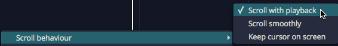
Options > Autoscroll behaviour
Autoscroll: Keeps the cursor in view during playback. Press S to turn it on or off. (Default: on)
Page scroll / Stationary cursor: Choose how the view follows the cursor. Page scroll pages the tracks over when the cursor reaches the right edge. Stationary cursor lets the cursor travel to the centre of the screen, then scrolls the tracks under it. (Default: Page scroll)
If you scroll the view yourself during playback, autoscroll is suspended until playback stops.
Moving On¶
For a detailed tour of the Edit tab, see The Edit Tab.
Getting Help¶
This chapter lists the ways to get help while you work with Waveform.
Pop-up Help¶
The first source of help is pop-up help. Press F1 to view pop-up help for the item under the pointer. To turn pop-up help off, untick Help > Pop-up help > Enable pop-up help. See Pop-up Help for an illustrated guide.
Roll-over Help¶
Roll-over messages in the upper right describe the item under the pointer.
The Help Menu¶
The Help menu collects the built-in sources of help:
| Item | What it does |
|---|---|
| About Waveform | Shows the About box, with the version number you'll need for a support request. |
| Check for updates | Checks whether a newer version of Waveform is available. |
| Get help > User guide PDF | Opens this manual (Shift + F1). |
| Get help > Tracktion Website | Opens the software help pages on the Tracktion website. |
| Pop-up help | Enable pop-up help turns pop-up help on or off, and Delay pop-up help messages makes it wait longer before appearing. |
| Show the First Run Setup panel | Shows or hides the First Run Setup panel. |
| Show the Waveform log file | Shows the log file in Finder or File Explorer, ready to attach to a support request. |
Quick Start¶
If you're new to Waveform, the Quick Start chapter at the front of this manual is the fastest way to get set up and making music. It takes you from installing through to your first recording and export, linking to the fuller chapters as you go. You can also open this manual at any time from Help > Get help > User guide PDF, or by pressing Shift + F1.
Ask the AI Assistant¶
The AI Assistant, in every edition, can answer questions about how Waveform works and about your project. Once you've chosen a profile on the Settings > AI page, click the Assistant tab in the Browser and ask in plain language.
Keyboard Shortcut List¶
The keyboard shortcut list is a good way to get to know Waveform. Open Settings > Keyboard Shortcuts to see every assignable action, grouped by category.

View as HTML Button
To find a shortcut, type in the page's search box to filter the list by name, or click the Press keyboard to filter box and press a key to see what it does. To print the list, click View as HTML... to load it in your web browser.
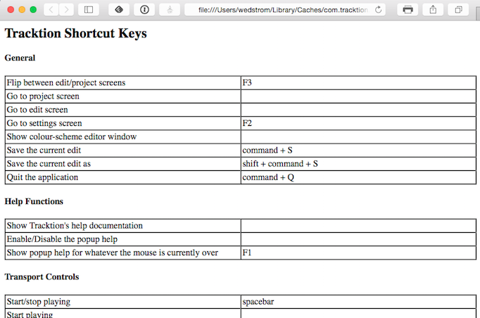
HTML View of Keyboard Shortcuts Assignments
Tracktion Videos¶
The official Tracktion YouTube channel is the best place for video tutorials, feature walkthroughs, and update overviews, with new videos added regularly. Browse the playlists to find videos grouped by topic.
The Tutorial Videos page on the Tracktion website also has a selection of training videos, and Groove 3 has a large library of music production courses.
Tracktion Forums¶
The long-standing official forum for Waveform Software is hosted at KVR. This is the most active Waveform forum, where you can talk to other users, Tracktion staff and developers.
There is also a private Tracktion Users Group on Facebook. If you use Facebook, ask to join; Tracktion staff are members too.
The Waveform Software official Facebook page has updates, news about Waveform, promo offers and profiles of Waveform artists ("Tracktioneers").
Tracktion Support¶
Bug reports and feature requests get resolved fastest when they follow the checklist below.
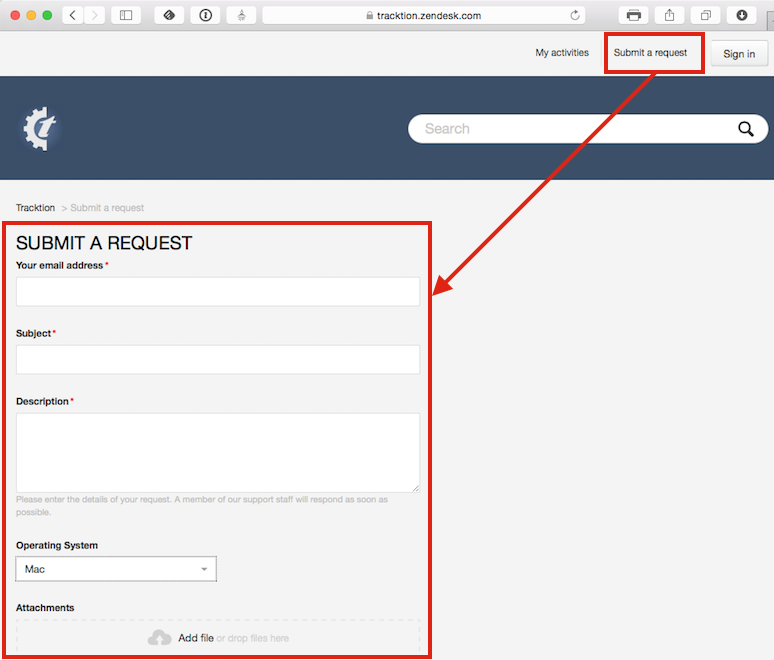
Waveform Request Form
Request Form Checklist:
- Use "FR:" in the title for feature requests
- Use "BR:" in the title for bug reports
- Include the Waveform version number (from the Waveform About box)
- Include your operating system and version
- Note your system specs like processor type and the amount of RAM
- List the steps to recreate the bug
- Attach the log file (Help > Show the Waveform log file)
- Attach or link to a screenshot or screen recording
- Report one issue at a time
Follow these same guidelines when posting bugs and feature requests to the KVR Waveform Software forum.
Moving On¶
Next, The Edit Tab explains the layout of the Edit tab, where most of your work in Waveform happens.
The Edit Tab¶
The Edit tab is where you record, arrange, edit and mix an Edit. This chapter walks through its layout and the names of its parts, which the rest of this book uses throughout.
📝 Note: The keyboard shortcuts in this chapter are the default key mappings. To follow along, restore them with Settings > Keyboard Shortcuts > Reset to Defaults > Restore default Waveform key mappings.
The Parts of a Waveform Edit¶
The Edit tab is made up of several panels: the Browser, the Arrangement (with an inline mixer beside each track), the Actions panel, the Detail Editor, the Mixer and the transport bar. All of them except the transport bar can be shown or hidden from the View menu.
The Detail Editor sits at the bottom of the Edit and shows the selected clip, track or plugins in more detail (View > Show Content Editor). See The Detail Editor. The Mixer shows every track as a vertical channel strip (View > Show Mixer, or M). See The Mixer below.

Parts of the Edit tab: A, Browser. B, Arrangement. C, transport bar. D, Actions panel
The Browser¶
The Waveform Browser sits on the right side of the Edit by default. You can open or close it by pressing B, by choosing View > Show Browser, or by clicking the eye button at the top right of the window and then clicking the Browser block. Its tabs give you quick access to actions, media, plugins, tracks and markers.
💡 Tip: You can dock the Browser on the left, right or top of the Edit. Click the eye button at the top right of the window, then drag the Browser block in the pop-out to the left, right or top edge.

Browser Open/Close Icon, A. Browser Tabs, B.
The Browser tabs are:
Actions: The Actions tab shows context-sensitive actions and properties for whatever you currently have selected. See The Actions Panel for full details.
Files: The Files tab is a filesystem browser for navigating directly to audio files on your system, the Project folder, or your drives. You can bookmark folders for quick access to your loop libraries, and audition files before dragging them in. See The Files Tab in The Browser chapter.
Search: The unified Search tab lets you search plugins, plugin presets, rack presets, samples and loops, clip presets and track presets in one interface, filtered by category and by tags. This is the main content browser. See The Browser.
Groups PRO: The Groups tab lists your Edit Mix Groups and lets you create and manage them. It needs Waveform Pro or the Recording Engineer Expansion. See Edit Mix Groups.
Tracks: The Tracks tab lists the tracks in the Edit, each with Hide and Disable buttons. To tag tracks, select them and fill in Tags in the Actions panel. The Tags box below the list shows the tags in use; click the ones you want, then turn on Show Only Tagged Tracks to filter the arrangement down to the tracks with those tags.
Markers: Use the Markers tab to add bars & beats or timecode markers to the Marker track. Click a marker's name to jump to it. You can delete the selected marker, or change its name or marker type, in the Actions panel.
Plugin: The Plugin tab hosts a single plugin running live on the Edit's main output. Use it for a tuner, analyser or other tool you want always on hand. It is shown by default; to remove it, turn off Show Plugin panel in browser in Settings > Plugins (the change takes effect the next time you open an Edit). See The Plugin Panel.
Assistant: The Assistant tab hosts the AI Assistant, a chat panel where you can make natural-language requests. It is shown by default; to hide it, turn off Enable AI Assistant in Settings > AI. See The AI Assistant.
For more about the Browser, see The Browser.
💡 Tip: Resize the Browser by dragging its inner edge (the one facing the arrangement). This helps with the Search tab, whose columns can otherwise be cut off.
The Arrangement¶
The Arrangement is made up of the Timeline, Track Headers & Inputs, Tracks, and the inline mixer.

Parts of the Arrangement: A, The Timeline. B, Track Headers & Inputs. C, Tracks. D, The inline mixer
Timeline¶
The Timeline acts as a ruler, measuring the time of the Edit. It usually shows bars and beats, but you can right-click it to show seconds and milliseconds, or seconds and frames, instead.
The Timeline is related to several other onscreen features:
In marker and Out marker: The range between the In marker and the Out marker defines what is called the "marked region" in Waveform. In other DAWs this is often called the "loop" or "cycle". The marked region defines looped playback, loop recording, and many of Waveform's editing options. The keyboard shortcuts are I to position the In marker, and O to position the Out marker.

In marker and Out marker
Tempo Track: When open, the Tempo track appears below the Timeline. This is where you set the tempo and tempo changes. Press F9 to open or close it.

Tempo Track
Marker Track: The Marker track opens below the Timeline. It can show bars & beats markers (such as song sections), absolute markers in terms of hours:minutes:seconds and milliseconds, or both combined. Show or hide it with F10. The Cycle Marker track view mode command steps through the combined, bars & beats, absolute and hidden views; it has no default key.

Marker Track
Other Global Tracks: The Tempo and Marker tracks are two of the global tracks that sit between the Timeline and your tracks. The Master track is in every edition. The Chord track PRO (Waveform Pro or the MIDI Producer Expansion) and the Arranger track PRO (Waveform Pro) have their own chapters: The Chord Track and The Arranger Track. In Waveform Pro the eye button's pop-out also has an Overview block PRO, a strip that shows the whole Edit. Show or hide each one from View > Global tracks, or hide them all at once with Show global tracks in the same submenu.
The Clip Object: The Clip object sits above the right side of the Timeline. Some Waveform users call it a "clip dragger" or "clip maker". Drag it to a track to create an empty clip of any of the four types: MIDI clip, Audio clip, Edit clip, or Step clip. Drop it on the Marker track to add a bars and beats marker or an absolute timecode marker, or on the Chord or Arranger track to insert a Chord or Arranger clip.

A Clip object, B Plugin object, C Modifier object
The Plugin Object: Drag the Plugin object to the inline mixer of any track to insert an audio effect plugin or virtual instrument. When you drop the Plugin object, you get a menu of all available plugins and instruments. You can control the organisation of the menu from the Settings > Plugins page. Right-click the Plugin object to open the plugin selector without dragging, or drop it on an Audio clip to add a clip plugin. See Using Plugins for more about inserting and using plugins.
The Modifier Object: The small button to the right of the Plugin object is the Modifier object (Drag this onto a track to create a new modifier). Drop it on a track and choose a modifier type. The LFO is in every edition; Breakpoint, Step, Envelope follower, Random and MIDI Tracker need Waveform Pro or the MIDI Producer Expansion. See Modifiers.
Showing Panels and the CPU Meter¶
Show/Hide Panels: Several areas of the Edit tab can be opened for use or closed to declutter the screen. Click the eye button at the top right of the window to open a small map of the window, then click a block to show or hide that part: the Overview, Arranger, Tempo, Marker, Chord and Master tracks, the track inputs, the inline mixer, the Arrangement, the Detail Editor, the Mixer, the Browser, Quick Actions and the Actions panel. Some blocks only appear in editions that include those features. Right-click the eye button for the View menu, which has the same options. These are the default keyboard shortcuts:

Show Hide Buttons. A, Show/Hide the Tempo track. B, Show/Hide the Inputs. C, Show/Hide the inline mixer, D, Show/Hide the Actions panel, E, Show/Hide the Marker track
- Show/Hide Tempo track (F9)
- Show/Hide Marker track (F10)
- Show/Hide inputs section (Shift + F12)
- Show/Hide inline mixer (V)
- Show/Hide Mixer (M)
- Show/Hide Browser (B)
- Show/Hide plugins, Browser and Actions panel (Shift + F11)
The Actions panel has no default key. Use the Actions panel button at the left of the transport bar or View > Show Actions. Opt + F11 / Alt + F11 locks the Actions panel to the current selection.
CPU Meter: To the left of the eye button at the top right of the window, a round meter shows the audio engine's CPU load as a percentage, with a ring of segments that runs from green through yellow to red as the load rises. A warning triangle replaces the number when reading audio files from disk falls behind. If the load stays near 100%, Waveform shows a "CPU Overload!" message, turns off running the playback engine while stopped (press Panic to turn it back on) and, if the overload carries on, stops playback.
Click the meter to open the CPU Usage window for the Edit. Its top rows show the Sample Rate, Block Size and Block Duration, the average, maximum and minimum load, X-runs, and the input and output latency. Below them, a table lists the Edit's plugins (plus audio file reading) with each one's track, CPU time, CPU percentage and latency, and whether its track is monitoring a live input. The buttons are Low Latency Monitoring (disables the highest-latency plugins on tracks with live inputs), Freeze Edit to Lower CPU, Freeze Selected Tracks (shown when Group by Track is on), Show Selection In Edit, Group by Track, and Disable Selected Plugins / Enable Selected Plugins. The freeze buttons change to Unfreeze Edit and Unfreeze Tracks once the tracks are frozen.

The CPU meter beside the eye button, and the CPU Usage window it opens
The Track Section¶
Tracks appear as parallel lanes that contain and organise clips of audio and MIDI. Signal flows from left to right: from the inputs, to the clips for recording, to the inline mixer and its plugins, then on to the master output. Ordinary tracks can hold any kind of clip: Audio clips, MIDI clips, Step clips, or Edit clips. To create a new track, press T. Waveform also has Folder tracks and Submix tracks for grouping tracks, and automation tracks for automation curves.
Track Headers: The leftmost column of the Arrangement forms a list of track headers. Click the track name in a header to select that track; more track properties appear in the Actions panel. To rename a track, right-click the track header and choose Rename track. To reorder tracks, drag a track by its header to a new position.

Track Headers
Inputs: Inputs appear as right-facing rectangular arrows. Click an input for a menu that includes the available inputs, and use it to set up a track for recording. More input options are in the Actions panel. You can also drag an input to another track to continue recording.

Inputs
💡 Tip: Resize tracks using the zoom tools in the lower right corner of the arrangement.
Clips¶
You can drag in audio files and loops to build your Edit, or record them directly. The same goes for MIDI clips. Step clips are an in-line step sequencer, and a variation on MIDI clips. Edit clips embed an entirely different Edit into your Edit as a single clip. Select any kind of clip to see more properties and actions in the Actions panel.
Audio Clips: Audio clips are created during recording or can be dragged in from the Browser or desktop. Waveform has tools to split, combine and reverse Audio clips, or change their pitch, timing or speed. You can also edit Audio clips with Melodyne to adjust the intonation of recorded notes. Clip Layer Effects add more ways to process Audio clips; see Clip Layer Effects.

Audio Clip
MIDI Clips: MIDI clips are the Waveform container for MIDI performance data. The clips have many of the same editing features as Audio clips. Expand MIDI clips vertically to see the full in-line piano roll MIDI editor, which has tools for entering and editing MIDI notes.

MIDI Clip
Step Clips: Step clips are an inline step sequencer for entering MIDI notes on a grid. They suit drum beats and rhythms, and work for basslines, synth leads and other parts too. Some Waveform users program complete compositions entirely with Step clips.

Step Clip
Edit Clips: An Edit clip embeds an entire Edit into a clip. For complex drum programming, you can keep all the drums in a separate Edit. You can also compose songs in blocks: develop the verse, chorus and bridge in separate Edits and bring them together in another Edit. Teachers use Edit clips to record several students singing over the same underlying track.

Edit Clip
Edit clips behave like Audio clips in the arrangement. The difference is an extra section in the Actions panel for managing the link to the underlying Edit.

Edit clip properties
The Inline Mixer¶
Each track has an inline mixer next to its clips in the arrangement. For each track, signal flows from left to right: input to clips, clips to inline mixer, inline mixer to the master output. The inline mixer is where you arrange plugins to build the channel strip the track needs. If the track has MIDI clips, insert a virtual instrument as its sound source. To EQ a vocal, drop in an EQ.
The Volume & Pan and Level Meter plugins are installed by default, and you can remove, reorder or add more instances of them. By default every track has:

Inline mixer default setup: A Volume & Pan plugin, B Level Meter plugin, C Mute and Solo buttons, D output destination
Volume & Pan Plugin: This acts like the channel fader and pan controls on a conventional mixer. Click either control for a larger version that makes the level or pan easier to adjust. Select the plugin to see its full set of properties in the Actions panel.
Level Meter Plugin: The level meter shows the level of audio on the track. You can add more instances or put the meter anywhere in the track using drag and drop. You can change the meter response between Peak, RMS, and Sum & difference from the right-click menu or from the Actions panel.
Mute: The Mute button mutes and un-mutes the track. Right-click the Mute or Solo button for Mute, Solo and Solo isolate. The keyboard shortcut for mute is Shift + M.
Solo: The Solo button silences all other tracks so you can hear one track at a time. Solo behaviour in Settings > General (Mixing Defaults section) sets how Solo works when several tracks are soloed (Choices: Cumulative solo, Exclusive solo; Default: Cumulative solo). The keyboard shortcut for solo is Shift + S. From the right-click menu you can choose Solo isolate, which keeps the track playing when another track is soloed. This suits a track set up as an effects bus.
Output destination: The button at the far right shows where the track's output goes (a speaker icon for an audio device). Click it to change the output destination for this track.
💡 Tip: Right-click either Mute or Solo for a menu. From here you can reset every track with Reset all muted/soloed/isolated tracks, or keep solo isolate and use Reset all muted/soloed tracks (Shift + Opt + M / Shift + Alt + M).

Mute/Solo Right-Click Menu
The Mixer¶

The Mixer, with a channel strip for every track.
The Mixer displays every track as a vertical channel strip, like a hardware mixer. Open it with M, with View > Show Mixer, or by clicking the Mixer block in the eye button's pop-out at the top right of the window. Tab switches between the Arrangement and the Mixer. The clip launcher grid shown above the strips needs Waveform Pro or the Launcher Expansion; see Clip Launcher.
Menus¶
The main menu holds a full set of menus related to the Edit: File, Edit, Options, Automation, Click, Snap, Sync, Track, Video, View, Help and Actions. On macOS they are in the menu bar at the top of the screen; on Windows and Linux they are at the top of the window. This manual refers to these menus using a path syntax separated by "greater-than" symbols. For example, to set a one bar count-in, choose Click > Count-in > 1 bar.
In the File menu, File > Close this Edit closes the Edit's tab, and File > Export: Render to a file... opens the Render dialog (see Rendering and Stems).

The Edit menus
The Actions Panel¶
What is shown in the Actions panel depends on what object you have selected. Each track, input, clip, plugin, rack, and automation point has its own set of properties and actions. Click to select any object and the Actions panel automatically switches to show the values and actions relevant to whatever you have selected. This idea is central to how Waveform works. The Actions panel is a flat list at the side of the window, and can also be opened from the Browser. To show or hide it, click the Actions panel button at the far left of the transport bar, choose View > Show Actions, or click its block in the eye button's pop-out. Opt + F11 / Alt + F11 locks it to the current selection.

The Actions panel
The Transport Bar¶
The transport bar runs along the bottom of the window and contains cursor position information, the Transport, the master plugins, the master volume control, and a set of global control buttons.

The transport bar: A, left-hand buttons. B, transport bar buttons. C, the Transport. D, cursor position info. E, master plugins. F, Master level and meter
Cursor Position Info: At one end of the transport bar, a readout shows the tempo, time signature and key/scale at the cursor position, next to two clocks that show the location.
- Click the tempo to type a new BPM (20-300), or drag it to change the tempo.
- Click the time signature or the key to open their actions.
- Click and edit any part of a clock to move the cursor to that location.
You can also drag any of the components of a clock up and down to move the cursor. The upper clock matches the format you have set for the Timeline. The lower clock shows seconds when the Timeline shows bars and beats, and bars and beats otherwise.
The Transport: The Transport is made up of nine buttons: Read and Write (automation read and write modes), Play, Record, Panic, Rewind (back to the start of the Edit), Back, Forward and Retrospective Record, which creates clips from previously captured audio and MIDI input. The Panic button resets Waveform's audio engine. While you are recording, Abort and Abort & Restart appear in the lower row. You can assign keyboard shortcuts to all of them. See Recording Audio.
Master Plugins: The master plugins slot holds up to four plugins for final processing like compression and limiting. Drop plugins from the Browser or the Plugin object into it, or right-click it to add one. It is the same plugin chain as the Master track. To hide the master plugins, master volume and meter from the transport bar, turn off Show master plugins in transport bar in Settings > Appearance. (Default: on)
Left-Hand Buttons: At the left of the transport bar are the Actions panel button (Show or hide Actions panel), Undo and Redo, followed by buttons that appear only when their feature is available: Groove Doctor PRO (Show or hide Groove Doctor window, Waveform Pro or the Recording Engineer Expansion; see Groove Doctor), coloured waveforms PRO (Toggles displaying waveforms with frequency information, Waveform Pro or the DJ Mix Tools Expansion), Quick Actions PRO (Show or hide Quick Actions window, Waveform Pro; right-click it for the Quick Actions bar), MIDI typing (Show or hide MIDI typing window) and, when the Edit has a video, the Video window. Between these and the Loop, Click and other mode buttons sits the breadcrumb, which opens the action menu for the current selection (see The Actions Panel).
Transport Bar Buttons: The transport bar includes eight buttons to access commonly used global on/off functions. See Transport Bar Buttons below.
Master Level: The Master level sets the final volume of the entire mix, and its pan control sets the balance between left and right. The pan control usually stays centred.
Master Meter: The Master meter shows the final output level. Right-click the meter to set the meter mode or reset any overload indicators.
Transport Bar Buttons¶
These buttons toggle some of Waveform's most used functions. Each description includes the button's shortcut.

The transport bar buttons
Loop: Loop (L) turns looping between the In marker and Out marker on and off. This is for both playback and loop recording. Right-click it for Loop follows selection.
Click: Click (C) turns the metronome click on and off. Right-click it for the Click menu.
Auto Lock: Auto Lock is short for "Automation Lock". It locks automation to clips: when it's on, the automation curves follow the clips as you move them. The shortcut is Shift + Cmd + A / Ctrl + Shift + A.
Punch: With Punch (P) turned on, Waveform only records when the cursor is between the In marker and the Out marker.
Snap: The Snap (Q) button turns snap-to-grid on and off. Right-click it for the Snap menu.
Autoscroll: With Autoscroll (S) turned on, Waveform pans the screen to keep the cursor on screen during playback and recording. Right-click it to choose Page scroll or Stationary cursor.
MIDI Learn: Click MIDI Learn to enter MIDI Learn mode. In this mode you can assign external knobs and faders to on-screen controls.
MTC: With MTC enabled, Waveform chases sync to incoming MIDI Time Code. Unless you are still syncing to tape or hardware sequencers, leave MTC off.
Moving On¶
For more on the panels introduced here, see The Detail Editor, The Browser and The Actions Panel.
Layouts PRO¶
📝 Edition: Waveform Pro. In Waveform Free and OEM the Layout button is hidden and the save/load commands do nothing.
A layout saves the way the Edit window is arranged (which panels are showing, how big they are, and whether they are docked or floating) as a named preset you can recall from a menu. For example, save one layout set up for tracking, and a mixing layout with the Mixer enlarged and the Browser hidden, then switch between them.
Layouts only change the appearance of the window. They never change your audio, MIDI, clips, plugins, or any other project data.

The Layout menu
What a Layout Stores¶
A layout captures the state of the arrangement window's panels:
- The visibility, size, and docked/floating state of the Overview, Detail Editor, Mixer, Arrangement, and Browser, the global tracks (tempo, arranger, chord), the control/input/plugin strips, and the Quick Actions bar and Quick Actions window.
- The active Browser tab and the marker-track mode.
- The mixer strip layout: track width, big/small meters, and which mixer sections (inputs, modifiers, overview, clips, plugins, outputs, levels) are shown.
📝 Note: A layout doesn't store the arrange zoom level, per-track visibility, track heights, the cursor position, or the open/floating state of the Actions panel. Recalling a layout rearranges the panels; it leaves your view of the tracks themselves as it was.
📝 Note: Layouts are global (application-wide), not saved inside a project. The same set of layouts is available in every Edit, and applying one to the current Edit has no effect on other Edits you have open.
Saving and Loading Layouts¶
The Layout button (the dashboard icon at the right-hand end of the window's tab bar, next to the eye button, with the tooltip "Load or save the current view as a layout preset") opens this menu:
| Item | What it does |
|---|---|
| Save layout | Saves the current window arrangement as a named layout. |
| Show layouts directory | Opens the folder that holds your layout files in Finder or File Explorer. |
| Load layout | A submenu listing your saved layouts, plus a Factory submenu of the shipped ones. Click one to apply it. |
When you choose Save layout a dialog titled "Save Preset" appears, prompting "Enter a name for the preset:" with the current Edit's name filled in. Type a name and click Save. If a layout with that name already exists, Waveform asks "A preset with this name already exists, do you want to overwrite it?" with Overwrite and Cancel buttons.
💡 Tip: You can also open an Edit straight into a chosen layout. Click the + (New Tab) button, or right-click an Edit's tab. Each Edit listed under Recent Edits and in the project submenus has three buttons: the first opens it in the default view, the second in the Mixer layout, and the eye button lets you pick a layout to open it with.
To use keyboard shortcuts instead, assign the commands "Show the save view state dialog" and "Show the view state menu" in Settings > Keyboard Shortcuts. Neither has a default shortcut.
Factory Layouts¶
Waveform ships with four ready-made layouts under the Factory submenu of Load layout:
- Default
- Arrange
- Mixer
- Minimal
If any of them is missing, Waveform reinstalls it the next time you launch, but it never overwrites an existing factory file.
Managing Layouts¶
There is no in-app way to rename or delete a layout. Use Show layouts directory to open the folder of
saved layouts, then rename or delete the .view files in Finder or File Explorer.
Any subfolders you create become submenus in the Load layout list, which is handy for keeping sets of
layouts organised.
The Detail Editor¶
The Detail Editor is a panel for working closely with the currently selected track or clip. It has three tabs: Track, Clip and Plugins, chosen with the buttons down its left-hand edge.
Opening the Detail Editor¶
Choose View > Show Content Editor (the View menu's name for the Detail Editor), or double-click a clip's header. For MIDI and Step clips the double-click opens the Detail Editor unless Double-click MIDI clip header in Settings > General is set to Expands for in-line editing (see General settings: MIDI). On a Mac, Ctrl + P also shows or hides it (listed in Keyboard Shortcuts as Show or hide MIDI editor). Windows has no default shortcut, but you can assign one to Show or hide Content Editor in Settings > Keyboard Shortcuts.

The Detail Editor's Clip tab for an audio clip

The Clip tab for a MIDI clip, with the Piano Roll and Pattern Generator buttons
The Track Tab¶
The Track tab shows the MIDI editor for all the MIDI clips on the selected track. If the track has no MIDI clips, the tab shows Select a clip to edit.
Clip automation also lives here, on the right-hand side, where you can view and edit the automation curves recorded into the selected clip. See Clip Automation for how to work with them.
The Clip Tab¶
The Clip tab shows detail for the selected clip, and what you see depends on the kind of clip. With no clip selected it shows Select a clip to edit.
Audio Clips¶
For an Audio clip the tab shows a waveform view of the clip, with the clip's tempo and pitch settings on the right-hand side, such as Auto-Pitch, Auto-Tempo, Stretch, Warp Time, Root Tempo, Root Note and Beats. The same settings are also in the Actions panel.
Flags in the waveform view set the clip's start and end and, for a looping clip, its loop. A looping clip also shows a start flag that sets where playback starts within the loop. You can grab a flag anywhere along it. For a clip in a launcher slot, the end flag can be dragged past the end of the audio file, and the view follows the extra length.
Warp Time¶
When you enable Warp Time for an Audio clip, the waveform view in the Clip tab becomes the zoomable Warp Time editor, where you can add and drag warp points to bend audio into time. See Warp Time for the full workflow.
MIDI Clips¶
For a MIDI clip, two toggles switch the tab between Piano Roll, the MIDI editor scrolled to the clip, and Pattern Generator, which generates the clip's notes from a pattern. The Pattern Generator applies to every selected MIDI clip, and when more than one is selected the toggle shows how many, for example Pattern Generator (3). See Pattern Generator.
Step Clips¶
For a Step clip the tab shows the Step clip editor. See Step Clips.
The Plugins Tab¶
The Plugins tab shows the whole of the selected track's plugin chain and its modifiers as a row of panels you can open individually, so you can work on several of them at once. See The Plugins Detail Editor for the full chapter.
Moving On¶
For more on an Audio clip's loop settings, see Working With Loops, and for the Plugins tab see The Plugins Detail Editor.
The Plugins Detail Editor¶
The Plugins tab of the Detail Editor lays out a whole track's modifiers and plugins side by side, in signal order, as one scrolling row of panels you can open and close individually. Each panel holds the same pages you can pop out from the Actions panel and the modifier editor window (the Parameters list, the Faceplate, the Macro Parameters, the MIDI Controller Mappings), docked into the Detail Editor instead of floating above the arrangement.

The Plugins tab, with the Modifiers section on the left and the track's plugin chain on the right, most panels showing their Parameters page
📝 Note: The Plugins tab is available in all editions.
Opening It¶
The Detail Editor has a strip of mode buttons down its left-hand edge. Plugins is the third, below Track and Clip.
Which tab you last had open is saved with the Edit, so the Detail Editor comes back on the Plugins tab next time you open the Edit.
📝 Note: Which sections are shown, which pages you left open, whether each Parameters page's assignments were expanded, and how far the row was scrolled are all remembered for the rest of the session, but they are not saved into the Edit. Reopen the Edit and the tab starts with both sections shown and every panel collapsed. The tab you were last on is saved.
If you float the Detail Editor out into its own window, the Plugins tab comes with it and works the same way.
Which Track Is Shown¶
The tab follows the selection and resolves it to a track:
- Select a track and you get that track.
- Select a clip and you get the track it sits on.
- Select a plugin and you get the track that owns it. Plugins inside a rack are the exception: a rack's contents don't belong to a single track, so selecting one leaves the panel where it is. Select the Rack Instance or the track to show that track's chain.
- Select a modifier and you get the track it belongs to.
If your new selection doesn't resolve to a track at all (for example, when you click an empty part of the arrangement), the panel keeps showing the track it was already on rather than emptying out.
Until something resolves for the first time, a dimmed overlay reads Select a track, clip or plugin to edit.
Selecting a plugin or a modifier anywhere else in the app (in the mixer, or the arranger's plugin chain) scrolls its panel into view here.
💡 Tip: The row only ever scrolls sideways; every panel is as tall as the Detail Editor itself. Drag the Detail Editor's top edge upwards to give the open pages more height.
The Modifiers and Plugins Buttons¶
Two pill buttons sit at the top left of the tab: Modifiers (n) and Plugins (n), where n counts the panels in that section. A pill dims when its count is zero, so you can see at a glance that a track has no modifiers without switching anything on.
The two buttons are not mutually exclusive. Either, both, or neither section can be shown, and hiding one gives the other the full width. Hide both and the tab reads Both sections are hidden - use the Modifiers and Plugins buttons above.
💡 Tip: Turn the Modifiers pill off when you are only working on the plugin chain. The Plugins section then gets the full width, which helps when a plugin's Editor page is wide.
The Modifiers Section¶
A strip in the track's own colour runs across the top of this section, from the Track Parameters card to the last modifier panel, so it stays clear which track you are editing.
If the track has no modifiers yet, the section reads No modifiers on this track.
Track Parameters¶
The first card in the section is Track Parameters: every automatable parameter on every plugin in the track, with a search box at the top to find one quickly. This is the same list that appears down the right-hand side of a modifier's editor window, and it works the same way: it is the target you click when you have put a modifier into assignment mode, and each entry has its own knob setting how far that modifier moves the parameter. See Assigning to Parameters in the Modifiers chapter.
Here it is shown once for the whole track, at the start of the section, instead of inside every modifier's settings page. That leaves the modifier panels themselves narrower and lets several of them share the screen.
Use the arrow button in its top-left corner (Show or hide the track parameters list) to collapse the card down to a narrow strip with its title rotated into it, freeing up the width when you don't need it.
On the Master track the list covers the master plugins plus the master volume plugin.
A Modifier Panel¶

An LFO modifier panel with its Modifier Settings and Parameters pages open, next to the Track Parameters list
Each modifier on the track gets its own panel. Down the left-hand strip, from top to bottom:
- The small modifier tile: the same object you see above the plugins in the track's mixer area.
- The enable / bypass power button (Enable or bypass this modifier).
- The options gear button (Modifier options), which opens the same Options menu described in the Modifiers chapter: Colour, Remap on Tempo Change, Highlight Controlled Plugins and Select Plugins.
- The modifier's name, rotated to run up the strip.
- Three page toggles at the bottom: Modifier Settings, Parameters and Assignments.
Switch a toggle on and that page opens to the right of the strip; switch it off and the panel shrinks back. Several pages can be open at once, each one widening the panel.
The tile behaves as it does in the mixer: click it to select the modifier, double-click to open the modifier's own editor window, and drag it to make an assignment.
Right-clicking anywhere on the panel (not just the tile) gives the modifier's usual menu: Enable / Disable, Delete, and a Remove assignment section listing every parameter this modifier currently drives, so you can unhook them one at a time.
The selected modifier's panel is drawn with a white outline, the same highlight used for a selected plugin in the mixer.
Adding and Reordering Modifiers¶
The + button at the end of the section adds a modifier to the track. The LFO is offered in every edition. The Breakpoint, Step, Envelope follower, Random and MIDI Tracker modifiers need Waveform Pro or the MIDI Producer Expansion.
To reorder them, drag a modifier panel sideways. A coloured insert line shows where it will land. Reordering works within the one track only: you can't drag a modifier in from a different track or out of a rack this way.
To delete one, right-click its panel and choose Delete.
The Plugins Section¶
A Plugin Panel¶

The 8-Band Equaliser and Compressor panels with their Editor pages open, beside a collapsed VCA panel showing just its strip
There is one panel per plugin in the track's chain, in signal order. Unlike the mixer, nothing is hidden: the built-in Volume & Pan and Level Meter plugins that sit at the end of every track get panels here too.
Down the left-hand strip, from top to bottom:
- The show / hide plugin window button (Show or hide the plugin's window), which opens the plugin's own floating window and closes it again.
- The enable / bypass button (Enable or bypass this plugin).
- The plugin's name, rotated to run up the strip.
- A toggle for each page the plugin has, at the bottom.
The name strip does more than label the panel:
- Click it to select the plugin, which also shows it in the Actions panel.
- Double-click it to rename the plugin. A Rename Plugin dialog appears; leave the box empty to go back to the plugin's own name.
- Drag it to move the plugin, either to another position in this row, or straight out to the mixer or the arranger's plugin chain. Hold a modifier key while you drag to copy the plugin instead of moving it.
Right-clicking a plugin panel gives the plugin's full standard menu, the same one you get on its mixer or arranger slot, with Enabled, Add plugin to left, Delete plugin, Replace this plugin, the preset and rack items, and the rest. See Working with Plugins.
A Level Meter plugin has no pages at all, so its strip shows a live output meter in the space the page toggles would have taken.
The Pages¶
Only the pages a plugin has get a toggle, so a simple utility plugin may show one and a big instrument several.
Editor: the plugin's own interface, embedded inline in the panel. This is offered for Waveform's built-in plugins only: third-party VST and AU plugins always use their own window. Two more conditions apply: the plugin must have parameters, and its editor must be short enough to sit sensibly in the Detail Editor. Tall editors such as 4OSC and the Guitar amp's IR loader stay window-only, and you reach them with the show/hide window button in the strip. Editors that can resize, like the 8-Band Equaliser, stretch to fill the height you have given the Detail Editor.
Parameters and MIDI Controller Mappings: the same pages you can pop out from the plugin's Actions panel.
Faceplate PRO: the plugin's faceplate. Needs Waveform Pro, or the MIDI Producer Expansion or the DJ Mix Tools Expansion.
Macro Parameters PRO: the plugin's macro parameters. Needs Waveform Pro or the MIDI Producer Expansion.
On the Parameters page the assignments half starts collapsed in this embedded view, which keeps the page narrow. Click the expander down its edge to open the assignments out; the page widens to make room, and closes back to its narrow width when you collapse it again.
💡 Tip: Open the Parameters page on a modifier and the Editor page on the plugin it drives, side by side, and you can watch the plugin's controls move as you change the modifier's depth or rate.
Adding, Reordering and Removing Plugins¶
A + button sits in the gap between every pair of panels (Insert a plugin here) and one more at the end of the row (Add a plugin to this track). Either opens the plugin selector, and the new plugin lands at that point in the chain.
You can also drag plugins in from the mixer or from the arranger's plugin chain, and drag them out of here to either. A vertical line shows where the drop will land.
To remove a plugin, right-click its panel and choose Delete plugin, or select it and press Delete.
Assigning a Modifier to a Plugin¶
Because both sections are on screen at once, you can assign a modifier to a plugin parameter by dragging straight from one to the other.
Drag the modifier tile out of a modifier panel and across to the Plugins section. Any plugin panel you pass over is drawn with a white outline to show it will take the drop.
Drop it and the plugin's parameter menu opens: its macros in a submenu at the top, then all of its parameters. Pick one and the modifier is assigned to it, as if you had dropped the modifier onto that plugin in the mixer.
The whole panel is the drop zone, including any pages you have open, so you don't have to aim for the narrow strip.
Plugins with no parameters of their own (such as the Level Meter) never highlight and never accept the drop.
📝 Note: Individual parameter rows inside an open Parameters page are not separate drop targets. To assign to one specific parameter, either use the drop menu above, or put the modifier into assignment mode and click the parameter in the Track Parameters list. See Assigning to Parameters.
Controls¶
| Control | Type | Description |
|---|---|---|
| Plugins | Mode button | The third button in the Detail Editor's left-hand strip, below Track and Clip. Switches the Detail Editor to this tab. |
| Modifiers (n) | Toggle pill | Shows or hides the Modifiers section. n is the number of modifier panels; the pill dims when it is zero. |
| Plugins (n) | Toggle pill | Shows or hides the Plugins section, with the same count and dimming. |
| Show or hide the track parameters list | Arrow button | Collapses the Track Parameters card to a narrow strip, or opens it again. |
| Enable or bypass this modifier | Power button | Turns an individual modifier on or off without deleting it or its assignments. |
| Modifier options | Gear button | Opens the modifier's Options menu (Colour, Remap on Tempo Change, Highlight Controlled Plugins, Select Plugins). |
| Modifier Settings / Parameters / Assignments | Page toggles | Open and close a modifier's three pages beside its strip. |
| Add a modifier to this track | + button | Adds a modifier at the end of the section. |
| Show or hide the plugin's window | Toggle button | Opens the plugin's own floating window, or closes it. |
| Enable or bypass this plugin | Power button | Bypasses the plugin, leaving it in the chain. |
| Plugin name strip | Rotated label | Click to select, double-click to rename, drag to move or copy the plugin. |
| Page toggles | Icon buttons | Open and close the plugin's Editor, Parameters, Macro Parameters, Faceplate and MIDI Controller Mappings pages. |
| Insert a plugin here | + button | Inserts a plugin at that point in the chain. |
| Add a plugin to this track | + button | Adds a plugin at the end of the chain. |
⚡ Things to Watch Out For¶
- Dragging the name strip moves the plugin. A drag of a few pixels picks the plugin up, and dropping it on the mixer or another track's chain moves it there. Click without moving the mouse when you only want to select it.
Moving On¶
For the modifiers themselves (what each type does and the controls they share), see Modifiers. For plugins in the mixer and the arranger's plugin chain, see Using Plugins, and for the other two tabs of this panel see The Detail Editor.
The Browser¶
The Browser is the tabbed panel at the side of the Edit tab (on the right by default). Its Search tab finds and previews plugins, presets, samples, clips and tracks, and most of this chapter describes it. The Files, Tracks and Groups tabs are covered at the end.

The Search tab of the Browser showing Packs content with folders expanded. The category list on the left lets you filter by category, and the results area on the right displays matching items in a tree view.
Opening the Browser¶
If the Browser is not visible, choose View > Show Browser from the main menu or press B. Click a tab at the top of the Browser to switch to it. To move the Browser to the left, right or top of the window, change Browser position in Settings > Appearance.
The Browser's other tabs are covered elsewhere: Actions in The Actions Panel, Markers in Using Markers, Plugin in The Plugin Panel (you can hide it with Show Plugin panel in browser in Settings > Plugins), and Assistant in The AI Assistant. The Search, Files, Tracks and Groups tabs are described below.
The Search Tab¶
Click the Search tab at the top of the Browser to search your library. It has a tags bar and a search box at the top, the category list on the left, the results area to the right of the category list, and the preview area at the bottom.
Tags¶
At the very top of the Search tab is a collapsible Tags bar. Tags are labels attached to your samples, presets and other library content, and they let you narrow down results without typing a search.
Drag the divider just below the tags area to resize it, or drag it all the way up to hide the tags. The tags shown depend on the current results, so you only see tags that apply.
💡 Tip: If you use tags a lot, keep the tags bar open and give it some height, so you can combine a tag with a category. For example, select Packs in the category list and then click a "Bass" tag.
The Search Box¶
Below the tags bar is the Search box. Type here to filter the results within whatever you have selected in the category list. The results update as you type, so you don't need to press Enter. A spinning icon shows while results are being fetched; with thousands of samples, the first search or category you open can take a moment.
💡 Tip: Press Return while the Search tab has focus to restart the preview of the selected item, so you can listen again without reaching for the mouse.
The Category List¶
The category list runs down the left side of the Search tab, in four sections. Only one item can be selected across all four sections at a time, so clicking an item in one section deselects any item in the others.
Favourites¶
The Favourites section shows the tags you have marked as favourites, so your most-used tags are one click away. If you haven't set any, it shows "None set."
To add a favourite, click the + button next to the Favourites heading. A menu lists all the available tags: click a tag to add it, and click it again to remove it. Favourite tags show a filled colour dot next to their name.
Right-click any favourite tag for two options:
- Remove from favourites: removes the tag from this list
- A colour picker that gives the tag its own colour, so it stands out in both the category list and the results list
When you select a favourite tag, the results area shows all content tagged with that label.
Categories¶
The Categories section lets you filter by content type. The available categories are:
- Plugins: all installed audio plugins (VST, AU, etc.), plus the current Project's Cmajor patches
- Presets: plugin presets
- Racks: rack presets
- Samples: audio and MIDI files in your libraries
- Clips: clip presets
- Tracks: track presets
- All results: everything, unfiltered by type
Each category has its own icon. When you first open the Search tab, All results is selected.
Smart Lists¶
Smart Lists show content based on what you're working on:
- Packs: the content packs you have installed, which are the bundled and downloadable sound libraries
- Edit: all the assets used in the open Edit. When this is selected, a Consolidate button appears at the bottom, which copies any external files into the project folder
- Project: all the assets in the current Project. When this is selected, a Consolidate Project button appears
- Recent: recently used items
💡 Tip: Check the Edit and Project smart lists before you share an Edit. If the Consolidate button is active, some files live outside the project folder and could go missing if you move the Project.
Bookmarks¶
The Bookmarks section holds folders on your computer that you want to reach quickly. Click Add folder... at the bottom to pick a folder and bookmark it.
Select a bookmark to show that folder's contents in the results area. To remove one, right-click it and choose Remove Bookmark.
💡 Tip: Bookmark your sample library folders, loop collections and any other folders you often pull sounds from.
The Results Area¶
The main area of the Search tab shows your results in a tree view. Depending on what you selected in the category list, you see either a folder hierarchy or a flat list of items.
Columns¶
The results header can display up to five columns:
- Name: the item name, shown with a type-specific icon (waveform for audio, MIDI icon for MIDI files, plugin icons, etc.)
- Tags: any tags assigned to the item
- Location: the file path on disk
- Size: the file size
- Date: the creation date
Click a column header to sort the results by that column, and click it again to reverse the order.
Show Folders Toggle¶
At the bottom-left of the Search tab, below the category list, is the Show Folders checkbox. (Default: on)
- On: results are shown in their folder hierarchy, with expandable folders
- Off: results are shown as a flat list, which can be easier to scan when there are a lot of items
Browsing and Selecting¶
Click any item in the results list to select it. The preview area at the bottom shows information about the item and, if Auto-play is on, starts playing it.
Double-click an item to insert it into your Edit at the current insert point. For audio and MIDI files, this creates a new clip. For plugins, this inserts the plugin on the selected track.
Drag and Drop¶
Most of the time, you use the Search tab by dragging items from the results area onto tracks in your Edit:
- Find a sample, preset or plugin in the Search tab.
- Drag it onto a track.
- Release the mouse button to place it.
Hold Shift while dragging audio files to place them on consecutive tracks instead of the same track.
You can also drag files into the Search tab from your operating system's file manager. Audio files you drop there are added to your loop library, and preset files are imported into your preset library.
Right-Click Menu¶
Right-click an item in the results list for options that vary by item type:
For all items:
- Set tags...: opens a dialog to edit the item's tags
- Set tags from favourites: a submenu showing your favourite tags as quick toggles. Filled dots indicate tags already assigned; click to add or remove
For audio/MIDI files:
- Delete file: moves the selected files to your system's trash (the Trash on macOS, the Recycle Bin on Windows), after asking you to confirm
- Open the folder containing this file...: reveals the file in your system's file manager
For presets:
- Edit Preset...: opens the preset editor
- Delete Preset: removes the preset
- Export Preset...: saves the preset to a file
- Import Preset...: imports a preset from a file
- Open the folder containing this file...: reveals the preset file in your file manager
⚠️ Warning: Deleting a preset from the right-click menu can't be undone.
The Preview Area¶
The preview strip at the very bottom of the Search tab shows information about the selected item, with playback controls.
Audio and MIDI Preview¶
When you select an audio or MIDI file, the preview strip displays:
- Two info labels showing file details (format, sample rate, bit depth, duration, etc.)
- A waveform or MIDI thumbnail showing the content at a glance
- A Play button to start playback (switches to a Stop button while playing)
- A menu button (three horizontal lines) for playback options
- A volume control for the preview output level. It is separate from your Edit's master volume, so check it first if you can't hear previews
- A level meter showing the preview output level
Preview Playback Options¶
Click the menu button (the three-line icon) in the preview area for these settings:
- Play all: starts playback of all the previews in the Browser
- Stop all: stops all previews
- Match tempo: time-stretches the previewed audio to match your Edit's tempo, so you hear loops at your Edit's BPM
- Match pitch: pitch-shifts the preview to match your Edit's key
- Re-trigger on play: restarts the preview when your Edit begins playback
- Sync to Edit: synchronises preview playback with the Edit's transport position
- Auto-play: automatically plays a file when you select it in the results list. (Default: on)
- Loop: loops the preview continuously. (Default: on)
- Preview all MIDI clips as drums: forces all MIDI previews to use a drum sound, which is helpful when browsing MIDI patterns intended for drum kits
💡 Tip: Leaving Auto-play and Loop on suits most work: you can audition content by clicking through the results list, without pressing Play each time.
Preset Preview¶
When you select a plugin or track preset rather than an audio file, the preview area shows:
- A text description of the preset
- A visual thumbnail showing the plugin chain (each plugin displayed as a shaped block with its name)
- A Preview button that turns on live preview of the selected preset, played from your inputs
- An Inputs button to choose which MIDI inputs feed the preview
- An Outputs button to select the audio output for preview playback
With live preset preview, you can play a synth preset from your MIDI controller before you decide to use it.
📝 Note: For live preset preview to produce sound, at least one of your selected MIDI inputs must have input monitoring enabled. Only the first four selected inputs are used. If no inputs have monitoring on, or you have selected more than four, a warning icon appears.
The Files Tab¶
The Browser also has a separate Files tab. Where the Search tab organises your library by category and tags, the Files tab is a plain file browser: a folder tree you navigate like your operating system's file manager. It is the quickest way to bring in audio that isn't part of your tagged library.

The Files tab browsing a folder of audio files
Choosing What to Browse¶
The folder button at the top of the tab opens a menu of starting locations:
- Project files: the audio files registered in the current Project
- Project folder: the Project's folder on disk
- Drives: the drives and volumes on your system, so you can browse anywhere
- Refresh: re-scan the current folder to pick up files you have just added
- Bookmark current folder: bookmarks the folder you are viewing, so you can go back to it in one click (Delete bookmark for current folder removes it again)
Use the up-arrow button to move up to the parent folder.
💡 Tip: Bookmark the folders where you keep your loops and one-shots. That's the fastest way to reach a sample library you haven't tagged for the Search tab.
Auditioning and Inserting¶
The Files tab lists audio files (plus SoundFont .sf2 and .sfz files) and has the same preview strip at the bottom as the Search tab, so you can audition a file before you use it. As in the Search tab, drag a file onto a track to place it, double-click to insert it at the cursor, or hold Shift while dragging to spread several files across consecutive tracks.
Right-click a file in the list for these options:
- Set tags...: edit the tags of the selected files. Only available for files that are in your loop library.
- Open the folder containing this file...: reveals the file in your system's file manager.
- Browse to folder containing this file: switches the tab to the file's folder. This helps when you are viewing Project files, which gathers files from several folders.
- Delete File: moves the selected files to your system's trash, after asking you to confirm.
📝 Note: The Files tab browses your filesystem directly, so it shows files whether or not they have been tagged or added to your library. Dragging a new file in from here does not add it to your loop library. Use the Search tab for tagged, searchable content.
The Tracks Tab¶
The Tracks tab is a compact track list where you can tag your tracks and then show only the ones you are working on. In a large arrangement, with dozens of tracks across drums, vocals, synths and busses, you can show only the "Drums" tracks, for example, without hiding everything else by hand. The tab is available in every edition.

The Tracks tab, showing the track tree, the tags bar, and the Show Only Tagged Tracks button at the bottom
Opening the Tracks Tab¶
Click the Tracks tab at the top of the Browser. The tab lists every track in the Edit as a tree, with Folder tracks expandable. Each row shows the track's colour, icon and name, with a Hide button and a Disable button on the right; these match the show/hide and enable/disable state in the track header. Selecting a row here selects the track in the Edit, and vice versa.
Tagging Tracks¶
Tags live on the tracks themselves, so you assign them from the track's Actions panel rather than from this tab:
- Select one or more tracks (Cmd-click / Ctrl-click to multi-select).
- In the track's Actions panel, find the Tags field.
- Type one or more tags, separated by commas (for example
Drums, Verse). The same tags are applied to every selected track.
Only audio tracks, Folder tracks and automation tracks can be tagged.
Filtering by Tag¶
The tags bar in the middle of the tab lists every tag in use on your tracks. Click a tag to turn it on, and click more than one to combine them. With at least one tag on, turn on Show Only Tagged Tracks (the button at the bottom of the tab) and the timeline shows only the tracks that carry an enabled tag. Their tagged parent folders and tagged child tracks stay visible too, so the folder structure is kept. Turn the button off to bring every track back; Waveform remembers the tag selection.
Control Reference¶
- The track tree lists all tracks, and its selection is synced with the Edit. Each row has a Hide and a Disable button.
- The tags bar lists the tags in use. Click a tag to turn it on or off for filtering.
- Show Only Tagged Tracks: toggle; when on, only tracks with an enabled tag (and their tagged folders/children) are shown in the arrangement. (Default: off)
📝 Note: If no tags are enabled, or you haven't tagged any tracks, Show Only Tagged Tracks has no effect: the filter only works once at least one tag is enabled.
The Groups Tab PRO¶
📝 Edition: Waveform Pro, or with the Recording Engineer Expansion. In other editions the Groups tab doesn't appear.
The Groups tab is where the Browser handles Edit Mix Groups, which link several audio tracks so that an action on one (a fader move, a mute and so on) is mirrored on the rest. Here you can see every group in the Edit, create new ones, and switch them on and off.

The Groups tab, listing the Edit's mix groups
Each row shows the group's name in the group's colour. A small * appears next to any group that contains a selected track, so you can see which groups your selection belongs to.
- Create New Group: the button at the bottom of the tab makes a new group from the selected audio tracks, and selects the new group so you can name it and set its options straight away. See Creating and Managing Groups for the other ways to build a group.
- Disable: each row has its own Disable button, which bypasses that group only and leaves the others alone. Use it to adjust a single track without taking it out of the group for good.
- Double-click a row to open that group's property page, where you choose which operations the group links (volume, mute, pan, solo and so on). The full list is in What Gets Linked.
- Click a group to select it (Cmd-click / Ctrl-click to select several), and press Delete to remove the selected groups. Deleting a group never deletes its tracks.
💡 Tip: A track can belong to more than one group at once. The coloured circle in the track header shows a slice for each group it is in. See The Track Header Group Icon for details.
⚡ Things to Watch Out For¶
- Tags are shared across your library. When you tag a sample or preset, the tag is stored globally, so removing a tag in one Browser view removes it everywhere.
Moving On¶
For more on presets and racks, see Plugin Racks and Using Plugins.
The Actions Panel¶
The Actions panel gives you a single place to see and run the things you can do to whatever you currently have selected. Select a track, a clip, a plugin, or a parameter, and the panel updates to show the actions that apply to it. It's also where you mark your favourite actions so they show up in the action menu in the transport bar.

The Actions panel showing actions for the current selection
How the Panel Works¶
The Actions panel is contextual. It watches what you have selected and shows a list of actions relevant to that selection. Click an empty area of the arrangement and you'll see Edit-level actions; click a track and you'll see track actions; click a clip and the list changes again.
Many actions aren't plain buttons. Depending on the action, a row might contain a toggle, a slider, a text field, or a dropdown, so you can change a value right there in the panel.
To run an action, click its row. For an action that holds a value, interact with its control directly: type into the text field, drag the slider, or pick from the dropdown.
Opening the Panel¶
There are a few ways to get to the Actions panel:
- Open the Actions tab of the Browser.
- Open it as a dedicated panel on the right side of the Edit tab.
- Use the Show Actions item in the View menu of the Edit tab.
- Toggle it from the eye button at the upper right, using the Hide/show the actions panel control.
- Float it into its own window so it stays visible while you work elsewhere.
You can also assign a keyboard shortcut to show and hide the panel. Look for the Show or hide actions panel command in Settings > Keyboard Shortcuts.
The Breadcrumb¶
At the top of the panel is a breadcrumb that shows the path to your current selection (for example, the track, then the clip, then a parameter within it). Click any item in it to jump back up to that level and show its actions.
This is handy when you've drilled down into a parameter and want to get back to the actions for the parent track or clip without re-selecting it in the arrangement.

The Actions panel showing the actions for a selected track.
Favourites and Display Modes¶
Three small icon buttons at the top of the panel switch between display modes, so you can trim the list down to the actions you use:
Favourites (filled star): Shows only the actions you've marked as favourites, which keeps the list short.
All actions (outline star): Shows every available action for the current selection, except the ones you've hidden. (Default)
Show hidden (eye): Shows everything, including actions you've hidden. Use this when you need to bring a hidden action back or run something you normally keep out of the way.
Marking Favourites and Hiding Actions¶
Each row has a star on its left edge. Click it to toggle that action as a favourite. Favourites are what the action menu in the transport bar shows by default, so this is how you build your own short list of go-to commands.
To hide an action you don't want cluttering the list, right-click the row (to the right of the star) and choose Hide. The same menu has a Favourite entry that does the same thing as clicking the star. Hidden actions only reappear when you switch to the Show hidden mode.
📝 Note: The display mode is remembered between sessions, and the Actions panel and the transport action menu remember their modes separately. You can have the panel showing all actions while the action menu shows only favourites.
Adding Macros¶
If the action you want doesn't exist as a built-in, you can add one of your own macros to the list. Click the Add Macro button at the bottom of the panel and pick a script from the menu. The macro is attached to the type of item you currently have selected, so it shows up whenever you select a similar item later.
See Macros for how to write and manage the scripts themselves.
Locking and Floating¶
On the dedicated Actions panel at the right of the Edit tab (not the Browser's Actions tab), two extra controls appear at the top left:
Lock: Locks the panel to its current contents so it stops following your selection. Use it to keep a particular set of actions on screen while you click elsewhere. Click it again to unlock and resume tracking the selection. Shortcut: Opt + F11 / Alt + F11 (Lock/Unlock Actions panel).
Dock / Undock: Pops the panel out into a floating window, or docks it back again. A floating Actions panel stays on top so you can keep it beside whatever you're working on.
The Action Menu in the Transport Bar¶
The transport bar at the bottom of the window has its own breadcrumb, which opens the same context-sensitive actions as a pop-up action menu without opening the full panel. Click the breadcrumb to open the menu for the current selection, then pick an action and the menu closes.
The transport breadcrumb carries the same favourites / all / hidden mode buttons as the panel, but it remembers its own setting independently, so the menu can show only your favourites while the docked panel shows everything. By default the menu shows your favourites only, which is why marking favourites in the Actions panel matters.
Shift-click the breadcrumb to see all actions for that item, ignoring the menu's usual mode. Use it to reach an action you haven't favourited without changing the menu's mode. When the menu is open, press Return or Escape to dismiss it, or click elsewhere.
📝 Note: If the menu opens empty in favourites mode, you'll see "No actions to show. Mark some actions as favourites." Mark a few favourites in the Actions panel, or Shift-click to see everything.
The Quick Actions Bar and Window PRO¶
📝 Edition: Waveform Pro.
Quick Actions is a separate feature from the action menu above. Instead of showing the actions for whatever you've selected, it gives you rows of buttons that you assign to specific commands: your own custom shortcut bars that stay put regardless of selection.

Rows of assignable Quick Actions buttons
Assigning Quick Actions¶
Each row is a Quick Actions bar of buttons. To add a button, click the + at the end of a row (Add a quick action button). To assign a command to a button, right-click it and choose a command from the Assign action submenu. The right-click menu also shows what's currently assigned and offers a Remove option. Use Rename to give the button your own label (leave it blank to go back to the command's name) or Reset name to undo that, and the colour picker in the same menu to colour the button. The Icon submenu puts an icon on the button: pick None or one of the installed icons, use Import from SVG file... to add your own, or Show icons folder... to open the folder they live in.

A Quick Actions button's right-click menu with the Icon submenu open
You can rearrange buttons by dragging them, and add or remove whole rows using the controls at the end of each row (Add a row / Remove this row).
Each set of buttons is saved as a named set, so you can keep different layouts for different jobs. The selector button at the left end of each bar shows the current set's name. Click it to switch to another saved set, or to manage them: New creates an empty set, Duplicate copies the current one, Rename renames it and Delete removes it (there's no undo for a delete).
The Quick Actions Bar (Above the Transport)¶
The Quick Actions bar can sit directly above the transport bar, always in view. To show or hide it, click the eye button at the upper right, then the Show/Hide the quick actions panel toggle. You can also use the View menu's Show Quick actions bar item, or assign a keyboard shortcut to the Show or hide the quick actions bar command. In this position the bar is limited to a handful of rows, enough for the commands you use most.
The Quick Actions Window¶
For a larger workspace, open the Quick Actions window, a floating window that combines a mixer with a much taller Quick Actions bar (up to thirty rows). Click the Quick Actions button (the shortcut-style icon) in the transport bar to toggle it, or right-click that button and choose Open Quick actions window.

The Quick Actions window, with the mixer above and Quick Actions below
Down the left edge of the window are three toggles that control what it shows: a mixer toggle, a Quick Actions toggle, and a touch mode toggle that enlarges the buttons for touchscreens. Turn off the mixer to use the window purely as a big board of action buttons, or turn off Quick Actions to use it as a standalone mixer.
💡 Tip: Assign a keyboard shortcut to Show or hide the quick actions window. Combined with touch mode, the window makes a handy control surface on a second monitor or tablet.
⚡ Things to Watch Out For¶
- If the panel looks empty, check the display mode. In Favourites mode, a selection with no starred actions shows a blank list. Switch to the all-actions (outline star) mode to see what's available.
Moving On¶
To build your own commands, see Macros for writing scripts, and Keyboard Shortcuts for assigning them to keys.
Using Markers¶
Waveform has four kinds of marker:
- In marker and Out marker: together these define the marked region, the range for looped playback and loop recording. See In Marker and Out Marker.
- Bars & Beats markers (B&B markers): clips on the Marker track that name song sections and give you quick navigation. See The Marker Track.
- Timecode markers (TC markers): Marker track clips fixed to a time offset, unaffected by tempo changes. See The Marker Track.
In Marker and Out Marker¶

In Marker and Out Marker
Drag the I and O flags along the Timeline to position the In marker and Out marker. Together they set the range that playback loops over when the Loop button in the transport bar is on. They also define the "marked region" that many editing actions work on.
📝 Note: In Waveform, "marked region" means the part of an Edit between the In marker and the Out marker, which is also the loop range. If you draw a marked region across tracks instead (see Working With a Marked Region), editing actions use that region until you clear it.

The In Marker and Out Marker
Press I to move the In marker to the cursor position, and O to move the Out marker there.
You can also "draw" the range between the In marker and Out marker: double-click the Timeline and drag right. The double-click places the In marker at the starting point, and the Out marker follows as you drag, setting the out point when you release the mouse button.
💡 Tip: To set the marked region over a selection of clips, select them and press A. This also works for Marker clips, so it's a quick way to set the In marker and Out marker over a song section.
Navigate Using the In and Out Markers¶
The square bracket keys jump to the In and Out markers. Press Shift + [ to move the cursor to the In marker, and Shift + ] to move it to the Out marker. On their own, [ and ] jump to the previous and next marker (see Navigating by Markers).
Zooming to the In and Out Markers¶
When you have a marked region set, you can zoom in to it: right-click the Timeline and choose Zoom > Zoom to fit marked region, or press F7.

Right-click the Timeline, Zoom to the In and Out Markers
Looping Playback Over the Marked Region¶
To repeat playback over a section of your song, set the In marker and Out marker around it and turn on the Loop button (L). Playback repeats that section until you stop it.

Enabling Loop Playback
📝 Note: When Loop is on, playback stays within the marked region. If the cursor is before the In marker or after the Out marker when you press Play, it jumps to the In marker and plays from there.
Auto Punch and the Marked Region¶
To use Auto Punch:
- Set the In marker and Out marker over the range where you want to punch in.
- Turn on the Punch button (P) in the transport bar, and make sure Loop is off.
- Arm a track for recording.
- Position the cursor before the In marker and press Record on the transport bar.
Even though the track is armed, nothing is recorded until the cursor reaches the In marker.

Enabling Auto Punch Recording
💡 Tip: With Auto Punch, recording only happens between the In marker and Out marker, and only while Loop is off.
The Marker Track¶

Marker Track
Show or hide the Marker track with the Marker button in the eye button's panel (the eye button is at the top right of the window), with View > Global tracks > Show Marker track, or by pressing F10.

Marker Track Show/Hide Button
Bars & Beats and Timecode Markers¶
Bars & Beats markers identify song sections, give you a visual guide to the song and let you jump quickly between its parts. They are clips on the Marker track, shown with a musical note icon, and appear as narrow pointers on the Timeline when the Marker track is closed.

Bars & Beats Markers on the Marker Track

Bars & Beats Markers on the Timeline (with Marker track closed)
Timecode markers mark a specific time offset into the Edit and don't move with tempo changes. They help with navigation, especially when working with video. TC markers appear as clips with a clock icon on the Marker track, and as rounded pointers on the Timeline when the Marker track is closed.

Timecode Marker on the Marker Track

Timecode Marker on the Timeline (with Marker track closed)
Choosing Which Markers Show¶
The Marker track can contain both Bars & Beats markers and Timecode markers. To choose which ones it shows, select the Marker track by clicking its header, then use the Markers setting in the Actions panel:
Markers (Choices: Combined, Bars & Beats, Absolute, Hidden): Which markers the Marker track shows. Combined shows both types together, Bars & Beats and Absolute show only that type, and Hidden hides the Marker track. (Default: Combined)

Marker Track Settings in the Actions Panel
📝 Note: By default F10 shows or hides the Marker track. The keyboard action Cycle Marker track view mode steps through the four Markers choices. It has no key by default, but you can assign one.
💡 Tip: Click any blank space in the Marker track to move the cursor there.
Adding Markers¶
There are several ways to add markers to the Marker track.
Drag the Clip Object¶
Drag the Clip object to the Marker track and choose which type of marker to create. This creates a Marker clip, which you can resize with its left and right trim handles or move by dragging its header.
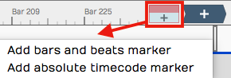
Adding a Marker by Dragging the Clip Object
Press Return¶
The Return key (Enter on Windows) does several marker-related jobs during playback. At its simplest, pressing Return adds a new marker at the cursor position. The new Marker clip is the same type as the most recently added marker, or, if a Marker clip is selected, the same type as that one. Markers added with Return take the next available marker number.
Right-click the Marker Track Header¶
Right-click the Marker track header and choose which type of marker to add at the cursor position.

Add a Marker from the Marker Track Right-click Menu
Marker Track Buttons in the Actions Panel¶
Click the Marker track header to select it. The Actions panel then shows the New Bars & Beats Marker and New Absolute TC Marker buttons.

Add a Marker from the Marker Track Actions Panel
The Add Button on the Markers Tab¶
You can add either kind of Marker clip with the Add button on the Markers tab of the Browser.

Add a Marker from the Markers Tab of the Browser
Marker Clip Properties¶

Marker Clip Settings in the Actions Panel
Marker clips behave like other clips in several ways: you can change their length with the trim handles, and split, drag, duplicate or nudge them. They also have these properties:
Number: Marker numbers are issued in sequence as you add Marker clips, and you can edit them. If you change Number to one that is already in use, the other clip gets the next available number. Marker numbers give you quick navigation during playback.
💡 Tip: If you renumber your markers into order, consider leaving gaps so new markers are easier to fit in. With a lot of markers in the song, for example, number them in 5s.
Type: Choose the type of Marker clip: Bars & Beats or Absolute. Bars & Beats markers follow tempo changes in the song. Timecode markers are fixed to a specific time offset into the Edit and are not affected by tempo changes.
📝 Note: Timecode markers are also called "absolute markers", "TC markers", or "absolute timecode markers" within Waveform. All those terms refer to the same thing. For this book, I usually call them Timecode markers.
Name: The name shown on the Marker clip. The default is "New Marker". Most users name markers after song sections, for example Intro, Verse, Chorus, Bridge or Outro.
Start: The start time, in bars, beats and ticks for B&B markers, or in Hours/Minutes/Seconds/Milliseconds for Timecode markers. For either type, edit Start to move the marker.
Length: The length, in Bars/Beats/Ticks for B&B markers or in Hours/Minutes/Seconds/Milliseconds for Timecode markers. Edit it to change the Marker clip's length.
End: The end time, in the same format as Start. When you edit End, Length adjusts to match and Start stays the same. If you set End before Start, it's set to the Start time and Length becomes zero.
Colour: Sets the colour of all selected Marker clips.
Navigating by Markers¶
Once you have markers set up, you can jump between them with the marker number and the Return key. Type a marker number such as 5 or 11 and press Return (Enter on Windows). As you type, the number appears in green in the upper right of the Waveform window. Once it appears, you have about two seconds to press Return before it disappears.
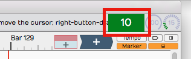
Marker Number As It Appears Momentarily
If you enter a number that has no matching marker, Waveform inserts a marker with that number at the cursor. Pressing Return on its own inserts a Marker clip at the cursor position.
Undo (Cmd + Z / Ctrl + Z) removes a marker if you didn't intend to insert it.
📝 Note: Quantise transport position changes PRO (on the Options menu and the Timeline's right-click menu, on by default) comes with the Clip Launcher, in Waveform Pro or with the Launcher Expansion. While it's on, a jump to a marker during playback waits for the global launch quantisation, so the Edit stays in time. This covers [ and ], typed marker numbers, double-clicks in the Markers tab and control surfaces. It only applies with a Bars & Beats timeline, and not while recording or when Global launch quantisation is off.
💡 Tip: Number + Return works when Waveform is stopped as well as during playback. If it doesn't seem to work while stopped, click the Marker track header or select any marker and try again.
The Browser Markers Tab¶
Use the Markers tab of the Browser to add Bars & Beats or Timecode markers to the Marker track, and to jump to any marker by double-clicking its name in the list. Select a marker there to delete it, or to rename it in the Actions panel.

The Markers Tab of the Browser
Select marker clips: Single-click a marker in the list to select it.
Navigate to a marker clip: Double-click a marker in the list to jump to that position. This works during playback too.
Rename a marker: Select a marker, then edit the Name property in the Actions panel.
Add a marker: Click Add at the bottom of the Markers tab. Select from the two types: Add bars & beats marker and Add absolute TC marker.

Adding a Marker from the Markers Tab
Delete a marker: Select a marker in the list and click Delete or press Delete on your keyboard. Undo (Cmd + Z / Ctrl + Z) restores a deleted marker.
Change a marker from one type to the other: Select the marker and edit the Type property in the Actions panel.
Renumbering Markers¶
Marker numbers easily get out of order. To renumber them, open the Markers tab in the Browser, select all the markers and edit the Number property. For example, if it shows "1" with all the markers selected, change it to "2": the markers renumber starting from 2. To number them from 1 again, repeat the step and change Number back to 1.
Moving On¶
For recording over the marked region, see Recording Audio and Loop Recording. For the rest of the Edit tab, see The Edit Tab.
Selecting and Snapping¶
This chapter covers selecting clips and groups of clips, snapping them to the bars and beats of your song, and nudging them. The examples use Audio clips and MIDI clips, but most of the techniques also apply to Step clips, Edit clips and markers.
Selecting a Clip¶
To select a clip, click it. The clip is highlighted and its properties appear in the Actions panel.

A Selected Clip
Auditioning a Clip¶
To audition a clip, double-click it. Playback starts where you double-clicked. Click within the clip to jump to a new spot as playback continues, and click anywhere outside the clip to stop. Moving pointers above and below the clip show the playback position.

Audio Clip Being Auditioned
Auditioning solos the clip: everything else in the Edit is muted while it plays.
Selecting Multiple Clips¶
To select more than one clip, hold Cmd / Ctrl and click each clip you want to add to the selection.

Multiple Clips Selection
With several clips selected, you can work on them as a group, for example dragging, duplicating or deleting them. Clip editing is covered in Audio Clips and Editing Audio. To clear a multiple selection, press Esc.
You can also make a multiple selection with the lasso tool:

Multiple Selection with Lasso
- Hold Opt / Alt until you see a plus cursor.
- Drag to draw a yellow box. Anything the box touches is selected.
💡 Tip: To refine a multiple selection, hold Cmd / Ctrl and click any clip you want to deselect.
Shift Selecting Clips¶
Shift-select is a quick way to select a run of adjacent clips:
- Select the first clip.
- Hold Shift and click the last clip. This selects the first clip, the last clip and all the clips in between.
Shift-select works for clips on a single track and across several tracks.
💡 Tip: Shift-select also works for many other kinds of Waveform object, including Browser lists and tracks.
Deselecting Clips¶
Press Esc at any time to deselect everything.
💡 Tip: Esc also clears selections of other objects, such as plugins and tracks.
Working With a Marked Region¶
A marked region is a time range drawn across one or more tracks. By default, dragging across an empty part of the tracks area draws one over the tracks you drag across. If you've set the tracks area to select clips instead (see Mouse settings), hold Shift + Opt / Shift + Alt while you drag. Shift + Opt / Shift + Alt dragging in the Timeline marks every visible track. Drag either edge of the region to resize it, and Cmd-click / Ctrl-click a track within its time span to add or remove that track.
Right-click inside the region to open its menu. Most commands act only on the clips that overlap the region on the tracks it covers. Delete Time and Insert Time change the whole Edit. Launcher clips are always left alone.

The marked region menu
- Cut (Cmd + X / Ctrl + X): Copies the parts of clips inside the region to the clipboard and removes them, leaving a gap.
- Copy (Cmd + C / Ctrl + C): Copies the parts of clips inside the region to the clipboard.
- Crop: Trims each overlapping clip so only the part inside the region is left.
- Ripple delete (Cmd + Backspace / Ctrl + Backspace): Deletes everything inside the region on its tracks, automation included, and moves later clips on those tracks left to close the gap.
- Split: Splits the overlapping clips at both edges of the region.
- Insert MIDI Clip (G) and Insert Step Clip: Add a new clip that fills the region on each of its tracks. If a track is selected, the clip goes on the selected track instead. Only shown when you right-click a track that can hold MIDI.
- Heal: Renders the Audio clips that overlap the region on each track into one Audio clip, running from the start of the first to the end of the last.
- Consolidate: Renders the audio inside the region on each track into one Audio clip exactly the length of the region.
- Duplicate (D): Copies the parts of clips inside the region and pastes them straight away, in the place Paste would put them (usually the cursor), not directly after the region.
- Reverse: Reverses the part of each Audio clip inside the region, splitting the clip at the region's edges first.
- Silence: Mutes the part of each clip inside the region, splitting the clip at the region's edges first.
- Delete Time: Removes the region's time from the whole Edit (every track, automation, and tempo and pitch changes), so everything after it moves earlier.
- Insert Time: Inserts empty time the length of the region at its start, across the whole Edit, pushing everything after it later.
- Set loop to marked region (A): Sets the loop range to match the region.
- Insert automation shape: Draws a repeating Sin, Square, Triangle, Ramp Up or Ramp Down shape into the region on the automation curve the track is showing. Only shown when you right-click a track with an automation curve visible. See Editing Automation.
📝 Note: Heal, Consolidate and Reverse only work on Audio clips. MIDI and Step clips in the region are skipped.
Using Snap-to-Grid¶
Snap-to-grid lines clips and notes up with musical time, so you can align them quickly and accurately.
Enable/Disable Snap-to-Grid¶
To turn snap-to-grid on or off, click the Snap button (Q) in the transport bar. The button is highlighted while snap-to-grid is on. Right-click the Snap button to open the Snap menu, with Snap-to-grid, Snap clips to other clips and Snap cursor movement.

Snap button in the transport bar
Pressing Q also toggles Snap, and so does Snap > Snap-to-grid in the main menu.
💡 Tip: The shortcut Q is short for quantise, since snap-to-grid is a form of quantising. You can remap it to another key if you like.
About Snap Resolution¶
The snap resolution depends on the zoom level. Zoomed right out, it might be one bar, and the further you zoom in, the finer it gets.

Hover Over Timeline to See Snap Resolution
💡 Tip: To see the current snap resolution, hover the mouse pointer over the Timeline. A label appears showing, for example, Snap resolution: Bar, Snap resolution: Beat, or Snap resolution: 1/2 beat.
Snapping Clips to the Grid¶
As you drag a clip, it snaps to the grid increments. To see exactly where it lands, watch the Start value in the Actions panel.

The clip's Start value in the Actions panel
📝 Note: Snap-to-grid aligns the beginning of a clip with a grid line. Snapping also applies to editing operations such as trimming.
Snapping the Cursor to the Grid¶
Snapping can also affect the cursor. Turn on Snap > Snap cursor movement and the cursor snaps to the grid, at the resolution set by the zoom level.

Snap cursor movement in the Snap menu
To try it, zoom out until the snap resolution is "Beat", then move the cursor around. It snaps to the nearest beat.
💡 Tip: To see exactly where the cursor is, look at the time display in the transport bar.
Snapping Clips to Other Clips¶
Snap clips to other clips is another snap behaviour. With it off, clips snap to the grid as normal. With Snap > Snap clips to other clips turned on, clips snap to other clips, as if they were magnetically attracted to each other. This is useful whenever you want to arrange clips end to end, for example when editing voiceover tracks.

Snap Clips to Other Clips Option
💡 Tip: Snap clips to other clips only works while snap-to-grid is on. To snap clips to other clips with snap-to-grid off, hold Opt / Alt while you drag the clip. Press it after the drag has started, because holding it as you start the drag makes a copy of the clip. With snap-to-grid on, holding Opt / Alt or Shift during the drag does the opposite: the clip snaps to the grid but not to other clips. Here you hold the key while dragging a clip, unlike the Opt / Alt lasso, which starts on an empty part of a track.
Overriding Snap-to-Grid¶
Hold Cmd / Ctrl while you drag to override snap-to-grid temporarily. You can then position clips freely without turning Snap off.
Nudging Clips¶
To move clips with the keyboard, select them and press Shift + Right Arrow or Shift + Left Arrow. Each nudge moves the clips by one grid increment. To nudge clips from track to track, use Shift + Up Arrow and Shift + Down Arrow.
Nudging is handy for moving large selections of clips over, for example to add a song section or make room for an intro.
📝 Note: Nudging works the same whether snapping is on or off: it always moves by the grid increment.
Nudging Notes¶
Snapping is useful with Audio clips, and even more so with MIDI notes. MIDI editing has its own chapter, MIDI Editing, but here is a preview of nudging notes.

The Waveform MIDI Editor
Double-click the header of a MIDI clip to open it in the MIDI editor in the Detail Editor. MIDI notes respect the snap resolution just like clips: drag a note and it snaps by the current grid increment, for example a bar. To nudge notes earlier or later by the grid increment, hold Shift and press the Left Arrow or Right Arrow.
Moving On¶
To start editing Audio clips, see Audio Clips and Editing Audio.
Audio Clips and Editing Audio¶
Audio clips hold your recorded and imported audio. Each one has built-in handles for moving, trimming, slipping and fading it, right on the clip.
Parts of an Audio Clip¶
An Audio clip has a header, which holds the trim and slip handles, and a body, which holds the waveform thumbnail and fade handles.

Main parts of an Audio clip: A header, B body, C clip effects
Header: Move Audio clips by dragging from the header. The header includes the clip name, the trim handles (hollow arrows at each end), the slip handle and buttons for looping, linking, clip effects and rendering.

Audio Clip Header
Body: The Audio clip body shows the waveform thumbnail and the fade handles.

Audio Clip Body
Plugins: Audio clips can host plugins directly, so you might see one or more plugins on the clip body. See Clip Effects.

Audio Clip Effects
Properties: Like most other objects in Waveform, Audio clips have many more properties and controls in the Actions panel.

Audio Clip properties
📝 Note: If you accidentally move or edit an Audio clip, you can always press Undo (Cmd + Z / Ctrl + Z).
Moving Clips¶
When you move the mouse pointer over the Audio clip header, it changes to a grabbing hand. Drag to move the clip earlier or later in time. If Snap is on, the start of the clip snaps to the grid.

Move Audio Clips by Dragging from the Header
📝 Note: The grid resolution depends on the zoom level. See Selecting and Snapping.
You can also drag Audio clips from track to track. With snap on, the clip usually stays in time. With snap off, it's easy to move the clip slightly off time; to prevent that, hold Shift as you drag, which keeps the clip's timing fixed.
💡 Tip: You can also nudge a clip to another track without changing its timing: select the clip, hold Shift and press Up Arrow or Down Arrow.
Deleting Clips¶
To delete a clip, select it and press Delete or Backspace. Cut (Cmd + X / Ctrl + X) does the same, and so does the Delete button in the Actions panel.

Audio Clip Properties Delete Button
💡 Tip: To clear the selection, press Esc.
Audio Clip Handles¶
By default each Audio clip header has three handles: a trim handle at each end and a slip handle in the centre. Turn on Show extra slip handles on clip headers in Settings > Appearance to add three more: a slip trim arrow beside each trim handle and a reframing handle next to the slip handle.
Trimming: The hollow left and right arrows at the upper corners of the clip are trim handles. Drag a trim handle left or right to trim the start or end of the clip. Trimming this way changes the Start and End values in the Actions panel. With Snap turned on, trimming snaps to the grid. To trim freely, hold down Cmd / Ctrl as you drag or turn Snap off.

Audio Clip Trim Handles
💡 Tip: To hear the audio under the mouse while you trim, turn on Options > Audible trimming in the main menu. (Default: off)
Slip editing: Slip editing moves the waveform within the clip without changing its Start, Length or End values. Drag the slip handle (the double arrow in the centre of the header) left or right to slip edit. Hold Cmd / Ctrl to override snapping while you slip edit.

Audio clip slip handle (A)
Reframing: With the extra handles turned on, drag the reframing handle left or right to reframe the clip: the clip moves but the waveform doesn't, so the audio keeps its timing.
Slip trimming: With the extra handles turned on, the solid left and right arrows inside the trim handles are slip trim handles. Dragging the left solid arrow moves the clip's Start and keeps the End where it is. Dragging the right solid arrow moves the End and keeps the Start where it is. Unlike a plain trim, the underlying waveform slips relative to the end that isn't moving.
💡 Tip: With Snap on, hold down Cmd / Ctrl as you drag to temporarily override snapping for most editing operations.
Video Clip: Basic Audio Editing
Splitting a Clip¶
Splitting is one of the most common audio edits. The quickest way:
- Select the clip.
- Place the cursor where you want to split.
- Press slash (/).

Audio Clip, Right after Split
💡 Tip: To make a lot of splits, hold down the left mouse button as you drag the cursor, and press slash (/) at each point without letting go.
The Actions panel also has a Split Clips button, with options to split at the cursor, at the In marker or at the Out marker. These actions only affect the selected clips.

Audio Clip properties, Split Clips actions
Duplicating Clips¶
To duplicate one or more clips, select them and press D. This copies the clips and pastes them straight after the originals, in one action.
💡 Tip: To use a different key for duplicating, change it in Settings > Keyboard Shortcuts (the Duplicate command in the Editing group).
Fade-in/Fade-out¶
The fade handles sit in the upper corners of the Audio clip body. Each looks like a tiny box with a diagonal line through it. Drag a fade handle inward to draw a fade-in or fade-out.

Audio Clip Fades
By default you get a linear fade; the clip's Actions panel has other fade types. For more control, edit the Fade In and Fade Out values in the Actions panel directly.

Audio Clip, Fade properties
Pitch Fade¶
Right-click a fade handle to choose between Volume fade and Pitch fade. The buttons under them pick the fade's shape. A pitch fade gives a tape-stop or tape run-up effect, and its fade graphic is shaded darker than a volume fade's.

Right-click fade handle menu, Pitch fade selected
This video tutorial demonstrates pitch fades:
Crossfades¶
A crossfade fades out one Audio clip while fading in another. To create one:
- Drag a clip so that it overlaps another one a little.
- Press X.

Crossfaded Audio Clips
The fade-out of the first clip now overlaps the fade-in of the next. You can also select the overlapping clips and click Apply Crossfade in the Actions panel. If a selected clip overlaps clips on both sides, a menu asks where to crossfade: Crossfade at the start of overlapping clips, Crossfade at the end of overlapping clips or Crossfade both ends of this clip. Adjust the fade shapes with the buttons in the Actions panel, as for any other fade.

Fade-in/Fade-out Shape Buttons
📝 Note: The fade shape buttons only change the selected clip, so select the clip on the side of the crossfade you want to change.
Auto Crossfade¶
Settings > General has a setting labelled Default auto crossfade mode, set to Disabled or Enabled. When it's Enabled, dragging a clip so that it overlaps another creates a crossfade.

Settings Tab, General page, Default Auto Crossfade Mode
📝 Note: Auto Crossfade is a property of each Audio clip, which you can toggle in the Actions panel. With it on, moving the clip over another one crossfades them automatically. Changing Default auto crossfade mode only affects clips you create or add to the Edit afterwards.
Edge Fades¶
Sometimes you need short fades at both edges of an Audio clip to avoid pops, especially after splitting a clip in the middle of a note. Waveform calls these short fade-ins and fade-outs "edge fades."

Apply Edge Fades
To add them, click Apply Edge Fades in the Actions panel. This applies 5 ms fades to the start and end of all selected clips.
💡 Tip: To give every new clip a small fade in and out automatically, turn on Create fades on clip edges in Settings > General. (Default: off)
Copy and Paste¶
The usual cut, copy and paste commands work with Audio clips:
- Cut (Cmd + X / Ctrl + X)
- Copy (Cmd + C / Ctrl + C)
- Paste (Cmd + V / Ctrl + V)
Clip Gain, Mute, & Pan¶
Clip gain is a useful mixing tool: split out one phrase, or even one note, and adjust its level. The Actions panel also has clip mute and pan.

Audio Clip Gain, Mute, Pan and Channels
Gain: Drag the slider left or right to adjust the Gain value, or click the slider and type a value. The height of the waveform thumbnail on the clip changes straight away to match.
Mute: Click the Mute icon to silence the clip. The waveform thumbnail dims to grey.
Pan (mono clips): Drag the Pan slider left or right to place the clip in the stereo field, or click it and type a value. Full left is -1.00, centred is 0, and full right is 1.00.
Pan (stereo clips): On stereo Audio clips, Pan acts as a balance control. Slide it right and the left side gets quieter; slide it left and the right side gets quieter. At the extremes, the opposite side is silent. The waveform thumbnail updates to show the effect.
All Channels (stereo clips): With one stereo clip selected, the Actions panel shows a channel button that reads All Channels while both channels are on. Click it for a menu of the clip's channels, with the ones in use ticked, and choose a channel to turn it off or on. Choosing Left, for example, turns the left side off and the button then reads Channels: Right. This doesn't just mute the left side: it switches the clip to a mono version of the right side. The waveform thumbnail updates straight away to show this.
Reversing Audio Clips¶
To make a clip play backwards, click the Reverse button in the Actions panel. The waveform thumbnail reverses, and the clip plays backwards.

Reversing an Audio Clip
📝 Note: Some arrangement edits aren't offered for clips in the clip launcher. Launcher clips play without fades, so their Actions panel has no fade, edge fade or crossfade controls, and they can't be split, merged or flattened.
Merging Clips to One Clip¶
After editing, you might want to combine several clips back into a single clip. Select all the clips with Shift-click or lasso selection. Then choose Render Clips > Merge the selected clips in the Actions panel. If the clips are on several tracks, Merge the selected clips from each track merges the clips on each track separately. With a single clip selected, the menu offers Flatten the selected clip instead.

Render Clips > Merge the selected clips
After a few moments, Waveform combines them into a single continuous clip. The other ways to render and export are covered in Rendering and Stems.

Merge Clips, Before and After
This video demonstrates merging clips:
Merge Selected Clips Video Demo
Deleting a Section of Audio Removing Space¶
You can delete a section of audio from one or more clips and close up the gap it leaves. To do this:
- Set the In marker and Out marker over the section you want to delete.
- Select all the clips on all tracks (Cmd + A / Ctrl + A).
- In the Actions panel, choose Delete > Delete marked region of selected clips, and move up selected clips (Cmd + L / Ctrl + L). With every clip selected, Delete marked region of selected clips, and move up all on track (Cmd + J / Ctrl + J) does the same job.

Delete a Section Removing the Space
Editing with ARA¶
Waveform supports ARA (Audio Random Access) plugins, which edit the pitch and timing of a clip non-destructively. Unlike a conventional plugin, an ARA plugin has continuous access to the clip's audio, so its edits stay in sync with Waveform's transport and loop as you work.
The best-known ARA plugin is Celemony Melodyne, and a Melodyne Essential licence is bundled with Waveform. Installation details came with your Waveform order. The steps below use Melodyne as the example, but any ARA plugin you install (for example VocAlign, SynthV or SpectraLayers) appears in the same way and is chosen by name.
📝 Note: ARA is available in all editions of Waveform, on macOS and Windows only. Installed ARA plugins also appear in the ARA column of Settings > Plugins.
Invoke an ARA Plugin¶
-
Select an Audio clip.

Change Stretch Property to Melodyne
-
In the Actions panel change the Stretch property to the name of the ARA plugin you want to use. Installed ARA plugins are listed together under an ARA heading in the dropdown; choose Melodyne here. The clip's Stretch property now reads ARA: Melodyne and the plugin's name appears at the centre of the clip.

Audio Clip with Melodyne Invoked
-
Click the plugin name at the centre of the clip (or click Show ARA Plugin UI in the Actions panel) to open the plugin's editor.

The Melodyne UI
-
Edit pitch and time by dragging the note "blobs" in the plugin's UI. The transport and loop stay synchronised between Waveform and the ARA plugin as you edit.
💡 Tip: For Melodyne's own documentation, click Help > Manual in the Melodyne UI. Skip the section on Loading, Transferring and Saving, because ARA handles those automatically.
📝 Note: While a clip is in ARA mode, warp time and reverse are unavailable for that clip.
To remove an ARA plugin from a clip:
- Select an Audio clip that is using an ARA plugin.
- In the Actions panel, change the Stretch property to No Time-Stretching or to a time-stretch algorithm such as Elastique (Pro) or Signalsmith (Default). The ARA plugin is removed from the clip.
Reopen the Editor from the Clip¶
While a clip is in ARA mode, the clip strip shows a small button named after the plugin (for example Melodyne...). Click it at any time to reopen the plugin's editor. The pitches the plugin has detected are drawn as a note overlay on the clip's waveform, so the pitch and timing edits you make in the plugin show directly on the Waveform clip.
Convert an Audio Clip to MIDI¶
When a clip is in ARA mode, the Actions panel shows a Convert to MIDI clip button. It uses the plugin's note analysis to create a new MIDI clip with the same name, start and length, which replaces the Audio clip on that track. This is a quick way to turn a monophonic part, such as a vocal or bass line, into an editable MIDI performance.
Video Clip: This video explains how to invoke Melodyne in Waveform.
Group Clips¶
A Group clip combines clips on a track into a single clip without rendering, and you can ungroup it at any time to get back to the individual clips.
To create a Group clip, select the clips you want to group. They don't have to be next to each other, but they do need to be on the same track.

Select the Clips to Group
Next, click Create Group Clip in the Actions panel.

Create a Group Clip from the Actions panel
The new clip has a "Group" label and an icon at the lower left showing how many clips it contains, and a simplified header.

A Group Clip
To ungroup the clip back to its original state, select it and click Ungroup in the Actions panel.

Ungroup from the Actions panel
You can also use the keyboard: Group clips is Cmd + G / Ctrl + G and Ungroup clips is Shift + Cmd + G / Ctrl + Shift + G by default.
Group clips are useful for beats made from sliced-up audio. You can move and duplicate the Group clip as a single clip, and ungroup it whenever you want to change the parts.
Linked Clips¶
You can create linked copies of clips that reference the same underlying audio file or MIDI data. Changes to the original clip then show in all the linked copies. This works for Audio clips, MIDI clips and Step clips.
To create a linked clip, drag the link button from the clip header (its tooltip reads "Drag to create a linked copy of this clip"). What you drag is a copy that refers back to the source clip.

Link button in the clip header (A)
In the next image, a linked copy of an Audio clip has been dragged out. A linked clip that isn't selected shows a "link" icon beside its name at the top left, marking it as a linked clip.

Linked Audio Clips
Here the first clip has been reversed to test the link. Reverse is non-destructive, but linked clips share their clip properties, so the second clip is reversed too.

Reversed Linked Audio Clips
Changes to fades and fade types, gain, pan, mute, channels, looping, pitch, stretch mode and reverse are copied to every clip in the link group. Each clip keeps its own position and length, and splitting a clip doesn't affect the linked copies. Anything that changes the underlying file affects them all. For more edits of this kind, select an Audio clip, then in the Actions panel open View Source Info > Edit Audio File > Basic editing operations.... View Source Info only appears when the clip's source file is a Project item.

Basic Audio Editing Operations
This dialog offers several kinds of edits to the underlying file. They affect all linked copies as well as the original.
Linked clips can be even more useful for MIDI clips. A change to any linked clip shows in all the copies, which helps with a beat you use in many places in a song: update one linked copy and they all change.

Linked MIDI Clips on Separate Tracks
Looped clips do something similar, but they are a continuous series of repeats on a single track. Linked clips are separate clips and can even sit on different tracks.

Linked Step Clips, Highlighted Link Button
You can make linked copies of Step clips with the same link button.
💡 Tip: Linked Step clips are harder to spot, because they don't show a clip name and link icon. Instead, select the clip and look at the link button in the header: it is highlighted whenever linked copies exist. This is true for linked Audio clips and MIDI clips as well.
Moving On¶
Time stretching is covered in Warp Time, and looping Audio clips in Working with Loops.
Stem Separation PRO¶
📝 Edition: Waveform Pro, or with the DJ Mix Tools Expansion. It also needs the Stem Separation feature pack (see below).
Stem separation splits a mixed Audio clip into its constituent parts (drums, vocals, bass and other) using an on-device neural model. Reach for it when you want to isolate a vocal for a remix, pull out a drum loop, or turn a finished mix into an instrumental, all without the original multitrack.
The separation is powered by Demucs, Meta's open-source music source separation model. It runs entirely on your own machine as a bundled background process. Nothing is uploaded and no internet connection is needed once the model is installed.

The Separate to Stems dialog
What You Need¶
Stem separation needs two things in place before it will run:
- Waveform Pro or the DJ Mix Tools Expansion. Either one switches the feature on. It isn't available in the Free or OEM editions without the expansion.
- The "Stem Separation" feature pack (the downloaded Demucs model and its executable), installed in your Extensions folder. The model is large, so it ships as a separate download rather than inside the app.
If the feature is available but the pack is missing, the Split to stems menu item is still present, but choosing it shows a message titled Unable to find the required feature pack, saying "Please ensure this has been installed via the Downloads page or Download Manager and try again".
Getting the Feature Pack¶
Feature packs are fetched through Settings > Downloads (the Download
Manager). To check where they live or install one by hand, open
Settings > File Locations and look at the Feature Extensions
section: it shows the Extensions folder, lists the packs already
installed, and offers a Content pack button for installing a
.content or .zip file manually. See Settings > File
Locations and
Settings > Downloads in the Settings
reference for details.
Separating a Clip¶
- Right-click an Audio clip and choose Split to stems. The
Separate to Stems dialog opens, warning that it "will separate
the source file of
<clip>to its constituent parts" and that "This may take a while depending on the length of the material." - Pick a Separation type from the dropdown: - Four Stems (drums, vocals, bass, other): the default; produces all four stems. - Two Stems (extract drums) / (extract bass) / (extract vocals) / (extract other): produces just the chosen stem plus its residual, e.g. "Vocals" and "No Vocals".
- Click Separate.
If the clip's source isn't already a WAV, Waveform first converts it to a
temporary WAV ("Preparing for Stem Separation"). It then runs the
separation itself, in a window titled Separating Stems that reads
"Extracting stems from: <clip>", showing a progress bar and a Cancel
button throughout. The job scales automatically across your CPU cores.
When it finishes, Waveform inserts one new audio track per stem
directly after the original track, named after the clip with the stem in
parentheses: <clip> (Drums), <clip> (Vocals), and so on. Each new
track holds a copy of the original clip remapped to its stem file, so the
stems stay lined up with the original. The stem WAVs are written into the
project's rendered-media folder.

Stem tracks inserted beneath the original clip
The original clip and track are left untouched, and the stems are added alongside them. Mute or delete the original yourself once you're happy with the result.
⚡ Things to Watch Out For¶
⚠️ Warning: Separation runs on the clip's whole source file, not just the trimmed clip. If you separate a short clip taken from a long recording, Demucs still processes the entire underlying file. If you only want part of it, trim the clip and then render it to a new file first with Render Clip > Flatten the selected clip in the Actions panel.
📝 Note: If you've selected several clips, only the first one is separated. Run the command again for each clip you want to split.
📝 Note: The stems are lossless WAVs, so they take up roughly the size of the original source file multiplied by the number of stems.
Moving On¶
Once you have your stems on their own tracks, they behave like any other audio. See Audio Clips and Editing Audio for trimming and editing, and Mixing Down and Rendering and Stems for bouncing an isolated stem or instrumental back out to a file.
Working With Loops¶
Loops let you build up a part from short, repeating audio files. You can drag in files from your loop library as Audio clips, repeat them with the Duplicate (D) action, or switch any Audio clip into looping mode and roll out repetitions over as many bars as you want: for example, to extend a short loop into a beat that plays over the full length of a song. An Audio clip's loop settings appear in the Actions panel and in the Detail Editor (Clip tab), as described in Loop Properties.
Getting Loops Into Waveform¶
There are four ways to copy loops into an Edit.
- Use the Files tab of the Browser to navigate to the audio files and loops on your system, then drag them to tracks in the Edit. A loop appears as an outline while you drag it, until you drop it.
- Use the Search tab of the Browser to search for loops, then drag them into your Edit. You can preview loops in the Browser to help you pick the right one for the song.
- Drag them from your computer's desktop and drop them onto tracks.
- From the main menu, choose File > Import an audio or MIDI file..., navigate to a file on your system and click Open. The Select a file to import dialog box includes a basic audition function with Auto-play.
📝 Note: Beyond the common formats (WAV, AIFF, FLAC, Ogg, and MP3), Waveform also imports
.w64,.caf,.au, and.vocfiles. On macOS it additionally reads Apple-format files such as.m4aand.m4b; on Windows it reads Windows Media Audio. REX loop files (.rx2,.rcy,.rex) are supported in builds that include the REX option.
Setting the Edit Tempo¶
If you know the tempo of the loop, set your Edit to that tempo before you drag the loop in. That gives the most natural results.

Changing the Tempo
To change the tempo:
- Click the BPM setting in the transport bar. The Actions panel shows the BPM value.
- Click the BPM value and type the new tempo.
Dragging Loops to a Track¶
As you drag a file to a track, you see an outline of the Audio clip before you drop it. Position the start of the clip where you want it on the track, then drop it. If it's not in the right place, drag the Audio clip by its header into place.
After you drop a loop, the cursor jumps to the end of it, ready for you to drop in the next one as you build up a track.
💡 Tip: To stop the cursor jumping to the end when you drop in loops, hold down Opt / Alt as you drag.
If Snap is on, loops you drag in will snap to the grid.
Dragging in Multiple Clips from the Browser¶
To drag in several clips at once, make a multiple selection in the Browser and drag the selected loops to a track. They're arranged end-to-end on the track.
💡 Tip: To drop a selection of clips to parallel tracks, hold down Cmd / Ctrl as you drag and Waveform asks if you want to put them on one track or separate tracks. This is useful for multitrack drum loops, and Waveform creates extra tracks if there aren't enough.

Dragging Loops to Separate Tracks
Looping the Loop¶
Audio clips have a loop button (two arrows chasing each other) on the header. Click it to toggle looping mode for that clip. The clip immediately appears twice as long, because turning on looping gives you one repeat straight away.

Audio Clip Loop Mode
To repeat the clip, drag the right trim handle and roll out as many repeats as you want. A white repeat divider marks the start of each repetition. The underlying wave file isn't duplicated; it's replayed over and over. All other editing operations work the same as on any other clip.
To stop looping, click the loop button again. The clip returns to a single cycle.
You can also turn on looping by selecting the clip and clicking Loop this Clip in the Actions panel. There you choose the number of times to loop, instead of dragging the right trim handle. On a looping clip the same row reads Disable Looping.

Loop this Clip in the Actions panel
Looping doesn't take up any additional space in the project, and you can loop almost any clip. For example, take a four-bar drum loop, separate out one or two bars of the main groove and loop that as the starting point for a song. Roll it out across the entire song, and you've got something more inspiring than a click track to play against.
Duplicating Clips¶
You can also repeat a clip by duplicating it: select the clip and press D. Duplicate is the equivalent of copy followed by paste, and places the new clip immediately after the selected one.

Duplicating a Clip
Duplicate rather than loop when you plan to edit the audio differently in that section of the song.
Loop Properties¶
When you select an Audio clip, its loop properties appear in the Actions panel (and in the Detail Editor, Clip tab). These properties relate to the underlying wave file, and change how the Audio clip responds to tempo, pitch and time stretching. The main ones are:

Loop properties in the Actions panel
Auto-Pitch: When enabled, Waveform changes the pitch of the clip to match key change events in the Tempo track. This only works if you have a Root Note set for the file.
Auto-Tempo: When ticked, the Audio clip is automatically stretched to match the song tempo and tempo changes in the Tempo track. For this to work, the file needs a Root Tempo, and Stretch must be set to an appropriate algorithm.
Warp Time: When enabled, the waveform view to the right becomes a Warp Time editor, where you can add warp points and make fine timing adjustments. See Warp Time.
Time Signature: Sets the time signature of the file.
Root Tempo: The original tempo of the loop file. Waveform uses this to work out how much to stretch the file to sync it to the Edit tempo. If the loop file doesn't carry its root tempo, you can set it here. Files created within Waveform automatically have the Root Tempo set to match the Edit tempo.
Root Note: The key of the loop, chosen from the 12 note names. Auto-Pitch uses it to work out how far to shift the clip when the key changes. Choosing <None> also turns Auto-Pitch off.
Beats: The number of beats in the file. Using Beats and Root Tempo, Waveform calculates the length of the loop file in musical terms.
Pitch Offset: Pitches the file up or down by the offset you enter.
Stretch: Sets the time stretching algorithm used for this loop file. Elastique (Monophonic) usually suits lead vocals and solo instruments; use Elastique Pro for everything else. Melodyne is typically used for pitch correction.
Waveform view: The waveform view, found in the Detail Editor (Clip tab), lets you play the file. You can also adjust the in and out loop points by dragging the purple lines inward, and set the level with its level control. This view is replaced by the zoomable Warp Time editor when Warp Time is enabled.
Loop Start/End: This button has a few quick tools to set the start and end loop points of the underlying wave files to match the current Audio clip start and end points.
Beat Points: A type of marker that shows where the transients are, to help with time stretching, much as in acidized files. With the latest Elastique Pro stretching algorithms, you don't need to move the beat points by hand.
Add to Library: To reuse an Audio clip loop in other projects, click Add to Library, then give it a name and tags.
📝 Note: When you use Add to Library, the loop file is saved to the User Loops Path folder, set under Loop Database on the Settings > File Locations page.
💡 Tip: For more control when adding loops to your library, use File > Export: Render to a file... and set Range to Selected Clips Range. You can then choose the file's properties and where to save it (see Rendering and Stems).
Moving On¶
To adjust the timing inside a loop, see Warp Time. To find and preview loops in your library, see The Browser.
Keyboard Shortcuts¶
This chapter shows you how to customise Waveform's keyboard shortcuts. To go back to the default mapping, as described in the Introduction, open Settings > Keyboard Shortcuts, click Reset to Defaults near the bottom of the page, and choose Restore default Waveform key mappings.
📝 Note: The default Waveform key-mapping is used for all examples in this book.
Keyboard Shortcuts Page¶
The Keyboard Shortcuts page on the Settings tab shows all of the key-mappings. You can change them to suit the way you work, or to match a DAW you already know.

Keyboard Shortcuts Page on the Settings Tab
An action can have more than one shortcut. For example, you can use one key on a laptop and a keypad key when you're working at a desktop computer with an extended keyboard.
Finding a Shortcut¶
Type in the page's search box to filter the list. It matches the names, descriptions and categories of the commands. To find out what a key does, click the Press keyboard to filter box and press the key: the list then shows only the command mapped to it.
Using Another DAW's Shortcuts¶
Reset to Defaults loads a complete set of key mappings. As well as Restore default Waveform key mappings, its menu offers Clear all mappings, Use legacy Tracktion key-mappings, Use 'Ableton Live' style key-mappings and Use 'Cubase' style key-mappings. Each one asks you to confirm, because it overwrites all your current key mappings, so save them to a file first (see below) if you might want them back.
Setting a Keyboard Shortcut¶

Map Record to the Asterisk on the Keypad
For example, to start recording you click the Record button in the transport bar or press R. On a full-size keyboard, you might prefer to start recording with the asterisk (*) key on the keypad. To set this up on a Mac (on Windows, the asterisk is already a default Record key):

Setting a Keyboard Shortcut
- Click the plus icon at the far right of the action. The New key-mapping dialog opens.
- Press the key or key combination that you want to trigger the action. The dialog shows the key and warns you if it conflicts with an existing mapping. For this example, press asterisk (*), then click OK.
Now, both R and the keypad asterisk (*) are assigned to the Record action. Back in the Edit, test this by turning Record on and off using either R or asterisk (*).
📝 Note: Keyboard mappings are global. Any changes you make will be active for all your Edits.
Changing a Keyboard Shortcut¶
To change an existing shortcut, click the key-mapping at the far right of the action. Remove this key-mapping deletes it, and Change this key-mapping opens the New key-mapping dialog so you can enter a new assignment.

Click to Change or Remove a Key-mapping
Saving Keyboard Shortcuts to a File¶
Once your keyboard shortcuts are set up the way you want, save the whole key-mapping to a file. If you run Waveform on a different computer, you can then load the file to get all your assignments back.

Save Key-Mappings Button
To save your shortcuts, click Save Key-Mappings... and choose a file
name and location. You can store the file anywhere you like. Waveform
key-mapping files have the .tracktionkeys extension.
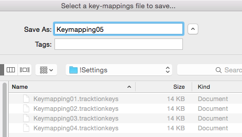
Save Key-Mappings Dialog Box
💡 Tip: Keep these files in a 'settings' folder inside your main Waveform folder, with a version number at the end of each file name. You can then go back to an earlier version if you change your mind about a new keyboard layout.
Loading Keyboard Shortcuts from a File¶
On a new installation or a new computer, you can load your custom key-mapping file. Open Settings > Keyboard Shortcuts and click Load Key-Mappings..., find your saved key-mapping file, then click Open. All your key-mappings are restored.

Load Key-Mappings Button
Printing a List of Keyboard Shortcuts¶
To print a list of your current keyboard shortcuts, click View as HTML... at the bottom of the Keyboard Shortcuts page. This opens a formatted list of all the current key-mappings in your web browser, where you can search or print it.

View as HTML Button

HTML View of the Keyboard Shortcuts List
Moving On¶
Waveform's macro scripting lets you go further than keyboard shortcuts. The Show Macro Editor button on this page opens the macro script editor, and Show Custom Menu opens the Custom Menu Editor, where you build your own Actions > Custom menu. See Macros.
Recording Audio¶
This chapter shows you how to record your own instruments and vocals into Waveform: how to set up track inputs, and how to use the built-in metronome as a reference click to keep your recordings in time.
Configure the Input¶
Set up your audio interface first, as described in Audio Device Setup.
⚠️ Warning: Before you record, run Auto-Detect with a hardware loopback so that new recordings line up with existing tracks, and run it again whenever you change your interface or buffer size. See Calibrating Input Latency Compensation.
The Input Object¶
The input section sits at the far left of every track. Each track has an input object that looks like a rectangular arrow pointing right.

Track Input Object
💡 Tip: If you don't see the input objects, click the eye button at the top right of the Edit tab and click the inputs button (the small tag icon to the left of the track names) in the panel that opens, or press Shift + F12.

Show/Hide Inputs button (A) in the eye button panel
Click an input object for a menu of options, and choose which hardware input this track records from. You can choose No input or any input on your audio interface. In the picture it's set to Input 1.

Input Menu
The input menu also has these items:
- Route audio from track / Route MIDI from track: record the output of another track instead of a hardware input.
- Live Input Monitoring: the input's monitoring mode (see Live Input Monitoring).
- Record enable: arms or disarms this input, like the R button.
- Record enable all: arms or disarms every input (see Enable Recording for All Inputs at Once).
- Default Audio Device Follows Selection / Default MIDI Device Follows Selection: when on, selecting a track that has no input gives it the default audio or MIDI input. (Default: on)
- Assign all inputs to consecutive tracks: see Setting Up Inputs for Multi-track Recording.
- Number of inputs on this track: see Number of Inputs.
Once you've chosen an input, the input object shows the input name, a live input meter and the record arm R button, and the input's full set of properties appears in the Actions panel.

Input Controls & properties
Customising Input Names Globally¶
You can give inputs friendlier names than the defaults with the Device Alias property.
To change an input's alias, open Settings > Audio Devices. Select an input in the Input Channel Groups list and edit the Device Alias name in its properties.
You can also edit it from the Edit: select an input and change Device Alias in the Actions panel. It is the same setting either way, so the new name applies to every Edit, not just the current one. For example, you could name an input after the microphone plugged into it.

Customised Input Names Using the Device Alias Property
Input Properties¶
Select an audio input to see its properties in the Actions panel:
Channels: The set of device channels this input uses.
Input Monitoring Mode (Choices: On, Auto, Off): Whether the input is played through Waveform. See Live Input Monitoring. (Default: Auto)
Input Gain: Gain applied to the input signal before it's recorded, from -12 to +12 dB. (Default: 0 dB)
Trigger Level: Recording waits until the input reaches this level, from -51 to 0 dB. At -50 dB or below, recording starts straight away. The Close Gate button next to it lets you audition the trigger level. (Default: -50 dB)
Time Adjust: Shifts newly recorded clips to correct for latency, from -500 to +500 ms. Click Auto-Detect... to measure it (see Calibrating Input Latency Compensation). (Default: 0 ms)
Device Alias: The name shown for this input (see above).
Record Mode (Choices: Overlay newly recorded clips onto edit, Replace old clips in edit with new ones, Don't make recordings from this device): What happens to existing clips when you record over them. (Default: Overlay newly recorded clips onto edit)
Filename: The pattern used to name new recordings. It can contain
tokens such as %edit%, %track%, %date%, %time% and %take%.
Reset Filename puts the default pattern back.
File Format and Bit Depth: The file type and bits per sample for new recordings. (Default bit depth: 24-bit)
Use the Same Properties for All Devices: When on, changes to these settings apply to every audio input.
The large meter at the bottom is described in Input Meters.
About MIDI Inputs¶
The input menu also lists MIDI interface inputs. Waveform doesn't have separate audio and MIDI tracks: any track can hold Audio clips or MIDI clips. Set the input you need and insert the right kind of plugins.

MIDI Devices on the Inputs Menu
A track behaves like an audio track if you set an audio input, and like a MIDI track if you set a MIDI input and insert a virtual instrument plugin.
Setting Up Inputs for Multi-track Recording¶
Choose Assign all inputs to consecutive tracks from the input menu to give each input its own track, one after another. This sets you up for multi-track recording in one step, which helps when you record a live performance through a digital mixer with a lot of inputs.

Assign All Inputs from the Input Menu
Number of Inputs¶
You can set up more than one input on a single track, up to four. Choose Number of inputs on this track from the input menu and pick 1-4.

Assign up to Four Inputs to One Track
If you record with more than one input armed, you get a separate clip for each, stacked on the track.
This is handy when you audition microphones and preamps: set up several recording chains on one track, then arm the input you want to try. To switch to a different mic and preamp combination, arm a different input.
📝 Note: Normally an input can only be on one track at a time. In Waveform Pro, turning on Allow inputs to appear on multiple tracks PRO in Settings > General lets one input feed several tracks, and adds Assign this input to consecutive tracks to the input menu.
Enable a Track for Recording¶
To enable (arm) a track for recording, click R on the input object. The R lights up to show that the track is armed.

Input Armed for Recording
Test the input signal: play a note on the guitar, or have the singer sing something into the microphone. The meter on the input should move. If it doesn't, check the input level on your hardware, and make sure phantom power is on if the mic needs it.
💡 Tip: Once recording has started you can still click R to enable and disable recording on the fly, for manual punch-in and punch-out recording. This video explains Punch In/Out on the Fly.
Hit Record¶
With the input set up, click Record (R) in the transport bar to start recording. Waveform draws the waveform on the track as you record. Press the Space bar to stop.
Recording always starts at the cursor position. The other ways to stop or abandon a recording are described later in this chapter.
💡 Tip: By default you still hear the existing clips on a track while you record onto it. For tape-style recording, where they go silent, turn on Mute track contents whilst recording PRO in Settings > Advanced. It's available in Waveform Pro.
Enable Recording for All Inputs at Once¶
When you record many inputs at once, you can arm all the tracks together with Record enable all (Cmd + R / Alt + R) in the input menu. You can also use it during recording to start and stop recording without stopping the transport.
Input Meters¶
Click an input to select it. The Actions panel shows a large meter, which is a good guide when you set the input level.

Large input meter in the Actions panel
💡 Tip: As a rule of thumb, set the input level so that it hovers around the middle of this meter's range. Adjust it with the gain controls on your audio interface or preamp.
To see large meters for all the tracks at once while you record several inputs, press F12. Waveform switches to "big meters" mode and draws a very large meter over each track.

Big Meters Mode
📝 Note: The big meters hide the clips on the tracks, so turn them off again (F12) when you aren't recording.
Dragging the Input Object Track to Track¶
You can drag an input object from one track to another. For example, say you recorded something on track one and now want to record something else with the same microphone on track two. Drag the input object from track one to track two, and the input is set up there straight away.

Dragging an Input to Another Track
Renaming a Track¶
To rename a track, click the track name, then edit the Name property in the Actions panel. A quick way is to click Name, press Tab and start typing. The new name is set as soon as you tab away from Name or click elsewhere in Waveform.
Recording Steps in Review¶
To test your recording setup:
- Arm the track or tracks for recording by clicking R on the track input.
-
Make sure Loop is turned off in the transport bar.
📝 Note: Waveform supports loop recording, which is covered in Loop Recording.
-
Rewind the cursor to the start of the Edit with the rewind button (Home) in the transport bar.
- Check that Click (C) is turned off in the transport bar for now.
-
Click Record (R) in the transport bar, and play or sing into the input.
📝 Note: As you record, the meters move and the waveform starts to draw on the Audio clip.
-
Press the Space bar to stop recording.
- Rewind, then press the Space bar to play back what you just recorded.
💡 Tip: If a take isn't going well, press Abort or Abort & Restart in the transport bar. These buttons only appear during recording.

Abort and Abort & Restart During Recording
Working with the Click¶
An audible timing reference often helps while you record. Waveform's built-in metronome gives you a steady click for this.
Enabling the Click¶
To enable the metronome click, turn on Click (C) in the transport bar. Its settings are in the Click menu: open it from the main menu at the top of the window, or right-click the Click button in the transport bar. The options are:

Click Settings
Click: Turns the click on or off, the same as pressing C or clicking the Click button in the transport bar.
Click volume: Sets the volume of the click, from -14 dB to 0 dB.
Count-in: Starts the click a little before the cursor position when you record, so you have time to get into the groove before you play. Choose the count-in length from Click > Count-in: None, 1 bar, 2 bars or 2 beats.
With count-in enabled, you hear the click during recording. If the cursor is at the beginning of the Edit, you hear the count-in and then the cursor starts moving. If the cursor is not at the start, it jumps back by the count-in length and plays from there.

Count-in Options
Click during playback: To hear the click during playback as well, tick Click > Click during playback. With it unticked, you only hear the click while recording.
Emphasize downbeats: Enable Click > Emphasize downbeats to hear the downbeat of each bar clearly. Waveform then uses a different sound for the first beat of each bar.
Click sound: To change the click sounds, choose Click > Click sound.... This opens the Click Track Settings dialog box, where you can choose the audio files for the normal and emphasised beats. Leave the File properties blank to use the default sounds.

Configuring the Click Sound
You can also play the click on an external MIDI sound module. If you do, set the MIDI note numbers in the Click Track Settings dialog box.
Click output device: To send the click somewhere other than your main speakers, choose Click > Click output device.... By default this is set to (Default audio output). You can pick any audio output on your system, or any MIDI output. A MIDI output should lead to a sound module of some sort, and you set the note numbers as described under Click sound above.
Listening on Headphones While Recording¶
Ideally, you monitor what you're recording through headphones, and set the level and mix on your audio interface rather than in Waveform. Most audio interfaces let you mix your live input with the playback of earlier tracks, using the interface's own mixer to balance the two.

Audio Interface Mix Knob
Simple audio interfaces have a mix knob that blends the inputs (your mic) with playback (the tracks you've already recorded). For a vocal, for example, set the knob about halfway: half of what you hear is the live mic, and half is playback from Waveform.
Some audio interfaces have no mix knob on the front panel. Instead they come with an application, run alongside Waveform, that has a virtual mixer. You use it to set up your headphone mix separately from the recording software.
Live Input Monitoring¶
Sometimes you need to monitor the input through Waveform rather than through your interface. The two main cases are playing through virtual instruments, and playing through virtual guitar amps while you record. Those are covered in MIDI Recording and Using an Amp Simulator Plugin. To try live monitoring:
- Turn off any direct (hardware) monitoring on your audio interface, so that anything you hear comes through Waveform. Then set up a track, arm it for recording, and play something into the input with a mic, guitar or other instrument.
- Select the input and find the Input Monitoring Mode option in the Actions panel. You can also set it from the input menu, under Live Input Monitoring. On always plays the input through Waveform, Auto plays it only while the input is armed for recording, and Off never does. (Default: Auto) With On or Auto and the track armed, you should hear the input going through Waveform and back out to your speakers (or headphones).
The downside is latency: a delay between when you play or sing a note and when you hear it in your headphones. At high buffer settings it sounds like an annoying slapback echo. At lower buffer settings it can sound hollow when you sing with headphones on. When you play an instrument, you might not notice anything at all.
To hear the effect of latency clearly, turn the buffer size up to 1024 or more. You'll hear a noticeable delay between when you sing, speak or play a note and when you hear it.
📝 Note: Latency is more of a problem for singers than for guitarists and other instrumentalists. Your voice reaches your ear through your skull with no latency at all. Mixed with a slightly delayed copy through the interface and software, it can sound hollow or "phasey." This isn't recorded, but it can put you off while you perform.
So use live input monitoring when you need it, for guitar amp simulators and virtual instruments. For ordinary vocal and instrument recording, your audio interface's zero-latency monitoring is usually the better choice.
If at First You Don't Succeed¶
With a track armed, click Record and play. Press Record a second time (or the Space bar) to stop. If you don't like the take, select the Audio clip and press Delete or Backspace, or press Undo (Cmd + Z / Ctrl + Z) to undo it. Then rewind and try again.

Recording in Process
Abort Record and Delete the Take¶
The quickest way to throw away a failed take is Abort recording, discard takes. With a single keystroke (F4) it stops recording, discards the take and puts the cursor back where recording started, ready for another try. The Abort button in the transport bar does the same thing.

Abort Buttons on the Transport During Recording
Abort recording, discard takes, restart does the same, then drops straight back into recording. During recording it appears in the transport bar as the Abort & Restart button. Its default shortcut is Ctrl + Alt + R on Windows; on a Mac it has none, but you can assign one in Settings > Keyboard Shortcuts.
Recording a Stereo Signal¶
To record a pair of microphones or a stereo source such as a keyboard, make the input stereo on the Settings > Audio Devices page. Under Input Channel Groups, click the Channels button on the input's row and choose Stereo (or Mono to go back). Layouts with more than two channels need Waveform Pro or the Surround Expansion. You can also pick which channels an input uses from its Channels property. See Channel Groups for more on the device settings.
You now have one stereo input in place of two mono ones, and it appears in the Edit when you choose a track's input.

Making an Input Stereo
Recording from a stereo input gives you a stereo clip that shows both the left and the right waveforms.
Retrospective Record¶
Sometimes a practice take is the best one, or a singer comes in with a pickup just before the downbeat you started recording on. Retrospective record keeps a recording buffer running for every track that has an input set up, so you can get that audio back.
Retrospective record is on by default, with a 30 second buffer. To change the buffer size or turn it off, choose Options > Retrospective record from the main menu and pick Disabled, 30 second buffer, 1 minute buffer, 2 minute buffer, 5 minute buffer or 10 minute buffer. The 30-second buffer is usually enough to save chopped-off pickups or endings. For live shows or speeches, set it to 10 minutes.

Enabling Retrospective Record
To recover the audio, click the Retrospective Record button in the transport bar (it is hidden while you are recording). Waveform adds the buffered audio and MIDI as clips on the right tracks. If you click Retrospective Record while the transport is still running, the audio lines up with the timeline. If you click it with the transport stopped, the audio is placed at the cursor, and you need to line the clip up yourself.

Click the Retrospective Record Button
Retrospective record uses very little CPU, so you can leave it on as a safeguard.
Safe-Record Mode¶
For shows, long recordings, or any time you leave your computer recording unattended, turn on Safe-Record mode (Options > Safe-Record mode).

Safe-Record Mode
In Safe-Record mode, you start recording in the normal way, but as soon as recording starts Waveform shows the Safe-Record dialog box. You can't do anything in Waveform, including stopping the recording, until you enter the four-key shortcut.
To stop recording in Safe-Record mode, press Shift + Opt + Cmd + R / Ctrl + Shift + Alt + R.

How to Exit Safe-Record Mode
These are the default keys, and you can change them to any other combination you like.
Moving On¶
Next, Recording Overdubs walks through recording a simple song, overdubbing new parts on top of a drum loop.
Recording Overdubs¶
This chapter walks through recording a simple song one part at a time. Recording Audio explains how to use the Click feature as a metronome while recording; here a drum loop is the tempo reference instead, and you overdub guitars and bass on top of it.
💡 Tip: For overdubs, record wearing headphones with your main speakers off. This stops sound bleeding from one track to the next, for cleaner mixing later on.
By the end of the chapter, the Edit has these tracks:
- Track 1: Drum Loop
- Track 2: Acoustic Guitar
- Track 3: Acoustic Guitar - Double
- Track 4: Bass
Set Up the Drum Loop¶
- Set the tempo: click the tempo (e.g. 77 BPM) in the transport bar, then edit the BPM value in the Actions panel.

Click BPM to Edit Tempo
- Drag in a loop from the Browser, for example a two-bar loop. This creates an Audio clip. The example uses Track 1 for the loop, renamed to "DrumLoop".

Start With a 2-Bar Drum Loop
💡 Tip: If the loop doesn't align to the bars correctly, hold Opt / Alt and drag the right trim arrow until it does.
- Click the loop button on the Audio clip's header to switch it to looping mode, then drag the right trim handle to roll out as many copies of the loop as you want.

Roll Out Repeats of the Drum Loop
Get Ready to Record¶
- Set up the input. In this example, the drum loop is on the first track, and the second track records the acoustic guitar rhythm part from Input 1, where the mic is connected.

Configure the Input
- Turn off the Loop button in the transport bar, as this example doesn't use loop recording.
- Turn off Click, because the drum loop track is the timing reference.
- Set a two-bar count-in: choose Click > Count-in > 2 bars from the main menu.
Record the Rhythm Guitar Part¶
- Use your audio interface's mix knob or app to balance the level of the guitar mic with the level of the drum loop track. On the guitar mic input, set Live Input Monitoring to Off (right-click the input, or use Input Monitoring Mode in the Actions panel).
- Arm the track for recording by clicking the R icon on the input. The input's meter moves when you play a chord.
- Test the input level by playing at the loudest level you plan to use for the track. Adjust the level using the gain control on the audio interface.
- Check that the cursor is at the beginning of the Edit. If it isn't, press Home.
- Press Record (R) in the transport bar and record a take of your song. Press Space bar at the end to stop recording.
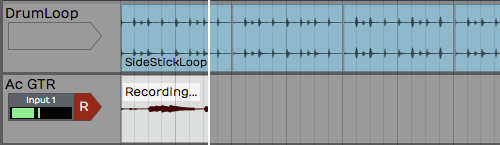
Recording the Guitar Part
💡 Tip: If recording doesn't go as planned, delete the Audio clip and try again. See Deleting Clips for several ways to do this.
📝 Note: If you hear a strange phasing sound as you play, you probably have Live Input Monitoring on while also monitoring through your audio interface. Set Live Input Monitoring to Off.
Doubling the Rhythm Guitar¶
- Rewind and play back the rhythm guitar part you've recorded. Use the Volume & Pan plugins in the inline mixer to balance it with the drum loop.
- Drag the Input object to the next track to double the rhythm guitar. Track 3 is now ready to record an overdub.
💡 Tip: Lowering the original track by 3-6 dB with its Volume & Pan plugin can help it balance with your live mic.
- Rewind, then click Record in the transport bar.

Recording the Second Guitar Part
- Play back the new recording and balance it with the original guitar track. For a wide stereo effect from the doubled part, pan the two tracks to opposite sides with the Pan slider in the Volume & Pan plugin.

Panning Guitar Parts Left and Right
Overdub a Bassline¶
You can record the bass by plugging it directly into the audio interface, with no amp or mic.
First, find the input on your interface that accepts a direct 1/4" high impedance connection. It's often marked guitar, gtr or hi-z, and you sometimes need to engage a switch or button for high impedance mode. Your bass or electric guitar sounds better with hi-z mode on.
- Connect your bass to the interface with a normal 1/4" to 1/4" guitar cable.

Engage High Impedance Mode on Your Audio Interface
- From here, recording works the same as with a mic. Select the correct input, then use the gain knob on the audio interface to give the bass a good level without lighting the interface's clip LED.
- Arm the input for recording if it isn't already. Balance the levels of the existing tracks so you can hear them as well as what you're playing on the bass.
- Rewind and press Record. If the take doesn't go well, stop, press Undo and try again.

Overdubbed Bass Line
💡 Tip: If you get a good take but think you can do better, don't delete the clip. Drag the input to another track and try again, muting the original track or clip so you don't hear it while you record. The first take might turn out to be the best.
Rename Tracks¶
As you record overdubs, name your tracks to stay organised. Click the track name, then edit the Name property.

Renaming a Track
💡 Tip: When you rename several tracks, moving the mouse between each track and the Actions panel gets tedious. Instead, click the track name and press Tab, which puts the focus straight on the Name property, ready for typing.
Adding Additional Tracks¶
If you don't have enough tracks in your Edit, there are several ways to add more:
- Select any existing track and press T to create a new track directly below it.
- Right-click any blank space and select Create a new track, or right-click a track header and select Add track.
- Select Track > Add track from the main menu, or Track > Add several tracks to add 2 to 14 new tracks in one go.
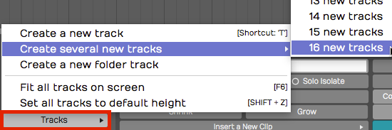
Create Tracks from the Track Menu
💡 Tip: As with most things in Waveform, you can undo creating tracks with the Undo button (Cmd + Z / Ctrl + Z). To remove a track from your Edit, select it and press Delete or Backspace.
Rearranging Tracks¶
To rearrange the tracks, drag a track by its header and drop it in the new position. As you drag, a glowing bar between tracks shows where it will go. Release the mouse when the bar is in the right spot.
Adjust the Mix¶
You can now adjust the levels of all the recorded tracks, or carry on overdubbing vocals, keyboards or other instruments. As you add tracks, reduce the level of each to avoid overloading the master level.

Adjust the Mix
💡 Tip: If you overload the master meter, reset the overload indicators with the backslash key (\).
Moving On¶
Next, Clean-up Editing covers tidying up the clips you've recorded.
Clean-up Editing¶
Once you have some basic tracks recorded, Waveform's editing tools let you clean up the clips and fix small problems with the takes. The tools themselves are covered in Audio Clips and Editing Audio; this chapter works through some practical examples.
📝 Note: Timing edits are often easier if you move the track you're working on next to the drum track. That way you can compare the timing of your notes with the main rhythmic parts of the song.
Trimming¶
The trim handles are a quick way to clean up the beginning and end of a take. Trim the beginning to keep the track silent until the part comes in, then trim the end to remove any noise after the song has finished.

Trimming an Audio Clip
To trim, drag a trim handle. With Snap on, trimming snaps to the grid; with Snap off, you can trim freely.
💡 Tip: Hold Cmd / Ctrl while trimming to override snapping temporarily.
You can also trim several Audio clips at once. Select them with Opt-drag / Alt-drag, then drag the trim handles on any of the selected clips.
Correcting Small Timing Problems¶

Bass Note Timing is Early
In this example, one note of the bass line is early compared with the drum loop. Ideally you would re-record the part, but if that's not an option you can fix a small problem like this by editing. Separate the out-of-time note into its own Audio clip, then move it slightly.
- Turn off Snap.
- Select the Audio clip you want to fix.
- Place the cursor right at the beginning of the note that needs fixing and press slash ( / ) to split the clip.

Split the Beginning of the Note
- Place the cursor just after the note and press slash ( / ) again. The bad note is now in its own Audio clip.

Split After the Note
- Click the single note to select it, then trim the clip to shorten it a little.

Trim the Clip
- Zoom in far enough to see how the note lines up with the drums. Drag the note to line it up with the correct drum hit.

Drag the Clip to the Correct Time
- Finish the edit by trimming and crossfading into the other notes.

The Completed Correction
📝 Note: Right after a split, both of the resulting clips are selected, and trimming, slipping or moving then applies to both. To work on one clip, click it to select it on its own. Press Escape at any time to deselect everything.
Correcting Timing by Slip Editing¶
Another way to correct timing is slip editing, where you "slip" the waveform inside the Audio clip rather than moving the clip. The key is to put the first split exactly where you want the note to start.
- Turn Snap off.
- Zoom in enough to see where the note should start and select the clip to fix.
- Place the cursor exactly where the note should have started and press slash ( / ) to split the clip.

Split the Clip Where the Note Should Start
- If the note was early, trim back the previous clip to remove the extra bit.

Trim Back the Extra Bit From the Previous Clip
- Place the cursor at the end of the note and press slash ( / ) to split the clip again. The bad note now has its own Audio clip.

Split After the Note
- Select only the note you want to adjust, then drag the slip handle (the double arrow in the centre of the clip header). The waveform slips within the Audio clip. Line it up so it starts just after the leading edge of the clip.

Drag the Slip Edit Handle to Adjust Timing Within the Clip
- Clean up the edges with trimming and crossfading.

The Completed Edit
📝 Note: With automatic crossfades turned on, moving one clip so it overlaps another creates a crossfade automatically. See Audio Clips and Editing Audio for more about crossfades.
Fade-outs¶
To adjust the fade-out at the end of a take, drag the clip's fade handle to the left.

Adjusting Fade-outs
To change the shape of the fade-out, choose one of the fade shape buttons in the Actions panel. The row has eight: the four on the left set the fade-in shape and the four on the right set the fade-out shape.

Fade-out shapes in the Actions panel
Stretch an Ending Note¶
If the final note isn't held long enough, you can time-stretch it. Re-recording the take is better, but if that's not an option, here's a quick way to lengthen an ending note.
- Split the note you want to stretch into its own clip, as in the other examples.
- Hold Opt / Alt and drag the right trim handle to extend the note to the length you want.

Hold Opt / Alt While Trimming to Stretch a Clip
- Play it back to check that it sounds clean. The further you stretch a note, the more the audio quality can suffer, though it often works surprisingly well.
📝 Note: These tools go beyond cleaning up takes. You can edit Audio clips in detail to change the timing or even the arrangement. While writing, you can use them to build bass lines that lock in tightly with the drums by adjusting the timing, removing notes or shortening them.
Fixing Clicks at the Edit Points¶
With this kind of editing, you might occasionally hear a click at the beginning or end of a clip. It happens when you split the waveform at a point where there's still some signal. A very short fade at the edge of the clip fixes it.

Example of an Edge Fade
You could zoom right in and add tiny fades to the beginning and end of each clip, but it's easier to select the clips and click Apply Edge Fades in the Actions panel. This sets 5 ms fades at the start and end of every selected clip (fades already longer than that are left alone).

Apply Edge Fades in the Actions panel
Rendering to a Single Audio Clip¶

Chopped Up Audio Clip Following Editing
If clean-up editing leaves your track in lots of small pieces, you can render the clips back into a single clip:
- Select all the clips you want to combine. One way is to click the first clip, then hold Shift and click the last one.

Selected Clips before Rendering
- In the Actions panel, click Render Clips and choose Merge the selected clips.

Render Clips > Merge the selected clips

Audio Clip After Rendering
Merge the selected clips is only offered when every selected clip is an Audio clip. When the clips sit on more than one track, the menu also has Merge the selected clips from each track, which merges each track's clips into one clip on that track. With a single clip selected, the same entry is called Flatten the selected clip. Launcher clips can't be rendered or merged.
📝 Note: The other entries in the Render Clips menu open the Render dialog set up for the clips, with Include Tails off and the result going onto the clips' track or in place of them. See Rendering Clips.
Moving On¶
To correct timing by stretching audio to the beat, see Warp Time. For automatic timing correction of whole takes, see Groove Doctor (Waveform Pro or the Recording Engineer Expansion).
Warp Time¶
Warp Time is an audio editing option. Rather than splitting out notes to move them, as described in Clean-up Editing, you drag Warp points to bend and stretch audio into time. As well as correcting timing problems, you can use it creatively on compositions and loops to change the feel of recorded audio.
💡 Tip: Warp Time is also available as one of the Clip Layer effects, as described in Clip Layer Effects.
Warp Time Mode¶
To switch on Warp Time mode:
- Select an Audio clip.
- In the Actions panel (or the Detail Editor, Clip tab), enable the Warp Time option.

Enable Warp Time Mode
The waveform view on the Detail Editor's Clip tab switches to the zoomable Warp Time editor.
The Warp Time Editor¶

Warp Time Editor in the Detail Editor
The Warp Time editor works on the underlying audio in the clip, so it may show much more audio than you see on the Audio clip. That's usually the case if you've trimmed the clip.
💡 Tip: To make the Warp Time editor match the waveform on the selected Audio clip exactly, render the clip with Render Clip > Flatten the selected clip. This creates a new underlying file, so what you see and hear in the Warp Time editor then matches the Audio clip.
Zooming In & Out¶
To zoom the waveform, use the mouse scroll wheel, or a two-finger up and down gesture on many laptops. On Mac laptops, a two-finger left or right gesture also slides the waveform left and right.
Warp Points¶
Click the timeline to add a Warp point. Dragging a Warp point left or right stretches or compresses time between it and the Warp points on either side.
💡 Tip: You can add a Warp point and drag it in one action: click the timeline, hold and start dragging. The waveform stretches until you stop dragging.

Warp Point
Removing Warp Points¶
Shift-click any existing Warp point to remove it. Right-click a Warp point and choose Remove marker or Remove all markers.

Warp Point Right-click Menu
Working with Warp Points¶
By default, the Warp Time editor always has Warp points at the start and end. If you add a Warp point and move it, the audio stretches between the beginning and end of the waveform.

Before Warping

Dragging a Warp Point to the Left

Dragging a Warp Point to the Right
To correct timing over a limited area, use a three-point technique. Warp points usually belong just before the start of a note or percussive hit, that is, just before a transient, so the stretching happens across the note rather than in the middle of it.
Add Warp points before and after the note you want to change, to lock down the timing around it. Then add a Warp point right at the transient you want to move and drag it into time.
Warp Points and Snapping¶
As you drag Warp points, they snap to the grid. The snap grid for Warp points is based on the zoom level of the Warp Time editor, not the zoom level of the Edit.
To override snapping, hold Cmd / Ctrl as you drag the points.
Limitations of Warp Time Editing¶
Warp Time editing works best on single-track parts. On multitrack drum parts it seriously affects the phase alignment of multi-miked kits, and the same goes for other instruments recorded with several mics.
You can use Warp Time on stereo tracks. If you have two mono tracks, render them to a stereo track first.
Time Stretch Algorithm¶
By default Warp Time uses Elastique Pro, but you can switch it to any of the other modes. There's little benefit in doing so, because Waveform does the stretching offline.

Stretch Property Options
Elastique Pro gives the best results most of the time. For specialised needs, the Stretch Options row under Stretch (shown for the Elastique Pro modes) opens the Elastique options: Stereo Mode: L/R or Stereo Mode: M/S, Synchronize Timestretch / Pitchshift, and Preserve Formants, which enables a choice of Peak Pitch settings from E2 / 86Hz to E8 / 5512Hz.

Elastique Options
📝 Note: If the Stretch property is set to No Time-Stretching, Waveform still uses Elastique Pro for Warp Time. Choosing an ARA plugin such as Melodyne switches Warp Time off, and the Warp Time option isn't available while ARA stretches the clip.
Moving On¶
For automatic timing correction of whole takes, see Groove Doctor (Waveform Pro or the Recording Engineer Expansion).
Groove Doctor PRO¶
📝 Edition: Waveform Pro, or with the Recording Engineer Expansion.
The Groove Doctor fixes the timing of recorded audio. It detects the beats (transients) in a performance, then cuts, snaps, and smooths the audio so it lines up with the grid, or with the feel of a groove template. Use it to tighten a loose drum take, pull a drifting bass line back onto the beat, or lock a live performance to the click, without re-recording it.

The Groove Doctor window
This is an audio tool, not a MIDI one. To quantise MIDI notes, see Quantising MIDI Notes instead. It's also separate from the Groove Template editor (opened from the View menu), which manages and imports the groove templates themselves. The Groove Doctor's Extract groove operation can, however, create a template that the Groove Template editor then manages.
Opening the Groove Doctor¶
The Groove Doctor opens in its own floating window, titled "Groove Doctor - " followed by your Edit's name. You can open it in three ways:
- Click the stethoscope button in the transport bar (tooltip Show or hide Groove Doctor window).
- Choose View > Show Groove Doctor.
- Run the command Show or hide Groove Doctor window. There's no default keyboard shortcut, so assign one in Settings > Keyboard Shortcuts if you use it often. A second command, Zoom to fit Groove Doctor selection, frames your captured range in the main Edit view.
The window is a fixed size and can't be resized; its position is remembered per Edit.
The Top Panels¶
Two panels sit across the top of the window and stay visible no matter which workflow you're in.
Selection¶
This is where you tell the Groove Doctor what to work on: a time range and a set of tracks.
- Start / End: The time range, shown in your Edit's timecode format. You can type values directly.
- Capture Selection: Grabs both the time range and the tracks from your current selection in the Edit in one click. This is usually the fastest way to set up.
- Capture Time: Sets only the time range, from a submenu: From selected range, From loop range, or From selected clips.
- Capture Tracks: Sets only the tracks, from a submenu: From group, From selected range, From selected tracks, or From selected clips.
View¶
Controls for navigating the waveform while you work. These don't change your audio.
- Zoom - / Zoom +: Zoom the waveform out and in.
- Fit to Selection: Zoom so the captured range fills the view.
- Previous / Next clip: Jump between clips.
- Show Transients: Toggles the detected beat markers on and off. These markers also appear overlaid on the main Edit view, not just in this window. (Default: on)
- Trash: Clears all detected transient markers.
Correcting Timing: The Common Workflow¶
The Groove Doctor is a guided, numbered workflow. The lit-up number tells you which stage is active; earlier stages dim once you move on. The most common job is the Quantise/groove operation, which cuts the audio at each beat and snaps the pieces to the grid. Here's the full pass:
- Select the range and tracks you want to fix in the Edit, then click Capture Selection in the Groove Doctor.
- In Stage 1 - Analyse, leave the Operation dropdown on Quantise/groove and click Analyse. A progress bar runs while Waveform finds the beats; click Cancel to stop it. When it finishes, the Doctor advances to Stage 2 automatically.
- In Stage 2 - Separate, adjust Sensitivity and Padding if needed (see below), then click Separate. This splits the clips at every detected beat.
- In Stage 3 - Quantise, pick a Grid, set the Grid Strength, and optionally choose a Groove template. Click Quantise to snap the pieces into time.
- In Stage 4 - Smooth, set a Crossfade to blend the joins, optionally nudge everything with Offset, and click Smooth.
- When you're happy, click Consolidate to flatten all the pieces back into a single clip.
💡 Tip: Each stage from Separate onward has a small camera snapshot button in its title bar. Click it before you run that stage to save a Track Snapshot you can roll back to, because these edits are destructive. See Track Snapshots for how to restore one.

Working through the Quantise/groove stages
Stage Reference¶
Stage 1: Analyse¶
Operation (Choices: Quantise/groove, Warp quantise/groove, Extract tempo map, Extract groove): Chooses the whole workflow. The remaining stages change depending on what you pick here. (Default: Quantise/groove)
Set tracks to analyse: Changes which tracks are included, from the same menu as Capture Tracks.
Analyse: Runs transient detection across the captured range. A Cancel button and progress bar appear while it works.
The four operations do the following:
- Quantise/groove: Splits clips at the beats, snaps them to the grid/groove, then smooths and consolidates.
- Warp quantise/groove: Time-stretches (warps) the audio onto the grid without cutting it, then consolidates.
- Extract tempo map: Reads the bar transients and writes a matching tempo map to the Edit's Tempo track.
- Extract groove: Reads the beat transients and saves them as a new groove template you can reuse elsewhere.
Stage 2: Separate, Warp, Tempo Map or Extract Groove¶
The second stage tunes which beats are used. The exact controls depend on the operation:
Sensitivity: How readily a peak counts as a beat. Higher values find more transients; lower values keep only the strongest hits. (Range: 0-100%)
Padding: Nudges the cut point earlier or later than the detected transient. A small negative value cuts slightly before the hit, which usually sounds more natural. (Range: -50 to +50 ms)
Set tracks to separate / Set tracks to warp: Changes which tracks the Separate or Warp stage works on, from the same menu as Capture Tracks.
For Quantise/groove this stage is Separate (its button cuts the clips); for Warp quantise/groove it's Warp, with a Next button that moves you on. The two extract operations have their own Stage 2 and stop there, with no Stages 3 and 4:
- Extract tempo map adds an Apply button. If your tempo track already has tempo changes in the range, you'll be asked to confirm "Override Existing Tempos?" before they're replaced.
- Extract groove adds a Resolution dropdown (Choices: 1/8 beat, 1/4 beat, 1/3 beat, 1/2 beat, 1 beat) and an Extract Groove button that prompts you for a "Groove Name?". (Default: 1/8 beat)
Stage 3: Quantise (Quantise/groove and Warp Modes)¶
Grid: The note value the beats snap to. The choices come from your Edit's available quantise values.
Grid Strength: How far each beat moves toward the grid. At 100% beats land exactly on the grid; lower values keep some of the original feel. (Range: 0-100%, Default: 100%)
Groove (Choices: None plus your installed groove templates): Applies the timing feel of a groove template on top of the grid snap. (Default: None)
Groove Strength: How strongly the groove template is applied. This is only available for parameterised templates; for ordinary templates it's greyed out. (Range: 0-100%)
Stage 4: Smooth or Consolidate¶
For Quantise/groove this stage is Smooth:
Crossfade: How much neighbouring pieces overlap to hide the joins. (Range: 0-100 ms)
Offset: Shifts every quantised clip start earlier or later, handy if the whole part feels a touch ahead of or behind the beat. (Range: -100 to +100 ms)
After smoothing, Consolidate flattens all the pieces into one clip. A reminder label, "Check any edit points for spill," prompts you to listen across the joins before committing.
For Warp quantise/groove this stage is only Consolidate: a single button (plus its snapshot button) that flattens the warped result.
A help bar along the bottom of the window shows a short description of whichever control your mouse is hovering over.
⚡ Things to Watch Out For¶
⚠️ Warning: Warp quantise/groove renders and consolidates the clips before warping and suppresses the normal undo step, so you can't press Undo to get back. Take a snapshot first.
- Extract tempo map overwrites any existing tempo changes in the captured range once you confirm the prompt.
Moving On¶
For lighter, hands-on timing corrections, the Warp Time editor lets you bend audio in place by dragging warp points (see Warp Time). Track Snapshots covers rolling back if a Groove Doctor pass doesn't go the way you hoped.
Loop Recording¶
Loop recording is a quick way to record several takes of a part onto a single track. Afterwards, you pick the best take and make it active, so it's the one you hear during playback.
Loop recording also sets you up for Waveform's comping tools. With comping, you go phrase by phrase through the takes, choose the best parts and build a composite take. See Comping.
Getting into Loop Recording Mode¶
To loop record, turn on Loop (L) in the transport bar. When you then click Record, Waveform records only between the In marker and Out marker. The transport loops between the two markers, recording take after take until you click Stop.

Turn on Loop for Loop Recording Mode
Loop Recording Step-by-Step¶
-
Set the In marker and the Out marker over the range you want to loop record. To set the In marker, position the cursor and press I. To set the Out marker, position the cursor at the end of the loop and press O.

Set the In Marker and Out Marker
📝 Note: The count-in from the Click menu works for loop recording. For a running start before the first take, set Click > Count-in to 1 bar or 2 bars. The count-in plays once, not before every pass of the loop.
-
Configure the input and check your levels, as for standard recording.

Configure the Input for Recording
-
Click Record (R) on the transport bar to start recording.
When the cursor reaches the Out marker, Waveform loops back for the next take. You can record as many takes as you like.
Selecting the Best Take¶
After loop recording, the takes are stacked within the Audio clip. The last take you recorded is the one you hear during playback, called the "active take". To make a different take active, click the plus (+) sign in the lower right corner of the clip and pick it from the list of takes. You can audition each take this way and keep your favourite.

Choosing the Active Take
💡 Tip: Takes recorded this way are ready for Comping.
Unpacking Takes to Tracks¶
To work with your loop-recorded takes as separate audio tracks, click the plus (+) sign and select Unpack to new tracks.

Unpack Takes to Tracks
This converts an Audio clip full of takes into a series of tracks, each with its own Audio clip. You can then use normal audio editing to move them around, chop them up, or arrange them into a song.
Moving On¶
Next, Comping shows how to build a composite take from your loop-recorded takes.
Comping¶
Comping is an editing technique where you pick the best phrases from several takes to build a composite, or "comp": the best possible take. Engineers have done this for years, and Waveform makes it much easier than the traditional methods.
Comping typically starts with takes recorded in Loop mode, covered in Loop Recording.
You can also build composites from any collection of tracks with comp groups; see Setting up a Comp Group.
Copy Your Edit¶
Before you start comping, make a copy of the Edit, so you can go back to the raw takes if you later want to build the comp a different way.
📝 Note: This chapter assumes you've already recorded takes using the technique in the previous chapter. If not, go back to Loop Recording and record some.
The quickest way is File > Save edit as.... It suggests a numbered name; the copy is added to the same Project and becomes the Edit you keep working on, while the original stays as you last saved it. For a snapshot of the whole Project, use File > Backup edit and project files... and give the backup a name.
You can also make the copy from the Projects tab:
- Save the Edit with File > Save edit (Cmd + S / Ctrl + S) when you finish loop recording.
- Go to the Projects tab and select the correct Edit. In the Controls panel, click Create a Copy.
- Add a revision number to each Edit's name to keep them organised: click each Edit, then edit the Name property.
- On the original Edit, add a comment that says, "This version is before comping" or similar.
- Close the tab for the original Edit and open the new copied version.
Making copies of your Edits and naming them logically works like a revision control system: you can always roll back if something goes wrong or you change your mind.
Comping Takes¶
To comp the takes:
- Select the Audio clip that contains the takes you want to comp.

Takes Follow Loop Recording
- Click the plus (+) icon in the lower right corner of the clip and select Show takes. The clip expands to show all of the individual takes. If you play back over this section of the Edit, you hear the last take from loop recording.

Takes in the Expanded View
- To build a composite take, click and drag a range over a phrase from any take. That phrase is instantly promoted to the active take. This drag-to-select action is called "swiping".

Swipe a Phrase to Add it to the Active Take
💡 Tip: While comping, it helps to have the cursor return to where playback started whenever you stop. Turn on Options > Return to start on play, so you can audition phrase by phrase without repositioning the cursor each time.
- Keep swiping and auditioning to build up the composite. To switch a selected phrase to a different take, click another take, and the selection moves to it.

Building the Composite Take
- If the swipe selection doesn't fully enclose a phrase, drag either edge of the selection to trim it.

Trim the Edges of a Selection
📝 Note: Sometimes you'll use a little from every take; other times you'll mostly use one take and fix a couple of bad phrases.
When you've finished, click the plus (+) icon and select Hide takes.

Hide Takes
💡 Tip: After comping, create another copy of the Edit and add a note that it was saved after comping, so you can roll back if you want to make changes later.
Flatten Comp¶
To remove the underlying takes from the Edit, click the plus (+) icon on the clip and select Flatten current comp. This gives you the option to delete the source files. The operation is permanent.

Flatten Current Comp
💡 Tip: Save a copy of the Edit before you flatten the comp. Avoid the option to delete the source files, because it removes them from your other saved Edits too.
Other Takes Menu Options¶
The plus (+) menu on a clip with takes has a few more items:
- Unpack to new tracks: Puts each take on a track of its own, so you can edit or mix them separately.
- Delete unused takes: Removes the takes you aren't using. It appears when a single take is selected rather than a comp.
- Copy comp to clipboard / Paste comp from clipboard: Copies the current comp of an Audio clip, so you can apply the same choices to another Audio clip with takes.
- Create audio comp (MIDI clips only): Create a new audio comp clip renders the MIDI takes into a new Audio clip with takes, so you can comp them as audio; Replace with a new audio comp clip does the same and replaces the MIDI clip.
Setting Up a Comp Group¶
Comp groups let you swipe comp across any group of tracks. It works much like comping takes, except that you first add the tracks to a comp group.
Select Tracks to Comp¶
Select all the tracks you want to use to build the composite. These are typically separate takes of a lead vocal or solo instrument, but any collection of tracks works.

Select the Tracks to Comp
Create a Comp Group¶
In the Actions panel, open the Comp Group menu and select Add group. In the Add Comp Group dialog box, the name defaults to Comp Group 1. Change it to something more descriptive if you like. Leave Show Comp Editor ticked (the default) to show the comp editor straight away, then click OK.

Creating a Comp Group
Add a Track to a Comp Group¶
Any tracks selected when you create Comp Group 1 are added to it automatically. To add another track to it, select the track, open the Comp Group menu and select Comp Group 1.

Adding Another Track to Comp Group 1
Removing a Track from a Comp Group¶
To take a track out of a comp group, select the track, then select None in the Comp Group menu.
Comping Tracks Using a Comp Group¶
Once a comp group has tracks in it:
- Select one of the tracks, then select Show editor > Edit track comps in the Comp Group menu. This puts the tracks into comp mode.

Enable Comp Mode
- Swipe to select phrases from any of the tracks. Only the selected phrases play back.

Swiping Phrases to Create a Composite
- Drag either edge of a selection to adjust it, as when comping takes (see Comping Takes).
💡 Tip: For good control over the silent parts of a comp, add a blank track to the comp group. To silence a section, swipe over that range on the blank track.
More Comp Group Options¶
The Comp Group menu has a few more options for working with comp groups.
Show Track Comps¶
When you turn on comp group editing with Show editor > Edit track comps, Show track comps is turned on too. It colour-codes the swipe selections on the tracks. You can also turn it on by itself, to see the comp selections with Edit track comps off so you don't change them by accident.

Show Track Comps
Render Comp¶
When the composite is complete, you can render it to a single track. The Comp Group menu's Render Comp submenu has two options for this. Render and replace comp group replaces all the comp group tracks with the resulting track. Render comp group to a new track leaves the existing tracks in place and adds a new track with the composite.

Rendering a Comp to a New Track
Add, Rename, Remove¶
These options on the Comp Group menu add, rename and remove comp groups.

Comp Group Management Features
You can have as many comp groups active in the Edit as you want, and they have uses beyond comping takes. For example, you could comp in silence on tom tracks instead of gating them, or mash up two beats or two different songs.
Moving On¶
Next, Using an Amp Simulator Plugin shows how to record electric guitar directly through an amp simulator.
Using an Amp Simulator Plugin¶
This chapter shows how to record direct electric guitar through an amp simulator plugin. Waveform doesn't include a full amp simulator, but you can build a basic chain from the built-in Distortion plugin followed by Guitar IR for the cabinet (Guitar IR needs Waveform Pro or the Recording Engineer Expansion; see Built-in Effects Plugins). Most third-party amp simulator plugins work too. If you don't have one, Voxengo's free Boogex plugin is used as the example in this chapter. You can download it from Voxengo.com.

Free Boogex Amp Simulator from Voxengo
Setting Up the Track¶
- Connect your guitar to the high impedance input on your audio interface as described in Audio Device Setup. If your interface doesn't have a guitar input, use a suitable preamp.

Connect Your Guitar to your Interface
- Create a new track, select the input, and arm it for recording.

Select the Input and Arm It
- Turn direct monitoring on your audio interface all the way down, or disable it. You need to hear all of your guitar signal through Waveform.

Turn off Any Input Monitoring on Your Interface
- Right-click the input and choose Live Input Monitoring > On (or select the input and set Input Monitoring Mode to On in the Actions panel). You should now hear your dry, unprocessed guitar signal.

Turn on Live Input Monitoring
- Open the Search tab of the Browser and type the first few characters of your amp simulator plugin's name. Drag the plugin to the track in the inline mixer.

Drag the Amp Sim Plugin to the Mixer
- If the plugin's window didn't open, click it (or double-click it, if you changed Open plugin windows by in Settings > General). With Live Input Monitoring on, you should hear the plugin when you play. Select a preset and it should sound like you're playing through whatever rig your plugin simulates.
💡 Tip: To bypass the plugin, click it to select it and press F, which enables or disables any selected plugins. You can also use the Enabled row in the Actions panel.

Amp Sim Plugin Shown Disabled
Recording with the Amp Sim¶
At this point, recording works the same as in Recording Audio.
- Record-enable the track and put the cursor at the beginning.
- Click Record in the transport bar. To loop record, turn on Loop first, so you can record several takes in quick succession.
- Tweak the sound as much as you like after you've recorded the part.

Recording with the Amp Sim
Recording this way lets you change the sound after the fact, and use guitar rigs you don't own, without disturbing the neighbours.
It also helps when you edit your guitar tracks. Edits made to the dry signal, before the amp and distortion, sound more natural and are much less noticeable than edits to a fully processed guitar part.
Guitar & Impedance¶
Guitars connect to your audio interface through a quarter-inch, unbalanced, high impedance connection. You don't need to understand what that means electrically, but you get a better tone and feel from a proper high impedance input. A standard input loads guitar pickups down, and you lose articulation and punch.
On most audio interfaces, the first one or two channels have guitar inputs, often with a switch or button that enables high impedance mode for a guitar or bass. Your guitar might work through a normal low impedance input, but the high impedance input, with that mode engaged, gives you better picking dynamics and tone.
Managing Latency¶
Latency matters when you play through an amp simulator. If the Audio buffer size is too high, there's a long delay between playing a note and hearing it. If it's too low, you might get pops and clicks when the computer doesn't have enough CPU power for that latency. The aim is a setting that feels responsive but still sounds clean.
To set the Audio buffer size, which determines the latency:
- Open Settings > Audio Devices.
- Locate the Audio buffer size setting. The value shows a number of samples followed by a calculated latency delay.
- Enter an Audio buffer size value. Values around 256 or lower tend to work well, depending on what else is going on in the Edit.

The Audio buffer size setting on the Audio Devices page
Speed of Sound Through Air¶
In this example, a buffer size of 256 samples gives 5.8 ms of latency: when you play a note on your guitar, you hear it about 5.8 ms later.
Sound travels through air at about 1 ms per foot (1 ms per 0.3 metres), so a 5.8 ms delay is like playing your guitar amp from 5.8 feet (1.8 metres) away. Add the distance to your monitor speakers as well: if they're two or three feet away, it's like having your amplifier nine feet away. Most guitar players can cope with that, as it's about how far you'd stand from your amp on stage. Much more than that and you hear a noticeable lag, which affects the feel and impact of your playing.
At a buffer size of 1024 samples, the delay is 23 ms. That feels like playing with your amplifier 23 feet (7 metres) from your ears, which is hard to work with.
Setting the buffer size as low as it will go can cause problems of its own. With a lot of other plugins and virtual instruments running, a very low buffer can make playback stop or break up.
📝 Note: Set the buffer size as low as you can to reduce latency, while keeping it high enough for clean, solid playback. When you're mixing rather than recording, a larger buffer such as 1024 is fine.
Dialling in the Guitar Tone¶
Use the controls on the amp simulator to dial in your guitar tone. Flip through the presets, or start with one and tweak the controls until you like the sound. Recording this way means you don't have to commit to the sound yet, so dial in something inspiring enough to get a good performance, and come back to the amp settings later.
💡 Tip: If your amp sim has no cabinet of its own (or you've switched it off), put Guitar IR PRO after it on the track and load a cabinet impulse response there. Dual Guitar IR PRO blends two responses, such as two mic positions. Both need Waveform Pro or the Recording Engineer Expansion; see Guitar IR.
Using a Tuner Plugin¶
When you record a guitar or bass direct, it helps to add a tuner plugin before the amp sim. Waveform doesn't include a tuner, but you can drop any tuner plugin onto the track in the inline mixer.
💡 Tip: If you don't have a tuner plugin, you can download one as part of the MFreeFXBundle from Melda Production.

Tuning with the MTuner Plugin
To set up a tuner plugin:
- Open the Search tab of the Browser. Select Plugins in the search options dropdown, then type the first few characters of your tuner plugin's name. The plugin appears in the search list.
- Drag the tuner into the plugins area of the track. Its window usually opens as soon as you drop it. If it doesn't, click the plugin to open it.
- Play a note on your guitar. If the tuner doesn't respond, arm the track for recording and set Live Input Monitoring to On. Both are needed for the signal to flow through the track to the inline mixer and the tuner plugin.
When you've finished tuning, close the tuner's window. The plugin stays on the track, so you can click it to open the window again.
Moving On¶
You can also mic up your guitar amplifier and record it as described in Recording Audio. If you split your guitar signal and record the direct signal alongside the miked amp, you can blend the amp sim with the real amp when mixing.
MIDI Setup¶
This and the next few chapters cover MIDI recording and editing. The first step is to set up a MIDI keyboard so you can play notes into Waveform. If you don't have one, you can enter notes by hand in the MIDI editor, or use the computer keyboard as a virtual MIDI device.
The example here uses an external USB keyboard controller, but other types of controller are set up in much the same way.
MIDI Drivers¶
Your controller might need drivers. Check the manufacturer's website for drivers for your model and operating system, then download and install them with Waveform closed.
Set Up the MIDI Inputs¶
Go to Settings > MIDI Devices. The page lists every MIDI input and output connected to your system, so what you see depends on your devices. Click the toggle next to each entry to switch it between Enabled and Disabled.

Click to Enable/Disable MIDI Inputs and Outputs
💡 Tip: If your devices aren't listed, check that the controller is connected and powered, then that the latest drivers are installed. You can click Scan for new MIDI devices now at any time to scan for connected MIDI devices.
Naming MIDI Inputs/Outputs¶
In Settings > MIDI Devices, click a MIDI input or output in the list, then edit Device Alias in the panel on the right to give it a friendly name. Naming it after the connected controller makes it easy to recognise.
💡 Tip: You can also edit Device Alias from the Edit tab, by selecting the input and changing it in the Actions panel. Each device has only one alias, so a change made in either place applies everywhere.
Disabling Unused MIDI Inputs¶
Your audio interface might also have hardware MIDI In and Out connections for older controllers that don't support USB. If you don't plan to use them, leave them disabled. In this example the interface's MIDI ports are disabled.

Disable Unused MIDI I/O
Disabled ports don't appear in the input list when you set up a track.
Configuring the Track¶
Back in your Edit, choose a blank track or create a new one.
- Click an input and select the MIDI input that matches the controller you just configured.

Select the MIDI Input Device
- Play some notes on your keyboard. The track's meter shows the MIDI activity.

Input Meter Activity
- With the input selected, set Input Monitoring Mode to On (or Auto) in the Actions panel. You can also right-click the input and use the Live Input Monitoring submenu.

Enable MIDI Input Monitoring
MIDI events from your keyboard now come into the track and pass through to the virtual instrument, which you'll set up next.
Insert a Synth Plugin¶
To hear what you play, insert a virtual instrument. Use the Search tab of the Browser to find a synth plugin. This example uses 4OSC, found under Waveform > Instruments.

Search for a Synth Plugin
- Insert your synth plugin ahead of the Volume & Pan plugin in the signal path. In this example, 4OSC is dropped just before Volume & Pan. When a track's plugins don't fit on one line, the inline mixer wraps the earlier ones onto a row above, so 4OSC shows above Volume & Pan here.

4OSC installed in the mixer
- Play some notes on your keyboard. You should now hear the synth.
📝 Note: There's no difference between a MIDI track and an audio track in Waveform. To configure a MIDI track, set a MIDI input and insert a virtual instrument plugin as the sound source. When you record your performance, you get a MIDI clip instead of the Audio clips in the earlier chapters.
Using a Virtual Keyboard¶
If you don't have a physical MIDI keyboard, you can still play notes. To play from your computer's keyboard, use the MIDI Typing window described in the next section. To play with the mouse, use the on-screen Virtual Keyboard.
Select a MIDI input on a track and click Virtual Keyboard in its Actions panel. A small piano keyboard opens. Click its keys to send notes into that input, as if they came from the device itself.
💡 Tip: Click the lock icon at the top of the Actions panel to keep it showing the input while you click elsewhere in the Edit, and click it again to unlock. The command is Lock/Unlock Actions panel (Opt + F11 / Alt + F11). The lock is on the dedicated Actions panel, not the Browser's Actions tab.

Lock the Actions panel while you play
A virtual MIDI input is something different: it duplicates input from your other MIDI devices, so one track input can receive from several of them.
- Go to Settings > MIDI Devices.
- Click Create New Virtual MIDI Input...

Create New Virtual MIDI Input
- Enter a name into the Virtual MIDI device dialog box and click Create.

Name the Virtual MIDI Device
- Back in your Edit, choose the new device as a track's input. Use Select MIDI Inputs in its Actions panel to choose which devices it receives from.

Select the Virtual Device as the Input
The MIDI Typing Window¶
The MIDI Typing window lets you play notes from your computer keyboard: a small floating window with on-screen octave and velocity controls. It's handy when you want to audition or record an idea and don't have a controller plugged in.
Show it with the command Show or hide the MIDI Typing window, or from the View menu's Show MIDI Typing item (which appears only when the Use computer keyboard for MIDI input setting is on; see Reference: Settings > MIDI Devices).

The MIDI Typing window
Typing is armed by Caps Lock (or by giving the window focus). Once
armed, the keys a w s e d f t g y h u j... play a piano layout. The
window also has:
- Octave: Press Z or X to shift down or up. (Range 0-9, Default: 5)
- Velocity: Press C or V to lower or raise it in steps of 5. (Range 0-127, Default: 98)
A gear icon opens a list where you can remap the keys.
📝 Note: Notes from the MIDI Typing window always play on MIDI channel 1. There's no channel selector.
Managing Hardware Patch Names¶
If you play external hardware synths, Waveform can show their patches by name instead of by raw program number. The MIDI program names dialog manages these named patch lists.
There's no menu command or shortcut for it; you reach it from a MIDI output device. Go to Settings > MIDI Devices, click a MIDI output device, and in the panel on the right pick a set from Program Names. The rows below it manage the sets: Add creates a named set from a preset, Edit opens the dialog to modify the selected set, and Delete removes it. Edit and Delete only appear for sets you can change.

The MIDI program names dialog
Inside the dialog:
- Bank name: A dropdown for the 16 banks, with a Rename button.
- Program name list: 128 editable rows; press Tab to advance to the next one.
- MSB / LSB: The bank-select bytes for the current bank. (MSB 0-128, LSB 0-256)
- Options menu: Use zero based numbering, Set current bank to
general MIDI names, Reset current bank, Clear current bank, Export
all banks... (to a
.trkmidifile), and Import all banks... (from.trkmidior.midnam).
Click Done to save. These patch lists are shared across all your Edits.
Synchronisation¶
If you run Waveform alongside timecode-aware gear such as a hardware recorder, a video deck or another DAW, you can lock the two together so they play in step. The Sync menu holds the project-wide settings for this: a timecode offset, MIDI Timecode (MTC) input and MIDI Machine Control (MMC). A typical use is chasing an external MTC master, so Waveform follows that device as it starts, stops and locates.
Sync is one of the Edit tab's main menus. It's also in the menu that the Menu button on the transport bar opens.
There's no default keyboard shortcut for the Sync menu or its items. If you use them often, assign one in Settings > Keyboard Shortcuts.

The Sync menu on the Edit tab
Setting a Timecode Offset¶
- Open Sync > Change timecode offset....
- In the Change MIDI timecode offset dialog, type the offset using the timecode field.
- Click OK. Incoming and outgoing timecode is now shifted by that amount, which is handy when your external source starts a few frames away from where you want Waveform's transport to land.
Chasing External MTC¶
- Enable the MIDI input that carries timecode (Settings > MIDI Devices), as described in Set Up the MIDI Inputs.
- Open Sync > MIDI timecode input device and pick that device. Set it to <None> to stop chasing.
- If the master sends an hour value you don't want to follow, turn on Ignore hours from incoming timecode.
Menu Reference¶
- Change timecode offset...: opens the Change MIDI timecode offset dialog. (Default: 0)
- Ignore hours from incoming timecode: a toggle; when on, the hours field of incoming MTC is ignored. (Default: off)
- MIDI timecode input device: the MIDI input Waveform chases for MTC, or <None>.
- Respond to MIDI machine control from device: the MIDI input whose MMC transport commands (play/stop/locate) Waveform obeys, or <None>.
- Send MIDI machine control to device: the MIDI output to which Waveform sends MMC transport commands, or <None>.
📝 Note: The MTC input and MMC device lists only show inputs and outputs you've already enabled. If a device is missing, enable it on the Settings > MIDI Devices page first.
💡 Tip: This menu is for making Waveform follow external timecode. To make Waveform the master instead, turn on Send MIDI Timecode on the MIDI output that's wired to your gear (see Reference: Settings > MIDI Devices).
Moving On¶
The next chapter, MIDI Recording, shows how to record a MIDI performance onto the track.
MIDI Recording¶
This chapter covers recording a MIDI performance from your controller, which could be a keyboard or any other instrument that sends MIDI note data, and explains the MIDI recording modes. Setting up a MIDI controller is covered in MIDI Setup.
Setting up a Track¶
Waveform has no special type of MIDI track: any track can hold Audio, MIDI or Step clips. To record MIDI, pick an unused track or create a new one, and set its input to your MIDI controller. Play a few notes on the controller to check that there's MIDI activity.

A Track Set Up for MIDI Recording
To hear any sound, insert a virtual instrument. Drag the plugin object to the inline mixer, or find the synth in the Search tab of the Browser and drag it to your track's inline mixer. Dropping it to the left of the Volume & Pan plugin suits most setups. As soon as you drop it, the instrument's interface opens, so you can choose a suitable preset for the part.
If you don't hear anything when you play your controller, go back to MIDI Setup and check that the MIDI input is set up correctly.
Recording a MIDI Performance¶
Recording MIDI is very much like recording audio:
- Enable the track for recording by clicking the red R on the track input.

Enable Recording
- In the transport bar, click the red Record button to start recording, or press R.

Start Recording
- Play your MIDI performance.

MIDI Recording in Process
- Press R again or the Space bar to stop.
💡 Tip: To record your MIDI performance with a metronome click, configure and enable Click as described in Working with the Click.
Playing Back a MIDI Performance¶
If everything went to plan, you now have a MIDI clip showing the notes you played. Zoom the track vertically and, at a certain height, the MIDI clip switches to MIDI editor mode, where you can edit the notes (see MIDI Editing).

MIDI Clip Following Recording
Place the cursor before the new MIDI clip and press the Space bar to play it back. You hear the performance exactly as you played it.
💡 Tip: If you don't like what you recorded, select the MIDI clip and press Backspace to delete it.
Piano Roll View¶
As described in Playing Back a MIDI Performance, MIDI clips switch to edit mode once you expand the track far enough. Waveform's MIDI editor is what's commonly called a piano roll view (PRV): it shows the notes next to a vertical piano keyboard on the left.

Track Expanded to the MIDI Editor
📝 Note: The PRV shows the timing of notes against the timeline and their pitch against a piano keyboard. The length of each note shows how long it's held in musical time.
The MIDI editor has everything you need to edit MIDI data. You can add, delete, copy and duplicate notes, and work with velocity and other controller values. MIDI Editing goes into the details.
MIDI Record Modes: The Action Property¶
Select a MIDI input and find Action in the Actions panel. Its dropdown offers several record modes.

MIDI Record Modes
Merge Mode¶
By default, Action is set to Merge newly recorded MIDI into any existing clips. If you rewind and record some more notes, they're merged into the MIDI clip from the first pass. Nothing you recorded before is replaced; the new notes are added to the original MIDI clip.
If you spoil an otherwise good performance in merge mode, press Cmd + Z / Ctrl + Z to undo the new notes.
💡 Tip: Merge mode helps when you build up a part pass by pass, particularly a drum part where you add more hits on each pass.
Replace Mode¶
To replace what you played before, change the input's Action in the Actions panel to Replace existing clips with newly recorded MIDI clips. When you record, the new recording creates a new MIDI clip that overwrites what you had as it goes. The original clip isn't actually erased: if any part of it is still visible, you can trim its edges to expose the original data. Undo also takes you back to where you started if things don't go well.
📝 Note: Replace mode is like recording onto tape: recording something new erases the section you record over.
Overlay Mode¶
Set Action to Overlay new clips, containing newly recorded MIDI. As you record, a new MIDI clip is stacked on top of the original clip, and on playback you hear both clips mixed together.
Monitor Only¶
With Action set to Monitor live input from this device, but don't actually record, you still hear the input play through the track, but nothing from this device is recorded when you press Record. Use it for a controller you want to play along on without adding its notes to the take.
MIDI Input Quantise¶
To find MIDI input quantise, click the input and find the Quantise property. Its dropdown offers a wide range of beat subdivisions.
You're choosing a subdivision of the beat, not the bar. For example, to quantise your input to the nearest eighth note, choose 1/2 beat, not 1/8 beat, because an eighth note is half a quarter note (in 4/4 time).

Input Quantise Options
Input quantising doesn't happen in real time. While you record, you hear the notes exactly as you play them, but on playback they're all snapped to the Quantise value.
The results can sound unnatural, because input quantise moves both the start and the end of each note. Notes get stretched out and tend to sound mechanical, so input quantise suits drum programming better than a piano part.
To quantise after recording, for example with Apply Groove, see Quantising MIDI Notes.
Moving On¶
To record MIDI in a loop, see MIDI Loop Recording.
MIDI Loop Recording¶
This chapter covers loop recording with MIDI. Loop recording in merge mode is useful for layering up a drum part, or building a chord over a couple of passes through the loop.
Waveform can also loop record MIDI to layers, so you can build a composite MIDI performance the same way as with audio.
Loop Recording in Merge Mode¶
MIDI Recording introduced MIDI merge mode. To loop record in merge mode:
-
Click the track input, then in the Actions panel set Action to Merge newly recorded MIDI into any existing clips. This puts the track into MIDI merge mode.

MIDI Merge Mode
-
Set the In marker and the Out marker over the area you want to loop.

Set the In Marker and Out Marker
-
Turn on Loop (L).

Enable Loop
-
Start recording and play. Each time Waveform cycles through the loop, you hear what you played in the previous passes. Keep adding passes until you're happy with the part.
- Stop recording by clicking Record again or pressing the Space bar.

MIDI Clip After Recording
You now have a single MIDI clip containing the part you built up over the recording passes.
This technique is particularly useful for programming drum parts, especially if drumming isn't your main skill. For example, play the hi-hat on the first pass, add the kick and snare on the second, then add a crash on the downbeat.
Recording to Prepare for MIDI Comping¶
Comping is usually associated with audio recording and editing. You record several takes of a part, then use editing tools to pick the best phrases from each take.
To prepare to comp with a MIDI recording, leave everything set up the same way as for merge mode, but change the Action parameter to Overlay new clips, containing newly recorded MIDI.

Enable Overlay Mode
Set the In marker and Out marker and turn Loop on. Click Record and play a performance during each cycle through the loop.
When you stop, the MIDI clip has a separate take for each loop pass, as in audio loop recording.
Comping MIDI Takes¶
To see the takes, click the takes button (+) in the lower right corner of the MIDI clip. The menu lists all your takes. Choose one to make it the active take.

Takes Following Loop Recording
You can also expand the view to show all the takes below the track. Click the takes button (+) and choose Show takes.

View After Choosing Show Takes
This also puts you in comping mode. Swipe over the phrases you want to keep to build a composite from the best parts of each take.

Comping the Takes
Flattening the Composite to a Single Clip¶
Once you have the composite assembled, you can convert it to a single MIDI clip. Click the takes button (+) and select Flatten current comp, then click Delete in the Delete Unused Takes dialog to go ahead.

Flattening the MIDI Composite
📝 Note: You can't flatten the takes to a single MIDI clip without deleting the unused ones, but you can Undo the flatten afterwards.

Delete Clips Warning Message
Moving On¶
Loop recording and comping work for MIDI just as they do for audio. Next, MIDI Editing shows how to edit MIDI clips and notes.
MIDI Editing¶
MIDI editing works at two levels: the clip itself (trimming, moving, slip editing and splitting) and the notes inside it (the piano roll, velocity, controllers and the Event List). Editing a MIDI clip is similar to editing an Audio clip, with a few key differences.
Each MIDI clip header has several drag handles, which work much like those on Audio clips.
Trimming MIDI Clips¶
To trim a MIDI clip, drag one of the trim handles left or right. The trim handles are the hollow arrows at the left and right of the MIDI clip header.

Trim MIDI Clips by Dragging a Trim Handle
Hold Opt / Alt while you drag a start or end handle to stretch the clip's contents to the new length instead.
📝 Note: Unlike Audio clips, MIDI clips don't have fade handles.
Moving MIDI Clips¶
To move a MIDI clip forward or backward in time, drag from the header area. Start the drag from blank space in the header, not from one of the icons.

Moving a MIDI Clip
Moving a MIDI Clip Track-to-Track¶
To move a MIDI clip to another track, drag its header up or down. To move track-to-track without affecting the timing, hold down Shift as you drag.
Slip Editing MIDI Clips¶
The slip handle is the double arrow in the centre of the header: drag it to slip the notes inside the clip, while the clip's start and end stay where they are.

MIDI Clip Slip Handle
Turn on Show extra slip handles on clip headers in Settings > Appearance to add a solid slip trim arrow beside each trim handle and a reframing handle next to the slip handle. Use the left solid arrow to slip the notes later in time while the end of the clip stays anchored. The right solid arrow works the opposite way: it slips the end of the clip while the start stays anchored.
Reframing a MIDI Clip¶
With the extra slip handles turned on, drag the reframing handle in the centre of a MIDI clip header left or right to reframe the entire window of the clip, leaving the notes in their original place.
Splitting a MIDI Clip¶
To split a MIDI clip, select it, put the cursor where you want the split and press the slash key (/), the same as for Audio clips.

Split MIDI Clips Using the Slash Key
You can also split using the Split Clips action in the Actions panel, which offers Split clips at cursor position, Split clips at mark-in point and Split clips at mark-out point. Launcher clips can't be split, so the action isn't shown for them.

The Split Clips Action in the Actions panel
📝 Note: As you split MIDI clips, any notes that are sustained across the split area are separated into two notes.
You can also split a mixture of Audio clips and MIDI clips across multiple tracks by selecting them together.
The MIDI Note Editor¶
As you increase the height of a track holding MIDI clips, at a certain point it switches to the inline MIDI note editor, a detailed view of the notes in the clip. This type of view is commonly called a piano roll view (PRV).

The MIDI Note Editor
Another way to see the notes is to double-click the MIDI clip header. By default this opens the clip in the MIDI editor in the Detail Editor at the bottom of the Edit.
📝 Note: Clip header double-click behaviour depends on a global setting. Go to Settings > General, MIDI section, and find Double-click MIDI clip header (Choices: Expands for in-line editing, Opens the MIDI editor, Opens the MIDI editor (in-line editing disabled)). Choose Expands for in-line editing to make a double-click toggle the track height for inline editing instead. (Default: Opens the MIDI editor)
You can also open it with View > Show Content Editor. In the Detail Editor's Clip tab, a MIDI clip gets two pills at the top left: Piano Roll shows the note editor, with the same toolbar and tools as the inline editor, and Pattern Generator switches the tab to the Pattern Generator. With several MIDI clips selected the second pill reads Pattern Generator (N), because the generator works on all of them. See The Detail Editor.
Setting the Number of Octaves & Note Height¶
You can adjust how many octaves you see on the MIDI editor with Default MIDI editor vertical scale (Choices: 2 octaves, 4 octaves, 6 octaves, Full scale) in Settings > General, MIDI section. By default it is set to 2 octaves, a reasonable starting point. You can also right-click the piano keyboard and choose Show 1 octave, Show 2 octaves, Show 3 octaves, Show 4 octaves or Show full scale.

Default MIDI Editor Vertical Scale Setting
To fine-tune the vertical size of MIDI notes, drag the arrows above and below the piano graphic.

Use Arrows to Adjust Vertical Size
Mouse Wheel Options for MIDI Editing¶
You can use your mouse wheel to scroll vertically within the MIDI editor. During mixing you may want to turn this off so you don't scroll inside MIDI clips by accident.

Mouse Wheel MIDI Scrolling Setting
Leave it on while you edit MIDI. The setting is Allow wheel to scroll within MIDI clips in Settings > General, Mouse section. (Default: on)
The MIDI Toolbar¶
The toolbar runs along the top of the MIDI editor. In the inline editor it appears automatically while Automatically show MIDI editor toolbar is on in Settings > General, MIDI section (Default: on). Opt + Cmd + T / Ctrl + Alt + T turns that on and off. From left to right:
| Control | What it does |
|---|---|
| View PRO | Drum grid for the selected tracks, and which note rows to show: Show all notes, Show notes in key, Show notes in use or Show named notes. |
| Func PRO | Duplicate MIDI Notes, Duplicate MIDI Notes (Last Bar), and Lock CC data to notes, which moves controller data along with the notes you drag. |
| Velocity, Controllers, ... | Show the velocity lane and the controller lanes, and add a controller lane. See The Velocity Editor and Editing Other Controller Data. |
| Tool buttons | The editing tools. See The Editing Tools. |
| Colour swatches | The note colour. See Note Colours. |
| Vel, Len | The velocity and length for new notes. See Editing the Note Velocity and Note Length. |
| Snap | The note-editing grid. See Snapping During Note Editing. |
| Step, speaker | Step entry, and hearing notes as you edit them. See Step Entry Mode and Hearing Notes While Editing. |
| Zoom | Zooms to fit all notes, or the selected notes. |
| Transpose, Quantise, Groove, Chords | Menus that act on the selected notes. See Quantising MIDI Notes and The Chord Track. When the editor is narrow the toolbar wraps onto extra rows, and these four are the first to be left out if it still doesn't fit. |
📝 Edition: View, Func and the Knife tool need Waveform Pro or the MIDI Producer Expansion.
Basic MIDI Editing - Pitch¶
Most note edits work the same way: select the notes, then act on them.

Select a Note and Drag Up or Down to Change Pitch
The most basic edit is a pitch change: click a note to select it, then drag it up or down.
Note Expression¶
Each note can carry its own expression curve, drawn in a lane that appears above or below the note. There are three types: Pitchbend (+/-48 semitones), Timbre (0-100%) and Pressure (0-100%). They give you detailed control over performance and articulation.

Drawing Note Expression
To show the lane, select a single note and turn on Show Note Expression in the Actions panel. The lane appears for the full length of the note, showing Pressure, or the type you used last.

Show Note Expression and Keep on Selected Note in the Actions panel
Keep on Selected Note: Keeps the lane on the selected note. Turn it off and the lane follows whichever note the mouse is over. (Default: on)
Select the Pencil or Line tool and click-drag over the lane to draw a curve. Use the Eraser tool to remove part of it.
The curve is drawn in steps that follow the MIDI editor's snap setting. With Smart snap the step size follows the zoom level, so zoom in to draw a more detailed curve.

Choosing the Note Expression Type
To change the type, click the lane's Menu button and choose Pitchbend, Timbre or Pressure. The lane's Close button hides it.
Two more actions in the Actions panel work on the selected notes: Scale Pitch Bend scales their pitch-bend values, and Remove Note Expression deletes all of their note expression. To record note expression from an MPE controller, turn on Record MPE to Note Expression for that MIDI input device; devices that Waveform already knows are MPE record to note expression automatically.
📝 Note: Only instruments that support MPE respond to note expression.
Nudging Notes¶
Nudging selected notes works like nudging clips: hold Shift and use the arrow keys. Shift-up and Shift-down change the pitch. Shift-left and Shift-right change the timing. To move only the start of the notes, use Opt + Cmd + Left or Right / Ctrl + Alt + Left or Right.
Nudging is especially useful for pitch changes, because it can't alter the note's timing.
💡 Tip: Cmd + Z / Ctrl + Z works as undo for most editing operations.
Note Length¶
You can trim the length of a note by grabbing its right edge, or its left edge, and dragging it left or right. Hold Cmd / Ctrl while you drag an edge to strum the selected notes instead.

Trimming a MIDI Note
The Len button in the toolbar (it shows the current value) sets the length of new notes. It offers 1 tick, fractions of a beat from 1/96 to 1/2, and 1 to 12 beats. Other... asks for a length in MIDI ticks.
Auto update on note resize: When ticked, resizing a single note sets Len to that note's new length, so the next note you draw matches it. (Default: on)
Snapping During Note Editing¶
Many of these edits snap to the grid while Snap is on. To edit freely, turn Snap off. Press Q to turn snapping on or off.
The toolbar's Snap button sets the grid the MIDI editor snaps to, and shows it, for example "Snap: smart". Smart (the default) follows the zoom level, so the grid gets finer as you zoom in. You can also pick a fixed resolution, and turn on Triplet for a triplet grid.

Note editing snaps when Snap is on
Copying and Duplicating Notes¶
To copy a note, hold Cmd / Ctrl and drag it. You can also use the Duplicate keyboard shortcut: select the note, put the cursor where you want the copy and press D.

Copying a Note
Adjusting Pitch and Velocity¶
You can also select a note and edit its Pitch and Velocity values directly in the Actions panel.

Adjust Pitch and Velocity in the Actions panel
Note Start, Length, & End¶
For precise adjustments, edit the Length, Start Time and End Time values for the selected note in the Actions panel.

Start, Length, & End Settings in the Actions panel
Note Actions in the Actions Panel¶
With notes selected, the Actions panel shows more than their values. Mute and Note-off Velocity sit with Pitch and Velocity; Mute notes is also Opt + Cmd + M / Ctrl + Alt + M, and Opt + V / Alt + V randomises the velocity of the selected notes.
Below the times are menus that change the selected notes: Transpose, Quantise, Apply Groove, Equalise (sets them all to the same length), Mirror (flips them vertically or horizontally), Insert Chord and Modify Notes. Select Notes picks other notes based on the current selection. Create Preset turns the notes into a bass or chord preset, and Add Custom Chord saves them as a chord for the Pattern Generator. Quantise and Groove are covered in Quantising MIDI Notes.
The Editing Tools¶
The tool buttons sit in the middle of the toolbar. You can also pick a tool from the right-click menu in the note area, or with a shortcut.
| Tool | What it does | Shortcut |
|---|---|---|
| Selection | Selects multiple notes or controllers. | Opt + Cmd + 1 / Ctrl + Alt + 1 |
| Pencil | Draws and moves notes and controllers. | Opt + Cmd + 2 / Ctrl + Alt + 2 |
| Eraser | Deletes notes or controllers. | Opt + Cmd + 3 / Ctrl + Alt + 3 |
| Knife PRO | Cuts notes. | Opt + Cmd + 7 / Ctrl + Alt + 7 |
| Line | Draws lines of notes or controllers. | Opt + Cmd + 4 / Ctrl + Alt + 4 |
| Melody Paint | Toggles notes on and off to create melodies. | Opt + Cmd + 5 / Ctrl + Alt + 5 |
| Note Preview | Previews all the notes at the current time. | Opt + Cmd + 6 / Ctrl + Alt + 6 |
The Pencil Tool¶
Use the Pencil tool to draw notes: select it, then paint notes where you want them on the piano roll.

Draw in New Notes with the Pencil Tool
The Eraser Tool¶
Swipe the Eraser tool over any notes you want to erase.

The Eraser Tool
The Line Tool¶
The Line tool suits controller curves best, but it also draws notes: drag a line to create a stepped series of notes.

Draw a Series of Notes with the Line Tool
Note Colours¶
The colour swatches in the toolbar set a note colour: select notes and click a colour. New notes use the chosen colour too. Colour doesn't affect playback, but it helps you organise a sequence visually. For example, when programming drums you could give the snares, hi-hats and kick drum different colours.

Note Colours
Selecting Multiple Notes¶
To select several notes, drag a box around them with the Selection tool.

Note Multiple Selection
To add notes to the selection or remove them from it, hold Shift (or Cmd / Ctrl) and click them.
To select every note of one pitch, hold Cmd / Ctrl and click that note's key on the piano roll keyboard.

Selecting a Row of Notes with Cmd / Ctrl
Once you have a multiple selection, drag with the Selection tool to move all the notes in time or pitch, or change values in the Actions panel to apply them to every selected note. Nudging (Shift plus the arrow keys) also works on a multiple selection.
Editing the Note Velocity¶
To change the velocity of a note, select it and choose a value from the Vel button in the MIDI editor toolbar (it shows the current value, for example "Vel: 96"). The menu offers 16 to 112 in steps of 16, plus 127. The value you choose is applied to the selected notes and is also used for new notes.

Quickly Set Note Velocity
If you choose Other... from the menu, the "Enter Note Velocity..." dialog lets you type any value from 0 to 127. Click Set Velocity to apply it.

The Other... Velocity Dialog
💡 Tip: You can also adjust velocity by dragging. Select a note, then hold Shift as you drag up and down over the note. Watch the Velocity value change in the Actions panel as you drag.
Step Entry Mode¶
When the Step button is on (Opt + Cmd + S / Ctrl + Alt + S), the
MIDI clip goes into step entry mode. Set the length and velocity first
with the toolbar's Len and Vel buttons. Each note or chord you
play to the track is then entered at the cursor position with that
length and velocity, and the cursor moves to the end of the new note, so
it advances by the Len value. The cursor has to be inside the clip.
Press the backtick key (`) to insert a rest of the same length.
To use the velocities you play instead of the Vel value, turn on Use incoming velocities for MIDI step entry in Settings > General, MIDI section.

Step Entry Mode
Hearing Notes While Editing¶
Waveform can play notes as you move them, so you hear the pitch. Turn this on or off with the speaker button right after Step in the MIDI editor toolbar (Opt + Cmd + E / Ctrl + Alt + E). This is separate from the Note Preview tool, which also has a speaker icon.

Enable Speaker Button to Trigger Notes During Editing
The Velocity Editor¶
You can edit MIDI note velocity from the velocity area below the PRV. Click the Velocity button in the MIDI editor toolbar (Opt + Cmd + V / Ctrl + Alt + V) to show the velocity editor. For the selected note, drag its velocity stalk up or down. The note's Velocity value in the Actions panel follows as you drag.

The Velocity Editor
To edit several velocities together, select the notes first. For example, to change all the C4 velocities, Cmd-click / Ctrl-click the C4 key to select the row, then drag any one stalk.
Editing Other Controller Data¶
You can use a view similar to the velocity editor with any kind of controller. Click the ... button next to the Controllers button in the MIDI editor toolbar to choose one: the Control Changes submenu lists the CC numbers, followed by Program Change, Aftertouch, Channel Pressure, Pitch Wheel and SysEx Events. Each choice adds a lane, and you can stack several. The Controllers button (Opt + Cmd + C / Ctrl + Alt + C) shows or hides the lanes. Each lane header has a Menu button to change its type and a Close button to remove it.

Editing Other Controller Data
For example, to edit channel aftertouch, click + > Channel Pressure in the MIDI editor. The channel pressure data then appears in a lane, the same way velocity does.
The MIDI Event List PRO¶
📝 Edition: Waveform Pro, or with the MIDI Producer Expansion.
To edit events as numbers in a table, open the MIDI Event List. It's a floating, resizable table of every event in the currently selected MIDI clip, and it follows your selection: click a different clip and the list updates to match. The list and the piano roll share a selection, so a note you highlight in one is highlighted in the other.
Open it with the command Show or hide the MIDI Event List window, or from View > Show MIDI Event List.

The MIDI Event List window
Across the top is an add-event menu (Add note, Controller, Program Change, Aftertouch, Pitch Wheel, Channel Pressure, or SysEx) alongside Transpose, Quantise, Groove, and Chords menus that act on the selected events. Along the bottom are seven filter toggles (Notes, Controller, Program Change, Aftertouch, Pitch wheel, Channel Pressure, SysEx), all on by default, so you can hide event types you don't want to wade through.
The columns change with the event type:
- Notes: a mute toggle, Time, Type, Pitch (0-127), Velocity (0-127), Release velocity (0-127), and Length.
- Controllers: Time, Type, Controller type (Program Change, Aftertouch, Pitch Wheel, Channel Pressure, or CC 0-127), and Value (0-16383).
- SysEx: Time, Type, and an editable Data field.
💡 Tip: Use the Event List to type exact values, such as a controller at precisely 64, or a note nudged to an exact tick that's awkward to hit by dragging.
The SysEx Lane¶
System Exclusive (SysEx) messages are manufacturer-specific MIDI data, often used to recall a hardware synth patch or send a device-specific command. Waveform shows them on a dedicated controller lane in the MIDI editor, where each SysEx event appears as a diamond on a timeline.
Open the lane by clicking the ... button next to Controllers and choosing SysEx Events (or choose it from an existing lane's Menu). The lane header has a Close button and a Menu. Use the Selection, Pencil, and Eraser tools to place, move, and delete events (a pencil click creates a new event with four zero bytes), and snapping applies as it does elsewhere in the editor.
📝 Note: The lane is for placing and timing SysEx events. To edit the actual bytes of a message, select it and edit SysEx Data in the Actions panel, or use the Data field in the MIDI Event List.
MIDI Controller Mappings¶
The MIDI Controller Mappings window lets you drive plugin parameters from a hardware MIDI controller's knobs and faders. Each row binds one incoming MIDI controller (CC) to one parameter in your Edit.
Open it from Automation > Create MIDI controller mappings..., or with the command Show MIDI controller mappings window.

The MIDI Controller Mappings window
The window looks empty when you first open it, but the last row is always a blank one: click either half of it to add a mapping. Each time you fill a row in, a new blank row appears below it.
Each row has two halves:
- Left half (the controller): Click it to enter MIDI-learn (the cell reads (Move a MIDI controller)); the next CC that arrives from your hardware is captured and bound to this row.
- Right half (the parameter): Click Choose Parameter... for a hierarchical menu of everything you can map: Master Plugins, Plugin Racks, and each track's plugins and their parameters, plus an Add all parameters shortcut. The same menu saves, loads, and deletes presets.
💡 Tip: To set up a controller quickly, click the right half of the blank row, open a plugin's submenu, and choose Add all parameters. A row is created for every parameter of that plugin in one step. Then MIDI-learn the hardware controllers you want for each.
Press Delete with a row selected to remove that mapping. Mappings belong to the Edit you set them up in, while presets are global and available to every Edit.
📝 Note: The window shows mappings for the focused Edit only, and it doesn't switch when you change focus to a different Edit.
Moving On¶
Next, Pattern Generator builds parts for you, and Quantising MIDI Notes covers timing correction.
Pattern Generator¶
The Pattern Generator builds MIDI notes for you (arpeggios, chords, basslines and melodies) directly inside any MIDI clip, and can follow your Edit's harmony. The notes it creates are real, editable MIDI, so once they're generated you can tweak them like notes you've drawn by hand.
The Pattern Generator is available in every edition. The one exception is the Follow Chord Track key option, which needs Waveform Pro or the MIDI Producer Expansion.

The Pattern Generator window
Opening the Pattern Generator¶
Select a MIDI clip, then either:
- Click Pattern Generator in the Actions panel to open it in a pop-out window.
- In the Detail Editor's Clip tab, click Pattern Generator (next to Piano Roll) to show the same page inline.
Choosing a Pattern Type¶
The Pattern Style menu sets what the generator produces. (Choices: None, Arpeggio, Chords, Bassline, Melody) (Default: None)
- None: Generation off. The clip keeps whatever notes are already in it.
- Arpeggio: Spreads the current chord into a stepped pattern.
- Chords: Lays the chords down as block chords.
- Bassline: Builds a single-note bass part from the progression.
- Melody: Generates a melodic line within the key.
When you pick a type, a set of controls appears below it. Some are shared by every type; others are specific to the mode you chose.
Shared Controls¶
These appear for every pattern type (except None).
Key: Where the generated notes get their pitch reference. (Choices: Follow Chord Track, Follow Global Track, or one of the twelve chromatic roots) (Default: Follow Global Track). Follow Chord Track ties the pattern to the harmony you've laid out on the Chord track and needs Waveform Pro or the MIDI Producer Expansion; Follow Global Track follows the Edit's global key.
With a specific root chosen, a button next to Key ("Update global track key to match key of clip") copies the clip's key to the Edit's global key.
Scale: The scale used when you've chosen a fixed root rather than following a track. (Only shown when Key is set to a specific root.)
Progression: A chord-progression builder shared with the Chord track. Add chords (triads, 6ths, 7ths, 9ths, or custom), drop in popular 3- and 4-chord progressions, and save or load presets. A Suggestion predictor sits alongside it, showing likely next chords as a bar chart so you can build a progression a chord at a time. The builder works the same way as on the Chord track; see The Chord Track for a full walkthrough. (Progression and Suggestion are hidden when Key is Follow Chord Track, because the Chord track supplies the chords.)
Octave: The octave the generated notes are placed in. (Range: 1-11)
Velocity Scale: A scaling factor applied to the velocities of the generated notes, not a velocity value itself. (Range: 0-100)
Gate: How long each note plays relative to its step (shorter gates give a more staccato feel). (Range: 0-100)
Auto update: Regenerates the pattern automatically whenever you change a setting. (Default: on)
⚠️ Warning: With Auto update on, regenerating the pattern overwrites any manual edits you've made to the notes. If you want to hand-tweak the result, turn Auto update off first.
Arpeggio¶
In addition to the shared controls, Arpeggio adds:
- Style: A grid of arpeggio patterns to choose from.
- Pattern Length: How many steps before the pattern repeats. (Range: 1-16)
- Play root note: Includes the chord's root note in the pattern.
- Up / Down: The direction the arpeggio travels.
- Steps: The number of steps in the pattern. (Choices: 2-8)
Chords¶
- Chord Preset: How the chords are voiced and placed.
- Octave Up / Octave Down: Adds another copy of the chord's bottom note an octave above or below.
- Spread: Moves the chord's second note up an octave, for a more open voicing.
Bassline¶
- Bass Preset: The rhythmic and melodic shape of the bass part.
Melody¶
- Note Length: The length of the generated melody notes.
- All notes in key: Lets the melody use every note in the key rather than a restricted set.
- Randomise Notes: Generates a fresh variation of the melody.
💡 Tip: The first time you use Melody mode you'll see a hint to paint notes in and out with the paint tool. You can steer which pitches the generator favours by drawing them in or erasing them.
⚡ Things to Watch Out For¶
- Several clips at once. With more than one MIDI clip selected, the page applies to all of them, but only shows the shared settings (Pattern Style, Key, Scale, Progression, Suggestion, Octave, Velocity Scale and Auto update).
Moving On¶
The Pattern Generator shares its Progression builder with the Chord track, so the two work well together: set up your harmony on the Chord track, then have each clip's generator follow it.
Quantising MIDI Notes¶
Quantising corrects the timing of your MIDI performances. At its simplest, it snaps each note to the nearest position on a grid defined by the bars and beats of your song. Waveform sets that grid in musical increments such as quarter notes and eighth notes, but expresses them as divisions of a beat.
Groove templates take quantising further. They quantise to timing that isn't perfectly straight, most often to add swing, so you can give a performance the feel you want.
How to Quantise¶
In a MIDI clip, select the notes you want to quantise. To quantise all of them, use select all (Cmd + A / Ctrl + A). Then click Quantise in the Actions panel or in the MIDI editor's toolbar to see the quantise actions.

MIDI Quantise Actions
There are five quantise actions: Quantise note start times, Quantise note lengths, Quantise note start and end times, Quantise note starts, leaving ends intact and Quantise note ends, leaving starts intact. The most common is the first, Quantise note start times. To complete the action, pick the beat division to use.
The beat divisions can be a little confusing, because Waveform shows musical divisions as fractions of one beat. For example, to quantise to eighth notes in 4/4 time, select To nearest 1/2 beat, since half a beat is an eighth note. To quantise to sixteenth notes, select To nearest 1/4 beat.

MIDI Notes Before Quantising

MIDI Notes After Quantising Note Starts to Nearest 1/2 Beat
Quantising tightens the performance straight away by snapping each note to the nearest increment of the division you chose.
📝 Note: If a note was played so far off that it snaps to the wrong position, fix it by hand in the MIDI editor.
💡 Tip: Some styles of music rely on perfectly quantised timing and others don't. To fix timing errors but keep a more natural feel, edit the timing note by note with Snap turned off. Groove quantising also gives you other options for "quantising with feel"; see Quantising with Groove.
Quantising Note Lengths¶
When you quantise note lengths, each note becomes the full length of the chosen note value.

Note Lengths Quantised to 1/2 beat
On a piano part, this can sound choppy and unnatural. If the playing is that inconsistent, try quantising the note lengths to 1/4 beat (a sixteenth note) instead.
Quantising note lengths usually isn't necessary. It can help on drum parts, because it lets each drum hit play out its full attack and decay.
Quantising with Groove¶
Quantising with groove can be as simple as choosing a preset or as detailed as programming your own groove template. You can apply groove to both MIDI clips and Step clips (see Step Clips).
To start with the basics, select the notes to quantise and click Apply Groove in the Actions panel, or Groove in the MIDI editor's toolbar.

Apply Groove in the Actions panel
A menu of groove templates appears, each applying fine adjustments to the timing. When you choose one, a Groove strength window asks how strongly to apply it (0 to 100). Waveform remembers the last strength you used. The older templates with a fixed strength in their name (such as Swing 1/2 60%) are in the Legacy groove templates submenu, and apply straight away.

Apply Groove Presets in Options
The most common use is swing: delaying the eighth notes that follow the four main beats of a bar. For standard swing, choose Swing 1/2, where 1/2 means half a beat, or eighth-note swing in musical terms. For a groovy swing, try Swing 1/2 with a strength of 60.

Groove Presets for Swing
📝 Note: In 4/4 music, eighth note timing is counted 1 & 2 & 3 & 4 &. In swing timing, the "&" beats are delayed. The groove strength sets how much delay, from subtle (low values) to dramatic (high values).

Before Applying Groove

After Applying Groove: Swing 1/2 at 60% Strength
After you apply swing, all the "and" notes sit a little late. Waveform also adjusts the note lengths to match, as shown above.
Clip Quantise and Groove¶
Quantise and Apply Groove change the selected notes. A MIDI clip can also quantise and groove its notes as it plays, leaving the notes themselves untouched. Select the clip and use these settings in the Actions panel:
Quantise: The quantise resolution the clip applies on playback.
Quantise Amount: How tightly the notes are pulled to the Quantise grid. (Range: 0-100)
Groove: The groove template the clip applies on playback.
Groove Amount: How strongly the groove is applied. Shown only when the chosen template takes a strength. (Range: 0-100)
Because the notes don't move, you can change or remove these at any time and the original timing comes back.
Defining Groove Templates¶
For more control, build your own grooves in the Groove Template Editor. Choose Edit groove templates... at the bottom of the Apply Groove menu, or View > Open Groove template editor in the main menu.

View > Open Groove template editor
Click any of the presets in the editor to see how it's built.

Groove Template Editor
In the image above, the legacy Swing 1/2 60% template is selected, which matches the swing used for the examples in this chapter. A groove template consists of a pattern length, a note subdivision and the timing for each note. For each step of the pattern, you choose how far that note falls 'early' or 'late' relative to perfect timing.

Swing 1/2 60% Template Example
The figure above shows a basic swing beat, with each 'and' eighth note delayed. The more delay you put on those eighth notes, the stronger the swing feel.
Complex Groove Templates¶
A groove template can have as many steps as you like, so you can dial in exactly the feel you want. For example, to vary the swing within a bar, create a template with eight notes, each with a slightly different swing.

Groove Template with Variable Swing
You can also create a groove that pushes the timing over two bars to add excitement and tension, like the Fast Slow 2 template.

Fast Slow 2 Groove Template
💡 Tip: A 'No Groove' template is a handy way to remove the effect of a groove, particularly on Step clips; see Step Clips.

Creating a 'No Groove' Template
Managing Groove Templates¶
The Groove Templates window has buttons to Create a New Template...,
Rename Template..., Import Template... and Export Template....
Exported templates have the .trkgroove file extension, and you can share
them with other Waveform users or installations.

Create, Rename, Import, or Export Groove Templates
While editing a groove template, you can reset it with Reset Template.... This removes the early and late timing from the pattern but leaves the length and note division settings as they are.

Resetting a Groove Template
To delete a groove template you don't need, use Delete Template.

Deleting a Groove Template
Making Templates From a Performance¶
You can also capture the timing of a real performance as a template. Select a MIDI clip and click Extract groove from MIDI clip in the Actions panel. Waveform asks for a name, then saves the timing of the clip's notes as a new groove template that you can apply to other MIDI clips, Step clips and audio. For audio, Groove Doctor's Extract groove mode does the same from the beat transients; see Groove Doctor (Waveform Pro, or with the Recording Engineer Expansion).
Moving On¶
Next, see Step Clips.
Step Clips¶
At first sight, a Step clip is a MIDI step sequencer: you click cells to turn notes on and off. Step clips go further than that, and you can use them to build drumbeats, synth lines and bass lines.
This tutorial is a good introduction to working with Step clips:
Step Clips Overview¶
Step clips work like a special type of MIDI clip, but the notes sit on a grid where each column is a 'step', a fixed musical increment. By default there are 16 steps, as on many drum machines and step sequencers, so in 4/4 there are four steps per beat. You can change this, but it's a good starting point.
These are the key parts of a Step clip:

Parts of a Step Clip
Step clip: You can add, delete and copy Step clips just like MIDI clips. They are always in loop mode, so you can drag the right trim handle to roll out repetitions. Like MIDI clips, they need a synth plugin to make sound.
Header: Click the Step clip header to select the clip and show its settings in the Actions panel. Drag the header to move the clip earlier or later in time, or to another track. Right-click the header for a menu of the most used options.
Footer: Click the Step clip footer for a menu, and for more options in the Actions panel. These options are for working with variations and pattern sections.
Variation: A variation is a table of rows and columns (steps). It looks like a small spreadsheet: click a cell to trigger a note at that step, and click an active cell again to turn it off. A Step clip can hold any number of variations.
Step: A step is one column of the grid that makes up a variation. A variation is defined by how many steps it has and what each step represents musically. By default a new variation has 16 steps with a step length of 1/4 beat.
Row: Each row plays a single MIDI note. Rows belong to the whole Step clip, so the row assignments are the same for every variation in the clip. You can send rows within one Step clip to different MIDI channels or virtual instruments (see Step Clip Row Actions).
Note: A note is the cell where a step and a row cross. You program a variation by clicking notes to toggle them on or off.
Section: By default, a Step clip has a single pattern section, which holds one variation. To make a longer Step clip, add more pattern sections. Each pattern section is assigned a variation.
Variation number: Variations are numbered within each Step clip. The variation number appears on the footer of each pattern section.

A Step Clip with Four Pattern Sections
💡 Tip: Think of a Step clip as a sequence of pattern sections, each assigned to a variation. You can assign the same variation to more than one pattern section.
📝 Note: A Step clip can contain variations that aren't assigned to any pattern section.
Inserting a Step Clip Into the Edit¶
There are several ways to put a Step clip on a track.
As with every other kind of clip, you can drag the Clip object to a track and choose Insert Step Clip from the menu.

Insert by Dragging the Clip Object
You can also right-click the track at the point where you want the clip and choose Insert Step Clip from the right-click menu.
Or select the track, place the cursor where you want the clip to start, then right-click the track header and choose Insert Step Clip.

Right-click Track Header
From the track's actions: select the track by clicking its name, then in the Actions panel click Insert a New Clip > Insert Step Clip. The Edit's actions also have an Insert new Step clip row, which adds a Step clip to the selected track.

Insert new Step clip in the Edit's actions
Finally, you can drag in a Step clip preset as a starting point. Step clip presets are clip presets, so in the Search tab of the Browser choose Clips under Categories, or search for "Step Clip".

Use a Step Clip Preset from the Browser
Waveform comes with a wide range of Step clip presets.
Programming a Drum Beat with a Step Clip¶
When you insert a new Step clip, its rows are already assigned to General MIDI drum notes, so you can start programming beats straight away.
💡 Tip: Use one of the Waveform drum instruments: Micro Drum Sampler (every edition), or Drum Sampler or Multi Sampler (Waveform Pro, or with the MIDI Producer Expansion or the Synth Pack Expansion). Add the instrument first and load a preset drum kit, then insert a blank Step clip. The row names will match the pad names of the preset.

Default Step Clip
To program a drum beat with a Step clip:
- Insert a drum instrument on a track and select a preset.
- Insert a Step clip on the track.
- Set the In marker and Out marker around the Step clip and turn Loop on.
- Start playback, and click the note cells to turn notes on and off.

Programming a Step Clip
Click a cell to flip it on or off, or drag across cells to paint several. Hold Shift while you click or drag to turn cells on, or hold Cmd / Ctrl to turn them off. Right-click a cell for the pattern section's menu.
Double-click a Step clip to open it in the Detail Editor at the bottom of the window. If Double-click MIDI clip header in Settings > General is set to Expands for in-line editing, a double-click makes the track taller instead, so you can edit the clip in place.
You hear each change as you toggle notes, so you can build the variation while it plays.
Video Clip: This video overview shows how all of this works.
Step Clip Actions¶
A Step clip has a header like those of MIDI clips and Audio clips. Click the header to show all the clip's actions and settings in the Actions panel. These are the most important ones for Step clips:

Click the Header for Step Clip Actions
Name: Give your Step clip a descriptive name. The name is used as the basis for preset names, so it helps when you save the clip as a preset.
Colour: Gives your Step clip its own colour.
Clear All Variations: Clears all the notes from all variations in this Step clip.
⚠️ Warning: Clear All Variations clears every variation, whether you can see it or not. If you change your mind straight away, press Undo (Cmd + Z / Ctrl + Z).
Remove Unused Variations: A Step clip can string together a series of pattern sections, each assigned to a variation. Remove Unused Variations removes any variation that no pattern section uses.
Add a row: Adds a new row at the bottom of the Step clip. You can also insert a row from the right-click menu of the Step clip header or of a row header.
Apply Common Groove: Applies a groove template to every row in the Step clip, usually to add swing. The basic swing templates are the most common choice. You can also set the groove for each row separately (see Step Clip Row Properties). Older templates are in the Legacy groove templates submenu, and Edit groove templates... opens the groove template editor (see Quantising MIDI Notes).
Apply common groove amount: At the minimum, the groove template chosen in Apply Common Groove has no effect. Raise it for a stronger feel.
Speed and Reset Ratio: Speed stretches the patterns and their notes by a ratio, so the clip plays faster or slower than its steps suggest. Reset Ratio puts it back to the default.
MIDI Channel, Velocity and Mute: MIDI Channel sets the MIDI channel for every row in the clip. Velocity scales the velocities of all the notes the clip plays (0-100, where 100 leaves them unchanged). Mute silences the clip.
Add Rows from Instrument: Appears when the track's instrument has named notes, such as a loaded drum kit. It adds a row for each named note.
Render Clip: Use any of the Render Clip options to convert a Step clip to an Audio clip. Each option opens the Render dialog, which puts the result on this track or in place of the clip. See Rendering Clips.
The Actions panel also has the clip operations that every kind of clip shares: Select Clips, Set Edit Tempo, Split Clips and Move Clip.
Convert to MIDI Clip: Converts the selected Step clips to MIDI clips, so you can carry on editing in the MIDI editor's piano roll.
Create Preset: Saves the Step clip (its rows, variations and notes) as a preset. You can find presets by searching in the Browser.
Load Preset: Shows a menu of your Step clip presets. Choose one to apply it to the selected Step clip.
Delete: Deletes the selected Step clip. You can also select the Step clip and press Delete, Backspace or Cmd + X / Ctrl + X.
💡 Tip: Like any other clip, Step clips can be copied (Cmd + C / Ctrl + C), pasted (Cmd + V / Ctrl + V) or duplicated (D).
Right-click the Step clip header for a menu of the most used actions.

Step Clip Header Right-click Menu
📝 Note: A Step clip in a clip launcher slot shows launcher actions (launch quantisation, looping, follow and trigger actions) in place of the start, length and end times. The clip launcher needs Waveform Pro, or the Launcher Expansion.
The Step Clip Footer¶
Clicking the Step clip footer selects that pattern section and its variation. The footer shows the active variation number.

Section Footer Right-click Menu
If a Step clip has more than one pattern section, click a section's footer to select it. Right-click a footer (or click it when the clip is already selected) to open its menu. All of the actions also appear in the Actions panel.

Step Clip Footer Shows Variation & Pattern Section Options
📝 Note: When a footer is selected, the title line of the Actions panel reads "Edit > Pattern", and the Variation row shows which variation that pattern section uses.
Variation Options¶

Variation Options in the Actions Panel
Variation: Sets which variation this pattern section uses. It shows the current one, for example "Variation 2". You can also set this from the footer's right-click menu.
Variation name: An optional name for this variation. The name appears in the variation menus.
Step Length: By default, the step length is a quarter of a beat, so each beat is divided into four steps, giving a 16-step sequencer. Changing it affects this variation only, not the whole Step clip.
Number of Steps: The number of steps in the variation. The default is 16. With a step length of a quarter beat and Number of Steps set to 16, each beat in 4/4 is divided into four steps and the variation is one bar long. This is the most common step sequencer setup.
Select a common setup: Offers preset combinations of Step Length and Number of Steps for one-bar or two-bar variations.

Select a Common Setup in the Actions Panel
Step Clip Variation Actions¶

Variation Actions
Clear All Steps: Turns off every note in the variation, so you can start again.
Randomise Each Step: Randomly turns notes on and off at each step of the variation, which can be a quick source of ideas.
New Variation: Copies the current variation to a new one. The variation number is assigned automatically.
New Blank Variation: Creates a new blank variation and makes it active. The variation number is assigned automatically.
Video Clip: Step Clips Randomise Each Step
📝 Note: You can also randomise a single row of notes (see Step Clip Row Actions).
Step Clip Pattern Section Actions¶
These options are in the Actions panel when a Step clip footer is selected. Some are also in the footer's right-click menu.

Step Clip Section Actions
Add Pattern Section Here: Inserts a new pattern section with a copy of the variation, and pushes any later pattern sections to the right.
Add Pattern Section at End: Adds a new pattern section at the end, with a copy of the variation.
💡 Tip: You choose which variation each pattern section uses. Click the footer and select a variation.

Choosing a Variation for a Pattern Section
Remove this Pattern Section: Select a pattern section by clicking its footer, then choose Remove this Pattern Section from the menu or the Actions panel. This doesn't remove any variations: they're still there and can be assigned to other pattern sections.
Step Clip Row Properties¶
Each row of a Step clip has a name, and a set of actions that change the notes on that row across all the pattern sections. You can send individual rows to separate MIDI channels, or route them to different virtual instruments with Set Destination (see Step Clip Row Actions).

Step Clip Row Properties
These are the properties of a Step clip row:
Note: Sets the row's MIDI note. If you know the note value, enter it here. You can also drag the yellow arrow along the virtual keyboard in the Actions panel to the note you want, and hear each note as you drag.
Velocity: Sets the maximum MIDI velocity for the row. In the Step clip's velocity and gate editor, you can set each note to a percentage of this value. The default Velocity is 96.
Test Note: Click Test Note to hear the row's note on the track's instrument. Clicking the row's name in the clip does the same.
MIDI Channel: Sets the output MIDI channel. With a multi-timbral virtual instrument, this chooses which of its instruments the row plays.
Note on Every: Note on Every is followed by a series of buttons that complete the sentence "Note on every (blank) steps." For example, click 2 for "Note on every 2 steps."
Groove: You can set the groove for a whole Step clip with Apply Common Groove (see Step Clip Actions), or for a single row with Groove. Groove is actually stored per row: applying a common groove sets every row to the same template, and that template then shows here.
Groove Amount: Appears when the row's groove template supports it. At 0 the groove has no effect; raise it for a stronger feel.
📝 Note: Groove is most often used to add swing. Choose Basic 8th Swing or Basic 16th Swing to get started.
Video Clip: Step Clip Groove
Name: The row's name. Row names appear along the left of a Step clip when you hover over it. To rename a row, select it and edit Name in the Actions panel, or right-click the row and choose Rename row. Rows are often named after drum sounds such as "Kick" or "Snare".
Step Clip Row Actions¶
These actions are in the Actions panel when a Step clip row is selected. The main ones are also in the row header's right-click menu.

Step Clip Row Actions
Right-click a row's name in the clip for a menu with Clear row, Randomize row, Rename row, Note on every, Shift left, Shift right, Delete row and Insert row. Each works like the matching action below, across all the pattern sections.
In Waveform Pro, or with the MIDI Producer Expansion, you can also drag a row's name up or down to reorder the rows PRO.
Insert Row: Select a row and click Insert Row to add a new row straight after it. Rows are numbered from the top down, so the rows below are renumbered.
Clear Row: Erases all the notes on that row.
Randomise Row: Randomly turns each step in the row on or off, in the variations of all the pattern sections.
Shift Notes: The left and right arrow buttons after Shift Notes move the row's notes one step left or right per click.
Set Destination: Routes the selected row to a different virtual instrument (its tooltip reads "Automatically route this channel to a plugin"). For example, your bass drum could be played by EZdrummer while your hi-hat is played by Drum Sampler, and a hand clap by another instrument again.
📝 Note: To make this work, Waveform wraps the virtual instruments in a plugin rack. It handles the details for you when you apply Set Destination.
Video Clip: Route Step Clips to Different Synths Video
Deleting a Row¶
Select any row in your Step clip and click Delete Row to remove the whole row. The rows below are renumbered to keep them in order.

Delete Row in the Actions Panel
💡 Tip: If you aren't using all eight default rows, use Delete Row to remove the spare ones and save space on screen. You can add a row again at any time with Insert Row.
Velocity and Gate Editor¶
The velocity and gate editor adds dynamics and feel to your Step clips. Click the V button in the upper left corner of any Step clip and the editor appears below the patterns, showing the velocity of each note on the selected row.
In Waveform Pro, or with the MIDI Producer Expansion, two more buttons sit next to it: P PRO toggles the probability editor, and View PRO (below the row names) chooses which rows to show.

Step Clip Velocity Gate Editor
To use it:
- Click V at the upper corner of the Step clip to toggle the editor. If you don't see it, make the track a little taller until it appears.
-
Select one of the rows in your Step clip by clicking its name. The editor shows the velocity of each note as a bar graph. Click or drag within a velocity bar to adjust its percentage.

Adjusting a Velocity Bar in the Velocity and Gate Editor
📝 Note: The bar height is a percentage of the row's Velocity in the Actions panel. It starts at 100%. To make the notes hit harder, raise the row's Velocity and then adjust the percentages to taste.
-
Drag across the bars to paint velocities for a whole run of notes. This helps on busy rows such as hi-hats or snares. Hold Shift while you drag to change only the velocity, so you don't catch a bar's gate edge by accident.

Adjusting a Series of Velocities with Shift Drag
-
Drag the right side of any velocity bar to narrow it and shorten the note's gate. Hold Opt / Alt to change only the gate. Use this for gated, glitchy notes, or to tighten up the hits.

Adjusting Note Gating in the Velocity and Gate Editor
Hold Cmd / Ctrl while you click or drag to set a velocity on a step that has no note yet, which turns that note on.
Video Clip: Step Clip Velocity/Gate
Probability Editor PRO¶
📝 Edition: Waveform Pro, or with the MIDI Producer Expansion.
The probability editor sets the chance that each note plays, so a pattern can vary every time it loops.
- Click P in the upper left corner of the Step clip. It replaces the velocity and gate editor below the patterns.
- Select a row by clicking its name.
- Click or drag the bars to set each note's chance of playing. A bubble shows the value, for example "Probability: 75%".
Hold Cmd / Ctrl while you click or drag to set a probability on a step that has no note yet, which turns that note on.
Choosing Which Rows to Show¶
Click View below the row names to choose which rows the clip shows: Show all notes, Show notes in key, Show notes in use or Show named notes.

The View Menu
Looping Step Clips¶
Step clips are always in loop mode. Drag the right trim handle at any time to loop the clip over part or all of your song. MIDI clips and Audio clips, by contrast, have a loop mode that you can switch on to roll out repetitions with the right trim handle.

Looping a Step Clip
If your Step clip loops only the last pattern section, enable Repeat Whole Sequence in the Actions panel.

Enable Repeat Whole Sequence
Convert a Step Clip to a MIDI Clip¶
For more detailed editing, convert your Step clip to a MIDI clip and use the MIDI editor. Right-click the Step clip header and choose Convert to MIDI clip. A MIDI clip replaces the Step clip.

Convert a Step Clip to a MIDI Clip
To go the other way, select a MIDI clip and choose Convert to Step Clip in the Actions panel (or Convert to Step clip in its right-click menu), then pick the step size from the menu (for example Quantise to 1/4 beat). This isn't offered for clips in the clip launcher.
Step Clip Presets¶
You can save your Step clips as presets to build a library of sequences for later productions. A preset also works as a template that holds your usual row assignments and names.

Create Preset in the Actions Panel
To save a preset, select the Step clip by clicking its header, then click Create Preset in the Actions panel. This saves the whole clip: its rows, variations and notes. The preset is named "Step Clip: " followed by the clip name, and is tagged "Step Clips". You can change the name and tags in the dialog.

Preset Details Dialog Box for a Step Clip
To use a preset later, select a Step clip and click Load Preset, then choose the preset from the menu. You can also find it in the Search tab of the Browser under Categories > Clips, or search for "Step Clip", and drag it onto a track.
Moving On¶
For detailed note editing, see MIDI Editing. To have Waveform generate MIDI patterns for you, see Pattern Generator.
Video Clips: This tutorial series covers Step clips in more depth:
The Chord Track PRO¶
📝 Edition: Waveform Pro, or with the MIDI Producer Expansion.
The Chord track is a global track that maps out your Edit's harmony over time. It holds Chord clips, and each Chord clip contains a chord progression. The Chord track makes no sound of its own and hosts no plugins. Think of it as a harmonic reference for the rest of the Edit. The Pattern Generator can follow it to stay in harmony, and Audio clips can automatically pitch-shift to match it.

The Chord track with two Chord clips
Showing the Chord Track¶
The Chord track is hidden by default. There is one Chord track per Edit, and it appears with the other global tracks below the timeline. To show or hide it:
- Choose Show Chord track from the Global tracks section of the View menu.
- Or right-click the header of any global track (Tempo, Marker, or Arranger) and choose Show Chord track.
- Or use the keyboard shortcut Opt + Cmd + F11 / Ctrl + Alt + F11.
Inserting Chords¶
To add a chord to the Chord track, position the cursor where you want the chord to begin, then do one of the following:
- Use the Insert chord command: Opt + C / Alt + C.
- Or select the Chord track header and click the New Chord button in the Actions panel.
A new Chord clip one bar long is inserted at the cursor.
With the Chord track selected, the Actions panel also offers Shrink and Grow buttons to change the height of the track.
⚠️ Warning: Chord clips on the track should not overlap. If they do, Waveform shows the message "This track contains overlapping chords. Portions of some chord are ignored."
Chord Clip Properties¶
Select a Chord clip to see its settings in the Actions panel:
Key: Sets the key used to spell the clip's chords. The default, Follow Global Track, uses the Edit's global key signature. Choose any of the twelve chromatic roots to give this clip its own key.
Scale: Shown only when Key is set to something other than Follow Global Track. Choose from Major, Minor, Ionian, Dorian, Phrygian, Lydian, Mixolydian, Aeolian, Locrian, Melodic Minor, and Harmonic Minor.
Update global track key: The small arrow button next to the Key control writes the clip's key back to the Edit's global key signature.
Start / Length / End: Position and duration of the clip on the timeline.
Colour: Changes the clip's strip colour.
Building a Chord Progression¶
The Progression section of the Actions panel is where you define the chords in the clip. A progression can hold up to 64 chords.

The Progression builder and Suggestion panel
Add: Appends a chord. The menu offers the diatonic triads, sixths, sevenths, and ninths for the current key, plus any custom chords you have defined in Settings > Chords.
Menu: Opens a menu with Presets (and Save as Preset), progressions copied from other clips in the Edit, Popular 3 chord progressions, Popular 4 chord progressions, and Clear.
Previous / Next: Step through the popular chord progressions one at a time.
Each chord in the progression has its own small controls:
- Prev / Next: select the previous or next chord type. Shift-click changes the root note instead.
- Up / Down: move the chord up or down an octave. Shift-click changes the chord inversion instead.
You can also type chords in from the computer keyboard while the Progression section has focus: keys 1-7 append the diatonic triads of the current key, Shift + 1-7 append the corresponding seventh chords, letters A-G append absolute major chords (with Shift for the sharpened root, for example Shift + C for C#), and Delete removes the last chord.
💡 Tip: The Suggestion panel next to the Progression builder shows a Chord Progression Prediction: a bar chart of the most likely next chords given what you have so far. Click a suggestion to append it.
Following the Chord Track¶
The Chord track only becomes audible through the features that follow it:
- The Pattern Generator can generate basslines, arpeggios, and chord parts that track the progression.
- Audio clips PRO can automatically pitch-shift to follow the Chord track. This needs Waveform Pro; the MIDI Producer Expansion doesn't include it.
The chord types offered throughout Waveform (including the Chord track) can be customised in Settings > Chords, where you can disable chords you never use and define your own.
Using Plugins¶
Effects plugins go on a track's plugin chain, which you can work with in the inline mixer or in the separate Mixer.
📝 Note: You scan for plugins and set up a favourites plugin list in Settings > Plugins. See Reference: Settings > Plugins.
The Inline Mixer¶
The inline mixer sits along the right side of the Edit and completes the left-to-right signal flow on each track. Open and close it with the open/close icon at the upper right, or press V.

Button to Open or Close the Inline Mixer (V)
Every new track has a Volume & Pan plugin and a Level Meter plugin inserted. These behave like any other plugin: you can change their order, remove them, or add more instances of them to the same track.

Default Plugins Volume & Pan and Level Meter
For example, you might want a level meter before and after a compressor. You can add any other plugins, built-in or third-party, to the inline mixer.

Level Meter Before and After the Built-in Compressor
💡 Tip: Each inline mixer channel is stereo. Even if the track contains mono clips, you'll usually want stereo versions of plugins in the inline mixer, because mono plugins only affect the left side of the signal.
Adjusting the Size of the Inline Mixer¶
Move the mouse pointer slowly from the arrangement to the inline mixer. As it crosses over, a vertical highlight line appears.

Resizing the Inline Mixer
Drag the highlight line left to expand the inline mixer, or right to make it smaller. The plugins in the inline mixer resize to fit.
💡 Tip: If you accidentally delete, change or move a plugin, or change your mind, choose Edit > Undo from the main menu (Cmd + Z / Ctrl + Z) to restore it.
Working with Plugins¶
You can customise the inline mixer for each track by inserting a chain of plugins, so there's no need to switch between a horizontal track view and a vertical console view.
Inserting Plugins¶
To insert a Waveform or third-party plugin, drag the Plugin Object to a track and select the plugin you want from the list.

Drag the Plugin Object to Insert a Plugin
A third-party plugin's window opens when you insert it. Apart from the core built-in plugins, each plugin has its own graphical interface.
Right-Click to Insert¶
Right-click any existing plugin and select Add new plugin. The plugin selector menu opens; pick a plugin, and it's added to the left of the one you right-clicked.
📝 Note: If you don't see some of your plugins, see Scanning for Plugins to scan your system for all available plugins.
Plugin Settings¶
Click a plugin to select it. The Actions panel then shows the settings and actions for that plugin, and the click also opens the plugin's window.
The same pages are also available in the Plugins tab of the Detail Editor, which lays the whole track's chain out side by side so you can have several plugins' pages open at once. See The Plugins Detail Editor.

Select a Plugin to See its Settings
Duplicating Plugins¶
To duplicate a plugin, select it and press D. This gives you a new instance of the plugin to drag to a different position or to another track.

Duplicate Plugins by Pressing D
Deleting Plugins¶
To delete a plugin, select it and press Delete or Backspace, or use Delete this plugin in the Actions panel.
Moving Plugins¶
To move a plugin, drag it to where you want it, on the same track or a different one. As you drag, the gap where the plugin will go lights up in the highlight colour.

Moving a Plugin
Copying Plugins¶
To copy a plugin, hold down Opt / Alt and drag it to where you want the copy. Alternatively, press D to duplicate it, then drag the duplicate to the target location.
Bypassing a Plugin¶
To bypass a plugin, select it and turn off Enabled in the Actions panel, or press F. A bypassed plugin is shown darkened in the inline mixer.

A Bypassed Plugin
💡 Tip: To bypass several plugins at once, select them and press F.
Plugin Presets¶
Most plugins have a Preset row with three buttons in their Actions panel. Presets you save go into Waveform's preset library, so they are available to every instance of that plugin in any Edit.
Load (folder icon): Lists the saved presets for this plugin type;
pick one to apply it. For third-party plugins the menu also lists preset
files from the plugin's own preset folders, and has an item to load a
file directly: Load from an fxb/fxp file... (VST),
Load from an aupreset file... (AU) or Load from a vstpreset
file... (VST3). For racks the item is Import..., which reads a
.trkpreset or .trkrack file.
Save (disk icon): Pick one of your own presets to overwrite it with the current settings (you'll be asked to confirm, and it can't be undone), or choose Create new preset... to add a new one. VST plugins can also Save a bank file (fxb)... or Save a preset file (fxp)..., AU plugins can Save an aupreset file..., and racks can Export... a file to share.
Delete (bin icon): Pick a preset to remove it from the library. Built-in presets can't be deleted.
Assigning a Quick Control Parameter¶
You can give any instance of a plugin a quick control parameter. This lets you tweak one parameter without going to the Actions panel or opening the plugin's window. For example, the mix control of a delay plugin makes a handy quick control.

Delay Mix Set as a Quick Control Parameter
To set up a quick control parameter, right-click the plugin and choose Set quick control parameter, then choose which parameter to use.

Right-click to Set the Quick Control Parameter
Waveform Delay has only two parameters, but many third-party plugins have many more to choose from.
Third-Party Plugins¶
Third-party plugins are inserted in the same way as built-in plugins, but each has its own window, designed by its developer.

Sonimus SonEQ, an Example 3rd Party Plugin
To open a third-party plugin's window, click the plugin in the inline mixer.
📝 Note: To open plugin windows with a double-click instead, change Open plugin windows by under Plugin Windows on the Settings > General page. (Default: Single-clicking)

Setting to Open Plugins with a Single-click
Cmajor Patches¶
Waveform can host Cmajor patches: audio effects and instruments written in
the Cmajor language and distributed as .cmajorpatch bundles. Patches are
compiled on the fly when they load, so they run as native plugins inside your
Edit and insert exactly like any other plugin.
To use them, first tell Waveform where to find your patches: open Settings > File Locations and add a folder under Directories to search for Cmajor patches. Scan for plugins, and the patches appear in the plugin selector under the Cmajor format. If a patch contains an error, the message is shown on the plugin slot so you can fix it. A built-in Pro54 example synth is installed automatically the first time you run Waveform.
Patches saved in the cmajor-patches folder inside your Project folder,
such as the ones the AI Assistant builds, don't need a scan. They appear in a
Project Cmajor Patches folder in the plugin selector, after Plugin
Racks, and under Plugins in the Browser's Search tab, where you can drag
one onto a track or double-click it to insert it. The folder only appears
when the Project has patches, and menus that add effects leave out instrument
patches. The Browser refreshes its list when the assistant creates or changes
a patch.
📝 Note: Cmajor support is available on Apple Silicon macOS and Windows. It is not available on Linux or on Intel-only Macs. There is no edition restriction for hosting patches. Having the AI Assistant build patches for you PRO needs Waveform Pro; see Building Cmajor plugins.
Searching for Plugins¶
Use the Search tab of the Browser to find a plugin, then drag it to your Edit:
- Open the Browser and click the Search tab.
- Type the first few characters of the plugin's name.
- From the search results, drag the plugin from the Browser to the inline mixer.

Searching for Plugins in the Search Tab of the Browser
The search uses an index that includes plugin names, tags, and manufacturer. To set tags, see Tagging Plugins.
💡 Tip: When you're searching for a specific plugin, select Plugins under Categories in the category list for more targeted results.

Limiting the Search to Plugins
Using Master Plugins¶
To apply processing to the full stereo mix, add plugins to the Master track or to the master plugin box in the transport bar. When the box is empty it shows a plug icon; drag plugins into it to add them to the master output plugin chain. It holds up to four plugins.
The Master track shows the same master plugin chain as a track in the arrangement. To show it, click the eye button at the upper right and choose Master, or choose View > Global tracks > Show or hide Master track. Plugins you add there and in the transport box are the same plugins.

Master plugins area
A typical master chain is a bus compressor, a limiter and perhaps an EQ. Waveform's own Master Mix plugin (Waveform Pro and OEM) combines those functions in one plugin designed for use on a full mix.

Master Mix inserted on the master
💡 Tip: Click an empty part of the master plugin box and choose Add new plugin to open the plugin selector menu. This can be quicker than dragging the plugin object down there.

Add new plugin from the master plugin box
Plugin Sidechains¶
Plugins that support a sidechain input have a sidechain assignment list at the upper left in the plugin header. Pick which track you want to route to the sidechain.

Selecting a Sidechain Input
In this example, the Drums track is being routed to the sidechain input of a Compressor on the Bass track, a common trick to make the bass duck under the kick. Not every plugin has a sidechain input: the built-in Gate, for example, has no sidechain list.
The Plugin Panel¶
The Plugin panel lets you keep a single plugin running live in the Browser, right alongside the Actions, Files, Search and other tabs. Unlike a plugin inserted on a track, the one in this panel isn't part of any track's signal chain. It runs on the Edit's main output, so it hears your project's tempo, key, and chord context as it plays. That makes it a handy home for a tool you want on hand while you work: a tuner, an analyser, a chord-detection plugin, or a reference utility you'd rather not clutter a track with.
Because the plugin lives in the Browser rather than on a track, it stays put as you click around the arrangement, and it's saved with the Edit so it comes straight back the next time you open the Edit.

The Plugin panel hosting a plugin's editor in the Browser
📝 Note: The Plugin panel is available in every edition.
How to Access It¶
The Plugin panel appears as a tab in the Browser, next to Actions, Files, Search, Markers, and the rest. Open the Browser and click the Plugin tab to show it.
The tab is shown by default. To hide it, open Settings > Plugins and turn off Show Plugin panel in browser. This takes effect the next time you open an Edit.
Before a plugin can be chosen in the panel, it has to be flagged for it. On the same Plugins settings page, each plugin row has a Panel column: tick it for the plugins you want to be able to load here. Only ticked plugins show up in the panel's picker.
Loading a Plugin¶
- Make sure the panel is turned on (Settings > Plugins, Show Plugin panel in browser) and that at least one plugin is ticked in the Panel column.
- Open the Browser and select the Plugin tab.
- Click the picker at the top (it reads Select a plugin... when nothing is loaded) and choose a plugin from the list. The plugin loads and starts processing the main output. If its editor can resize to fit, it appears embedded in the panel; otherwise it opens in its own floating window.
- To remove the plugin again, open the picker and choose None.
If you haven't enabled any plugins for the panel yet, you'll see the message "No plugin selected", with a hint to "Enable plugins from the Plugins settings page to view them here".
📝 Note: When you switch away from the Plugin tab or close the Browser, the hosted plugin stops processing to save CPU, and resumes when the panel is shown again.
Embedded vs. Floating Editors¶
How a plugin's editor is shown depends on the plugin:
- Embedded: editors that resize cleanly to fit the panel are sized to fill it inline.
- Floating: editors with a fixed shape that can't be embedded open in a separate floating window instead. The panel then shows the message "This plugin opens in its own window", with an Open plugin window button to bring the window back if you've closed it.
For an embeddable plugin, a small float/dock button sits next to the picker so you can pop the editor out into a window and dock it back at will. Its tooltip reads "Float or dock the plugin editor". The button only appears when the loaded plugin can be embedded.

The float/dock button beside the plugin picker
Controls¶
| Control | Type | Description |
|---|---|---|
| Plugin picker | Dropdown | Chooses which plugin to host. Lists None plus every plugin ticked in the Panel column of the Plugins settings page. Reads Select a plugin... when empty. |
| Float / dock | Toggle button | Pops an embeddable plugin's editor out to a floating window, or docks it back inline. Only shown for embeddable plugins. |
| Open plugin window | Button | For a non-embeddable plugin, reopens its floating editor window. |
Built-in Effects Plugins¶
Waveform's built-in effects are plugins you combine into effects chains in the mixer or inside plugin racks.
Waveform Effects¶
Drag the plugin object to the mixer to open the plugin picker, then choose Waveform > Effects. You'll see the list of built-in effects. The Waveform folder also has Instruments and Utility subfolders.

Built-in Plugin Effects in Waveform
This chapter covers the Volume & Pan and Level Meter plugins, the equalisers, reverbs, Delay, Chorus, Phaser, the dynamics plugins, Distortion, Pitch Shifter, DJ EQ and DJ Filter, the DJ Tools, the Text plugin, Guitar IR, the Artisan Collection and Master Mix. The MIDI effects and the utility plugins have chapters of their own: see MIDI Effects and Utility Plugins.
📝 Note: The older versions of several effects are in a Legacy folder, which is hidden until you turn it on: go to Settings > Plugins, click Enable internal plugins and choose Enable Legacy Plugins, then restart Waveform. See Legacy Plugins.
📝 Note: Delay, Chorus, Phaser, Distortion, DJ Filter and the three reverbs have a Mix Lock button on their Mix control. Turn it on to keep your Mix setting when you load a preset, so you can try presets on a send or an insert without the wet/dry balance jumping about. (Default: off)
Volume & Pan Plugin¶
Every new track has a Volume & Pan plugin at the right of the inline mixer, with the level and pan controls you'd find on any mixer channel. Because the Waveform mixer is made of plugins, you can move Volume & Pan in front of other plugins or delete it. You can also add a second Volume & Pan and use it as a trim control for gain staging.
Adjusting Volume¶
Drag the volume slider up or down. While you drag, a larger slider appears with dB markings for fine adjustment. The Volume value is also shown in the Actions panel.

Volume & Pan Plugin, Adjusting Volume
Adjusting Panning¶
Panning works the same way: click the panner, then drag left or right to set the stereo position.

Volume & Pan Plugin, Adjusting Panning
Resetting Controls¶
To reset Volume or Pan to its default, Opt-click / Alt-click the control.
In the Actions Panel¶
Select a Volume & Pan plugin to show its values and actions in the Actions panel.

Volume & Pan plugin in the Actions panel
The Volume slider is repeated in the Actions panel along with Reset Volume to 0 dB and Mute/Unmute buttons. Pan is repeated there along with a Centre Panning button that resets panning. Below them are Invert Polarity, which flips the polarity of the signal, and, on a track inside a folder, Ignore VCA, which makes the plugin ignore a VCA plugin on the parent folder track.
Pan Law (Choices: (Use Default), Linear, -2.5 dB Center, -3.0 dB Center, -4.5 dB Center, -6.0 dB Center): How the level changes as you pan. (Use Default) follows the Default pan law in Settings > General, which is Linear unless you change it. Many DAWs use a -3 dB pan law, which lowers the level slightly as you pan towards the centre so a track stays in balance as you move it across the stereo field. (Default: Linear)
💡 Tip: To offset the velocity of notes going into a virtual instrument, insert a Volume & Pan plugin before it (to its left) and turn on Apply to MIDI Velocities. The fader then raises or lowers the MIDI velocity, which is a quicker way to make MIDI drums hit harder than editing the notes. It only works with Volume & Pan ahead of the instrument.
Level Meter¶
Every track also has a Level Meter plugin at the right end of the mixer by default. It's a stereo meter showing the left and right levels. To add another one, find it in Waveform > Utility in the plugin picker.

Level Meter Plugin
Select a Level Meter and the Actions panel shows a large horizontal version of the meter, with dB markings.

Large Meter in the Actions panel
A red indicator at the top of the meter shows when the signal has overloaded. Click it to reset the meter.
💡 Tip: To clear all overload indicators in the Edit, right-click any level meter and choose Reset all overload indicators, or press \.
The Level Meter starts in peak mode, like the meters in most DAWs. To change the mode, use the Actions panel or the right-click menu. The modes are:

Meter Modes for the Level Meter Plugin
Peak: Shows the digital peak level. Keep it out of the red to avoid digital clipping.
RMS: Shows the average level, closer to how loud the signal sounds. It behaves like a traditional VU meter, so it's a better guide to how loud one track sounds compared with others.
Sum & difference: Shows both the level and the stereo spread. The left part of the meter shows the sum of left and right, the combined level of the stereo signal.
The right part shows the difference between left and right: the more it shows, the wider the stereo spread. If both channels play exactly the same thing, left minus right cancels to zero and the right part stays still, meaning the signal is mono.
💡 Tip: Turn on Show MIDI activity in the Actions panel and the meter also shows MIDI activity, which helps when you're working out why a virtual instrument isn't playing.

Level Meter, Show MIDI Activity
Equalisers¶
Waveform's equalisers come in three sizes: 1-Band, 3-Band and 8-Band. Each has a frequency-response display in the plugin window where you drag nodes to shape the sound: drag a node up or down for Gain, left or right for Frequency, and around the node to set its Q (width).
1-Band Equaliser is the smallest: a single band you can set to a bell or a shelf, for a single cut or a gentle tone change.

The 1-Band Equaliser
3-Band Equaliser has a low shelf, a sweepable mid bell and a high shelf, the classic three-band tone stack. Set the Frequency and Gain of each band by dragging its node.

The 3-Band Equaliser
8-Band Equaliser is the full parametric EQ. It has eight bands (a low shelf, six peaking bands, and a high shelf), each with its own Frequency, Gain and Q, and each able to be switched on or off individually. It also has a Stereo or Mid/Side mode: in Mid/Side mode you equalise the centre (mono) and the sides (stereo) of the signal separately, which is useful for mastering and stereo-width work.

The 8-Band Equaliser
📝 Note: The older 4-Band Equaliser from earlier versions now lives in the Legacy folder. See Legacy Plugins if you need it to open an old project.
Reverbs¶
Waveform has three algorithmic reverbs, each tuned for a different kind of space: Natural Reverb, Plate Reverb and Non-linear Reverb. They share the same controls, so once you know one you know them all.
- Natural Reverb models real rooms and halls, for natural depth and ambience.
- Plate Reverb recreates the bright, dense sound of a studio plate, a long-standing choice for vocals and snares.
- Non-linear Reverb is a gated reverb whose tail cuts off abruptly rather than fading away, the big drum sound of the 1980s.

The Natural Reverb

The Plate Reverb

The Non-linear Reverb
The controls are:
- Pre Delay: a short gap before the reverb starts, which helps keep the dry signal clear and present.
- Size: the dimensions of the simulated space, from a small room to a large hall.
- Decay: how long the tail takes to fade out.
- Density and Diffusion: the thickness and smoothness of the reverb tail.
- Low Cut / High Cut: filters that trim the bottom and top off the reverb.
- Low Damp / High Damp: how quickly low and high frequencies die away in the tail, for a warmer or brighter sound.
- Slope: (Natural and Plate) tilts the overall tonal balance of the tail.
- Pan: positions the reverb in the stereo field.
- Mix: blends the wet reverb against the dry signal.
💡 Tip: Assign Mix as the quick control parameter so you can bring the reverb in and out while mixing. More reverb pushes a track further back, and less brings it forward; combined with panning, that gives a mix more space.
Delay¶
Delay is a stereo delay with independent left and right channels, and can ping-pong between them. Each side has its own delay time, feedback, cross-feedback, pan and trim, for anything from a simple slapback to wide bouncing stereo echoes.

The Delay
For each channel (L and R):
- Delay: the delay time in milliseconds, or, with Sync on, locked to a musical note value at the project tempo.
- Feedback: how much of the delayed signal is fed back into itself to create repeats.
- Cross FB: cross-feedback, which sends each channel's echoes into the other side. This is what creates the classic ping-pong bounce.
- Pan and Trim: the position and level of that channel's output.
The shared controls are:
- Sync: switches the delay times between free milliseconds and tempo-locked note values.
- Low Cut / High Cut: filters in the feedback path, so the repeats get progressively darker (or brighter) as they fade.
- Mix: the balance of wet delay against the dry signal.
📝 Note: The original simple mono Delay now lives in the Legacy folder.
Chorus¶
Chorus gives the classic shimmering, doubling effect, often used on guitars, pads, electric pianos, bass and vocals. It modulates a short delay so the pitch drifts gently up and down.

The Chorus
- Mode: Normal, Wide, or Wider, setting how far the effect spreads across the stereo field.
- Delay: the base delay time the modulation works around.
- Depth: how far the delay is modulated; more depth means a stronger, more obvious warble.
- Rate: the speed of the modulation, or, with Sync on, a Note value locked to the tempo.
- Sync: switches Rate between free Hz and tempo-locked note values.
- Mix: the blend of dry and chorused signal.
📝 Note: The older Chorus lives in the Legacy folder. The two share a name, but the new one (in the Effects folder) is the default.
Phaser¶
Phaser gives a swirling, sweeping sound, often used on guitars, synths and electric pianos, or any track that needs movement. It sweeps a set of notches up and down through the frequency spectrum.

The Phaser
- Stages: the number of filter stages (4 to 12); more stages give a richer, more pronounced sweep.
- Floor and Ceiling: the lowest and highest frequencies the sweep travels between.
- Rate: the speed of the sweep, or a tempo-locked Note value with Sync on.
- Sync: switches Rate between free Hz and tempo-locked note values.
- Feedback: feeds the output back to intensify the resonant peaks for a more dramatic effect.
- Mix: the blend of dry and phased signal.
📝 Note: The older Phaser lives in the Legacy folder.
💡 Tip: To change the order of effects on a track, drag a plugin left or right. As you drag, a red drop target glows where the plugin will go when you drop it.
Dynamics: Compressor, Gate, and Limiter¶
Waveform's dynamics processing is split into three plugins, one for each job.
Compressor evens out the level of a signal by turning down anything that rises above a threshold.

The Compressor
- Threshold: the level above which compression starts, from -60 to 0 dB. (Default: -30 dB)
- Ratio: how hard the signal is turned down once it crosses the threshold, from 1:1 to 100:1. (Default: 2:1)
- Attack and Release: how quickly the compressor reacts, and then recovers once the signal falls back below the threshold. Attack runs from 1 to 100 ms and Release from 1 to 1000 ms. (Default: 50 ms and 500 ms)
- Knee: softens the transition around the threshold for a gentler, more transparent action, from 0 to 18 dB. (Default: 0 dB)
- Output gain: make-up gain to bring the level back up after compression, from -20 to +20 dB. (Default: 0 dB)
- Sidechain gain: trims the level of an external sidechain, from -20 to +20 dB. (Default: 0 dB) Route another track into the Compressor's sidechain input to make it duck, for example a kick drum pumping a bass line.
Gate does the opposite: it turns the signal down when it falls below the threshold, silencing quiet passages, bleed, or hiss between notes.

The Gate
- Threshold: the level below which the gate closes, from -60 to 0 dB. (Default: -40 dB)
- Attack: how fast the gate opens when the signal returns, from 0.1 to 100 ms. (Default: 1 ms)
- Hold: how long it stays open after the signal drops, from 0 to 1000 ms. (Default: 2 ms)
- Release: how fast it closes again, from 1 to 1000 ms. (Default: 100 ms)
Limiter is a brick-wall limiter that stops the signal from ever going over a set ceiling. Use it on the master bus to catch peaks and raise the overall loudness.

The Limiter
- Gain: drives the signal into the limiter; more gain means more limiting and a louder result. From -20 to +20 dB. (Default: 0 dB)
- Release: how quickly the limiter recovers after catching a peak, from 1 to 300 ms. (Default: 300 ms)
- Ceiling: the absolute maximum output level; nothing passes above it. From -60 to 0 dB. (Default: -0.3 dB)
📝 Note: The classic combined Compressor/Limiter from earlier versions is now in the Legacy folder.
Distortion¶
Distortion adds harmonic grit and saturation, from gentle warmth to full-on fuzz.

The Distortion
- Type: the flavour of distortion (Light, Medium, Hard, Clip, Tube, or Fuzz). (Default: Light)
- Drive: how hard the signal is pushed into the distortion.
- Post Gain: output level, to compensate for the volume change the distortion adds.
- Tone: shapes the brightness of the distorted sound.
- Emphasis: sharpens the character of the distortion by emphasising certain frequencies before the waveshaping.
- Mix: blends the distorted signal with the dry input. (Default: fully wet)
Pitch Shifter¶
Pitch Shifter changes the pitch of the signal in real time.

The Waveform Pitch Shifter Plugin
Semitones: How far to shift the pitch, from -24 to +24 semitones: 12 shifts up an octave and -12 down an octave. Click the value under the knob to type an exact number, or double-click the knob to go back to the original pitch. (Default: 0)
Pitch: Opens a menu of exact shifts, from +2 octaves down to -2 octaves in semitone steps, with Original pitch in the middle.

Pitch Shifter, Set Pitch
Mode (Choices: Elastique (Pro), Elastique (Efficient), Elastique (Mobile), Elastique (Monophonic), Signalsmith (Default), Signalsmith (Cheaper)): The pitch-shifting algorithm used on audio. Elastique (Pro) gives the best quality; the Efficient and Mobile modes and Signalsmith (Cheaper) use less CPU, and Elastique (Monophonic) suits single-note sources such as vocals or bass. (Default: Elastique (Pro))
Settings: Opens the options for the Elastique (Pro) algorithm.
📝 Note: Inserted ahead of a MIDI instrument, Pitch Shifter works on the MIDI instead, transposing the notes by the Semitones value rounded to the nearest semitone.
DJ EQ and DJ Filter¶
DJ EQ and DJ Filter are performance effects for hands-on tone sweeps.
DJ EQ is a three-band EQ with Low, Mid and High faders that boost or fully cut each band. Turn a band all the way down to kill it completely, the way a DJ drops the bass out of a track. Two crossover controls, Freq 1 and Freq 2, set the frequencies where the bands divide.

The DJ EQ
DJ Filter is the classic single-knob DJ filter. The Freq control sits at Off in the centre: turn it left and a low-pass filter sweeps the highs away; turn it right and a high-pass filter sweeps the lows away. Q sets the resonance at the filter's edge, and Mix blends the result with the dry signal.
📝 Note: The simple Low/High-Pass Filter from earlier versions now lives in the Legacy folder. For everyday filtering use the 1-Band Equaliser, or the DJ Filter for sweeps.
DJ Tools PRO¶
📝 Edition: Waveform Pro, or with the DJ Mix Tools Expansion.
The DJ Tools (Fader and Crossfader) turn Waveform's tracks into a DJ-style mixer. The DJ Mix Tools Expansion that includes them also unlocks Stem Separation.
Fader is an automatable volume fader with a Position control and an adjustable response Curve, for riding or programming smooth level changes.

The Fader
Crossfader blends between two stereo sources, A and B. It takes two stereo inputs and produces one stereo output; the Position control fades from full A on the left, through the centre, to full B on the right. Curve shapes the blend, from a smooth equal-power fade to a sharp cut, and Centre Gain sets the level at the midpoint.

The Crossfader
Text Plugin¶
The Text plugin keeps notes with your Edit as you record, edit and mix. Drag Text from Waveform > Utility in the plugin picker to a track, then double-click it to open its window, give it a Name and type a Description.

Text Plugin Example
The description can be as long as you like: how the recording was made, which microphones you used, the artist's name or anything else worth noting. The plugin's Name appears on its thumbnail in the mixer. Text doesn't touch the audio, but it reminds you what you were doing when you come back to a project later.
💡 Tip: You can enable or disable several plugins at once by selecting all of them and pressing F.
Guitar IR PRO¶
📝 Edition: Waveform Pro, or with the Recording Engineer Expansion. This covers both Guitar IR and Dual Guitar IR.
Guitar IR is a convolution plugin. It loads an impulse response (IR), a short WAV recording that captures the sound of a guitar cabinet, speaker or room, and applies that character to whatever passes through it. It pairs with an amp-simulation plugin: run your DI guitar into the amp sim, then into Guitar IR to model the cabinet and microphone.

The Guitar IR
Load a WAV file using the IR field, then shape the result with the controls:
- Gain: output level, from −12 dB to +6 dB.
- Low Cut and High Cut: high-pass and low-pass filters that trim the response, each adjustable from 10 Hz to 20,000 Hz.
- Filter Q: the resonance of the cut filters (0.1 to 14).
- Mix: blends the convolved (wet) signal against the dry input, from 0 to 1.0. It defaults to fully wet (1.0).
- Normalise: evens out the loudness of the loaded IR so swapping impulses doesn't change your level. On by default.
- Trim Silence: removes leading silence from the IR. Off by default.
Dual Guitar IR¶

The Dual Guitar IR
Dual Guitar IR works the same way but hosts two impulse responses (A and B) at once, so you can blend two cabinets or mic positions for a wider, fuller tone. As well as the controls above, it has:
- Width: spreads the two IRs across the stereo field (defaults to 0.5).
- Delay: offsets one IR against the other by up to 200 ms (defaults to 0), useful for subtle thickening or comb-filter effects.
Artisan Collection PRO¶
📝 Edition: Waveform Pro.
The Artisan Collection is a built-in library of over 180 effects based on the AirWindows plugins by Chris Johnson. They're grouped into categories in the plugin picker: Delay, Dither, Distortion, Dynamics, Emulation, EQ, Filter, Imaging, Modulation, Reverb, and Utility.
Every Artisan Collection effect has a Dry level and a Wet level alongside its own parameters, so you can always set how much of the processed signal is blended with the original.
To use them, go to Settings > Plugins, click Enable internal plugins and make sure Enable Artisan Collection Plugins is ticked (it's on by default). After changing it, restart Waveform. Once enabled, the effects appear under the Artisan Collection folder in the plugin picker.
Master Mix PRO¶
📝 Edition: Waveform Pro and Waveform OEM.
Master Mix is a mastering plugin that sits at the end of your signal chain, usually on the master or output bus, to polish a finished mix. Add it from Waveform > Effects in the plugin picker, then double-click it to open its window. It combines several mastering stages:
- Two parametric equalisers, one before and one after the dynamics processing, for corrective and final tonal shaping. The Pre and Post buttons switch each one in or out.
- Three-band crossover compression: the signal is split into low, mid and high bands (BAND 1, BAND 2, BAND 3), each feeding its own compressor with a transfer curve you edit by dragging nodes.
- A final DYNAMICS stage with soft clipping (Softclip) and a noise gate (Gating).
- Separate left and right INPUT and OUTPUT levels, each with metering.
- A DC filter, switched on with the DC button, that removes any DC offset from the signal.

The Master Mix window
The PRESET box recalls Master Mix's factory presets.
Saving Presets¶
Most of the built-in plugins can load, save and delete presets. Your saved presets are in the Search tab of the Browser: choose Presets in the category list to show only presets (see Categories).

Load, Save, or Delete Presets
When you save a preset you can also give it tags, such as Vocal EQ, Guitar Focus or Bass Boost, to make it quicker to find later.
Moving On¶
Legacy Plugins covers the older versions of these effects that now live in the Legacy folder.
Utility Plugins¶
Waveform's built-in Utility plugins handle routing, metering and CPU management: Insert, Freeze Point, Patch Bay, Aux Send and Aux Return, Spectrum, Loudness Meter, Mid Side, AB Switch and Mono Switch. All of them are in every edition except the Loudness Meter. To add one, drag the Plugin object to a track (or right-click an existing plugin and choose Add new plugin) and pick it from the Utility category of the built-in Waveform plugins. See Using Plugins for more on inserting plugins.
The Utility category also holds plugins documented elsewhere: the Level Meter and Text Plugin, and the MIDI utilities (MIDI Filter, MIDI Monitor, MIDI CC, MIDI Note Names and MIDI Patch Bay) in Waveform Utilities.
Insert (Hardware Insert)¶
The Insert plugin routes a track's signal out through a physical output, through an external device, and back in through a physical input, so you can patch outboard gear into your plugin chain. The send and return can be either audio or MIDI devices, so it works for both outboard effects and external MIDI hardware.
Setting Up an Insert¶
After adding the plugin, open its properties to set up the routing:
- Name: an optional label shown in the plugin slot.
- Send Device: the output that feeds your external device. If no output is selected, the slot shows a warning: "You must select an output device to use an insert plugin."
- Return Device: the input that receives the processed signal back from your hardware.
- Time Adjust: a latency compensation offset (-300 ms to +300 ms, default 0). Positive values show the reading as "Late" and negative values as "Early". Use this to align the returned signal with the rest of your mix.
- Auto-Detect: runs a Device Latency Test that plays a test signal, measures the round-trip delay, and offers to apply the result as the Time Adjust value. (Auto-detection requires an audio return signal.)
- Refresh Devices: rescans your device list if you've plugged in or switched hardware after Waveform started.
Rendering with an Insert¶
Because the signal must travel through real hardware in real time, rendering faster than real time produces silence or incorrect results on any track using an Insert. When you render, tick Render at 1x Play-Speed in the Render dialog. See Rendering and Stems for details on that option.
Freeze Point¶
The Freeze Point plugin is a marker you place inside a track's plugin chain. Waveform can render (freeze) everything in the chain before the Freeze Point to an audio file, freeing the CPU those plugins were using. Everything after the Freeze Point keeps running live.
Using a Freeze Point¶
Once it is in the chain (its slot is labelled Freeze and always shows a snowflake icon, which brightens when the track is frozen):
- The plugin slot shows a Freeze Track button. Click it to render everything before the Freeze Point and replace it with static audio playback.
- While a track is frozen, the button changes to Unfreeze Track. Click it to discard the rendered file and restore the original processing.
A Freeze Point cannot be added to clips, plugin racks, or Master tracks, and it cannot be disabled with the plugin's enable/bypass switch. It's always active while it's in a chain.
📝 Note: A track can't be frozen while plugins before its Freeze Point feed other tracks through a Rack or an aux send, for example a plugin wrapped in a multi-out rack. Freezing would break that connection, so Waveform shows a message naming the tracks involved instead.
Freeze Point Settings¶
Two settings on the Settings > General page, under Mixing Defaults, affect the Freeze Point:
- Freeze point creation: sets when freezing happens, either Manually freeze tracks (only when you click Freeze Track) or Freeze track when a freeze point is created or copied (automatic).
- Freeze point insert location: sets where the Freeze Point is inserted when a track is frozen: Before plugins, Pre-fader, or Post-fader.
See Mixing Defaults for the full description of those options.
Patch Bay¶
The Patch Bay plugin is an audio routing matrix. Each wire in the matrix routes one source channel to one destination channel at a specific gain level (in dB). Multiple wires can fan out from the same source and sum into the same destination.
📝 Note: The Patch Bay is an audio routing matrix. It is different from the MIDI Patch Bay, which is a MIDI-routing plugin covered in the MIDI Effects chapter.
Patch Bay Controls¶
A new Patch Bay defaults to a stereo pass-through: input 1 → output 1 and input 2 → output 2, both at 0 dB. The plugin slot in the mixer draws a live mini-diagram (input and output channels as dots, with arrows for each wire), so you can read the routing at a glance.
Open the Patch Bay's properties to edit the wiring in its graphical editor. The input channels are listed down one side and the output channels down the other:
- To make a connection, drag from an input connector onto an output connector (or the other way round). A new wire starts at 0 dB.
- To adjust a wire's gain, select it and use the Gain slider, which reads out in dB.
Typical uses include folding stereo down to mono, duplicating a channel for parallel processing, or swapping left and right. Like the Freeze Point, a Patch Bay cannot be added to clips or plugin racks and cannot be bypassed.
Aux Send and Aux Return¶
The Utility category also has the Aux Send and Aux Return plugins. These are the building blocks of an effects bus: an Aux Send taps a portion of a track's signal and routes it to a numbered bus, and an Aux Return receives that bus on another track so a single effect can be shared by many tracks. Because they belong to the bus-routing workflow rather than being standalone effects, they have their own chapter: see Effects Bus Tracks.
Spectrum¶
The Spectrum plugin is a real-time spectrum analyser. It leaves the audio unchanged and shows a live graph of the signal's frequency content as it passes through, so you can see where the energy sits in a mix. Insert it anywhere in a chain, for example after a high-pass filter to check it's doing what you expect.
Channel (Choices: L + R, L, R): Which channels the analyser measures. The Actions panel lists the same choices as Stereo, Left and Right. (Default: L + R)
Bins (Choices: On, Off): Draws the spectrum as separate frequency bins when on, or as a continuous line when off. The Actions panel shows this as Mode, with the choices Bins and Line. (Default: Off)

The Spectrum plugin showing a live line graph
Loudness Meter PRO¶
📝 Edition: Waveform Pro.
The Loudness Meter measures loudness the way streaming services and broadcasters do (EBU R128 / ITU-R BS.1770-4), alongside true peak and the stereo field. Like the Spectrum, it only reads the audio and doesn't change it. Put it last on the Master track (or on a submix) and play the song through to see whether the mix is ready for release. Offline renders don't disturb its readings.

The Loudness Meter on the Master track during playback
The display has three sections:
Loudness (LUFS)
- Momentary: loudness over the last 400 ms, shown as a bar meter with a held maximum.
- Short-term: loudness over the last 3 seconds, also with a held maximum.
- Integrated: the big number, showing the loudness of everything played since the last reset, gated so silence and quiet passages don't drag it down. This is the figure streaming platforms normalise to. Underneath it you'll see how far you are from the target, for example +1.2 LU over or -3.0 LU under.
Both bar meters show the target as a line and are scaled from -36 to 0 LUFS.
Peaks
- True peak: the highest peak in dBTP, measured with 4x oversampling so it catches the inter-sample peaks that lossy encoders turn into clipping. It turns red above the -1.0 dBTP ceiling.
- Sample peak: the highest sample value in dB.
- Range: loudness range (LRA) in LU, showing how much the loudness varies over the song. Low values mean a heavily compressed, even mix.
Stereo Field
- Correlation: from -1 to +1. +1 means the channels are identical (fully mono-compatible), around 0 means wide, and negative means the channels are cancelling each other out, so parts of the mix will disappear in mono. The bar turns red when negative, and a marker holds the worst reading so far.
- Balance: from -1 (hard left) to +1 (hard right).
- Width: from 0 (mono) to 1 (all side, no centre).
- Mono loss: how much level the mix loses when summed to mono, in dB.
- Alignment: the delay between the left and right channels in ms, and inverted (in red) if one channel's polarity is flipped.
A goniometer (XY scope) shows the stereo image as a shape: a vertical line is mono, a wide cloud is wide, and a horizontal line means out-of-phase channels.
Readings show - until there is enough audio to measure, for example in the first 400 ms after starting playback.
The plugin has two controls:
- Target (-36 to -6 LUFS, default -14 LUFS): the loudness you're aiming for. It's drawn on the bar meters, and the Integrated reading turns to the warning colour once it's more than 0.5 LU above it. -14 LUFS suits most streaming services. Broadcast work usually aims for -23 (EBU R128) or -24 (ATSC A/85).
- Reset: restarts the integrated measurement and clears the held peaks and extremes. Press it before playing the song through from the start.
The meter handles up to 8 channels. On a surround master it weights the channels as the standard specifies: the surrounds count slightly more than the fronts, and the LFE (the fourth channel, when there are six or more) is ignored. The stereo measurements look at the first two channels only.
💡 Tip: Keep the true peak below -1 dBTP. Streaming services encode your file to a lossy format, and peaks above that can clip after encoding even if the original file never did.
Mid Side¶
The Mid Side plugin converts a stereo signal between standard left/right and mid/side form. It has a single Mode control:
- Encode turns a left/right signal into mid (the mono centre) and side (the stereo difference).
- Decode turns a mid/side signal back into normal left/right.
Insert a Mid Side in Encode mode, process the centre and sides separately with other plugins, then insert another Mid Side in Decode mode to return to a normal stereo signal. This lets you, for example, EQ the centre and sides independently.
AB Switch¶
The AB Switch plugin routes the incoming signal to one of two outputs, A or B, chosen with its Mode control (Default: A). Switching fades quickly between the two, so it doesn't click. By feeding A and B into different processing chains, you can flip between two treatments of the same source to compare them.
The plugin has four output channels: A Left, A Right, B Left and B Right. To send A and B to different chains, put the AB Switch inside a Rack: wire A Left and A Right to the first chain, B Left and B Right to the second, and both chains to the rack's outputs.
Mono Switch¶
The Mono Switch is a mono-compatibility and stereo-troubleshooting tool. Its controls let you collapse a stereo signal to mono and check how the mix holds up:
- Mono switches mono summing on or off.
- Mode sets how the two channels are combined when summing: at -6 dB, -3 dB, or 0 dB, or listening to the L Only or R Only channel on its own.
- Swap L/R exchanges the left and right channels.
- L Polarity and R Polarity flip the polarity (phase) of each channel independently, which helps track down phase-cancellation problems.
Use it to check that a mix still sounds right when it's played back in mono, for example on a phone speaker.
4OSC Synthesiser¶
4OSC is Waveform's built-in four-oscillator subtractive synthesiser. It has four oscillators with unison, a multi-mode filter, amplitude and filter envelopes, two modulation envelopes, two LFOs and a chain of built-in effects. Reach for it when you want a synth sound without loading a third-party plugin.

4OSC with oscillators 1 and 2, the LP filter and its envelope, LFO 1 and the Reverb settings.
Oscillators¶
4OSC provides four independent oscillators, displayed in two pages: OSC 1 & 2 and OSC 3 & 4. Click the page tabs at the top of the plugin to switch between them. Each oscillator has its own row of controls.
Waveform Selection¶
Wave: Selects the oscillator's waveform. Choose from None, Sine, Square, Saw, Triangle, or Noise. Setting an oscillator to None turns it off and greys out its other controls. (Default: Oscillator 1 is Sine, Oscillators 2-4 are None)
Per-Oscillator Controls¶
PW (Pulse Width): Adjusts the pulse width of the Square waveform. It only has an effect when the oscillator is set to Square. Moving it away from centre makes the wave more asymmetric, with a thinner, more nasal sound. (Default: 50%)
Tune: Coarse pitch tuning in semitones, from -36 to +36. Use it to set octave intervals between oscillators or to build chord-like stacks. (Default: 0 st)
Fine: Fine pitch tuning in cents, from -100 to +100. Slight detuning between oscillators (3-10 cents) adds warmth and movement. (Default: 0)
Level: The volume of this oscillator in decibels, from -100 dB to 0 dB. (Default: 0 dB)
Pan: Stereo position of the oscillator, from full left to full right. Panning oscillators apart creates a wider stereo image. (Default: centre)
Unison¶
Each oscillator can stack up to eight voices for a thick, detuned "supersaw" or "superwave" sound.
Unison: The number of stacked voices, from 1 to 8. Higher values give a denser, more chorus-like sound but use more CPU. (Default: 1)
Detune: How far apart the unison voices are detuned from each other. Small values add a little richness, and large values sound more like a detuned chorus. Only active when Unison is greater than 1. (Default: 0%)
Spread: The stereo spread of the unison voices, from -100% to +100%. At higher values, voices are panned further apart across the stereo field. Only active when Unison is greater than 1. (Default: 0%)
💡 Tip: For a classic supersaw lead, set one oscillator to Saw with 5-7 unison voices, a small amount of detune, and spread around 50-70%.
Filter¶
The filter section sits in the middle of the plugin. Select a filter type from the header bar: Off, LP (Low Pass), HP (High Pass), BP (Band Pass), or Notch. When set to Off, the entire filter section is bypassed and its controls are greyed out. (Default: Off)
Freq: The filter cutoff frequency, shown in Hz. (Default: 440 Hz)
Res (Resonance): Boosts frequencies around the cutoff point, from 0% to 100%. Higher values create a sharper, more pronounced peak. (Default: 0%)
Slope: Selects between 12 dB/octave and 24 dB/octave filter rolloff. The 12 dB slope is gentler, and 24 dB is steeper and more aggressive. (Default: 12 dB)
Key Trk (Key Tracking): Controls how much the filter cutoff follows the note you play, from 0% to 100%. At 100%, the filter tracks the keyboard one-to-one, so the tone stays consistent across the range. At 0%, the cutoff stays put whatever note you play. (Default: 0%)
Env Amt (Envelope Amount): Controls how much the filter's own ADSR envelope affects the cutoff frequency, from -100% to +100%. Positive values sweep the filter up from the cutoff on each note, and negative values sweep it down. Setting this to zero disables the filter envelope controls. (Default: 0%)
Velocity: How much note velocity affects the filter envelope depth. At 100%, playing softly barely moves the filter while playing hard opens it wide. (Default: 0%)
Filter Envelope¶
The filter has its own ADSR envelope, shown both as knobs (A, D, S, R) and as a graph you can drag. It only takes effect when Env Amt is not zero.
- A (Attack): Time for the filter to sweep from initial cutoff to peak, from 0 to 60 seconds. (Default: 100 ms)
- D (Decay): Time for the filter to fall from peak to sustain level, from 0 to 60 seconds. (Default: 100 ms)
- S (Sustain): The filter envelope level while a note is held, from 0% to 100%. (Default: 80%)
- R (Release): Time for the filter to return to initial cutoff after a note is released, from 0 to 60 seconds. (Default: 100 ms)
Drag the square handles on the graph to adjust Attack, Decay/Sustain and Release.
💡 Tip: For a classic pluck bass, set the filter to LP with a low Freq, high Env Amt, short Attack, moderate Decay, low Sustain, and moderate Release.
Amp Envelope¶
The amp envelope controls the volume shape of each note. Select the A tab (the first icon) in the bottom-left modulation header to see it. Like the filter envelope, it has both knobs and a graph you can drag.
- A (Attack): Time for the note to reach full volume, from 1 ms to 60 seconds. (Default: 100 ms)
- D (Decay): Time to fall from full volume to the sustain level, from 1 ms to 60 seconds. (Default: 100 ms)
- S (Sustain): Volume level while the note is held, from 0% to 100%. (Default: 80%)
- R (Release): Time for the sound to fade out after the note is released, from 1 ms to 60 seconds. (Default: 100 ms)
Velocity: How much MIDI velocity affects the note volume, from 0% to 100%. At 0%, every note plays at the same volume however hard you play. At 100%, soft notes are much quieter than hard ones. (Default: 100%)
Analog: When on, the envelope uses an exponential (analogue-style) curve instead of a linear one. This sounds more natural, and linear envelopes can sound stiff in comparison, so leaving it on suits most sounds. (Default: On)
Modulation Envelopes¶
4OSC includes two independent modulation envelopes, labelled 1 and 2 in the modulation header. These extra ADSR envelopes don't control anything until you assign them as modulation sources in the modulation matrix, where they can drive any knob.
Each modulation envelope has the same four controls:
- A (Attack): From 0 to 60 seconds. (Default: 100 ms)
- D (Decay): From 0 to 60 seconds. (Default: 100 ms)
- S (Sustain): From 0% to 100%. (Default: 80%)
- R (Release): From 0.001 to 60 seconds. (Default: 100 ms)
LFOs¶
Two LFOs are available, labelled with wave icons (1 and 2) in the modulation header. Like the modulation envelopes, the LFOs are modulation sources that add movement to your sound.
Wave: The LFO waveform: None, Sine, Triangle, Saw Up, Saw Down, Square, or Sample & Hold. Sample & Hold produces random stepped values, which suit glitchy or retro-style effects. (Default: LFO 1 is Sine, LFO 2 is None)
Depth: The intensity of the LFO, from 0% to 100%. It sets how far the LFO swings the parameter it modulates. (Default: 100%)
Sync: When enabled, the LFO rate locks to the Edit tempo instead of running freely. This switches the Rate control from a free-running Hz knob to a beat-division selector. (Default: Off)
Rate (free-running): The LFO speed in Hz, from 0 to 500 Hz. (Default: 1 Hz)
Rate (synced): The LFO speed as a beat division. Options range from 8 beats down to 1/32 beat. (Default: 1 beat)
The LFO panel shows an animated waveform preview with a moving dot that indicates the current LFO phase in real time.
💡 Tip: A slow Sine LFO on the filter Freq adds movement to a pad. Start at around 0.5-2 Hz with moderate depth.
Modulation Matrix¶
Click the arrow icon (the last tab in the modulation header row) to open the modulation source list. This is where you connect modulation sources to the synth's knobs.
Available Modulation Sources¶
- LFO 1 and LFO 2
- Envelope 1 and Envelope 2
- MPE Pressure and MPE Timbre (for MPE controllers)
- MIDI Note Number and MIDI Velocity
- MIDI CC 0-127 (any MIDI continuous controller)
Assigning Modulation¶
- Click a modulation source's assign icon in the source list, or the assign icon on an envelope or LFO panel. The icon flashes to show it is active, and the source's name appears in the title bar.
- Drag any knob to set its modulation depth: right or up increases it, left or down decreases it. A white arc around the knob shows the modulation range. LFOs are bipolar (they modulate in both directions from the knob position), while envelopes and the other sources are unipolar (they modulate in one direction).
- Click the assign icon again to leave assignment mode.
When a parameter is being modulated, a small indicator icon appears on its knob. During playback, orange dots show the live modulated position on the knob arc.
Removing Modulation¶
Right-click a modulated knob while in assignment mode to see its modulation connections. Select a connection to remove it.
📝 Note: Hold Shift while clicking a modulated knob to bypass the modulation overlay and adjust the knob's base value.
Effects¶
The effects section is on the right of the plugin's lower half. It has four effects, each with a checkbox to turn it on or off: Dist (Distortion), Chorus, Delay, and Reverb. The Global tab holds the voice and level settings. The effects run in this order: Distortion, Chorus, Delay, Reverb.
Distortion¶
A simple saturation-style distortion.
Distortion: The drive amount, from 0% to 100%. Higher values push the signal into harder clipping. (Default: 0%)
Chorus¶
A stereo chorus that thickens and widens the sound.
Speed: The modulation rate in Hz, from 0.1 to 10 Hz. (Default: 1 Hz)
Depth: The modulation depth in milliseconds, from 0.1 to 20 ms. Higher values create a more pronounced pitch wobble. (Default: 3 ms)
Width: The stereo width of the chorus, from 0% to 100%. Higher values create more left/right separation. (Default: 50%)
Mix: Wet/dry balance, from 0% (fully dry) to 100% (fully wet). (Default: 0%)
Delay¶
A tempo-synced stereo delay with crossfeed between left and right channels.
Delay: The delay time as a beat division, from 8 beats down to 1/32 beat. It follows the Edit tempo automatically. (Default: 1 beat)
Feedback: How much of the delayed signal is fed back into the delay line, in dB from -100 to 0 dB. Higher values (closer to 0 dB) create more repeats. (Default: -10 dB)
Crossfeed: How much the left delay feeds into the right channel and vice versa, in dB from -100 to 0 dB. Raising it gives a ping-pong-like effect. (Default: -100 dB)
Mix: Wet/dry balance, from 0% to 100%. (Default: 0%)
Reverb¶
A reverb for adding space to the sound.
Size: The room size, from 0% to 100%. Larger values create longer, more spacious reverb tails. (Default: 0%)
Width: Stereo width of the reverb, from 0% to 100%. (Default: 0%)
Damping: High-frequency damping, from 0% to 100%. Higher values roll off the highs in the reverb tail, for a darker, more natural-sounding space. (Default: 0%)
Mix: Wet/dry balance, from 0% to 100%. (Default: 0%)
Global Settings¶
Click Global in the effects header for the master voice and output settings.
Mode: The voice mode for the synthesiser: - Mono: One voice at a time. New notes cut off the previous note immediately. - Legato: One voice at a time, but overlapping notes glide smoothly instead of retriggering the envelopes. - Poly: Multiple simultaneous voices.
(Default: Poly)
Legato: The glide time in milliseconds when in Legato mode, from 0 to 500 ms. Only active when Mode is set to Legato. (Default: 0 ms)
Level: Master output level in dB, from -100 dB to 0 dB. Use it to balance 4OSC against the other instruments in your Edit. (Default: 0 dB)
Voices: The maximum number of simultaneous voices in Poly mode, from 1 to 32. Lower values save CPU, but notes may be cut off (stolen) when you play dense chords. (Default: 32)
Presets¶
4OSC ships with a library of factory presets. The preset selector sits just below the plugin's title bar. Click the left and right arrows to step through presets, or click the preset name for the preset menu: pick a preset, or use Save, Save as..., Delete or Reset to default. Reset to default returns the synth to its starting state.
MPE Support¶
4OSC supports MIDI Polyphonic Expression (MPE) controllers. To turn MPE mode on, right-click the plugin header and tick MPE. With MPE on, the synth responds to per-note pressure and timbre, which you can use as modulation sources in the modulation matrix.
⚡ Things to Watch Out For¶
-
Filter Resonance at high values. Resonance above 80-90% can produce very loud, piercing peaks. Turn down the master Level or your monitoring volume before pushing it that far.
-
Unison voice count and CPU. Each of the four oscillators can have up to 8 unison voices. With all four at maximum unison in Poly mode with 32 voices, the synth could be rendering over 1,000 oscillator voices at once. If you hear crackling or audio dropouts, reduce the Unison count or the Voices setting.
-
Delay time is tempo-synced only. The delay always locks to the Edit tempo. For a free-running delay set in milliseconds, put a separate delay plugin on the track.
-
Effects are post-voice. Distortion, Chorus, Delay and Reverb are applied after all the voices are mixed together, so you can't give individual voices their own effect settings.
Moving On¶
For wavetable synthesis and sample-based instruments, see Wavetable Synthesiser and Samplers and Instruments.
Wavetable Synthesiser PRO¶
📝 Edition: Waveform Pro, or with the Synth Pack Expansion.
Waveform's built-in Wavetable synthesiser is a two-oscillator wavetable instrument with a sub oscillator, a noise generator, two filters, a modulation matrix and an effects chain. It ships with factory wavetables and presets, can load your own wavetables, and supports MPE.

The Wavetable synthesiser interface showing both oscillators, filters, LFOs, envelopes, macros, and the global settings.
📝 Note: Most panels have a power button in their header. Only OSC 1 and Filter 1 are on in a new instance (the main ADSR has no power button and is always on). OSC 2, Filter 2, the Sub and Noise generators, ENV 1-3, LFO 1-4, the arpeggiator and every effect start switched off, so turn a section on before expecting it to do anything.
Oscillators¶
The synth has two independent wavetable oscillators, OSC 1 and OSC 2. Each one loads a wavetable, and sweeping through the table's frames gives you timbres that change over time.
Browsing and Loading Wavetables¶
Each oscillator panel shows the name of its wavetable in the header. To change it:
- Click the wavetable name to open a menu of all the factory wavetables, grouped by prefix (Analog, Digital and so on).
- Use the left and right arrows beside the name to step through the wavetables one at a time, which is handy for auditioning them.
- Click the + button to load your own .wav file as a user wavetable. If the file has no wavetable metadata, you're asked to choose a table size (256, 512, 1024 or 2048 samples per frame).
You can also drag a .wav file onto the wavetable display to load it.
💡 Tip: Drag up or down on the 3D wavetable display to scrub the Pos (position) parameter while you listen. It's a quick way to find the part of a wavetable you want.
Oscillator Controls¶
Each oscillator has the following controls:
Enable: The power button in the oscillator's header. (Default: On for OSC 1, Off for OSC 2)
Pos: Sweeps through the frames of the loaded wavetable. It's the main sound-shaping control in wavetable synthesis; automate or modulate it to make the sound move. (Default: 0%)
Level: Output volume of the oscillator in dB. (Default: 0 dB)
Pan: Stereo position. Centre is zero; negative values pan left, positive values pan right. (Default: centre)
Octave: Coarse pitch offset in octaves, from -4 to +4. (Default: 0)
Tune: Pitch offset in semitones, from -12 to +12. (Default: 0)
Fine: Fine-tune in cents, from -100 to +100. Use this for subtle detuning between oscillators. (Default: 0)
Phase: Starting phase of the oscillator waveform. (Default: 0)
Rand: Randomises the starting phase each time a note is triggered. At maximum, each note starts at a different phase, which can reduce the "machine gun" effect on repeated notes. (Default: 1.0)
Unison and Stereo Spread¶
Unison: Stacks up to 8 voices per oscillator. More voices means a thicker, wider sound at the cost of CPU. (Default: 1)
Detune: Controls how far apart the unison voices are pitched from each other. Only active when Unison is greater than 1. (Default: 0)
Spread: Pans the unison voices across the stereo field. Only active when Unison is greater than 1. (Default: 0%)
💡 Tip: For classic supersaw-style sounds, set Unison to 4-8, push Detune to around 0.15, and Spread to 80% or more. Five voices with moderate detune is a good balance between richness and CPU load.
Wave Shaping¶
Each oscillator has four waveshaping controls that reshape its output before it reaches the filters:
Formant: Shifts the formant structure of the waveform, adding vocal-like resonances. (Default: 0)
Bend: Bends the waveform shape, creating harmonic asymmetry. (Default: 0)
Asym: Adds asymmetric distortion to the waveform. (Default: 0)
Fold: Folds the waveform back on itself, adding harmonics for harder, more metallic tones. (Default: 0)
Sub Oscillator¶
The Sub oscillator adds a simple, stable tone underneath the wavetable oscillators, to anchor a bass sound or add weight to a pad.
Enable: Turns the sub oscillator on or off. (Default: Off)
Wave (Choices: Sine, Triangle, Saw, Pulse 50%, Pulse 25%, Pulse 12%): Selects the waveform shape. (Default: Triangle)
Octave: Pitch offset in octaves. Set to -1 or -2 to place the sub below your main oscillators. (Default: 0)
Level: Output volume in dB. (Default: 0 dB)
Pan: Stereo position. (Default: centre)
Retrig: When enabled, the sub oscillator restarts its phase on each new note. (Default: Off)
Noise Generator¶
The Noise generator adds untuned noise to the signal. Use it sparingly for breathy textures, or mix it in heavily for percussive, snare-like sounds.
Enable: Turns the noise generator on or off. (Default: Off)
Type: Choose between White noise (equal energy across all frequencies) and Pink noise (more energy in the low end). (Default: White)
Level: Output volume in dB. (Default: 0 dB)
Pan: Stereo position. (Default: centre)
Filters¶
The Wavetable synth has two per-voice filters, Filter 1 and Filter 2, which you can run in parallel or in series.
Filter Types¶
Each filter offers eight modes:
- Lowpass 12: Gentle low-pass filter with a 12 dB/octave slope
- Lowpass 24: Steeper low-pass filter with a 24 dB/octave slope
- Highpass 12: 12 dB/octave high-pass filter
- Highpass 24: 24 dB/octave high-pass filter
- Bandpass 12: 12 dB/octave band-pass filter
- Bandpass 24: 24 dB/octave band-pass filter
- Notch 12: 12 dB/octave notch (band-reject) filter
- Notch 24: 24 dB/octave notch filter
(Default: Lowpass 12)
Filter Controls¶
Enable: The power button in the filter's header. (Default: On for Filter 1, Off for Filter 2)
Freq: Cutoff frequency in Hz. (Default: about 330 Hz)
Res: Resonance. Boosts frequencies around the cutoff point. Higher values create a sharper, more pronounced peak. (Default: 0)
Amnt: Envelope amount. Controls how much the filter's built-in ADSR envelope affects the cutoff frequency. Positive values sweep the filter up; negative values sweep it down. When set to zero, the filter envelope controls (A, D, S, R) are disabled. (Default: 0)
Key: Key tracking. When turned up, the filter cutoff follows the pitch of the note you play, so higher notes have a brighter tone. (Default: 0%)
Vel: Velocity tracking. Higher values make the filter cutoff respond more to how hard you play. Only active when the envelope amount is non-zero. (Default: 0%)
Retrig: Retrigger. With mono mode and glide on, this sets whether the filter envelope restarts on legato notes. Only shown in that case.
Filter Envelope (ADSR)¶
Each filter has its own dedicated ADSR envelope that modulates the cutoff frequency:
- A (Attack): Time to reach peak. (Default: 0.01s)
- D (Decay): Time to fall from peak to sustain level. (Default: 0.1s)
- S (Sustain): Level held while the note is sustained. (Default: 80%)
- R (Release): Time to return to zero after note-off. (Default: 0.1s)
- AC, DC, RC (Attack, Decay and Release Curve): The shape of each stage, from -100 to 100. Zero is a straight line; other values bend the stage into a curve. (Default: 0)
The envelope's visual display shows the current phase of active voices in real time, so you can see exactly where each voice is in its envelope cycle.
Filter Routing¶
Each filter has four source buttons labelled 1, 2, N, and S that control which sound sources are fed into that filter:
- 1: Oscillator 1
- 2: Oscillator 2
- N: Noise generator
- S: Sub oscillator
(Default: All sources routed to Filter 1)
Filter Mix¶
The Mix panel between the two filters controls how they combine:
Type: Choose between: - Parallel: Both filters process the signal independently, and their outputs are blended. - Serial: The output of Filter 1 feeds into Filter 2.
(Default: Parallel)
Mix: In parallel mode, this blends the balance between Filter 1 and Filter 2. In serial mode, this control is disabled. (Default: 0.5)
💡 Tip: Serial mode is good for shaping complex timbres. Try setting Filter 1 to a resonant lowpass and Filter 2 to a highpass to isolate a specific frequency band.
Amplitude Envelope (ADSR)¶
The main ADSR envelope shapes the volume of every note you play. It's always on, and sits in the upper right of the interface.
A (Attack): Time for the note to reach full volume. (Default: 0.01s)
D (Decay): Time to fall from peak to the sustain level. (Default: 0.1s)
S (Sustain): Volume level held while you keep the note pressed. (Default: 80%)
R (Release): Time for the sound to fade out after you release the note. (Default: 0.1s)
AC, DC, RC (Attack, Decay and Release Curve): The shape of each stage, from -100 to 100. Zero is a straight line; other values bend the stage into a curve. (Default: 0 for AC, -70 for DC and RC)
Vel: Velocity tracking. Controls how much your playing velocity affects the volume. At 100%, soft notes are quiet and hard notes are loud. At 0%, velocity has no effect. (Default: 100%)
Retrig: Retrigger. With mono mode and glide on, this sets whether the envelope restarts on legato notes. Only shown in that case.
The envelope display draws the ADSR curve and highlights where each active voice is in it.
LFOs¶
The Wavetable synth has four LFOs, LFO 1 to LFO 4, for use as modulation sources. Each one draws its shape with an MSEG (multi-segment envelope generator), so it isn't limited to sine or triangle waves.
LFO Controls¶
Enable: The power button beside each LFO's name in the panel header. (Default: Off)
Rate: The speed of the LFO in Hz. Only visible when Sync is off. (Default: 10 Hz)
Beat: When Sync is on, sets the LFO rate to a musical note duration. (Default: 1/4 note)
Sync: Synchronises the LFO rate to the host tempo. (Default: Off)
Depth: The intensity of the LFO's modulation. Supports bipolar values. (Default: 1.0)
Phase: Offsets the starting phase of the LFO. (Default: 0)
Offset: Shifts the LFO output vertically. (Default: 0)
Fade: Time for the LFO to fade in (positive values) or fade out (negative values) after a note is triggered. (Default: 0s)
Delay: Time before the LFO starts after a note is triggered. Useful for delayed vibrato. (Default: 0s)
Trigger: Determines the LFO's triggering behaviour: - Mono: One shared LFO for all voices - Poly: Each voice gets its own independent LFO - Legato: Shared LFO that doesn't reset on legato notes - Free: Free-running, never resets
(Default: Poly)
Playback: Controls whether the LFO shape plays once (Single Shot) or continuously (Loop). (Default: Loop)
Drawing Custom LFO Shapes¶
The large MSEG display shows the LFO waveform shape. You can edit it directly:
- Click and drag points to reshape the curve
- The pencil button turns on draw mode, for painting shapes freehand
- The draw mode selector (Step, Half, Down, Up, Tri) changes how the draw tool behaves
- XGrid and YGrid control the snap resolution when editing (Default: 8 for both)
Saving and Loading LFO Shapes¶
Click the disk button to open the LFO shape file menu. From there you can:
- Browse and load factory LFO presets organised in categories (Basic, SC, Gate, Arp, Sequencer)
- Load a custom .mseg file
- Save the current shape as a .mseg file for later use
The factory shapes include Sine, Triangle, Saw, Square, ADSR, Side Chain, Trance Gate and several arpeggio patterns.
Envelopes (ENV 1-3)¶
As well as the main ADSR and the two filter envelopes, the synth has three modulation envelopes, ENV 1, ENV 2 and ENV 3. These are general-purpose ADSR envelopes that you can route to any parameter that takes modulation, through the modulation matrix.
Each envelope has:
- Enable: The power button beside each envelope's name in the panel header. (Default: Off)
- A (Attack): (Default: 0.01s)
- D (Decay): (Default: 0.1s)
- S (Sustain): (Default: 80%)
- R (Release): (Default: 0.1s)
- AC, DC, RC: The curve of the attack, decay and release stages, from -100 to 100. (Default: 0)
- Depth: Scales the envelope's output before it reaches the modulation destination. Supports bipolar values. (Default: 1.0)
- Retrig: Retrigger on legato notes (only visible in mono mode with glide enabled).
💡 Tip: Use ENV 1 to modulate the wavetable position of OSC 1 for sounds that evolve over the duration of each note. Set a slow attack and decay with zero sustain for a gradual timbral sweep.
Modulation¶
The Wavetable synth's modulation matrix connects any modulation source to nearly any parameter.
Modulation Sources¶
The available modulation sources are:
- LFO 1-4: The four MSEG-based LFOs
- ENV 1-3: The three modulation envelopes
- Filter Envelope 1-2: The two filter ADSR envelopes
- ADSR: The main amplitude envelope
- Macro 1-4: Four user-assignable macro knobs
- MPE Pressure: Aftertouch from MPE controllers
- MPE Timbre: Timbre (slide) from MPE controllers
- MPE Pitch Bend: Per-note pitch bend from MPE controllers
- Pitch Bend: Standard pitch bend
- Mod Wheel: MIDI CC 1
- MIDI Note Number: The pitch of the note being played
- MIDI Velocity: How hard the note was played
- CC 0-119: Any standard MIDI CC message
Using the Modulation Matrix¶
The bottom of the interface has two tabs: SRC and MTX.
The SRC tab shows all available modulation sources. Each source has a button you can use to assign it to parameters, in either of two ways:
- Drag the button onto a control.
- Click the button to arm it (it lights up), then drag the controls you want it to modulate to set how far it moves each one. Click the button again to stop assigning.
The MTX tab shows the full modulation matrix: every active routing, with its source, destination and depth.
Toolbar Modulation Sources¶
The toolbar row between the oscillator/filter area and the LFO area gives quick access to six common modulation sources: Mod Wheel, MPE Pressure, MPE Timbre, MPE Pitch Bend, Note #, and Velocity. Each one has a modulation source button and a depth slider.
Macros¶
The Macros panel has four assignable macro knobs, Macro 1 to Macro 4. Each macro is a modulation source you can route to several parameters, so one knob controls them all at once.
To rename a macro, click its label and type a new name. A clear name shows what each macro does in a preset.
💡 Tip: Macros are handy when you play live. Set up a "Brightness" macro that moves the filter cutoff, wavetable position and LFO depth together, and you only have one knob to turn.
Effects¶
The Wavetable synth has its own effects chain with eight effect slots. The FX button on the toolbar shows the effects, and the Filter button takes you back to the oscillators and filters.
Every effect starts switched off: turn one on with the power button in its header.
Drag an effect's header left or right to reorder the chain. The signal flows through the effects from left to right, so the order changes the sound. The default order is Gate, Chorus, Distortion, Delay, Reverb, EQ, Limiter, Filter.
Gate¶
A rhythmic gate effect that chops the signal on and off in a pattern.
Beat: The tempo-synced rate of the gate pattern. (Default: 1/8 note)
Length: Number of active steps, from 2 to 16. (Default: 8)
Attack: How quickly the gate opens. (Default: 0.01s)
Release: How quickly the gate closes. (Default: 0.1s)
Mix: Wet/dry blend. (Default: 100%)
The step sequencer display shows left and right channel patterns. Click steps to toggle them on and off.
Chorus¶
Adds width and movement by mixing delayed, pitch-modulated copies of the signal.
Delay: Base delay time in milliseconds. (Default: 1 ms)
Speed: Modulation rate in Hz. (Default: 3 Hz)
Depth: Modulation depth in milliseconds. (Default: 1 ms)
Width: Stereo width of the chorus effect. (Default: 0.5)
Mix: Wet/dry blend. (Default: 0.5)
Distortion¶
The distortion slot has ten modes, chosen from the dropdown in its header:
Simple: Basic waveshaping distortion with a single Amount control, shown from -1.0 to 4.0 (Default: 0.0). This is the default mode.
Light, Medium, Hard, Clip, Tube, Fuzz: Six flavours of drive-based distortion, each with: - Drive: Amount of distortion. (Default: 0) - Post Gain: Output level after distortion. (Default: 1.0) - Tone: Brightness control. (Default: 1.0) - Emphasis: Pre-distortion EQ emphasis. (Default: 0.25)
Bitcrusher: Sample rate and bit depth reduction for lo-fi effects: - Rate: Sample rate reduction. (Default: 0.5) - Rez: Bit depth reduction. (Default: 0.5) - Hard: Hardness of the quantisation. (Default: 0.8) - Mix: Wet/dry blend. (Default: 1.0)
Fire Amp: Amp simulation with a bright, aggressive character: - Gain: Input gain. (Default: 0.5) - Tone: Brightness. (Default: 0.5) - Output: Output level. (Default: 0.8) - Mix: Wet/dry blend. (Default: 1.0)
Grind Amp: Amp simulation with a heavier, grinding character: - Gain: Input gain. (Default: 0.5) - Tone: Brightness. (Default: 0.5) - Output: Output level. (Default: 0.8) - Mix: Wet/dry blend. (Default: 1.0)
Delay¶
A stereo delay effect with tempo sync.
Sync: Enables tempo sync. When on, the delay time is set by a note duration. (Default: Off)
Delay: Delay time. When Sync is off, this is in seconds (0-120s). When Sync is on, this becomes a note duration selector. (Default: 1s / 1/4 note)
FB: Feedback in dB. Higher values create more repeats. (Default: -10 dB)
CF: Cross-feedback in dB. Feeds the left delay into the right and the right into the left, for ping-pong effects. (Default: -100 dB, which is effectively off)
Mix: Wet/dry blend. (Default: 0.5%)
Reverb¶
The reverb slot has two modes, chosen from its dropdown:
Plate Reverb: A classic plate-style reverb: - Size: Room size. (Default: 0.6) - Decay: How long the reverb tail lasts. (Default: 0.3) - Lowpass: High frequency damping cutoff. (Default: 10000 Hz) - Damping: Additional high frequency absorption. (Default: 10000 Hz) - Predelay: Delay before reverb begins. (Default: 0) - Mix: Wet/dry blend. (Default: 0)
Natural Reverb: A more realistic room-style reverb (Default mode): - Predelay: Delay before reverb begins. (Default: 0) - Size: Room size. (Default: 0.5) - Decay: Reverb tail length. (Default: 0.2) - Density: Controls the density of early reflections. (Default: 0.8) - Diffusion: Smoothness of the reverb tail. (Default: 0.8) - Mix: Wet/dry blend. (Default: 0.5)
EQ¶
A three-band parametric equaliser for final tonal shaping.
Each band has: - Freq: Centre frequency in Hz. (Defaults: 100 Hz, 1500 Hz, 8000 Hz) - Gain: Boost or cut in dB, from -20 to +20. (Default: 0 dB)
Filter (FX)¶
A global filter effect (separate from the per-voice filters). It offers the same eight filter types as the per-voice filters plus three additional types:
- Lowpass 12, Lowpass 24, Highpass 12, Highpass 24, Bandpass 12, Bandpass 24, Notch 12, Notch 24
- Low shelf: Boosts or cuts below the cutoff
- High shelf: Boosts or cuts above the cutoff
- Peak: Boosts or cuts a narrow band around the cutoff
Frequency: Cutoff frequency. (Default: about 330 Hz)
Q: Resonance / bandwidth. (Default: 0.707)
Gain: Boost/cut in dB. Only active for shelf and peak types. (Default: 0 dB)
Limiter¶
A dynamics limiter near the end of the effects chain (before the FX filter by default) to prevent clipping.
Attack: How quickly the limiter responds. (Default: 0 ms)
Release: How quickly the limiter recovers. (Default: 5 ms)
Threshold: Level at which limiting begins. (Default: -3 dB)
Output: Output gain after limiting. (Default: 0 dB)
Arpeggiator¶
The built-in Arpeggiator takes the notes you hold and plays them back as a pattern. Toggle between the Global and Arp views using the GLOBAL and ARP tabs.
Enable: Turns the arpeggiator on or off. (Default: Off)
Mode (Choices: Up, Down, Cascade, Alt 1, Alt 2, Random, Chord 1 Octave, Chord All Octaves): The arpeggio pattern. (Default: Up)
Speed: The rate of the arpeggio, synced to host tempo, from 4 Bars down to 1/64 T, with dotted (D) and triplet (T) values. (Default: 1/4)
Gate: Note length as a percentage, from 25% to 400%. Values over 100% create overlapping notes. (Default: 100%)
Octave: Number of octaves to span, from 1 to 10. (Default: 1)
Rand Pos: Randomises note position in the pattern. (Default: 0)
Rand Len: Randomises note length. (Default: 0)
Rand Vel: Randomises note velocity. (Default: 0)
Swing: Adds swing feel by delaying every other note, from 0 to 33. (Default: 0)
Global Settings¶
The Global panel controls settings that affect the entire synthesiser.
Level: Master output volume, from -100 to +12 dB. (Default: 0 dB)
Mono: Switches between polyphonic and monophonic playback. (Default: Off / polyphonic)
Glide: Glide mode, controlling how notes transition when playing legato: - Off: No glide - Glissando: Steps between notes in semitones - Portamento: Smooth, continuous pitch slide
(Default: Off)
Time: Glide time in seconds. Only active when Glide is not Off. (Default: 0.3s)
Legato: When enabled in mono mode with glide, new notes that overlap don't retrigger envelopes. Only active when Glide is enabled. (Default: Off)
Voices: Maximum number of simultaneous voices, from 2 to 40. Lower values save CPU. (Default: 40)
PB Range: Pitch bend range in semitones, from 0 to 48. Disabled when MPE mode is active (MPE uses its own pitch bend range). (Default: 2)
MPE Support¶
The Wavetable synth supports MIDI Polyphonic Expression (MPE). MPE is off by default: turn it on with the MPE item in the menu button on the plugin window's title bar. The choice is remembered as a preference, so new Wavetable instances start with it too. When MPE is enabled, each note can independently respond to pressure, timbre (slide), and per-note pitch bend from MPE controllers like the Roli Seaboard or Linnstrument.
MPE Pressure, MPE Timbre, and MPE Pitch Bend are all available as modulation sources in the modulation matrix.
📝 Note: When MPE mode is active, the global PB Range control is disabled since MPE controllers manage pitch bend range independently.
Presets¶
The Wavetable synth comes with a library of factory presets: basses, leads, pads, arps and sound-design patches such as 808 Over, Super Saw, FM Bass, Ambient Trails, String Evolution and Vocal Chops. Browse them with the preset browser in the plugin's top bar.
To save your own presets, use the preset menu. User presets are stored in:
- macOS: ~/Library/Application Support/Tracktion/Wavetable/programs/
- Windows: %APPDATA%/Tracktion/Wavetable/programs/
- Linux: ~/.config/Tracktion/Wavetable/programs/
The undo and redo buttons on the toolbar undo and redo parameter changes.
⚡ Things to Watch Out For¶
-
Unison voice count and CPU. Every unison voice on every oscillator adds to the CPU load. With both oscillators at 8 unison voices, each note plays 16 oscillators, and with 40-voice polyphony that adds up fast. Keeping unison under 5 suits most sounds; if you do use heavy unison, lower Voices in the Global settings too.
-
User wavetable sizes. When you import a .wav file without wavetable metadata, you have to pick the table size yourself. If it's wrong, the frames won't line up and the wavetable will sound wrong. 2048 is the usual size for wavetables made in Serum, Vital and similar synths, and 256 for simpler single-cycle waveforms.
Moving On¶
For Waveform's other built-in instruments, see 4OSC Synthesiser and Samplers and Instruments.
Samplers and Instruments¶
Waveform has a family of built-in samplers, from the Micro Drum Sampler (in every edition) to a full multi-layer keyboard sampler. Alongside them are the Subtractive and Bass Osc synthesisers and Attracktive, a free player for Tracktion's sound packs. All of these are in the Waveform > Instruments folder of the plugin picker.
The Sampler Family at a Glance¶
There are five built-in samplers:
| Plugin | What it is | Available in |
|---|---|---|
| Micro Drum Sampler | Pad-based, one-shot only, 64 pads | All editions (Free, OEM, Pro) |
| Micro Sampler | Keyboard sampler, note zones, WAV/AIFF | All editions |
| Rompler | Factory preset playback, keyboard-style | All editions |
| Drum Sampler | Full pad sampler with velocity layers and note repeat | Waveform Pro, or the MIDI Producer Expansion or the Synth Pack Expansion |
| Multi Sampler | Full keyboard sampler, up to 32 layers, SFZ/SF2 | Waveform Pro, or the MIDI Producer Expansion or the Synth Pack Expansion |
The legacy Sampler (the original simple sampler) is a separate, older plugin. It's described in Legacy Plugins.
Pad-Based Samplers: Drum Sampler and Micro Drum Sampler¶

The Drum Sampler showing the 4×4 pad grid with bank selector and per-pad controls.
The Drum Sampler and Micro Drum Sampler are built around a 4×4 pad grid. They work like a hardware drum machine: each pad holds a sample, and you trigger pads with MIDI notes or by clicking them.
Pads and Banks¶
Each sampler has four banks (A, B, C, D), each containing 16 pads (64 pads total). Switch banks with the bank selector buttons. Pads in different banks map to different MIDI notes, so you can spread a full kit across all four banks if you need more than 16 sounds.
To load a sample onto a pad, drag an audio file from the Browser onto the pad. You can also click a pad to select it and choose a sample with the file browser.
Each pad has a Solo and Mute button for quick auditioning.
Micro Drum Sampler vs Drum Sampler¶

The Micro Drum Sampler, a cut-down one-shot version of the Drum Sampler.
The Micro Drum Sampler is a cut-down version and is available in all editions of Waveform. It supports one-shot playback only: the sample plays through to the end whenever the pad is triggered, however long you hold the note.
The Drum Sampler PRO (Waveform Pro, or the MIDI Producer Expansion or the Synth Pack Expansion) adds:
- Velocity layers: assign different samples to play at different velocity ranges on the same pad, for more expressive drum sounds
- Note Repeat: re-triggers a held pad automatically at a tempo-synced rate (see Note Repeat)
On both drum samplers, the Toggle MIDI learn button in the pad header assigns a pad to an incoming MIDI note. Right-clicking a pad opens its menu instead: Drum Icon, Colour and Clear. On the Micro Drum Sampler, the menu button on the pad's sound row has Drum Icon, Colour, Choke group and Delete.
Note Repeat PRO¶
📝 Edition: Waveform Pro, or with the MIDI Producer Expansion or the Synth Pack Expansion.
Note Repeat is on the Drum Sampler. When it's on, holding a pad triggers it repeatedly at a tempo-synced rate for as long as the note is held. Use the Repeat Rate control to set the subdivision (for example 1/8 or 1/16). This is useful for rolls and fills: hold a snare pad and sweep the rate for a build-up.
Pad Layouts and Pad Settings¶
The Load / Save pad layout preset button, next to Toggle MIDI learn, opens a menu:
- Load Pad Layout...: loads a saved
.padpresetfile onto the pads. - Save Pad Layout...: saves the current pads. Choose what to store: MIDI Note (ticked by default), Name, Icon and Colour.
- Default Pad Layout: picks a saved layout to apply whenever the sampler sets up its default pads, or None.
On the Drum Sampler and the Multi Sampler's PADS page, the top row of the list to the right of the pads holds the selected pad's sound settings, plus:
Spread Zones: Divides the velocity range evenly between the pad's sound layers, so each layer plays for its own slice of velocities.
Choke: Puts the pad in a choke group (Group 1 to Group 16, or None). Triggering a pad silences the other pads in the same group, for example a closed hi-hat cutting off an open one.
Stereo Out: Sends the pad to one of the sampler's 16 stereo outputs, so you can process it on its own.
The Multi Sampler also has a PADS page. Whenever you open it with no pads set up, Waveform offers to set up default pads (Setup Pads).
Keyboard Samplers: Multi Sampler, Micro Sampler, and Rompler¶

The Multi Sampler zone grid showing multiple layers mapped to note and velocity ranges.
The keyboard-style samplers let you map samples across the note and velocity range of your keyboard. Each sample assignment is called a layer, and each layer covers a note range and a velocity range.
The Zone Grid¶
The zone grid is the central view in the Multi Sampler and Micro Sampler. It shows a grid with:
- Horizontal axis: note range (low to high pitch)
- Vertical axis: velocity range (soft to hard)
Each layer appears as a rectangle on the grid. You define the rectangle by setting a low note, high note, low velocity, and high velocity for that layer. If a played note falls inside a layer's rectangle, that layer's sample plays. In the Micro Sampler, layers only have a note range.
You can have up to 32 layers in the Multi Sampler. Layers can overlap. By default, if multiple layers match a played note, all of them sound. The play mode in the Options menu (see Layer and Zone Tools) can change that to Round Robin or Random.
To add a layer, drag an audio file onto the zone grid. Waveform creates a new layer where you drop it.
Layer and Zone Tools¶
Right-click a sound layer, in the zone grid or the layer list, for these options:
- Remove, Rename and Duplicate.
- Duplicate: Pitch shifted up / Duplicate: Pitch shifted down: for a layer mapped to a single note, makes 1x to 12x copies on the notes above or below, each pitched to its note.
- Quick Zones: maps the layer to a single drum note: Kick, Snare, Hi Hat Closed, Hi Hat Open, Clap, Low Tom, Hi Tom or Ride.
The menu button in the sampler's title bar opens the Options menu:
MPE: Turns on MPE (MIDI Polyphonic Expression) input, for MPE controllers.
Voice Stealing: Lets a new note take over a playing voice when every voice is in use.
Mono: Plays one note at a time.
Select sound layer on note on: Selects the layer you play, so its settings show as you play.
All / Round Robin / Random: What happens when several layers match a note. All plays every one of them, Round Robin takes turns, and Random picks one at random. (Default: All; Round Robin on the Drum Sampler)
Panic: Stops every sounding note.
The Micro Drum Sampler's Options menu only has Voice Stealing and Panic.
Supported Sample Formats¶
As well as standard audio files (WAV, AIFF), the Multi Sampler can load complete multi-sample instruments:
- SFZ: open-format text-based sample maps
- SF2 (SoundFont 2): widely used bank format
- ZIP: a packaged collection of samples with a map
Drag any of these formats onto the sampler to load the full instrument in one step.
Per-Layer Controls¶
Select a layer to fine-tune how it plays:
Root Note: the note at which the sample plays at its original pitch. Notes above or below it pitch the sample up or down.
Gain: volume of this layer. (Default: 0 dB)
Pan: stereo position. (Default: centre)
Fine Tune: pitch offset in cents. Use it to correct slightly out-of-tune samples. (Default: 0)
Sample In / Out: sets the start and end point within the audio file. Drag the waveform display's handles to trim the sample. (Default: full file)
Loop In / Out: sets the loop region within the sample. Only applies when looping is on.
Loop (Choices: Loop: None, Loop: Until Release, Loop: Until End): turns looping on. Until Release loops while the note is held, then plays on to the end. Until End keeps looping until the note's release has finished.
Key tracking mode (Choices: Fixed Pitch, Resample, Pitch Shift): how the layer follows the notes you play. Fixed Pitch plays the sample at its own pitch on every note, which suits drums. Resample speeds the sample up or slows it down, like a tape machine. Pitch Shift changes the pitch without changing the length.
Reverse: plays the sample backwards.
Offline pitch shift and Offline timestretch: process the sample itself, shifting its pitch in semitones or changing its length. The Micro Sampler doesn't have these two.
Choke Group: assign a choke group number so that triggering one layer silences others in the same group (for example, a closed hi-hat cutting off an open one). (Default: none)
Filter (Per Layer)¶
Each layer has an optional filter, off by default. Turn it on with the filter toggle, then set:
Filter Mode: choose between lowpass, highpass, bandpass, and other types.
Cutoff: the filter's cutoff frequency. (Default: 20 kHz)
Q: resonance. Higher values create a sharper peak at the cutoff. (Default: 0.001)
Envelope (Per Layer)¶
Each layer has an amplitude envelope with adjustable curve shapes:
Attack: time to reach full volume. (Default: 1 ms)
Attack Shape: curve shape of the attack ramp (linear to logarithmic).
Decay: time to fall from peak to sustain. (Default: 285 ms)
Decay Shape: curve shape of the decay.
Sustain: the volume while the note is held. (Default: 100%)
Release: time to fall to silence after the note is released. (Default: 1 ms)
Release Shape: curve shape of the release.
LFOs (Per Layer, Multi Sampler) PRO¶
📝 Edition: Waveform Pro, or with the MIDI Producer Expansion or the Synth Pack Expansion.
The Multi Sampler gives each layer two LFOs for modulation. Each LFO has:
Shape: waveform type (sine, triangle, saw, square, etc.)
Sync: switches the rate between a free rate in Hz and a tempo-synced rate.
Rate: speed of the LFO, in Hz or as a tempo division depending on Sync. (Default: 1 Hz)
Depth: depth of the modulation, from -1 to +1. (Default: 1.0)
Phase: starting phase. (Default: 0)
Symmetry: skews the shape of the waveform within each cycle. (Default: 50%)
Delay: time before the LFO starts after note-on, for delayed vibrato. (Default: 0)
Fade: time for the LFO to fade in after its delay. (Default: 0)
Each layer also has two modulation envelopes, ENV1 and ENV2, with the same controls as the amplitude envelope.
Effects (INSERT, FX1, FX2, MASTER)¶
Every sampler except the Micro Sampler has built-in effects, on these pages:
- INSERT: an effects chain on the selected layer.
- FX1 and FX2: two send buses. Each layer has Dry, FX1 and FX2 knobs that set how much of it goes to each.
- MASTER: an effects chain on the sampler's whole output.
The Rompler has the FX1, FX2 and MASTER pages, but no INSERT page.
Each chain can hold these effects:
- Reverb: Natural, Non-linear, or Plate types. Controls: pre-delay, size, decay, diffusion, low/high cut, low/high damping, pan, mix.
- Distortion: Drive, post gain, tone, emphasis, mix.
- Chorus: Delay, depth, rate, mix.
- Compressor: Threshold, ratio, attack, release, knee, output.
- Delay: Low cut, high cut, feedback, delay time, mix.
- EQ: Three-band (low/mid/high) with per-band frequency and gain.
- Filter: Shape, slope, frequency, gain, Q.
- Gain: Level.
💡 Tip: Because the INSERT chain works on one layer, you can put reverb on one sound and a compressor on the kick inside a single sampler instance.
Recording a Sample PRO¶
📝 Edition: Waveform Pro, or with the MIDI Producer Expansion or the Synth Pack Expansion.
The Multi Sampler's RECORD page records audio straight into the sampler. You can also drag an audio file onto the page to edit it the same way.
- Choose what to record with the Input source menu: System Input (Mono) or System Input (Stereo) (pick the channels from Channels), Sampler Input (the audio coming into the plugin on its track), Sampler Output (the sampler itself) or System Output (everything your computer plays). Turn on Live Input Monitoring in the same menu to hear an input while you record.
- Click Record to start, and again to stop.
- Drag the in and out flags to the part you want, and click Play to audition it. Trim cuts the recording down to the flags.
- Use the Load / save menu to keep it: Create New Sound Layer... adds it to the sampler, Save to Scratchpad... stores it on the Scratchpad, and Save As... saves a WAV file. Load... opens an audio file instead.

The Multi Sampler RECORD page with slices marked and the Input source menu open
Retrospective Record grabs the audio Waveform has been buffering from your inputs, even if you weren't recording. Every captured file is saved to the Scratchpad, which opens to show them, and the first file also opens on the page.
📝 Note: On macOS, recording the System Output needs the Tracktion Virtual Device audio driver. If it isn't installed, Waveform offers to install it when you choose System Output. System Output isn't offered on Linux.
Slicing a Sample PRO¶
📝 Edition: Waveform Pro, or with the MIDI Producer Expansion or the Synth Pack Expansion.
On the RECORD page, drag across the waveform to mark a slice. The slice button (its tooltip reads Crop) opens a menu with more options:
- Automatically create slices on beat: finds the hits in the sample and marks a slice on each. The unlabelled Beat Sensitivity slider in the same menu sets how many hits it finds, and re-marks the slices as you move it.
- Clear all slices.
- Save each slice to scratchpad...: saves every slice as its own file.
- Create sound layer with each slice...: asks for a name, then makes one layer per slice, each on its own note starting from the bottom of the note range, with Fixed Pitch key tracking.
To slice a drum loop from the arrangement, select its Audio clip and use Slice drum loop and open in sampler in the Actions panel. Choose Slice drum loop to put each hit on its own note, or Beat replace drum loop to play one sound in the loop's rhythm. Waveform adds a Multi Sampler to the track and marks the slices. Adjust them, then click Create MIDI to replace the Audio clip with a MIDI clip that plays the slices.
The Scratchpad¶
The Scratchpad is temporary storage for samples, shared by the samplers. Click the Scratchpad button in the sampler's toolbar to show it down the right-hand side. Drag audio files onto it, or save recordings and slices to it, then drag them onto pads or the zone grid. Each row has play and edit buttons. Right-click a row to Delete it (it moves to the Trash or Recycle Bin) or, on macOS and Windows, Show in Finder / Show in Explorer. The Rompler and Micro Drum Sampler have no Scratchpad.

The Scratchpad column down the right of the sampler
Presets¶
The preset name in the sampler's title bar opens the preset menu: pick a preset, or use Save, Save as..., Delete, Copy samples into Edit (when any layer uses a sample file that isn't stored in the Edit) or Reset to default.
Save as... opens Create Sampler Preset, with a name, an optional description, tags and Save audio preview (on by default). With the preview option on, a Preset Preview window then asks you to Play one or more notes to record a preset preview. Click Use As Preview to keep it, or Discard. The Multi Sampler, Drum Sampler and Rompler also have a PRESETS page for browsing them.
Micro Sampler vs Multi Sampler¶

The Micro Sampler, a simpler keyboard sampler with SOUND and ZONES pages.
The Micro Sampler is a simpler keyboard sampler available in all editions. It has SOUND and ZONES pages and can hold several sound layers, each mapped to a note range, but you can't set velocity ranges. It only loads WAV and AIFF files (no SFZ or SF2) and has no PRESETS or effects pages, though the preset menu in the title bar still works. It suits loading a few samples and playing them across the keyboard when you don't need the full Multi Sampler.
Rompler¶

The Rompler, a preset-based keyboard instrument.
The Rompler is a preset-based instrument: it plays back factory sample banks without letting you edit the zone grid directly. It's designed for loading and playing pre-built instruments quickly. It has the same keyboard layout view as the other samplers, but you can't drag new samples onto it: pick a preset and play.
Subtractive Synthesiser PRO¶
📝 Edition: Waveform Pro, or with the MIDI Producer Expansion or the Synth Pack Expansion.

The Subtractive synthesiser showing the Oscillators page and the LFOs.
Subtractive is a four-oscillator subtractive synthesiser. Each voice runs through a fixed chain: the oscillators feed Filter 1, then Drive, then Filter 2, a four-band EQ and the Amp. The mixed voices then go through up to four effects.
📝 Note: Collective is a separate Tracktion product with its own manual, so it isn't covered here.
Pages¶
The two buttons at the left of Subtractive's top bar switch between the preset browser and the edit view. The edit view has three page tabs, Oscillators, Filter - Amp - Arp and Effects, and a modulation area along the bottom with its own tabs: LFO, Env 1-2 and Env 3-4.
Many sections have a small modulation box (for example Pitch Mod, Cutoff Mod or Vol Mod). Each knob in it sets how much of one fixed source reaches that control, such as LFO 3, Env 3, the mod wheel (MW), pitch bend or key tracking.
Oscillators¶
Each of the four oscillators has a power button and a type menu: Triangle, Pulse, Saw, White Noise, Pink Noise or Spinal Saw (a stacked, detuned saw). There is no Sine type in Subtractive.
Every oscillator has Octave, Semitone, Detune, Level and a start Phase. The pitched types add Sync Pitch for hard-sync sounds, Pulse adds Pulsewidth, and Spinal Saw adds Cluster and Detune for its stack. Oscillator 1 also has a Ring Mod knob.
The Common section sets the overall Octave, Semitone and Detune, the number of Voices, Mono mode and Master Tune.
Unison¶
Unison stacks several voices per note for a thicker, wider sound. Count sets how many (1 to 16), Detune spreads their pitch and Spread spreads them across the stereo field. The Unison Transpose slots shift individual unison voices in pitch. More voices use more CPU, so reduce them if you're running many instances.
Filters, Drive and EQ¶
These are on the Filter - Amp - Arp page. Filter 1 and Filter 2 each have a power button, a type menu, Cutoff, Resonance and FM. The types are LP 6, HP 6, LP, BP, HP and BS (band stop) at 12 or 24 dB, Comb, Redux, Ladder LP 6, 12, 18 and 24, and Sallen-Key LP. In each filter's cutoff modulation box, the Env 3 knob sets the envelope amount and Keytrack makes the cutoff follow the notes you play.
Drive sits between the two filters and adds saturation, with a Drive amount and a Type: Light, Medium, Hard, Clip, Tube or Fuzz.
The EQ has four bands, Low, Mid 1, Mid 2 and High, each with Freq, Q and Gain. The low band can be a Low Shelf, Bell or Low Cut, and the high band a High Shelf, Bell or High Cut.
The Amp section sets Volume, Pan and Effects (how much of the sound goes through the effects).
Envelopes and LFOs¶
Subtractive has four envelopes, two on each of the Env 1-2 and Env 3-4 tabs. Each is a multi-stage envelope that you shape in its graph: set how many Stages it has and which stage is the Sustain point, and turn on a loop to repeat part of it while the note is held or after release. Env 4 shapes the volume of each note, and Env 3 is the one wired to the filter cutoffs.
The LFO tab shows all four LFOs. Each has a shape menu (Sine, Triangle, Pulse, Pulse +, Saw Up, Saw Dn, 4 and 8 step shapes, S & H and Noise), a Rate in Hz or, with Clock on, a tempo-synced rate, plus Level, Delay, Fade, Symmetry and Phase. Mono runs one LFO for all voices instead of one per voice. LFO 1 is wired to oscillator pitch, LFO 2 to sync pitch and pulse width, LFO 3 to the filter cutoffs and LFO 4 to volume and pan.
Arpeggiator¶
The built-in arpeggiator is also on the Filter - Amp - Arp page. It takes the notes you hold and re-plays them in a pattern. Turn it on with its power button, then set:
Direction (Choices: Up, Down, Cascade, Alt 1, Alt 2, Random, Chord 1 Oct, Chord All Oct): the order the notes play in.
Clock, Length and Octaves: the step rate, how long each note lasts, and how many octaves the pattern covers.
Latch: when on, the arpeggio keeps playing after you release the keys. Freeze holds the current arpeggio notes so you can play them at a different transposition.
Input: the order held notes are sorted in (As Played, Ascending or Descending), a fixed velocity (Fix), Max Notes, how notes outside the Key Limits are handled, and the low and high key limits.
Pattern and Timing: the Step Count, a Load menu of stored patterns, and Swing, Rand Pos, Rand Len and Rand Vel for a looser feel.
External syncs the arpeggiator to the Edit's tempo. With External off, it follows its own tempo setting.
Effects¶
The Effects page has four effect slots, each with a power button and a type menu: Distortion, Chorus, Phaser, Compressor, Filter, Delay, Reverb Natural, Reverb Plate or Reverb Non-Linear. The controls below each slot change with the type you pick.
Preset Browser¶
Subtractive ships with a library of factory presets. Click the browse button at the left of the top bar to open the preset browser, and use the arrows in the top bar to step through presets. The macro knobs under the browser give quick access to the filter and amp envelopes, the filter Cutoff, Resonance and Env amount, the pitch, and the master Volume and Effect Mix. Use the save button in the top bar to store your own patches alongside the factory library.
Bass Osc PRO¶
📝 Edition: Waveform Pro, or with the MIDI Producer Expansion or the Synth Pack Expansion.

The Bass Osc, a compact single-oscillator bass synthesiser.
Bass Osc is a small single-oscillator synth built for bass sounds. A single Wave control morphs the oscillator shape, and Tune and Detune set its pitch. The signal passes through one resonant filter with Cutoff, Res and Drive controls, and decay-based amp and filter envelopes (each with a velocity amount) shape the sound over time. A Glide control slides the pitch between notes for classic bass lines. Bass Osc ships with a set of factory presets.
Attracktive¶
Attracktive is a free instrument, in every edition, that plays Tracktion's Attracktive, BioTek, BioTek 2 and BioTek 3 sound packs. Each sound brings its own set of controls, background and colours, so the main panel changes with what you load. The bar along the top and the keyboard stay the same.

Attracktive with a factory sound loaded
Installing the Sounds¶
Attracktive doesn't include its sounds. Install the factory content from the Download Manager: open Settings > Downloads, click Launch Download Manager and install the Attracktive content (see Downloads). Attracktive installs and lists new packs while its window is open and Waveform is in the foreground, showing an Installing Content Pack overlay while it works. Click the Refresh button in Attracktive's Browser if a pack doesn't appear.
Until content is installed, Attracktive's Browser shows a Missing Content page. It lists the Preset Instruments and Preset Samples folders it looks in, with Select, clear (x) and Reveal buttons, and an Install Content Pack button for a pack you have downloaded from the website.
Loading and Saving Sounds¶
- Click the arrows beside the instrument name to step through the instruments.
- Click the Browse button (a list with a magnifying glass) to open Attracktive's Browser. Filter by author, pack, category, style or character, or search by name or tag, then double-click an instrument to load it. Click the star on the selected instrument to make it a favourite, and tick Show only favourites to list just those.
- Click the Save button, beside the instrument name, to store your changes. It opens a Save Instrument dialog in your User Instruments folder.
Common Controls¶
Voices: The most notes Attracktive plays at once. Lower it to save CPU. (Range: 1 to 256, Default: 40)
Tune: The tuning reference for A, in Hz. (Range: 400 to 500 Hz, Default: 440 Hz)
Effect Mix and Volume: Every sound has these two in the top-right of the main panel. Effect Mix balances the dry sound against the effects.
External, Tempo, Arp and Latch: Beside the keyboard. External syncs the arpeggiator and other timed parameters to the Edit's tempo. With External off, they follow Tempo instead (Range: 30 to 300 BPM, Default: 120 BPM). Arp and Latch are greyed out unless the sound uses the arpeggiator (and, for Latch, arpeggiator latching).
The settings button at the right of the top bar opens the Global panel, with Author, Zoom (75%, 100% or 150%), Control Behaviour, MPE and Multiple Cores, Sample Streaming (Prefer Streaming and Streaming Buffer Size), Install Content Pack and the content Locations (Preset Instruments, Preset Samples and User Instruments).
⚡ Things to Watch Out For¶
-
Edition gating. The Drum Sampler and Multi Sampler need Waveform Pro, or the MIDI Producer Expansion or the Synth Pack Expansion. If you open an Edit that uses them in Waveform Free or Waveform OEM, the plugins stay in the chain but make no sound. Check the plugin's status indicator if a sampler seems silent.
-
SFZ/SF2 imports may be large. A full SFZ or SF2 instrument bank can bring in a large number of audio files at once, so on older or slower drives the first load may take a moment.
-
The legacy "Sampler" plugin is different. An older plugin named "Sampler" is still in the Legacy category, with a different interface. For the samplers in this chapter, choose from the Instruments category in the plugin picker.
Moving On¶
For step-sequenced drum patterns, see Step Clips, which has tips on programming beats with Step clips and the Drum Sampler. The 4OSC Synthesiser and Wavetable Synthesiser chapters cover the other built-in synths.
Legacy Plugins¶
Waveform keeps some older built-in plugins, hidden by default, so projects made with earlier versions still open and sound the same. For new work, use the current instruments and effects instead, since the legacy versions won't receive improvements.
Turning On the Legacy Plugins¶
The legacy plugins stay hidden until you turn them on:
- Open Settings > Plugins.
- Click the Show Internal Plugins button (on the Enable internal plugins row).
- In the menu that opens, choose Enable Legacy Plugins.
- Restart Waveform when prompted: "Please restart Waveform to enable your new features!"
After the restart, a new Legacy folder appears inside the Waveform group of the plugin list (alongside Effects, Instruments, and Utility) when you add a plugin. That's where the older plugins live.
📝 Note: This switch only affects whether the older plugins are visible. It isn't tied to any edition or licence. Once you turn it on, the Legacy folder shows up in every edition. The change only takes effect after a restart.
The Legacy Instruments¶
Two older instruments live in the Legacy folder:
FM Synth: A simple two-operator FM synthesiser (a carrier and a modulator). You get attack/decay/release envelopes for both, a coarse/fine frequency ratio, vibrato, and an LFO, plus a set of built-in factory programs to get started. For new projects, use one of the current synths, such as 4OSC, instead.
Sampler: The original, single-layer sampler from older versions of Waveform. It still works, but the newer sampler family (Multi Sampler, Drum Sampler, Micro Sampler, Micro Drum Sampler, and Rompler) replaces it for everything from one-shot drums to full multi-layer keyboard instruments. See Samplers and Instruments for those. Only open the legacy Sampler if you're loading an old project that already uses it.
Older Versions of Some Effects¶
The Legacy folder isn't only instruments. The folder also holds the pre-redesign versions of several effects: the older equaliser, compressor, chorus, delay, low-pass filter, phaser, and reverb. They behave exactly as they did in earlier versions, so an old project that used them still loads and sounds the same. For new projects, use the current effects in the Effects folder.
⚡ Things to Watch Out For¶
- Hiding the Legacy folder again (by toggling Enable Legacy Plugins off) doesn't remove these plugins from projects that already use them; it only hides them in the plugin picker.
Moving On¶
For the current instruments and effects, see Samplers and Instruments, 4OSC Synthesiser, Wavetable Synthesiser, and Built-in Effects Plugins.
Plugin Racks¶
A Plugin Rack is a container that holds several plugins and the wiring between them, so you can connect them in any arrangement, not just one chain after another.

The Rack editor showing a 4OSC synth routed through multiple effects in parallel, with a Step Modifier controlling parameters.
What Are Racks?¶
A track's plugins normally run one after another. A rack gives you a 2D canvas where you can connect plugins in series, in parallel or in any combination: feed one plugin's output into two others, mix signals back together, or route sidechains between tracks.
The key idea is the separation between the Rack Type and the Rack Instance.
The Rack Type is the definition. It holds the actual plugins and all the connections between them. Think of it as the blueprint.
A Rack Instance is what you place on a track to use that rack. It is the bridge between your track's audio and the rack's processing. You can place multiple instances of the same rack on different tracks, and they all share the same plugin graph. Each instance picks which of the rack's inputs and outputs it connects to, and can set its own levels and wet/dry mix independently.
Shared instances suit multi-channel processing, shared reverb buses, or any setup where several tracks feed the same set of effects without duplicating plugins.
Creating a New Rack¶
There are several ways to create a rack, depending on your starting point.
From Scratch¶
- Open the plugin selector on a track, the same way you add any plugin: drag the Plugin object onto the track's inline mixer, or right-click an existing plugin and choose Add new plugin.
- Open the Plugin Racks folder.
- Choose Create New Empty Rack.
This creates a new empty Rack Type with a default stereo input pair (left and right), a MIDI input, and matching outputs. A Rack Instance is automatically placed on that track.
From a Preset¶
- Open the plugin selector on a track, as above.
- Look under Plugin Racks > New from preset.
- Choose the preset.
This creates a new Rack Type pre-loaded with the preset's plugins and connections. Waveform ships with a few built-in rack presets, and any racks you have saved as presets also appear here.
By Wrapping Existing Plugins¶
To move plugins that are already on a track into a rack:
- Select one or more plugins on a track's plugin chain.
- Right-click and choose Wrap this plugin in a new rack plugin (or Wrap these plugins in a new rack plugin if you selected multiple).
Waveform creates a new rack, moves the selected plugins inside it, and automatically wires everything up to match the original signal flow. Starting with a working chain and wrapping it when you need more routing is often the easiest way to build a rack.
Multi-Out Racks¶
For plugins with more than one set of outputs (like multi-output drum samplers or orchestral instruments):
- Right-click the plugin on a track.
- Choose Create a multi-out Rack for this plugin, or Create a multi-out Rack for this plugin inside a submix.
Waveform wraps the plugin in a rack and adds a new audio track below for each of the plugin's extra outputs, each with a Rack Instance routed to that pair of rack channels. The plugin becomes the rack's default plugin (see Default Plugin View), so opening the rack shows the plugin's own window. The submix version also moves the original track and the new tracks into a new Submix track. The same two options are in the plugin's Actions panel, where the second one reads Create a multi-out Rack in a submix for this plugin.
When you add a plugin like this to a track, Waveform asks Create Multi-out Wrapper? and offers Add single plugin, Create multi-out wrapper and Create multi-out wrapper in submix. Tick Don't show again to stop the question; plugins are then added on their own.
📝 Note: A track with a Freeze Point can't be frozen while plugins before the Freeze Point feed other tracks through a rack, as the extra tracks of a multi-out rack do. Waveform shows a message naming the tracks it would affect.
💡 Tip: You can also import rack configurations by dragging .trkpreset files onto the main window or a track.
Adding Another Instance¶
Every rack already in the Edit is listed by name in the Plugin Racks folder of the plugin selector. Choose one when adding a plugin to another track to add a second instance of the same rack. In the Rack editor, the + button on the input or output panel has an Add to track submenu that places a new instance on any audio track. The Stack editor's detail panel also has a "Drag here to insert an instance of this rack..." area you can drag onto a track.
The Rack Editor Views¶
A rack has several views. Switch between them at any time with the eye button in the editor window's title bar.
📝 Edition: The Rack editor and the Default Plugin view are in every edition. The eye button, the Stack editor and the Faceplate view need Waveform Pro, or the MIDI Producer Expansion or the DJ Mix Tools Expansion. Without them, the Rack Instance's Select Rack view to use submenu (see Other Controls) still lists every view, but Show Stack Editor and Show Rack Faceplate open the Rack editor.
Rack Editor: The Graphical Node View¶
This is the default view and the most flexible. It presents the rack as a 2D canvas where plugins appear as rectangular nodes and connections appear as curved lines between them.
The layout, from left to right:
- Input panel: shows how each Rack Instance (each track using this rack) maps to the rack's input channels. Each track entry has level sliders for adjusting the input gain.
- Central canvas: the main area where plugins live as draggable nodes with connection points (called nodules) on their left and right edges.
- Output panel: the mirror of the input panel, showing output mappings and levels.
The title bar has a toggle button for showing or hiding the I/O panels. An Actions panel on the right of the window shows the controls for the currently selected element.
Stack Editor: The Linear View PRO¶
📝 Edition: Waveform Pro, or with the MIDI Producer Expansion or the DJ Mix Tools Expansion.
The Stack editor presents plugins in a vertical list, one on top of another, like a traditional effects chain. This view works best when your rack's plugins are connected in a simple series, with one feeding into the next.
You can drag plugins up and down to reorder them, and the rack automatically rewires the connections to match the new order. Each plugin in the stack can be expanded to show its controls or minimised down to just its name bar.
📝 Note: If the rack has routing that is not a simple series chain (for example, parallel connections or disconnected plugins), the Stack editor shows a warning triangle. In this case, automatic connection management doesn't work, and the stacked order may not reflect the actual signal flow.
A common approach is to start with the Rack editor for initial setup and wiring, then switch to the Stack editor for day-to-day tweaking once everything is connected.
Faceplate View PRO¶
📝 Edition: Waveform Pro, or with the MIDI Producer Expansion or the DJ Mix Tools Expansion.
The Faceplate view shows only the controls you have placed on the rack's faceplate, without the plugins and wiring. You build the faceplate on the Faceplate page of the Rack Instance's Actions panel, or the Faceplate tab of the Stack editor's detail panel. See Faceplates.
Default Plugin View¶
You can make any one plugin inside the rack its default plugin. When you switch to this view, the rack window shows that plugin's native UI directly, as if you had opened the plugin on its own.
This suits a rack that wraps one main plugin with some extra processing, where you mostly want quick access to the main plugin's controls.
To set or change the default plugin, open the view menu (eye button) and choose a plugin from the Set default plugin submenu, which lists every plugin inside the rack. The same menu has Show default plugin to switch to this view, alongside Show Rack Editor, Show Stack Editor and Show Rack Faceplate. You can also open a plugin's own window from inside the rack and choose Set this as default Rack plugin from its view menu (the eye button). That route works in every edition, as does Show Default Plugin in the Rack Instance's Select Rack view to use submenu.
Working with Connections¶
Each connection links an output pin on one element to an input pin on another.
Connection Types¶
There are three types of connections, each drawn in a different colour:
- Audio connections: carry the audio signal between plugins or between the rack's I/O and plugins. These are the most common.
- MIDI connections: route MIDI data. MIDI always uses pin 0.
- Modifier connections: link modifiers (like LFOs or envelope followers) to plugin parameters for modulation. These appear in a distinct colour to help you tell them apart from audio and MIDI wiring.
Making Connections¶
To create a connection, click and drag from a nodule (the small circle on the edge of a plugin node) to another compatible nodule. Audio outputs connect to audio inputs, MIDI to MIDI, and so on.
To delete a connection, drag it away from its endpoint and release into empty space.
💡 Tip: Right-click a plugin inside the Rack editor to find Connect to Rack inputs and Connect to Rack outputs. These auto-wire the plugin to the rack's I/O channels, saving you from connecting each pin manually.
Sidechain Routing¶
To set up a sidechain from another track:
- Right-click an input nodule on a plugin inside the rack.
- Choose Use this input as a side-chain from: in the menu.
- Select the track and channel you want to feed in: Left, Right, or Left + Right when the plugin has a second input.
This lets you route audio from any audio track or Submix track in your Edit into a specific plugin input within the rack. Waveform automatically creates a Rack Instance on the source track and wires up the appropriate channels for you.
Bulk Wiring Operations¶
For complex racks, the right-click menu on the editor background (or the Clear Wiring and Connect Wires buttons in the Actions panel on the right of the Rack editor window, shown when you select the rack background) has these operations:
- Clear all wiring: removes every connection in the rack.
- Clear all plugin wiring: removes only connections between plugins, leaving the rack's input and output mappings intact.
- Clear all input wiring / Clear all output wiring: removes connections to or from the rack's I/O channels specifically.
- Connect inputs sequentially / Connect outputs sequentially: auto-maps multiple rack instances to sequential channels. Useful when a rack with many I/O channels is spread across several tracks.
Managing Input and Output Channels¶
Every rack starts with a default set of channels: a MIDI channel plus a stereo audio pair (left and right) for both inputs and outputs.
You can add more channels, up to a maximum of 64 audio channels on each side. This is useful for multi-channel processing or for creating racks that accept sidechain inputs from other tracks.
To manage channels, right-click the Rack editor background or use the buttons in the Rack editor window's Actions panel (select the rack background). From there you can:
- New Input Channel / New Output Channel: adds a named channel. Waveform asks for a name.
- Rename Input Channel / Rename Output Channel: changes the channel name that appears in routing menus.
- Delete Input Channel / Delete Output Channel: removes a channel and any connections to it.
📝 Note: Channel names are what you see in the Rack Instance routing dropdowns on each track, so give them meaningful names. "Kick Sidechain" is a lot more helpful than "Input 3."
Adding Plugins Inside a Rack¶
To get plugins into a rack:
- Drag from the Browser's Search tab onto the Rack editor canvas or Stack editor list.
- Drag from a track's plugin chain into the Rack editor. The plugin moves into the rack.
- Right-click the editor background and choose Add plugin to open the plugin selection menu.
- Paste from the clipboard if you have copied a plugin.
When you add the first plugin to an empty rack, Waveform asks "Do you want to auto-connect this plugin?" Choosing yes automatically wires the rack's inputs to the plugin's inputs and the plugin's outputs to the rack's outputs, including MIDI. For a single-plugin rack, that is usually what you want.
📝 Note: Not every plugin type can go inside a rack. Most notably, you cannot nest racks: a Rack Instance cannot be placed inside another rack.
Modifiers Inside Racks¶
Racks can contain Modifiers: LFOs, envelope followers, random generators, step sequencers, breakpoint oscillators, and MIDI trackers. These modulation sources vary plugin parameters automatically over time. The LFO is in every edition; the other five need Waveform Pro or the MIDI Producer Expansion. See Modifiers.
You add a modifier by dragging the modifier button in the Rack editor's title bar (next to the plugin button, tooltip "Drag this onto a track to create a new modifier") onto the canvas.
Once placed, a modifier shows up as a draggable node with its own connection points. You connect a modifier's output to a plugin parameter by dragging from the modifier's output nodule to a parameter input on any plugin in the rack.
To assign a modifier to a new parameter, drag to the New modifier assignment input on any plugin, which opens a parameter picker where you can search and select the parameter you want to modulate.
When you select a modifier in the Rack editor, the Actions panel on the right of the window shows three pages you can pop out: Modifier Settings, Parameters and Assignments.
Macro Parameters PRO¶
📝 Edition: Waveform Pro, or with the MIDI Producer Expansion.
Macro Parameters let you expose a set of hand-picked controls for a rack, so you can adjust multiple plugin parameters from a single knob or slider. Use them to reduce a complex rack to a few key controls.
To set up macros, switch to the Stack editor, show its detail panel with the detail button in the title bar, and open the Macro Parameters tab. From there you can create new macros, name them, and assign each macro to one or more parameters from any plugin inside the rack. This tab is only in the Stack editor's detail panel: the Rack editor's Actions panel doesn't have it.
Rack Instance Controls¶
When you select a Rack Instance on a track's plugin chain, the Actions panel shows its routing and level controls.
Routing¶
Input Channels (Choices: 1-32): How many of the track's channels feed into the rack. (Default: 2)
Output Channels (Choices: 1-32): How many channels come back from the rack to the track. (Default: 2)
Each channel then has its own group of rows, numbered from 1:
Ch N Input Goes to: Which of the rack's named input channels this track channel feeds into. (Default: the rack input with the same number)
Ch N Output Comes From: Which of the rack's named output channels feeds back into this track channel. (Default: the rack output with the same number)
You can set any of these to <none> to disconnect a channel entirely.
Add Channel Mapping: Adds another numbered channel group to this instance.
Remove Channel Mapping: Removes the last channel group. Only shown when the instance has more than one.
Levels¶
Ch N Input Level: Attenuates or boosts the signal going into the rack on that channel, from -100 dB to +12 dB. (Default: 0 dB)
Ch N Output Level: Controls the signal coming back from the rack on that channel, same range. (Default: 0 dB)
Link Inputs: When on, all the input levels move together. Shown under channel 1. (Default: on)
Link Outputs: When on, all the output levels move together. Shown under channel 1. (Default: on)
Wet: How much of the processed (rack output) signal comes through. (Default: 1.0 / full)
Dry: How much of the original unprocessed signal passes through. (Default: 0.0 / silent)
The input and output levels, Wet and Dry can be automated. The routing choices can't.
Other Controls¶
Name: Renames the Rack Type itself, so the new name shows on every instance.
MIDI Controller Mappings: A page you can pop out from the Actions panel to map MIDI controllers to the rack instance's parameters. See MIDI Controller Mappings.
Faceplate PRO: A page you can pop out to edit the rack's faceplate. Needs Waveform Pro, or the MIDI Producer Expansion or the DJ Mix Tools Expansion.
Enabled, Remap on Tempo Change and Delete: The same rows every plugin shows in the Actions panel.
To choose which view a rack opens in, right-click the Rack Instance on the track and use the Select Rack view to use submenu: Show Rack Editor, Show Stack Editor, Show Rack Faceplate or Show Default Plugin.
Unwrapping a Rack¶
To put a rack's plugins back on the track as a normal chain:
- Right-click the Rack Instance on the track's plugin chain.
- Choose Replace rack with plugins.
This extracts all plugins from the rack (ordered by their left-to-right position on the Rack editor canvas), inserts them sequentially into the track's plugin chain, and removes the Rack Instance. If this was the last instance of that Rack Type in the Edit, Waveform asks whether to remove the now-unused Rack Type as well.
You can also select individual plugins within the rack from the right-click menu using Select one of the plugins in this rack, to jump straight to a specific plugin's settings.
Presets¶
Rack configurations can be saved as presets and reloaded later. A preset captures the entire rack state: all plugins, their settings, positions, and connections.
To save a rack as a preset, switch to the Stack editor, show its detail panel with the detail button in the title bar, and use the Preset row: the save button's menu has Create new preset... (and Export... to save a rack file), and the folder button's menu has Import.... Waveform asks for a preset name and optional tags. The Preset row is only in the Stack editor's detail panel, so saving rack presets this way needs Waveform Pro, or the MIDI Producer Expansion or the DJ Mix Tools Expansion.
Saved presets appear in the plugin selector under Plugin Racks > New from preset. Loading a preset creates a new Rack Type in the current Edit.
⚠️ Warning: Presets that contain modifier or macro assignments cannot be applied to an existing rack. If you try, a message asks you to create a new rack from the preset instead, because modifier connections reference internal identifiers that cannot be reliably remapped onto an existing rack.
⚡ Things to Watch Out For¶
-
Shared state with multiple instances. Because all instances of a rack share the same Rack Type, any change to the plugins or connections inside the rack affects every track using it. Only the I/O routing, levels and wet/dry mix are per-instance.
-
Removing the last instance prompts for cleanup. When you remove the last Rack Instance of a type from your Edit, Waveform asks whether to delete the Rack Type too. If you say no, the unused Rack Type stays in the Edit, and you can still create new instances of it later from the Plugin Racks folder of the plugin selector (see Adding Another Instance).
-
Deleting a Rack Type is permanent. When you delete a Rack Type with the Delete Rack button in the Rack editor window's Actions panel (or the Stack editor's detail panel), all instances of that rack are also removed from every track in the Edit. This action cannot be undone.
Moving On¶
For more on how audio routing works across an Edit, see Submix Tracks and Effects Bus Tracks. For details on the individual plugins you can use inside racks, see Using Plugins and Built-in Effects Plugins. Faceplates and Modifiers cover those features in detail.
Faceplates PRO¶
📝 Edition: Waveform Pro, or with the MIDI Producer Expansion or the DJ Mix Tools Expansion.
Faceplates let you build custom control panels for your plugins and racks. Instead of using the default parameter list, you can design a visual layout with knobs, sliders, buttons, meters, and labels, arranged the way you want.

A Chorus plugin with a custom faceplate showing rotary knobs, buttons, parameter names, value readouts, and level meters.
What Is a Faceplate?¶
A faceplate is a custom graphical interface you create for any plugin or rack. It sits on top of the default plugin view and gives you direct, visual access to the parameters you care about most. You can design one from scratch or load a factory preset that ships with Waveform.
A faceplate helps when you want to focus on a handful of key parameters without wading through a plugin's full control set. On a rack, it can bring controls from several plugins together on one panel.
Opening a Faceplate¶
A plugin's faceplate can be shown and edited in several places:
- The plugin's own window: click the eye button in the title bar (Toggle between plugin UI and plugin faceplate). For a plugin inside a rack the button opens a menu instead: choose Show Plugin Faceplate, or Show Plugin Editor to go back.
- The Actions panel: select the plugin and pop out its Faceplate page.
- The Plugins tab of the Detail Editor: open the Faceplate page on the plugin's panel. See The Plugins Detail Editor.
A rack's faceplate has its own routes:
- The Faceplate view: choose Show Rack Faceplate from the rack window's eye button, or from the Rack Instance's Select Rack view to use submenu.
- The Rack Instance's Actions panel: pop out its Faceplate page.
- The Stack editor's detail panel: open its Faceplate tab. See Plugin Racks.
Getting Started¶
When you first open a faceplate, you'll see the message "No Faceplate - click the padlock icon to begin editing". The edit toolbar runs along the right edge of the faceplate area.
To create your first faceplate:
- Click the Padlock button on the right toolbar to unlock edit mode.
- Click on any empty grid cell. A menu appears listing the available control types.
- Choose a control type (for example, Slider or Parameter).
- Left-click or right-click the new control to assign a plugin parameter.
Lock the padlock again when you're done, and your faceplate is ready to use.

Edit mode active: controls are highlighted in red with visible borders, and the grid dots are shown for placement guidance.
The Edit Toolbar¶
The toolbar on the right side of the faceplate contains these buttons, from top to bottom:
Padlock: Toggles edit mode on and off. When locked, you interact with the controls normally. When unlocked, you can move, resize, add, and remove controls. The grid dots become visible in edit mode.
Stretch: When enabled, the faceplate stretches to fill all available space. When disabled, the faceplate maintains its fixed grid proportions.
Width Slider: Sets the number of horizontal grid columns. (Default: 8)
Height Slider: Sets the number of vertical grid rows. (Default: 4)
Assign: Enters parameter assign mode. When active, this button pulses to indicate it's waiting for you to move a parameter. Tweak any parameter on your plugin, and it gets assigned to the currently selected control.
Quick Assign: When enabled alongside assign mode, the faceplate automatically advances to the next control after each successful assignment. You can then assign a whole panel by tweaking parameters one after another.
Presets: Opens a menu for saving, loading, and managing faceplate presets. See Presets.
💡 Tip: You can hide the edit toolbar by right-clicking the faceplate background and unchecking Show edit menu. Right-click again to bring it back. The same menu has Lock, which turns edit mode on and off like the padlock.
The Grid System¶

A faceplate in a plugin rack, with the faceplate grid shown below the rack.
Faceplates use a grid layout. Every control snaps to grid cells and can span multiple cells. The grid can be up to 64 by 64 cells.
To resize the grid, use the width and height sliders in the edit toolbar. If you need finer control over placement, right-click the faceplate background and select Double grid resolution. This doubles both the width and height of the grid and scales all existing controls to match, giving you twice the positioning precision without changing how anything looks.
📝 Note: If you shrink the grid smaller than your current controls, Waveform automatically enlarges it to fit and shows a message saying so.
Control Types¶
Faceplates offer eight types of control.
Slider¶
A knob or fader that controls a single parameter. This is the most common control type.
Style: Right-click a slider and choose from the Style submenu: - Rotary: A traditional knob. (Default) - Linear horizontal: A horizontal fader. - Linear vertical: A vertical fader. - Linear bar: A horizontal bar that fills as the value increases. - Linear bar vertical: A vertical bar that fills upward.
Snap to mouse position: Found under the Options submenu. When enabled, clicking the slider jumps the value to wherever you click. When disabled, the slider uses relative dragging, which is gentler for fine adjustments. (Default: snap enabled)
Sliders also support custom filmstrip images, rotary images (background + rotating thumb), and linear images (background + sliding thumb). See Skins.
Parameter¶
A combined control that shows a parameter name label at the top, a rotary knob in the middle, and the current value readout at the bottom.
Style: Same slider style options as above.
Large text: Toggle this from the right-click menu to increase the size of the name and value labels to fill their area.
Parameter Name¶
A text label that automatically displays the name of the assigned parameter. If you rename a macro parameter, this label updates to match.
Large text: Scales the text up to fill the available space.
Parameter Text¶
A text readout that shows the current value of the assigned parameter as a formatted string (for example, "2.5 kHz" or "-12.0 dB"). It updates in real time as the parameter changes.
Large text: Scales the text up to fill the available space.
Label¶
A static text label for annotation. Labels don't connect to any parameter; they're purely for display. Use them to label sections of your faceplate or add descriptions.
Right-click a label and choose Set text to edit what it says.
Large text: Scales the text up to fill the available space.
Button¶
A toggle button that switches a parameter between its minimum and maximum values. Use it for on/off parameters such as bypass or feature switches.
Right-click and choose Set button text to customise the label. If you don't set custom text and a parameter is assigned, the button shows the parameter's name automatically. Buttons can also use filmstrip images for their on/off states.
XY¶
A two-dimensional pad that controls two parameters simultaneously: one for the X axis and one for the Y axis. Drag anywhere on the pad to adjust both values at once. It suits pairs such as filter cutoff and resonance, or delay time and feedback.
Reset after moving: When enabled, the pad snaps back to the default values when you release the mouse. Useful for performance effects where you want temporary parameter changes.
The XY pad supports custom background and thumb images from the Skin menu.
Meter¶
A level meter that displays the output of a Level Meter plugin. Unlike other controls, meters don't map to automatable parameters. Instead, you assign them to a Level Meter plugin instance.
Style: Choose from the right-click menu: - Stereo: Shows both left and right channels side by side. (Default) - Left: Shows only the left channel. - Right: Shows only the right channel. - Peak: Shows whichever channel is louder.
Stretch to fit: When enabled, the meter stretches to fill its grid cells. When disabled, it maintains the aspect ratio of its image.
📝 Note: The meter control only shows levels when there's a Level Meter plugin on the track or in the rack. Assign the meter to the plugin via its right-click menu.
Working with Controls¶
Adding Controls¶
In edit mode, there are three ways to add controls:
- Click an empty cell: A menu appears listing all control types. Choose one, and it's placed at that position spanning a 2x2 area by default.
- Drag across empty cells: Click and drag to define a rectangular area on the grid, then choose the control type from the menu. The control is created to fill the area you selected.
- Right-click the background: Choose a control type from the Add control submenu. It's placed where you clicked, spanning up to 2x2 cells.
Moving and Resizing¶
In edit mode, controls show a hand cursor when you hover over their centre. Drag to reposition them on the grid.
To resize, hover near the edge of a control. The cursor changes to indicate which edge you can drag: - Top or bottom edges show an up-down resize cursor. - Left or right edges show a left-right resize cursor.
Drag the edge to grow or shrink the control.
Copying Controls¶
Hold any modifier key (Shift, Ctrl, Opt / Alt or Cmd) while you drag a control from its centre to duplicate it. The cursor changes to a copy cursor, and the copy is placed wherever you drop it.
Removing Controls¶
Right-click any control and choose Remove control.
To clear everything at once, right-click the faceplate background and choose Remove all controls.
Reordering¶
Right-click a control and choose Send to back to push it behind overlapping controls. Clicking a control during edit mode brings it to the front automatically.
Assigning Parameters¶
Every control (except Label and Meter) needs a plugin parameter assigned before it does anything. There are several ways to make assignments.
Left-Click Assignment¶
In edit mode, left-click a control. A menu appears listing all available parameters from the plugin, grouped by macros and plugin parameters. Choose one.
Right-Click Assignment¶
Right-click a control and open the Assign parameter submenu. It offers: - None: Removes any current assignment. - Macros: Lists macro parameters. - Modifiers: Lists modifier parameters (for racks). - All plugin parameters grouped by plugin.
Assign Mode (Tweak-to-Map)¶
This is the fastest method:
- Click the Assign button in the edit toolbar (or enable it from the right-click menu).
- Click the control you want to assign. It highlights with a glowing border.
- Move any parameter on the plugin (turn a knob in its native UI, for example). The parameter is instantly assigned to the highlighted control.
- Click the next control to assign, or enable Quick Assign to have Waveform automatically advance through controls left-to-right, top-to-bottom.
A bubble message confirms each assignment by name.
Auto-Assign All Controls¶
Right-click the faceplate background and choose Assign all controls. A dialog appears where you can choose: - Whether to assign Plugin Parameters or Macros. - Which parameter to start from.
Waveform then assigns parameters sequentially to controls in left-to-right, top-to-bottom order.
Removing Assignments¶
Right-click the background and choose Remove all assignments to clear every control's parameter mapping at once.
Background Customisation¶
Right-click the faceplate background (not a control) and open the Background submenu.
Set colour: Opens a colour picker to set a solid background colour behind all your controls.
Set image: Browse for a background image (JPG, PNG, GIF, or SVG). The image is embedded in the faceplate, so it travels with your presets.
Image alpha: A slider to adjust the transparency of the background image. (Default: 1.0, fully opaque)
Image placement: Controls how the image fills the faceplate area: - Centre: Displays the image at its original size, centred. - Stretch: Stretches the image to fill the entire faceplate, ignoring aspect ratio. - Fill: Scales the image to fill the faceplate while maintaining aspect ratio (may crop edges). - Tile: Repeats the image as a tile pattern. Only available for bitmap images, not SVGs.
Clear background: Removes the colour and image.
Skins¶
Skins change the visual appearance of knobs, sliders, and other controls. You can apply a skin to the entire faceplate or to individual controls.
Global Skin¶
Right-click the faceplate background and open the Default skin submenu. Available skins:
- Default: The standard Waveform appearance.
- Juicy: A modern, clean look.
- Nord: Inspired by red Nord-style synthesiser controls.
- Moog: Large, chunky knobs reminiscent of Moog synthesisers.
- Juno: A classic analogue synthesiser style.
- Mono Classic: Understated, bass-synth-inspired controls.
- Mono Modern: A contemporary take on the classic mono style.
- Mono Wired: An industrial variant with hard edges.
- Digital: A clean, digital-looking style.
Per-Control Skin¶
Right-click any individual control and open the Skin submenu. Choose a skin to override the faceplate-wide default for just that control.
Custom Images (Filmstrips)¶
For sliders, parameters and buttons, you can load custom graphics from the Skin menu:
Filmstrip Image: A single image file containing all frames of the control stacked vertically or horizontally. Waveform estimates the number of frames from the image dimensions, but you can set it manually via Set number of frames. Supports JPG, PNG, GIF, and SVG.
Rotary Image (sliders only): Instead of a filmstrip, you provide two separate images: - A Background image that stays fixed. - A Thumb image that rotates around the centre. You set the rotation range in degrees.
Linear Image (sliders only): Two separate images for fader-style controls: - A Background image (the track). - A Thumb image (the handle) that slides along the background.
Meter images: Meters don't use filmstrips. Their Skin menu has Load from file..., which asks for an Unfilled Image and a Filled Image, the No. segments in the image (if any), a Border (Top, Left, Bottom, Right) to leave when drawing the filled section, and the Range (dB) to display.
Once you've loaded images into a faceplate, they become available in the Load existing submenu for reuse across other controls. For meters, Load existing has separate Unfilled and Filled submenus.
💡 Tip: SVG images scale cleanly at any size and are generally recommended over bitmap formats for custom skins.
Faceplate Size¶
By default, faceplates use Fit to space mode, where the faceplate stretches to fill whatever area is available. You can turn this off and set a fixed pixel size instead.
Right-click the background, open the Background submenu, then Set size:
Fit to space: When checked, the faceplate automatically scales. (Default: on)
Width: Fixed width in pixels (50 to 2000). Only available when Fit to space is off.
Height: Fixed height in pixels (50 to 2000). Only available when Fit to space is off.
The Stretch button on the toolbar is separate from this. It controls whether grid cells stretch proportionally or maintain equal square proportions.
Presets¶
Faceplates can be saved and loaded as .tracktionfaceplate files. Waveform includes factory presets for its built-in plugins.
Factory Presets¶
The following built-in plugins come with pre-made faceplates: Auto Filter, Bus Compressor, Chorus, Compressor, Crusher, Ducker, EQ, Flanger, Gate/Expander, Limiter, Phaser, Reverb, Stereo Delay, and Tape Delay.
When you show the faceplate in a plugin's own window and that plugin doesn't have a faceplate yet, Waveform loads the first preset in the Faceplates folder (factory or your own) saved for that plugin type. This doesn't happen on the Faceplate pages of the Actions panel or the Detail Editor, or for racks; there, use Load plugin preset from the Presets menu.
Loading a Preset¶
Click the Presets button (file icon) in the edit toolbar. The menu has:
- Load plugin preset: Shows only presets that were saved for this specific plugin type. Loads silently without prompting.
- Load generic preset: Shows all available presets. Opens a dialog where you can choose which elements to import.
- Load preset from file: Browse your file system for a
.tracktionfaceplatefile.
When loading a generic preset, you can selectively import: - Size: The grid dimensions. - Controls: All the knobs, sliders, labels, and so on. - Background: Colours and images. - Parameter mappings: Which parameters are wired to which controls (if the plugin has matching parameters). - Show assign parameters options when done: Opens the auto-assign dialog after loading, so you can remap controls.
Saving a Preset¶
Click the Presets button and choose Save preset to file. Browse to a location and give your faceplate a name. The plugin type is saved along with the faceplate, so it can be auto-matched later.
Presets are stored in your Waveform preferences folder under a Faceplates directory. Choose Open the presets folder from the presets menu to go there directly.
Deleting a Faceplate¶
To remove a faceplate from a plugin entirely, click the Presets button and choose Delete faceplate. This removes all controls, background settings, and parameter assignments.
⚠️ Warning: Deleting a faceplate cannot be undone with Cmd + Z / Ctrl + Z if the plugin window closes. Save it as a preset first if you might want it back.
Faceplates on Racks¶
Faceplates work on racks as well as individual plugins. When building a faceplate for a rack, the parameter assignment menus list the parameters of every plugin in the rack, grouped by plugin name. You can also assign macro parameters and modifier parameters that belong to the rack. To tell two copies of the same plugin apart, give one a Plugin Alias in its Actions panel; the menus show the alias in brackets after the plugin's name.
⚡ Things to Watch Out For¶
-
Edit mode blocks control interaction. While the padlock is unlocked, you can't turn knobs or click buttons, because all mouse actions relate to layout editing. Lock the padlock to return to normal use.
-
Grid resolution is permanent. Doubling the grid resolution can't be undone by halving it, since the controls have already been scaled. Plan your grid size before placing many controls.
-
Filmstrip frame count matters. If a custom slider image looks wrong, right-click it and check Set number of frames in its Skin menu. The auto-detection works well for square frames but can miscount with non-standard aspect ratios.
-
Presets store images. Background images and filmstrip graphics are embedded in both the plugin state and preset files. Very large images increase the size of your Edit file.
-
Quick Assign order is spatial. Auto-assign and Quick Assign both process controls left to right, top to bottom. If your layout doesn't follow that reading order, assignments may not land where you expect: rearrange the controls or assign them by hand.
Moving On¶
For more on building racks and exposing their controls, see Plugin Racks (including its Macro Parameters section) and Modifiers.
Effects Bus Tracks¶
A bus track is a track that several tracks in your Edit share, sometimes called a master effects bus. The technique comes from the days of large mixing consoles, when effects like reverb and delay came from outboard hardware and studios had only a few reverb units and chambers. The solution was a common bus for each effect, with each track sending the amount it needed over to that bus.
Waveform works the same way. You dedicate a track to the effect, then use the Aux Send plugin to send part of the signal from your instrument, vocal or drum tracks over to the effects bus track.
Create the Bus Track¶
Start by creating a new track. The fastest way is to select any track and press T, which adds a new blank track right after it. You can then drag the new track wherever you like.
Next, click the track name and rename the track by editing Name in the Actions panel. This example uses a reverb, so name it "Master Reverb".

New, Blank Track
Adding the Effect Plugin¶
Now insert an effect plugin on the bus track. This example uses Waveform's Reverb.

Insert the Reverb Plugin
Check that the Dry knob is all the way down and the Wet knob is up, so only the wet signal goes through Reverb. You can tweak the other parameters later, once you have some sound going through it.

Set the Mix to 100% Wet
💡 Tip: If the plugin you're using has a mix control, set it to 100% wet. You don't want any dry signal mixed back in through a second, parallel path.
Aux Return Plugin¶
So far this is an ordinary track. To make it behave like a bus, insert the Aux Return plugin, one of Waveform's built-in plugins. It pairs with the Aux Send plugin for exactly this purpose.
Insert the Aux Return plugin to the left of Reverb.

Insert the Aux Return Plugin
It's labelled Aux Return #1 in the Actions panel, and it's automatically assigned to the next available bus, in this case Bus #1.

Automatic Bus Assignment for Aux Return
Optionally, type something descriptive into the Bus Name property, such as "Verb 1".

Adding a Descriptive Bus Name
The name appears on the plugin thumbnail in the mixer, which makes things clearer, especially once you have several effects buses.

How the Bus Name Appears in the Mixer
Adding Aux Sends to the Channels¶
With the bus track set up, insert an Aux Send plugin on each track you want to send to the effect.

Insert Aux Send on a Track
Placement matters here: insert the Aux Send after the Volume & Pan plugin. That way, as you adjust the track volume, the amount sent to the bus track changes in proportion. When you pull the volume all the way down, you won't hear a ghost of that track coming through the effects bus.
📝 Note: On a conventional mixing console, this position is called "post fader", and hardware consoles have a switch, or sometimes a separate knob, for it. In Waveform you set it by plugin order: put the fader before the Aux Send plugin. For a pre-fader send, such as a headphone mix, drag the Aux Send to the left of Volume & Pan instead. The send level then stays the same when you move the track's fader.
Adjusting the Send Level¶
Play the Edit back and set the send level: click the Aux Send plugin and adjust the Send level slider that pops up.

Adjust the Aux Send Level
You can also click the Aux Send plugin and adjust Send in the Actions panel. Turn it up for more of the effect and down for less.
The Actions panel has a few more controls for the send. Mute/Unmute drops the send to -100 dB, and clicking it again restores the level it had. Invert Polarity flips the polarity of the signal going to the bus. Disable all other send plugins on this bus turns off every other Aux Send feeding the same bus, so you hear only this track through the effect; Enable all other send plugins on this bus turns them back on. Clicking the pair in turn is a quick way to compare one track's send with the whole bus.
Assigning the Aux Bus¶
You can create as many effects bus tracks as your mix needs: perhaps a reverb for drums, a different reverb for vocals, a delay for vocals and another delay for guitars. Each extra bus is set up the same way as above. Make sure each Aux Send and Aux Return is assigned to the right bus number.

Setup with Three Bus Effects Tracks
In this example, Verb 1 uses Bus #1, and DLY1 uses Bus #2 with its own name.

Assigning Buses to the Aux Returns
When you insert an Aux Send on a track, choose the bus for the effect you want.

Selecting the Effects Bus for Aux Send
💡 Tip: A track can have more than one Aux Send.
A bus track isn't limited to a single plugin. It can hold a whole effects chain, for example compression, EQ, reverb or delay.
Solo Isolate¶
Bus tracks usually need a special solo mode called Solo isolate. To turn it on, right-click the Solo button on a bus track and choose Solo isolate, or Opt-click / Alt-click the Solo button.

Enable Solo Isolate on Your Effects Tracks
The Solo button changes from "S" to "SI". With Solo isolate on, this track is also soloed whenever you solo any other track. That's what you want, because a soloed track usually needs its send effects with it. Without Solo isolate on your bus tracks, the effects are muted when you solo a track.
💡 Tip: Track tags let you view all the tracks that share a tag. Tag all your effects buses "FX" and you can pull them up together from the Tracks tab in the Browser. Giving your bus tracks their own colour helps too.
Effects Bus Track Presets¶
If you often use the same send effects, save your bus tracks as presets and recall them in later Edits. Right-click the track name and select Save preset > Whole track.

Saving an Effects Track Preset
In the Create Track Preset dialog, give the preset a name such as "Master Reverb". The tags area already contains the tag "Track", and you can add another, such as "Effects Bus".

Create Track Preset Dialog Box
Separate tags with a comma, then click OK. The next time you want a similar effects bus track, pick the Presets category in the Search tab of the Browser and filter by "Effects Bus". Drag the preset onto any track to set it up with your usual effects.
Moving On¶
A full mix often has four or more effects buses at once, such as a drum reverb, a vocal reverb, a stereo delay and a mono slapback delay. Group the bus tracks together at the top of the Edit, and give them their own colour, tag and name so they're easy to find.
Clip Effects¶
Using Plugins and Built-in Effects Plugins cover effects plugins in general. This chapter shows how to put plugins on individual Audio clips.
Inserting Plugins on Clips¶
To insert a plugin on an Audio clip, drag the plugin from the Browser or the plugin object, and drop it onto the Audio clip. The plugin's thumbnail appears in the lower right corner of the clip. You can add up to 10 plugins to make a chain of effects, all working on that one clip.

Plugins Using Clip Effects
📝 Note: Clip effects work with Audio clips, but not MIDI clips or Step clips.
📝 Note: For offline processing that renders into the clip, see Clip Layer Effects.
Otherwise, clip plugins work much like plugins in the mixer. Select a plugin and press F to enable or disable it, or use the Enabled button in the Actions panel.
For third-party plugins, clicking or double-clicking the plugin opens its user interface.
💡 Tip: How plugins open depends on a setting in Settings > General: under Plugin Windows, Open plugin windows by can be set to either Single-clicking or Double-clicking.
Removing Clip Plugins¶
To remove a plugin, click it and press Delete or Backspace. To remove several at once, hold Cmd / Ctrl while you click them, then press Delete.
Creative Uses¶
Clip effects let you put an effect on just part of a track, even a single word or phrase. Without them, you'd need to move that piece of the clip to another track to give it a different effect. This is useful for an echo throw, where you put an echo on a single word, or for processing one phrase of a vocal line with a lo-fi effect. Separate the phrase or word into its own clip, then apply the effect to that short clip only.
Echo Throw Example¶
An echo throw puts an echo on one word, usually the last word of a phrase:
- Separate the final word from the rest of the phrase: position the cursor where you want the split and press the slash (/) key.
- Drag the Delay plugin onto the new clip.
- Set the Delay time so the echoes fall in a musically useful way, for example on eighth or quarter notes (turn on Sync to pick note values). Add a little Feedback so the echoes die away over time.
- Play back and adjust the Delay settings until the echo throw sounds right.
📝 Note: A clip's plugins only sound while the clip plays, so the echoes stop at the end of the clip. To let them ring out, drag the clip's end out over the silence after the word.
The same technique works for lo-fi effects. Apply high-pass and low-pass filters to cut the highs and lows of a phrase, or add chorus to a few words in a vocal line.
Moving On¶
To process a group of tracks together instead, see Folder Tracks and Submix Tracks.
Folder Tracks¶
A Folder track collects a group of tracks so you can work with them as a unit. The most obvious use is to collapse related tracks, such as your drum tracks, so they take up a single row.
Folder tracks also make it easy to apply volume automation, so you can fade a number of tracks at the same time. You can solo every track in a folder with a single click, and do basic editing across the included tracks.
Creating a Folder Track¶
To create a Folder track, right-click the track name of any existing track and select Add Folder track. The Folder track appears below the original track.

New Empty Folder Track
Alternatively, right-click the background of the Track section and choose Create a new folder track, or use Track > Add folder track from the main menu.
Each of these methods creates an empty Folder track. To create one that already contains tracks, see Creating a Folder Track with Existing Tracks.
Working with Folder Tracks¶
Putting Tracks into a Folder Track¶
To put a track into a Folder track, drag the track by its name and drop it on the folder. Just before you drop it, the Folder track glows red to show it's ready to receive your track.

Folder Track after Dropping in One Track
If the folder already has tracks in it, drag over the folder and then downward. A red glowing insertion point shows where your track will go between the other tracks, so you can get the order you want.
Naming a Folder Track¶
You name a Folder track in the same way as any other track. Click the name area of the track header, then edit Name in the Actions panel. The default names are Folder 1, Folder 2 and so on.

Naming a Folder Track
💡 Tip: A common use of Folder tracks is to organise all of your drum parts into a single folder, named Drums, for example.
Reordering Tracks within a Folder Track¶
To reorder the tracks within a Folder track, drag any track to its new position. The red insertion line shows exactly where the track will go. If you drop a track directly onto the Folder track, it goes to the top position.

Reordering Tracks within a Folder
Removing Tracks from a Folder Track¶
To take a track out of its folder, select it and click Unfolder in the Actions panel ("Removes this track from its parent folder"). To take several out at once, select them, right-click one of their track headers and choose Unpack selected tracks from folder.
Collapsing and Expanding a Folder Track¶
Click the small triangle to the left of the Folder track name to expand or collapse the folder. Collapsing a folder doesn't affect playback: all the tracks in it still play and respond as normal.

Expand/Collapse a Folder by Clicking the Triangle
Soloing/Muting a Folder Track¶
Folder tracks have Solo and Mute buttons like any other track, but they act on all the tracks in the folder. Click Solo on a Folder track that holds your drums, and all your drum tracks are soloed. Mute likewise mutes all the tracks in the folder.

Folder Track Solo
📝 Note: When you solo a Folder track, the tracks in it show a blinking Solo button, which means they're soloed by the Folder track rather than directly. Click a blinking Solo to change it to the standard solo state with a steady indicator.
Solo and mute alone make it worth setting up a Folder track for each instrument type, such as drums, guitars, keyboards and vocals.
The Folder Track VCA¶
VCA stands for "voltage controlled amplifier", after a similar feature on automated analogue mixing consoles. The VCA on a Folder track controls the level of all the included tracks proportionally, giving you one level control for everything in the folder.

Folder Track VCA
No audio passes through the Folder track itself. The VCA acts as a remote control, proportionally adjusting the Volume & Pan plugins of all the tracks in the folder. This lets you balance whole groups of instruments without adding extra buses.
📝 Note: To keep one track out of the VCA's control, select that track's Volume & Pan plugin and turn on Ignore VCA in the Actions panel. The option only appears for tracks inside a folder. If a folder has no VCA, right-click its track header and choose Insert VCA plugin... to add one.
📝 Note: Adding an effect plugin to a Folder track turns it into a Submix track, so audio then passes through it. Submix tracks are covered in the next chapter, Submix Tracks.
Creating a Folder Track with Existing Tracks¶
Multitrack drums often have 10 or more tracks to put into a Folder track. Rather than drag each track in individually, you can pack them all into a Folder track at once:

Create a Folder Track Containing Existing Tracks
- Click the name of the first track, then hold down Shift and click the last track. All the drum tracks are highlighted.
- Right-click the track name of any of the selected tracks and choose Pack selected tracks to a Folder track (also in the Track menu, or use Create Folder Containing in the Actions panel). This creates a Folder track containing all of your drum tracks.
- Select the Folder track and give it a descriptive name in the Actions panel.
💡 Tip: Pack selected tracks to a Folder track works for any related selection of instruments or vocals, not only drums.
Editing With Folder Tracks¶
Folder tracks also let you edit the clips on all of their tracks at once.
Splitting Contained Clips¶
To split clips across all of the contained tracks, select the Folder track clip (the collection clip: the summary clip on the Folder track), position the cursor, then press /.

Split All Clips Within a Folder Track
Rearranging¶
After splitting the Folder track clip, drag the Folder track clips into any order to rearrange everything in the folder, for example to swap verse 1 and verse 2. With all your tracks in one Folder track, you can block-arrange the whole song this way.

Rearranging Clips within a Folder Track
Trimming¶
The Folder track clips have trim handles at each end. Drag them to trim all the included clips.

Trimming Using the Folder Track Clip
Deleting¶
As well as moving and splitting clips, you can delete whole sections of the contained tracks: separate out a section, select it, and press Delete or Backspace.
Automating a Fade within a Folder Track¶
You can automate the VCA fader to create fade-outs or fade-ins on Folder tracks. Automation covers automation in more detail. To create a fade-out:
- Drag the small "A" icon (the track's automation icon) and drop it on the VCA fader, then choose VCA from the menu that appears. The automation curve for the VCA fader appears on the Folder track.

Activate Automation for the VCA
- Double-click the automation curve to add two points: one before and one after the section you want to fade.

Add Automation Points to the VCA Curve
- Drag the last point all the way down to the bottom of the clip to draw your fade-out.
- Drag the curvature point, which appears automatically between the two points you added, to adjust the shape of the fade.

Customising the Fade with Curvature
Drag the points further to adjust the speed of the fade until it sounds right. The automation points snap to the current snap increment; turn Snap off for finer adjustment.
This saves you editing each individual clip to create a fade-out.
Moving On¶
For a folder that audio passes through, so you can add effects to the whole group, see Submix Tracks.
Submix Tracks¶
In professional mixing, it's common to submix drums to a stereo bus to add compression, EQ, and limiting before mixing them with the other tracks. Vocals, guitars and other instruments are often submixed too. A Submix track looks like a Folder track, but audio passes through it, so you can process the submix with plugins.
You can also use an ordinary track as a submix, as described in Creating an Old School Submix Track.
Creating a Submix Track¶
To create a Submix track:
-
Select all the tracks you want to include.

Creating a Submix Track
-
Right-click any of the tracks and choose Pack selected tracks to a Submix track. The same action is also available in the Actions panel as Create Submix Containing.

A Submix Track
The result looks much like a Folder track, but the audio passes through the Submix track. You can use its Volume & Pan plugin and add any other plugins you want.
Working with Submix Tracks¶
Adding Tracks¶
To add a track to a Submix, drag it onto the Submix track. You can also drag tracks up or down within the Submix track to reorder them. Both work the same way as for Folder tracks.
Removing Tracks¶
To remove a track from a Submix, drag it back out.
💡 Tip: When dragging tracks, grab them by the track name.
Opening and Closing a Submix¶
As with a Folder track, you open and close a Submix with the triangular control at the far left of its header.
Adding Effects¶
You can add any built-in or third-party effect (except the Waveform Freeze Point) to a Submix track. Drag effects to its mixer, as for any other track.
Muting¶
Mute mutes everything within the Submix track.
Soloing¶
Soloing a Submix solos everything inside it and mutes the tracks outside it.
Creating an Old School Submix Track¶
In older versions of Waveform, you set up a submix with an ordinary track. You may come across older projects that use this method, so this section shows how it works.
-
Create a track in the normal way.

Creating an Old School Submix Track
-
Give the track a suitable name. This example uses Drums Submix.
- Select all the tracks you want to route to the submix.
- In the Actions panel, click Track Destination. Select the Drums Submix track. This routes the output of each selected track to the Drums Submix track.

Set the Track Destination on the Source Tracks
You can now use the Volume & Pan control on the Drums Submix track to set the volume of all the tracks you routed to it, and add any plugins you want. This example uses the built-in Compressor and Limiter, but any plugin works here, including third-party ones.

Submix with a Compressor and Limiter
Moving On¶
To render each submix to its own file, set Render to Submixes in the Render dialog's Advanced mode PRO, which is in Waveform Pro only. See Rendering and Stems.
Edit Mix Groups PRO¶
📝 Edition: Waveform Pro, or with the Recording Engineer Expansion.
An Edit Mix Group links two or more audio tracks together so that an action you perform on one member is mirrored on the others. Adjust the fader on a grouped vocal track and every other track in the group moves with it; mute one and they all mute. This is the classic mixing-console idea of a fader group, brought into Waveform's mixer. Only audio tracks can join a group.
Exactly which actions are linked is up to you. A group is not all-or-nothing: it has ten independent link toggles plus a master Enable switch, so you might link only volume and mute on one group, while another group links panning, solo and track colour as well. By default a new group is enabled and links volume and mute; everything else stays off until you turn it on.

Two audio tracks linked by an Edit Mix Group

A selected group's Actions panel, with its link toggles
What Gets Linked¶
Each group has the following toggles in the Actions panel. The Enable toggle is the master switch: when it is off, the group does nothing, regardless of the other settings. Hover over a toggle to see its tooltip (for example "Link volume operations").
| Toggle | Default | What it links |
|---|---|---|
| Enable | On | Master switch: when off, nothing in the group propagates |
| Volume | On | Fader moves, applied proportionally (relative balance is preserved) |
| Mute | On | Mute state |
| Editing | Off | Clip take selection and comp edits for clips at the same timeline position |
| Pan | Off | Pan, applied as an offset (relative pan positions are preserved) |
| Solo | Off | Solo and solo-isolate |
| Record | Off | Record-arm |
| Send | Off | Aux Send level and mute |
| Colour | Off | Track colour |
| Track Height | Off | Track height |
| Visiblity | Off | Track visibility (show/hide). The label is spelt this way in the app. |
📝 Note: Volume is linked proportionally and pan is linked as an offset, so grouped tracks keep the relative balance and panning you set up. They do not all snap to the same value. The reference positions used for this are captured at the moment the group is enabled or a track is added to it. Because the link is relative, a group sits on top of your existing mix balance: turning it off leaves every track exactly where it was.
The Group Property Panel¶
Selecting a group (for example, by clicking its header icon, described below) shows its settings in the Actions panel. Double-clicking a group in the Groups tab of the Browser opens the same settings in an Edit / Mix Group pop-out window.
| Control | Purpose |
|---|---|
| Name | A label for the group. If you leave it blank, the group shows its list number instead. |
| Hue picker (no label) | Sets the group's display colour ("Changes the colour of this edit mix group"). |
| Enable and the link toggles | The master switch and ten link toggles described in the table above. |
| Tracks | A checklist of every audio track in the Edit. Tick a track to add it to the group, untick it to remove it. |
| Delete | Removes the group (shown as a red button). Deleting a group never deletes its tracks. |
💡 Tip: A group with no name displays its position in the list (1, 2, 3...) so you can still tell groups apart. Descriptive names such as "Drums" or "BG Vox" make busy groups easier to work with.
Creating and Managing Groups¶
Create a Group¶
- Select the tracks you want to link and run the command "Create Edit Mix Group with selected tracks".
- Or right-click any selected track and choose the same item.
- Or open the Groups tab of the Browser and click "Create New Group".
Add or Remove Tracks¶
- Use the Tracks checklist in the group's settings.
- Or, from a track's Actions panel, click the Groups button to add the track to a new group, set it to <None>, or tick the existing groups it should belong to.
- To take tracks out of every group at once, select them and run "Remove selected tracks from Edit Mix Groups". A group that becomes empty as a result is deleted automatically.
Enable, Disable, and Temporarily Bypass¶
- Toggle a group on or off with the Enable switch in its settings, the per-row Disable button in the Groups tab, or the command "Toggle Edit Mix Group enable" (which works on the groups of the currently selected tracks, by majority rule).
- The command "Temporarily disable Edit Mix Groups" is a hold-to-bypass action: all groups are disabled while you hold the key and restored the moment you release it. This is handy for nudging a single track without breaking out of its group.
💡 Tip: The Groups tab of the Browser gives you a single place to see every group in the Edit, create new ones, and disable them individually.
The Track Header Group Icon¶
Tracks that belong to one or more groups show a small coloured circle in their header. The circle is divided into one slice per group the track is in, using each group's colour, so you can see at a glance how a track is grouped. A group that is currently disabled is drawn as an outline rather than a filled slice. Clicking the icon selects and cycles through the track's groups.
📝 Note: A single track can belong to several groups at once, which is why the header icon can show more than one slice. For example, a kick-drum track might be in both a "Drums" group and a "Low End" group.
Related Features¶
- Submix Tracks: route several tracks through a single processed bus. Use a submix when you want shared processing; use an Edit Mix Group when you want linked controls while keeping each track's own signal path.
- Mixing Down: the broader mixing workflow that groups fit into.
- Rendering Stems: in the Render dialog's Advanced mode, the Groups stems option renders every Edit Mix Group to its own file.
Track Snapshots PRO¶
📝 Edition: Waveform Pro, or with the Recording Engineer Expansion. In other editions the Track snapshots submenu shows only a greyed-out "Feature unavailable" line, and the Actions panel has no Track Snapshots button.
A Track Snapshot saves the current arrangement of clips on a single audio track, so you can try out a different arrangement and then recall the saved one. It's an A/B tool for arrangement work: lay down a verse one way, snapshot it, rearrange the clips, and switch between the versions until you're happy.
📝 Note: A snapshot captures the track's clips only: their positions, lengths, and clip-level settings. It doesn't store plugins, fader, pan, mute/solo, sends, or automation. Recalling a snapshot changes which clips sit on the track; it leaves the channel strip and plugins untouched.

The Track snapshots menu
Opening the Snapshots Menu¶
Track Snapshots are available on audio tracks only. You won't see them on Folder, Submix, Tempo, or Chord tracks. There are two ways in:
- Right-click the track and choose Track snapshots (camera icon) to open the submenu.
- Select the track and click Track Snapshots in the Actions panel.
You can also assign keyboard shortcuts to the commands "Show track snapshots menu" and "Add track snapshot" in Settings > Keyboard Shortcuts. Neither has a default shortcut.
Taking a Snapshot¶
Choose Add snapshot from the menu. A dialog titled "New Snapshot Name" appears with a default name. Type a name and confirm to add the snapshot to the top of the list. Each snapshot is stamped with the real-world date and time it was taken, shown in brackets beside its name so you can tell versions apart at a glance.
There is no limit on the number of snapshots a track can hold, and they are saved inside the Edit, so they travel with it.
Recalling, Renaming, and Deleting¶
The menu lists every snapshot on the track, newest first. If there are none, it shows a greyed "No snapshots created" line.
| Action | How |
|---|---|
| Recall a snapshot | Click its row in the list. The track's current clips are removed and the stored clips are reinstated. |
| Rename a snapshot | Click the document icon on the row ("Rename snapshot"). |
| Delete a snapshot | Click the trash icon on the row ("Delete snapshot"). |
⚠️ Warning: Recalling a snapshot replaces all the clips currently on the track. There is no confirmation prompt, so anything you haven't snapshotted is swapped out. If you change your mind, use the Edit's normal Undo (Cmd + Z / Ctrl + Z).
📝 Note: Deleting a snapshot happens immediately, with no confirmation.
Syncing Snapshots Across Tracks¶
At the top of the menu is Sync snapshots across tracks, a toggle that is on by default. This is a global preference, so it applies to every Edit, not just the current one.
- On: adding, recalling, renaming, or deleting a snapshot acts on every track that shares that snapshot's timestamp, and on any tracks linked through an enabled Edit Mix Group. This lets you snapshot and recall a whole arrangement (several tracks at once) as a single operation.
- Off: every snapshot operation affects only the one track you clicked on.
💡 Tip: Use Sync snapshots across tracks to A/B a multi-track section, for example all of your drum tracks together. Turn it off to try out changes on a single track without disturbing the others.
For more on grouping tracks so that operations apply across them, see the Edit Mix Groups chapter.
Automation¶
Automation lets you program changes to the parameters on a track over time: volume, pan and the controls of any plugin. You can record it from hardware controllers with knobs and faders, or draw it by adding points to the automation curve, the line that appears on or below the track.
To keep automation organised, you can add automation tracks that nest under a track, open them while you work on the automation, and close them again when you move on to other parts of the Edit.
The examples here use Volume & Pan automation; the same steps work for the parameters of any other plugin.
Activating Automation on a Track¶
Automation starts from the A icon and the plus icon at the far right of each track.

The A and Plus Automation Icons
Click the plus icon to open a menu:
- Add a new automation track with this parameter: X adds an automation track showing X, the parameter the track is currently showing.
- Add an empty automation track adds an automation track with no parameter chosen yet.
- Add automation tracks for each active parameter on this track adds one automation track for every parameter on the track that already has automation.
- Active parameter curves for this track lists the parameters that have automation. Pick one to add an automation track showing it.
Shift-click the plus icon to add an empty automation track straight away. The new automation track appears below your original track, with minus, A and plus icons of its own.

Track with One Automation Track
The minus icon removes the automation track, the A icon chooses what it shows, and the plus icon adds another automation track below this one.
To colour an automation track, right-click its header and pick a colour from the colour strip in the menu.
Pinning the Shown Curve¶
When an audio track (not an automation track) is showing automation, there's a pin button next to its A button. While the pin is off, the curve shown on the track changes whenever you move a plugin parameter. That's a quick way to find a curve: unpin, move the parameter in the plugin's window, and its curve appears. To keep the current curve on screen, pin it, or click the A button and move it to its own automation track.

Unpinned

Pinned
Choosing What to Automate¶
To automate the track's volume, click the A icon and choose Automatable parameters for this track > Volume & Pan Plugin > Volume.

Select the Parameter to Automate
An automation line appears, with a label at the top right naming the track, plugin and parameter it controls. This line is the automation curve. It's flat until you add points to it, and from there you can draw curves, steps and ramps.

The Automation Curve Line
Click the curve to select it, and the Actions panel shows the curve's name and its actions. Those make more sense once you have some automation points on the curve.

The automation curve in the Actions panel
💡 Tip: A faster way to choose the parameter is to drag the A icon onto the plugin you want to automate, then pick the parameter from the list. To automate panning, for example, drop the A on the Volume & Pan plugin and choose Pan. This works for third-party plugins too.
The A Button Menu¶
Clicking the A icon opens a menu of everything the track can show:
| Entry | What it does |
|---|---|
| Show automation curves on this track | Shows the track's volume curve again when no curve is shown |
| Hide automation curves on this track | Hides the curve the track is showing |
| Select the plugin that contains this parameter | Selects the plugin that owns the shown curve, so its controls appear in the Actions panel |
| Automation mode | Sets the track's automation mode (see Automation Modes below) |
| Automatable parameters for this track | Every parameter on the track, grouped by plugin, plus the track's Macros and Modifiers submenus |
| Rack plugins | Each rack in the Edit, with its Macros, Modifiers and Faceplate controls and the plugins inside it |
| Master parameters | The master volume and pan, the master plugins and the Edit's macros |
| Active parameter curves in Edit | Every parameter in the Edit that already has automation |
| Active parameter curves for this track | The parameters on this track that already have automation |
Choosing a parameter shows its curve on the track. For the parameters these submenus lead to, see Macro Parameters, Modifiers and Faceplates.
Adding Points to the Automation Curve¶
To give the automation curve some shape, add points to it: double-click the curve, or Opt-click / Alt-click it.
Creating a Ramp¶
To draw a ramp, add two points and then drag one of them up or down. This adjusts the steepness of the ramp. Drag the points left or right to adjust the start and end of the ramp.

Drawing an Automation Ramp
Shaping with Curvature¶
To shape the line segment between two points, use its curvature point. Waveform puts one midway between every pair of automation points. Drag it up or down to bend the segment.

Adjusting a Curvature Point
💡 Tip: You can also set a selected point with the Value slider in the Actions panel, alongside a Curvature slider.

Value and Curvature in the Actions panel
Drawing an Automation Step¶
Add two points to mark where the step starts and ends. Hold Cmd / Ctrl and drag the line segment between them up or down. The segment moves on its own, separately from the rest of the curve, which draws a step. Without Cmd / Ctrl, dragging a line segment moves its two end points, pulling the neighbouring segments with them.

Hold Cmd / Ctrl to Draw a Step
Editing Points¶
- Delete a point: double-click it, or Opt-click / Alt-click it.
- Move a point and every point after it: Cmd + Shift-drag / Ctrl + Shift-drag the point left or right. This slides the rest of the curve in time without changing any values.
- Move a point along one axis only: hold Shift while you drag it, and the point keeps either its time or its value, whichever you moved less.
- Select a run of points: select one point, then Shift-click another to select every point between them.
- Add or remove a point from the selection: Cmd-click / Ctrl-click it.
Editing Automation¶
Select a range on a track that's showing automation and the automation edit handles appear. They only change the points inside the range: the top handles scale them and the bottom handles shift them up or down. The centre handles change every point in the range equally, while a corner handle tapers the change so it's strongest at that corner's end of the range and fades to nothing at the other. Use them to adjust many points at once, or to add musical effects such as ramps.

Automation edit handles
With a range selected you can also right-click and choose Insert automation shape to fill the range with a shape. After picking the shape, choose how it repeats: a set number of times to fit the range, or once every musical period.

Inserting an automation shape
Combine an inserted shape with the edit handles to build rhythmic patterns.

An inserted shape adjusted with the edit handles
Automating Fade-ins and Fade-outs¶
To draw a fade with automation, add a point where you want the fade to start and another where you want it to end, then drag the second point all the way down until the value reads zero. To change the shape of the fade, drag the curvature point between them. Dragging it down makes the level drop quickly at the start of the fade and then tail off; dragging it up holds the level for longer and drops it towards the end. You can also set the point's value and curvature in the Actions panel.
If you automate a Folder track's VCA fader, the fade applies to every track inside it. See Automating a Fade within a Folder Track.
Converting a Clip Fade-in or Fade-out to Automation¶
You can fade Audio clips in and out with the fade handles in the clip's upper left and right corners (see Fade-in/Fade-out). For more control over the fade's shape, convert the clip fade to an automation curve.

Clip Fade
To convert it, select the clip, then click Fade to Automation in the Actions panel and choose Transfer Fade-in to Automation or Transfer Fade-out to Automation.

Fade to Automation
Waveform redraws the automation curve in the shape of the fade and removes the fade from the clip. You can then add points and reshape it with the automation tools.

Result of Fade to Automation
Reading Automation¶
Waveform plays back the automation you've drawn as long as the Read button in the transport bar is on.

Read Enabled
During playback, the controls move in real time as the cursor passes through the Edit.
Automation Curve Actions¶
The automation curve has its own controls. Click the curve to select it, and they appear in the Actions panel.
The automation curve in the Actions panel
Curve: The name shown above the automation curve, made up of the track name, the plugin name and the parameter. It's for reference only, and you can't change it here.
Curve Enabled: Turns the curve on or off. A disabled curve has no effect on the parameter and shows greyed out on the track, so turning it off is a quick way to hear what the automation is doing. Writing automation in touch or latch mode turns the curve back on.

A disabled automation curve
Displace Curve: Moves the whole curve, with all its points, down when you drag left and up when you drag right. Use it for small mix changes after the automation is in place.
Scale Curve: Works like an intensity control. Dragging left lowers every point on the curve in proportion, squashing its shape; dragging right expands the curve, scaling it upwards.
Only Displace/Scale the Marked Region: Works with Displace Curve and Scale Curve. When it's on, they only affect the curve between the In marker and the Out marker.
Simplify: Thins out the points on a busy curve. Choose Simplify the entire curve, then Light, Medium or Strong: Light removes the fewest points and Strong the most. This helps most with automation recorded from a hardware controller, which can add hundreds of points.

Automation Curve Simplify
Simplify only in marked region does the same for the part of the curve between the In and Out markers, so you can thin out a section recorded from hardware and leave the rest of the curve as it is.
Delete Points from Curve: Options for clearing points from the curve. Deleting all of them takes the curve back to a flat line, which can leave the value very low, so you may need to drag the line back to a sensible starting level. Delete points within the marked region deletes the points between the In marker and the Out marker, and the "close the gap" version also removes the time inside the marked region.
Copy Marked Region to Clipboard: Copies the part of the curve between the In marker and the Out marker. Move the cursor to where you want it and choose Paste from Clipboard > Paste curves at cursor position. Use it to repeat a pattern of automation, or to reuse an effect later in the song.
Paste from Clipboard: Has two options. Paste curves at cursor position is the usual choice, and Cmd + V / Ctrl + V does the same. Paste curves to fit between in/out markers fits the pasted curve inside the marked region.
💡 Tip: You don't need to copy automation by hand when you move or duplicate clips on a track. Turn on Auto Lock in the transport bar and the automation goes with the clips.
How to Find Out What Automation Is Active for a Track¶
Once a track has a lot of automation, not every curve will be on screen. To see them all, click the A icon and choose Active parameter curves for this track. The submenu lists every automated parameter on the track, and you can pick the one to show.

Active Parameters for a Track
This helps most when the parameters aren't each on their own automation track.
Remap on Tempo Change¶
Each plugin has a Remap on Tempo Change setting. For third-party plugins, racks and some built-in plugins (such as Volume & Pan) it's a toggle in the plugin's Actions panel; for the other built-in plugins it's an item in the menu on the plugin window's title bar. With it enabled, the plugin's automation follows tempo changes: it gets shorter if you speed up the tempo and longer if you slow it down, so it stays lined up with the clips in your Edit. It's off by default, so you turn it on for each plugin.

Remap on Tempo Change
💡 Tip: To turn Remap on Tempo Change on for all new Edits, go to Settings > General, click Set defaults on the Tempo change remapping row and enable Remap plugin automation.

Make Remap the Default
📝 Note: Remap plugin automation is not turned on by default, to maintain compatibility with older projects.
Writing Automation on the Fly¶
During playback, you can move a parameter and have Waveform record the movement as automation, either from a MIDI controller or by moving the plugin's controls on screen. Set up your automation track, then turn on the Write button in the transport bar.

Write Enabled
With Write on, Waveform records any changes you make to the parameter during playback.

Automation from Write Mode
📝 Note: You don't need to be recording to write automation. Turning on Write and playing is enough.
💡 Tip: Waveform already simplifies newly written automation (Settings > Advanced > Automation > Simplify newly-recorded automation, on by default; see Reference: Settings). Use Simplify again if you want it thinner; Medium is a good starting point. The Glide setting on the same page sets how long newly written automation takes to cross-fade into the curve that was already there.

Automation with Medium Simplification
Automation Modes¶
Each track has an automation mode, which you set from the A button's Automation mode submenu. The A button changes colour to show the current mode.

The Automation mode submenu
Read: Automation is only played back, never written. The Read button in the transport bar must also be on; if it isn't, the A button is greyed out to show the automation won't be read.

Read mode
Touch: Automation is written only while you're moving the parameter, which usually means while the mouse button is held down on a control or you're touching a control on an external controller.

Touch mode
Latch: Automation is written from the moment you first change the parameter. After you let go, the last value written keeps overwriting the points on the curve until playback stops.

Latch mode
Write: Automation is written the whole time. Take care with this mode: as soon as you start playback, the parameters' current values overwrite the existing automation. Touch or Latch is usually the better choice.

Write mode
📝 Note: In the writing modes (Touch, Latch and Write), the Write button in the transport bar must also be on. If it isn't, the A buttons are greyed out to show automation won't be written.
💡 Tip: While a parameter on a track is being written, the track's A button and the Write button in the transport bar flash.
Automation Lock¶
The transport bar has an Auto Lock button, which is off by default. While it's off, moving a clip on a track leaves the automation where it was.

Automation Lock Engaged
With Auto Lock on, the automation moves with the clip when you drag it to a different place in time. Turn it off when you want to move clips without disturbing the automation.
Clip Automation PRO¶
📝 Edition: Waveform Pro, or with the Recording Engineer Expansion, the MIDI Producer Expansion or the Launcher Expansion.
You can also add automation curves to individual clips. They can control parameters of the clip's own plugins, its track's plugins or the master plugins, but not a plugin on a different track.
Clip automation differs from track automation in two ways. It always plays back relative to the clip, so it moves with the clip, and each parameter has three separate curves: absolute, relative and scale.
Combining these curves with different timing settings lets you build complex, rhythmic patterns from very few points.
The Clip Automation Editor¶
The clip automation editor is part of the clip's view in the Detail Editor. Open it with View > Show Content Editor, the eye button, or by double-clicking the clip. If you don't see the clip automation properties above the Background Audio Clip property, increase the height of the panel.

Clip automation in the Detail Editor
With the clip selected, the editor shows its contents against the Edit's timeline. (Clip launcher clips are always shown relative to time 0.) Turn on the eye button in the clip automation controls to show the automation editor; the clip's contents dim.
Next, choose the plugin and parameter to automate from the box next to that eye button. If the curve has no automation yet, a dashed line shows the parameter's current value.

Choosing the parameter to automate
With the Absolute curve selected and the Unlinked button off, add points to the curve to set the parameter's value. If the clip is looped, the looped region appears under the time bar, along with the clip's start and end points on the timeline.
Draw a simple ramp, for example, and the automation line ramps down and stays low, while the shaded area in the looped region shows the automation's value each time the clip loops.

A ramp in a looped clip
The cursor here shows the position in the automation that's being read, rather than the position on the overall timeline, which helps you work out which points play when.
To remove all automation curves from this clip for the parameter being shown, click the trash can button to the right of the parameter selector button.
Linked/Unlinked Mode¶
In linked mode (Unlinked button off), the curve's start, length, loop start and loop length are tied to the clip. They're shown under the time bar, but you can't edit them, and the properties to the right of the curve editor are greyed out.
In unlinked mode, these properties are separate from the clip. Turn on Unlinked to edit the start and length with the timecode properties, or by dragging the start and end flags below the timeline.
The Loop setting is also separate from the clip's own loop setting. Turn it on to edit the loop start and end properties and drag the loop in and out flags on the timeline. There's no end flag in looped mode, because the automation carries on until the clip ends.
Each curve type has its own Unlinked setting and properties.
Curve Types (Absolute/Relative/Scale)¶
There are three types of curve:
- Absolute: Controls the base value of the parameter, overriding any track automation that might be present.
- Relative: Modifies the base value of the parameter by shifting it up or down 50%.
- Scale: Modifies the base value of the parameter by scaling 0-100%.
Because each curve has its own timing, a few points go a long way. For example, a single absolute point creates a straight line:

A single Absolute point
A short relative loop creates a repeating ramp:

A short Relative loop
A longer scale ramp controls the peak of each relative loop:

A longer Scale ramp
The result is the repeating one-beat ramp in the filled section of the editor.
Curve Editing¶
You edit clip automation curves the same way as track automation curves. Select a range to show the curve edit handles in its corners, and drag them to shift or skew the points in the range.

Curve edit handles
Right-click the curve for a menu to delete, copy or paste points. What it offers depends on whether a range is selected.
The same menu's Insert automation shape adds a ready-made shape such as a sine, saw or square, repeated a set number of times or at a musical interval.

The curve's right-click menu
Automation Patterns¶
You can fill the range between the In marker and the Out marker with a repeating automation pattern.
- Create an automation curve for the parameter you want to modulate. This example uses a simple volume curve.
-
Set the In marker and Out marker over the range you want the pattern to fill.

Volume Automation Between In Marker and Out Marker
-
Select the automation curve, then in the Actions panel click Create Pattern Between the Marked Region.

Create Pattern Between the Marked Region
-
Choose a pattern shape. This example uses Triangle.

Select the Pattern Shape
-
Choose a note division or a number of repeats. Here, 1/2 beat repeats the pattern every 1/8th note.

Select Beat Division or Repetitions
The result looks like this:

Repeating Triangle Automation
-
Adjust the curve with the Displace Curve and Scale Curve drag controls, or edit the automation points in the usual way.

Displace and Scale Curve Controls
The other pattern shapes look like this:

Sine Wave

Square Wave

Ramp Up

Ramp Down
Automation Ramps¶
Automation ramps go hand in hand with patterns: they let you raise or lower a pattern's intensity over time. The two Ramp options change how the Displace Curve and Scale Curve controls work across the marked region.
To ramp a pattern in:
-
Set the In marker and Out marker over the part of the automation you want to ramp in.

Selected Region of an Automation Pattern
-
Click the automation curve to select it.
-
In the Actions panel, click Ramp from the start of the Marked Region to turn the ramp on.

Enable Ramp from the start of the Marked Region
-
Drag the Displace Curve and Scale Curve sliders in the Actions panel. They now affect the left side of the curve, so you can fade the pattern in.

Taper the Curve Using the Displace Curve and Scale Curve Sliders
Ramp from the end of the Marked Region works the other way round, so you can taper the automation down.

Ramp from the end of the Marked Region
💡 Tip: The automation ramps also work with the Volume & Pan Clip Layer effect. See Clip Layer Effects.
Video Clip: This video clip demonstrates the automation ramps.
Moving On¶
You can automate almost any parameter, including sends and the master plugins: click the A button and choose from Master parameters, or drag the A onto a plugin on the Master track. For parameters that move on their own without drawn automation, see Modifiers.
Mixing Down¶
Mixing down is the last step: turning your Edit into a finished audio file. This chapter covers getting the mix ready to be rendered and finding the file once it's written. The Render dialog itself (formats, stems, loudness targets, file naming and the render queue) is covered in Rendering and Stems.
Master Processing¶
Before you mix down, you might want to add some Master effects to process the entire stereo mix. Master plugins often include a compressor and a limiter to control the dynamics and level of the final mix.
What you apply there is up to you, but the Waveform Master Mix plugin (Waveform Pro and OEM) is a good place to start. It's a multi-band compressor, EQ, and limiter all in one. In Waveform Free, the Compressor and Limiter plugins do a similar job.

Waveform Master Mix
Make sure the master meters don't go into the red before you export the mix. Exactly how you process the mix depends on what you plan to do with the file after it's mixed down.

The Waveform master
If the mix is going to a mastering engineer, you'll usually leave the master plugins off. If you're uploading it straight to your website or SoundCloud, add some mastering effects to turn it into a finished product.
💡 Tip: If you're aiming at a streaming platform, you don't need a loudness plugin on the master to hit their target, because the Render dialog can normalise to a LUFS target with a true-peak ceiling as it writes the file. See Rendering and Stems.
Setting the Export Region¶
The Render dialog can write the whole Edit, or just the marked region. To control exactly where the file starts and ends, set the region before you open the dialog:
- Set the In marker exactly at the beginning of the song. Adjust its position to skip any extra bars or count-in at the start of the Edit.
- Set the Out marker right after the end of the song. Leave a second or two after the final fade so nothing is clipped short, or rely on Include Tails in the Render dialog to let the last notes ring out.
Then choose Marked Region as the Range in the Render dialog. See Using Markers for more on placing markers.
Rendering Your Mix¶
Choose File > Export: Render to a file... to open the Render dialog. It starts in Simple mode, which shows just the settings a straightforward mixdown needs. For a stereo mixdown, set Render to Whole Mix, pick your format, check the folder and name, and click Render.
Rendering and Stems covers the rest: MP3 and the other formats, rendering stems for each track or submix, tagging the files with title and artist, normalising to a loudness target, naming batches with patterns, saving presets, and rendering from the command line. Stems by submix and presets need the dialog's Advanced mode PRO, which is in Waveform Pro only (see Simple and Advanced Modes).
Locating the Exported File¶
Unless you change it, the file is written to your project's Exported folder. You can find it either on the Projects tab or from the Browser.
Locating the Export on the Projects Tab¶
Click the Projects tab and look at the Exported Audio/MIDI list at the right. Your rendered file will be there, named after the Edit unless you gave it a name of your own.

The Exported File on the Project Page Files List
To find the file in Finder or File Explorer, select it and look at its properties. Click the ... button to the right of File and choose Open the folder containing this file....
Locating the Export in the Browser¶
Open the Browser and go to the Files tab. Click the folder icon and select Project folder.

Locate the Project folder from the Browser
Double-click the folder named Exported and you will see your file. To locate it in Finder or File Explorer, right-click and choose Open the folder containing this file....

Exported Folder in the Browser
💡 Tip: You don't have to come here at all: each finished render in the queue has a button that reveals the file on your computer directly.
Moving On¶
For everything the Render dialog can do beyond a simple stereo mixdown, see Rendering and Stems.
Rendering and Stems¶
The Render dialog is where you write files out of an Edit: one stereo mixdown, a folder of stems for someone else's session, a MIDI file of your arrangement, or a batch of loops cut at your markers. This chapter also covers the render queue, file name patterns, render presets, loudness normalising, rendering tracks and clips back into the Edit, and rendering from the command line without opening Waveform at all.
Mixing Down covers what to do before you get here (master processing, checking your levels) and how to find your files afterwards. This chapter is about the dialog itself.

The Render dialog: Source, File Format and Output zones, with the render queue underneath
Opening the Render Dialog¶
Choose File > Export: Render to a file.... Opening the dialog stops playback, and any plugin windows you had open are hidden while it's up. The Render Track action and the Render Clip menu in the Actions panel open the same dialog, set up for their job (see Render Track and Rendering Clips below).
The dialog is laid out in three zones, side by side:
- Source: what gets rendered, and how much of the Edit each file covers.
- File Format: what kind of file gets written, and how it's processed on the way out.
- Output: where the files go, what they're called, and what happens once they're written.
Underneath those sits the render queue, which fills up as you add renders.
Everything you set is remembered with the Edit, so the dialog opens next time exactly as you left it. Some of the choices depend on what you had selected in the arrangement when you opened the dialog, so select your tracks or clips first, then open it.
Simple and Advanced Modes¶
The dialog has two views. Simple shows the settings a straightforward mixdown needs, and Advanced shows every render option. Everyone starts in Simple.
Mode PRO (Choices: Simple, Advanced): The row at the top of the Source zone that switches between the two views. The choice is remembered for the whole application rather than per Edit, so the dialog opens in the mode you last used. Switching back to Simple doesn't clear your Advanced settings: they're hidden, and not used, until you switch back. (Default: Simple)
📝 Edition: Advanced mode is in Waveform Pro. In the other editions the Mode row isn't shown and the dialog is always in Simple mode.
Simple mode renders the whole mix, every track, or the selected tracks, over the whole Edit, the marked region or the selected clips. It has every File Format option except Wrap Remainder Into Loop, plus the folder, name, file list and Add to Library. Everything else in this chapter marked PRO, apart from the surround channel layouts, needs Advanced mode: the Submixes, Groups, Tags and Outputs scopes and the track list, Include Source Tracks, the per-section ranges, Wrap Remainder Into Loop, render presets, the Destination row for ordinary renders, and loudness measurement.
Rendering the Whole Mix¶
The default setup renders the whole Edit to a single file, which is what you want most of the time.
- Set Render (in the Source zone) to Whole Mix.
- Set Range to Whole Edit, or to Marked Region if you've set the In and Out markers around the part you want to bounce.
- Pick your Format, Sample Rate and Sample Size in the File Format zone.
- Check the Folder and the Name in the Output zone. The list underneath shows you exactly what's about to be written.
- Click Render (in Advanced mode the button reads Add to Queue and Start).
The render appears as a row in the queue with a progress percentage and a waveform that draws itself as the audio is written. When it finishes, the row shows Complete and a folder button that reveals the file on your computer.
💡 Tip: The list under the Name row is the fastest way to catch a mistake. If it says Nothing to render, or names three files when you expected twenty-two, fix it there rather than after a ten-minute render.
The Source Zone: Choosing What to Render¶
Render (Choices: Whole Mix, Tracks, Selected Tracks, Submixes, Groups, Tags, Outputs): What gets rendered. Whole Mix writes one file for the whole Edit. Every other choice writes one file per item. (Default: Whole Mix)
- Tracks: every audio track in the Edit, each to its own file. In Simple mode that's every track; in Advanced mode they're listed for you to tick.
- Selected Tracks: the tracks that were selected in the arrangement when you opened the dialog. There's no list to tick for this one: selecting a clip counts as selecting its track, a submix renders as itself, and a plain folder stands for the audio tracks inside it.
- Submixes PRO: every submix folder track.
- Groups PRO: every Edit Mix Group. See Edit Mix Groups.
- Tags PRO: every tag used on a track, so a tag acts as an ad-hoc stem group. Tag three tracks Drums and you get one Drums stem containing all three. Tags live on the tracks themselves and are saved with the Edit.
- Outputs PRO: the audio output devices the Edit plays to, with each one rendering the tracks routed to it.
In Advanced mode, choosing anything other than Whole Mix or Selected Tracks adds a checklist of the items in that category. Its header tells you how many are ticked, and the All and None buttons tick or untick everything currently shown. Once the list is long enough to scroll, a filter box appears above it. Type into it to narrow the list, then use All to tick only that subset. Items covering a track you had selected in the arrangement are marked with a coloured tab down their left edge, so you can find them quickly in a long list.

The Tracks scope, with all 6 tracks ticked and the file list showing what the batch will write
If a category has nothing in it, the list says so and tells you what you'd have to make first, for example No tracks are tagged. Add tags to a track's properties and each tag renders as its own stem.
Range (Choices: Whole Edit, Marked Region, Selected Clips Range, Selected Clips in Marked Region, Each Selected Clip Range, Each Marker Region, Each Arranger Clip Region): How much of the Edit each rendered file covers. (Default: Whole Edit)
- Whole Edit: start to end.
- Marked Region: the range between the In and Out markers.
- Selected Clips Range: renders the clips you had selected, and nothing else, into one file spanning from the first to the last. Only offered when clips were selected.
- Selected Clips in Marked Region: the same, cut down to the part of the clips inside the marked region. Only offered when clips were selected.
- Each Selected Clip Range PRO: renders each selected clip to its own file, named after the clip. This is how you turn a handful of clips into a set of samples in one pass. Only offered when clips were selected.
- Each Marker Region PRO: one file per marker clip, named after the marker.
- Each Arranger Clip Region PRO: one file per arranger clip, named after the clip, so an arrangement built on the Arranger track exports section by section. Only offered where the Arranger track is available. See The Arranger Track.
📝 Note: The clip ranges render the clips themselves (nothing else on those tracks sounds, even if it overlaps), so they ignore the Render choice entirely. Only arrangement clips on audio tracks count; clips in Launcher slots and on the global tracks are left out.
Render Items to a Single File: Mixes everything you've ticked into one file instead of writing one file per item. Use it to bounce a handful of chosen tracks down to a single stem. In Simple mode it's only offered for Selected Tracks, where it chooses between one file for the selection and one file per track. (Default: off)
Include Source Tracks PRO: Also processes the tracks that feed the chosen items' sidechains, aux buses and racks, keeping them silent in the output. This is what makes a stem sound the way it does in the full mix: the kick still ducks the bass through the sidechain compressor even though the kick isn't in the bass stem. Leaving this on suits most renders, and Simple mode always leaves it on. (Default: on)
Rendering Stems¶
📝 Edition: Stems by Tracks and Selected Tracks work in every edition. The Submixes, Groups, Tags and Outputs groupings need Waveform Pro.
Most of this zone exists for rendering stems. In Simple mode, Tracks and Selected Tracks already give you a file per track; Advanced mode adds the groupings. Pick the one that matches how you want the stems to arrive:
- For someone mixing in another DAW, use Tracks, so they get every track as its own file, all starting at the same point on the timeline.
- For a mastering engineer or a stem-mastering service, use Submixes PRO or Tags PRO, so you hand over six or eight musical groups rather than sixty tracks.
- For a live backing-track set, use Groups PRO or Tags PRO for the parts you want on separate faders on the night.
- If you only need the four tracks you're looking at, select them in the arrangement before you open the dialog and use Selected Tracks.
The dialog warns you about the one thing that catches people out. If you include tracks that live inside a submix, it says Tracks inside a submix render without their submix's plugins - tick the submix itself to render its bus output. A track inside a submix, rendered on its own, skips whatever compression or EQ is on the submix bus, so those stems won't add back up to your mix. Render the submix instead when that matters.
Tracks with nothing to play are skipped rather than queued as jobs that fail, so an Edit full of empty placeholder tracks doesn't produce a queue full of red rows. For a MIDI render, "nothing to play" means no MIDI clips, so audio tracks drop out of a MIDI stem batch automatically.
The File Format Zone¶
Format (Choices: WAV, AIFF, FLAC, Ogg Vorbis, MP3, MIDI): The file format the render is written in. Changing it keeps your sample rate, bit depth and quality valid for the new format and swaps the file extension for you. (Default: WAV)
Rendering a MIDI File¶
Choosing MIDI writes the notes rather than audio, so every audio setting below disappears: sample rate, bit depth, normalising, dithering and the rest mean nothing to a MIDI file. In their place you get one choice:
MIDI Source (Choices: Clips, After MIDI Plugins): Which MIDI is written. Clips writes the notes as they sit in your MIDI clips. After MIDI Plugins writes the MIDI leaving each track's plugin chain instead, which bakes in arpeggiators, chord players and other MIDI effects. (Default: Clips)
⚠️ Warning: After MIDI Plugins is lost if an instrument doesn't pass MIDI through, and many don't. If your exported MIDI file comes out empty, switch back to Clips.

With MIDI chosen, the audio settings give way to a single MIDI Source choice, and the 6 ticked tracks resolve to the 1 that actually holds MIDI
Everything else works the same for MIDI as for audio: scopes, ranges, name patterns, the queue and presets. The queue draws a small piano roll of the notes that were written instead of a waveform. Add to Library and Measure Loudness are hidden, since neither means anything for a MIDI file.
Audio Settings¶
Channel Layout (Choices: Auto, Mono, Stereo, 5.1, 7.1): How many channels each file has. Auto follows the source, so leave it there unless you specifically need to force mono or a surround layout. The 5.1 and 7.1 choices PRO only appear in Waveform Pro, or with the Surround Expansion. (Default: Auto)
Sample Rate: The rate the files are written at, which doesn't have to match the Edit's. The list is whatever the chosen format supports. (Default: 44100)
Sample Size: Bits per sample. 32-bit float can't clip and needs no dithering, which makes it the safe choice for files that are going on to be processed further; 16-bit is the CD standard. (Default: 16-bit)
Quality: Only shown for compressed formats. Trades file size against quality. (Default: the format's own default)
Remove Silence at Start/End: Trims silence from both ends of each file, so it starts where the audio does. (Default: off)
Dithering Enabled: Allows the output to be dithered when it's less than 32 bits. If you don't know what dithering is, turning this on is the safe choice for 16-bit and 24-bit files. (Default: off)
Include Tails: Keeps rendering past the end of the range, for up to 10 seconds, so reverb and delay tails aren't cut off. It stops as soon as the output falls silent, never runs into the next clip on the tracks being rendered, and adds nothing if a clip is still playing across the end of the range. Turn it off when a file has to end exactly at the end of the range, such as a loop or a section that has to line up with others. Hidden while Wrap Remainder Into Loop is ticked, since that handles the tail itself. (Default: on; off for clip renders and the selected-clips ranges, so the file ends where the clips do)
Render at 1x Play-Speed: Renders in real time, taking as long as the song does. You need this if you're mixing through outboard gear with the Insert plugin, or if a plugin misbehaves when pushed faster than real time. Otherwise leave it off. (Default: off)
Add ACID Tempo/Note Info: WAV only. Writes the tempo and root note into the file so loop browsers and other DAWs can match it to their project. (Default: off)
Wrap Remainder Into Loop PRO: Renders the plugin tail that runs past the end of the range and mixes it back onto the start of the file, so the file loops cleanly. This is the setting that turns a reverb-tailed bar into a usable loop instead of one that stutters at the loop point. It forces Remove Silence at Start/End off, since trimming would undo the effect. (Default: off)
Tags¶
Tags are the track information a music player shows: title, artist, album and so on. Waveform can write them into your rendered files, so a mixdown arrives already labelled rather than as Untitled by Unknown Artist.
Add Tags: Writes this Edit's tags into the rendered files. It's ticked automatically when the Edit already has tags, and unticking it renders without them. (Default: on when the Edit has tags)
Edit Tags: Opens the tag editor. It sits at the right-hand end of the Add Tags row.
The row only appears for formats that can carry tags: WAV (in a RIFF INFO chunk), Ogg Vorbis (Vorbis comments) and MP3 (ID3). AIFF and FLAC have no tag support in their writers, and a MIDI file has nowhere to put them, so it's hidden for those.

The tag editor, reached from the Render dialog or the Edit's Actions panel
The tag editor holds seven fields:
- Title: The track title.
- Artist: The artist.
- Album: The album the track belongs to.
- Year: The year. Leave it at 0 and no year is written. (Default: 0)
- Track number: The track's position on the album, 0 to 255. Leave it at 0 and no track number is written. (Default: 0)
- Genre: Chosen from the standard genre list.
- Comment: A free-text comment.
📝 Note: The tags belong to the Edit, not to one render, so they're saved with your project and reused by every render you do from it. You can also reach the same editor without opening the Render dialog: click an empty part of the arrangement and choose Edit Tags... in the Actions panel.
Entering tags for the first time ticks Add Tags for you, and clearing them all again unticks it, so the checkbox follows what you've filled in.
⚠️ Warning: The Genre here is the tag written into the file. It is not the Edit's own Genre property, which describes your project to the AI assistant. They're separate settings that happen to share a name.
Normalising and Loudness¶
Normalise (Choices: None, Peak, RMS, LUFS): Scales the finished file's level to a target. (Default: None)
- Peak shows a Peak Level field (−30 to 0 dB, default 0 dB) and scales the file so its loudest peak lands there.
- RMS shows an RMS Level field (−30 to 0 dB, default −12 dB) and scales the file so its average level lands there.
- LUFS shows a Target Loudness field (−30 to 0 LUFS, default −14 LUFS) and scales the file so its integrated loudness, measured to the BS.1770-4 standard, lands there. This is the number streaming platforms care about.
The three modes share one level field, so a level you chose yourself carries across when you switch modes; a level still sitting at the old mode's default is replaced with the new mode's.
In LUFS mode you also get:
Limit True Peak: Holds the gain back so the true peak stays under the ceiling, even if that leaves the file quieter than the loudness target. This is the behaviour you want for anything going to a streaming platform, where an over-the-ceiling file gets clipped by their encoder. (Default: on)
Ceiling: The true peak the file is kept under, from −3 to 0 dBTP. (Default: −1.0 dBTP)

LUFS mode, with a −14 LUFS target held under a −1 dBTP ceiling
📝 Note: With Limit True Peak on, a loud target can land quieter than you asked for. That's the ceiling doing its job. When it happens, the queue row says Limited rather than Complete, and its tooltip explains why. The measured figures next to it tell you where the file actually ended up.
The Output Zone¶
Preset PRO: Applies a saved render preset, or saves, renames and deletes them. The row always tells you where you stand: it shows the name of the preset your current settings match, or Custom when they match none. See Render Presets below.
Destination PRO (Choices: File, New Track, plus Replace Source Tracks or This Track and Replace Clips where they apply): Where the finished files go. File only writes them to the folder below. The other choices also bring each file back into the Edit, on a new track after its source, or in place of the source tracks or clips. See Render Track and Rendering Clips below for what each does. The row only appears for an Edit that belongs to a project. (Default: File)
When the Destination brings the render back into the Edit, the Folder and Name rows, the file list, Add to Library and Measure Loudness are hidden, except that a selected-clips render keeps its Name row (see Rendering Clips). The file goes to the project's Rendered folder, named after the Edit and the first track being rendered, for example My Song Bass Render 1.
Folder: The folder the rendered files are written to. Type a path, or use the folder button's menu: Browse... picks a folder, and Reset to Default goes back to the default. This row sets the folder only; the file name comes from the row below. By default it's your project's Exported folder; an Edit with no project falls back to the folder the Edit file is in.
Recent: The button beside the folder lists the last 10 folders renders went to, from any Edit. Pick one to render there again.
Wherever the folder is, each finished file is added to the project as an Exported item, so it turns up on the Projects tab alongside your other exports.
Name: What the rendered files are called. How this behaves depends on how many files you're writing:
- Rendering the whole mix writes one file, so plain text here is that file's name.
- Every other scope writes a file per item, so the text is treated as a pattern and expanded once per file.
Text containing a token is always treated as a pattern, in either mode and for any scope.
Leave it empty and Waveform names the files after the Edit and the items being rendered.
The Insert button beside the field lists the tokens a pattern understands and appends the one you pick:
| Token | Expands to |
|---|---|
$edit |
The Edit's name |
$track |
The track being rendered |
$group |
The submix, group, tag or output being rendered |
$marker |
The marker, arranger clip or clip naming the rendered section |
$type |
master, track, stem, submix, group, output, clip or clips |
$samplerate |
The sample rate (dropped from a MIDI render's name) |
$bitdepth |
The bit depth (dropped from a MIDI render's name) |
$date |
Today's date, e.g. 29Jul2026 |
$time |
The time of the render, e.g. 140233 |
$index |
The file's position in the batch |
So a pattern of $edit - $track gives My Song - Bass.wav, My Song -
Drums.wav and so on. A token with nothing to fill it also swallows the
separator next to it, so the same pattern used for a whole-mix render gives just
My Song.wav rather than My Song - .wav.
The spellings used for recorded file names, %edit%, %track% and %date%,
work too, as aliases for $edit, $track and $date.
Under the Name row is the list of files the render will write, headed Will write one file: or Will write 22 files:. It updates as you change anything above it.
Add to Library: Adds each finished file to your loop library so you can search for it and use it in other projects. Audio formats only. (Default: off)
Measure Loudness of Rendered Files PRO: Reads each finished file back and shows its integrated loudness and true peak on its queue row. The measuring happens on a background thread, one file at a time, so it doesn't compete with the render itself, and it never affects the audio that was written. Audio formats only. (Default: on)
The Render Queue¶
Renders don't block the dialog. The queue panel at the bottom holds a row per render job, and you can keep changing settings and adding more while earlier ones are still running.
In Advanced mode the action button changes to match: it reads Add to Queue and Start when nothing is running, and Add to Queue when a batch is already going. In Simple mode it always reads Render, and pressing it while a render is running adds the new one to the queue.
Jobs run strictly one at a time, in order, so a 22-stem batch doesn't fight itself for CPU.

A batch part-way through: two done, one at 85%, the rest waiting
Each row shows:
| Column | What it shows |
|---|---|
| Name | The track, stem or mix being rendered |
| Status | Waiting..., a live percentage, then Complete, Limited, Failed or Cancelled. A render brought back into the Edit shows Added, Replaced or Not added instead of Complete |
| Preview | A waveform that draws in as the file is written (or a piano roll of the notes for a MIDI render), so you can see at a glance that something actually landed. Once the job is done it shows the finished file, after any trimming and normalising. A failed job shows its error here instead |
| Loudness | The measured integrated loudness and true peak of the finished file, e.g. -14.2 LUFS -1.0 dBTP. Only filled in when Measure Loudness of Rendered Files is on in Advanced mode |
| Button | Cancels a job that's waiting or running; reveals the file once it's done |
The header line above the rows answers "how much is left" without scrolling: Rendering 4 of 22 while it runs, then 22 renders complete, with , 1 did not finish appended if anything failed or was cancelled. A progress bar and a Cancel All button sit beside it while the queue is running.

Finished renders, measured: the Synth stem is Complete at -14.0 LUFS, while the louder stems show Limited
Render Presets PRO¶
📝 Edition: Waveform Pro (Advanced mode).
Presets are global: they're saved with the application rather than with an Edit, so a preset you make in one project is there in all of them.
To save one, set the dialog up how you want it, open the Preset dropdown and choose Save preset..., then give it a name. The same dropdown gains Rename preset and Delete preset entries once a preset is active.
The Preset row keeps itself honest: change any setting and it switches to Custom, and set things back to what a preset holds and its name reappears. The destination folder takes no part in that comparison, so working in a different project doesn't stop a preset from matching.
Applying a preset restores everything except the destination folder, which stays as it is. The folder is specific to the machine and the project you're working on, and a preset shouldn't drag your files somewhere else. If a preset was saved from a different Edit and names tracks or submixes that don't exist here, Waveform drops the ones it can't find rather than failing.
Good candidates for presets: Streaming master (WAV, 24-bit, LUFS −14 with a −1 dBTP ceiling), Stems for mixing (Tracks, all ticked, Include Source Tracks on, 24-bit), MP3 reference (MP3 320, whole mix), MIDI for the arranger (MIDI, Tracks, source Clips).
Render Track¶
The Render Track action in the Actions panel opens the Render dialog set up to mix the selected tracks into one file and bring it back into the Edit. It's set to Selected Tracks with Render Items to a Single File ticked.
Destination (Choices: File, New Track, Replace Source Tracks): What happens to the rendered file. New Track puts it on a new track after the source tracks. Replace Source Tracks puts it in place of them, and asks you to confirm before the render starts. File only writes the file. (Default: New Track)
To render the tracks' MIDI instead of audio, set Format to MIDI and choose the MIDI Source as usual.
Render Track remembers its own settings from one render to the next, separately from the settings the Edit uses for ordinary renders, so setting it up doesn't change your mixdown settings. In Waveform Pro it opens in Advanced mode, without changing the mode your ordinary renders use. In Waveform Free it opens in Simple mode but keeps its Destination row.
Rendering Clips¶
The Render Clip button in the Actions panel (Render Clips when several clips are selected) opens a menu of render entries: render the selected clips, render only their marked region, either of those and replace the clips, and, for MIDI clips, the same four under Render MIDI. Each entry opens the Render dialog set up for it, so you can check or change the options before rendering.
The Range is set to Selected Clips Range, or Selected Clips in Marked Region for the marked-region entries, and Include Tails starts off so the file ends where the clips do.
Destination (Choices: File, New Track, This Track, Replace Clips): Where the render ends up. This Track puts it on the track of the last selected clip and leaves the clips where they are. Replace Clips puts it in place of the clips, and asks you to confirm before the render starts. New Track puts it on a new track, and File only writes the file. (Default: This Track, or Replace Clips for the and replace entries)
Name: The one Output row a clip render keeps when it goes onto a track (any Destination but File). It names both the rendered file and the new clip, and starts as the clips' name when the selected clips all share one; otherwise it's left empty and the render is named after the Edit and the track, for example My Song Bass Render 1. The file is saved in the project's Rendered folder.

The clip render dialog, with Destination set to This Track and Name filled in from the clip
The clips render through their own tracks and the track each one outputs into, and nothing else on those tracks sounds. The new clip takes the colour of the clips it came from. Like Render Track, the clip entries remember their own settings, open in Advanced mode in Waveform Pro, and open in Simple mode in Waveform Free with the clip range and destinations kept.
Only arrangement clips can be rendered this way. With a Launcher clip selected, Render Clip shows Launcher clips can't be rendered or flattened instead of its menu.
Flatten the selected clip, Merge the selected clips and the Chord Player's render don't open the dialog. They bounce with fixed settings behind a progress bar and replace the clips.
Rendering From the Command Line¶
Waveform can render without opening its interface at all, which is useful for
batch jobs, overnight renders and build servers. Run the Waveform application
with render and an Edit file:
Waveform render MySong.tracktionedit --output /tmp/mixes --format wav --bit-depth 24
There are three commands:
- render: renders the Edit using the settings you give it.
- list-items: prints the renderable items (tracks, submixes, groups, tags, outputs) and the markers, so you know what you can ask for. In Waveform Free it lists only tracks.
- validate-config: checks the settings and renders nothing.
The options mirror the dialog: --format (including midi), --sample-rate,
--bit-depth, --channels, --midi-after-plugins, --normalise,
--normalise-rms, --normalise-lufs, --normalise-level,
--true-peak-ceiling, --no-true-peak-limit, --trim-silence, --dither,
--real-time, --no-tails, --wrap-remainder, --add-acid,
--separate-files, --category, --items, --together, --marker-clips,
--start, --end, --name-pattern and --force. --quality sets the
format's quality index for compressed formats, --add-tags and --no-add-tags
turn writing the Edit's tags on or off, and --no-plugins and
--no-master-plugins render without the track plugins or the master plugin
chain. Add --json for machine-readable output, --help for the full list and
--version for the version number.
--no-tails turns off Include Tails, so each file ends exactly at the end of
its range. In a config file, and in the scripting API's render.renderToFile,
the same setting is the includeTails key, which defaults to true.
In Waveform Free, --category only accepts tracks, and --together,
--marker-clips and --wrap-remainder need Waveform Pro: a render that asks
for them is refused with an error naming the option, rather than rendering
something different.
Settings are layered, with later layers winning per setting: built-in defaults,
then WAVEFORM_RENDER_* environment variables, then any --preset you name,
then each --config JSON file in order, then individual flags. Because config
files use the same format the dialog saves in, a preset you made in the dialog
can be handed straight to the command line.
💡 Tip:
validate-configis the cheap way to check a long batch before you start it. It resolves everything and reports problems without rendering a single sample.
Rendering From the AI Assistant¶
The assistant can render for you, and can measure what it rendered. Ask it for "a 24-bit WAV of the whole mix", "stems for each submix" or "a MIDI file of the drum track" and it uses the same render engine this dialog does. It can also analyse a finished file and report its loudness, true peak, loudness range, clipped samples and frequency balance, useful for a quick "is this loud enough for Spotify?" check.
It can also measure your project directly, without you rendering anything:
the whole mix, a time range, or each track as a separate stem. Measuring by
submix, group, tag or output needs Waveform Pro. It renders to a temporary
file, measures loudness, dynamics, spectrum and stereo field, and deletes the
file. Type /mixcheck in the assistant for a one-step release check against
streaming targets, or /mixcheck followed by a platform name for a specific
one. See Checking your mix in The AI
Assistant chapter, and the Loudness Meter
in Utility Plugins for the same readings live.
While the assistant (or a script you run) is rendering, the Edit is covered by a Rendering... progress display with a Cancel button, and you can't change the Edit until the render finishes or you cancel it. The assistant panel and the main menu still work. Closing the Edit, or quitting, while one of these renders is running asks whether to stop it: Stop Render cancels it and carries on closing, and Keep Rendering leaves it running.
⚡ Things to Watch Out For¶
Selections are read when the dialog opens. Selected Tracks and the selected-clip ranges all use what was selected at that moment. Changing the selection behind the dialog does nothing. If you picked Selected Tracks with nothing selected, it tells you: No tracks were selected when this window opened - select some and reopen it.
"Each Marker Region" and "Each Arranger Clip Region" need a scope other than Whole Mix. Pick one of the item categories first, or the dialog will tell you it can't do it.
Simple mode renders what it shows, not what Advanced mode was set to. If you set up a Submixes, Groups, Tags or Outputs render in Advanced mode and then switch to Simple, the render falls back to the whole mix. Tracks renders every track, whatever was ticked in Advanced mode's list.
Muted or un-soloed tracks render silent. A track that is muted, or that can't be heard because another track is soloed, renders as silence. In Advanced mode, and for clip renders, the dialog warns you before you start; for a MIDI render the warning says no file will be created, since there's no MIDI to write. For an audio render, choosing Replace Source Tracks also warns in its confirmation that those tracks will be replaced with silence.
Tracks playing their Launcher render silent. A track that is playing its clip launcher renders with nothing launched, and the dialog warns you. Press the track's play-arranger button (or use Playback arranger in its Actions panel) to render its arrangement. See Clip Launcher.
Marked Region with no marked region renders everything. If you choose Marked Region without having set one, the dialog warns you that the whole Edit will be rendered instead.
Generated names never overwrite; a name you chose might. Names built from a pattern are made unique against each other and against what's already on disk, so a second batch lands beside the first rather than on top of it. A file name you typed yourself can collide, and when it does you get an Overwrite Files? confirmation listing exactly which files would be replaced.

The confirmation names the files a render would replace
Closing the dialog cancels renders that are still going. If anything is still queued or running, you're asked to confirm, with Stop and Close and Keep Rendering to choose between.
A cancelled or failed render leaves no half-file behind. Partial files are cleaned up rather than left on disk to be mistaken for finished ones.
Moving On¶
See Mixing Down for the master-processing side of getting a mix ready to render, Edit Mix Groups and Submix Tracks for setting up the groupings the stem categories use, Using Markers and The Arranger Track for defining the regions the per-region ranges render, and Working With Loops for what Add to Library does with your renders.
Working With Video¶
Waveform can load a video file alongside your Edit so you can score to picture: write music, edit dialogue, or design sound effects while watching the footage play in sync with the timeline. This chapter covers importing a video, working with the video window, and rendering your mix back out to a finished video file (Waveform Pro or the Pro Video Expansion).
What You Can Do at Each Edition¶
Video support comes in two tiers. The basics (importing standard video, the playback window, and the timecode overlay) are available in every edition: Waveform Free, OEM and Pro. The rest needs Waveform Pro or the Pro Video Expansion.
| Capability | Free / OEM | Pro / Pro Video Expansion |
|---|---|---|
| Import standard video, playback window, timecode | ✓ | ✓ |
| Use image files (.png / .jpg) as clips | ✗ | ✓ |
| Enabled video clips | One at a time | Any number |
| Video rendering (Video > Export: Render to a file... and Video > Export: Render and replace audio track in video...) | ✗ | ✓ |
📝 Note: On Free and OEM only one video clip can be enabled at a time. Enabling another one disables the rest.
Importing a Video¶
There are three ways to bring a video into your Edit:
- Choose Video > Load video file...
- Choose File > Load video file...
- Drag a video file straight onto the Edit.
The file picker is titled Select a file to import and lets you select more than one file at once.
The standard formats Waveform accepts are .mov, .avi, .webm, .wmv, .mp4, .m4v, .mpg, .mp2, .mpeg, .mpe, .mpv and .mkv. Image files (.png, .jpg or .jpeg) can be used as clips only in Waveform Pro or with the Pro Video Expansion.
When you import, Waveform does a few things automatically:
- It transcodes the video to an internal working copy (capped at 1920 pixels wide and 30 frames per second), showing a Processing video... progress bar.
- It extracts the video's audio to a WAV clip on a new audio track (Processing audio...). If the video has no audio, you get a silent WAV of the same length.
- It links the video to that Audio clip, so the two stay in sync as you work.
- It opens the video window so you can see the footage right away.
From here you mix and edit against that extracted audio, with the picture following the cursor.
📝 Note: Waveform keeps your original video file as the source it uses when rendering later. Don't delete or move the original after importing, or rendering won't have a picture to work from.
The Video Window¶
The video window is a floating, resizable monitor that shows the single frame sitting under the cursor. It opens automatically on import, and you can show or hide it any time:
- Choose Video > Show video window.
- Use the Show or hide video window command (assignable in Settings > Keyboard Shortcuts).
- Right-click a video-linked clip and choose Show video window.
The window starts at 720×405 and remembers its size and position between sessions. It stays on top of the main window so it doesn't get buried, and it auto-hides when you switch away from Waveform to another application. Where there's no footage (before the video starts or in a gap), the window shows black.
📝 Note: The video window is display-only. It has no play, offset, aspect-ratio or volume controls, and playback is driven entirely by Waveform's transport.
Timecode Overlay¶
Toggle Video > Show video timecode to overlay the current timecode on top of the picture. It uses the Edit's own timecode format, which is handy when you're matching cues to a spotting sheet or talking timings through with a director.
Thumbnail Size on the Clip¶
The Video menu also has a Video > Video Thumbnail Size submenu with choices of 100%, 75%, 50% and Disabled. This controls the strip of thumbnail frames drawn along the video clip in the timeline, not the video window itself. Turn it down or off if the thumbnails clutter your view.
Rendering Video PRO¶
📝 Edition: Waveform Pro, or with the Pro Video Expansion.
With these editions, the Video menu has two extra items for getting a finished video back out:
- Video > Export: Render to a file...: combine the video picture with a fresh mix of your audio into a new file.
- Video > Export: Render and replace audio track in video...: keep an existing video's picture and swap in your new audio mix.
Both always write a .mov file.
Render Video Options¶
Choosing Video > Export: Render to a file... opens the Render Video dialog. The options are:
File: the video file to write. Type a path, or use the button next to it to browse.
Format (Choices: H.264, H.265): the video codec for the output. (Default: H.264)
Size (Choices: Original, 4K, 2K, 1080P, 720P): the frame size of the rendered video. (Default: Original)
Sample Rate (Choices: 44100, 48000): the audio sample rate. (Default: matches your Edit)
Sample Size (Choices: 16, 24): the audio bit depth.
Normalise: scales the output so its loudest peak hits a target. Turning it on reveals a Peak Level field (-30 to 0 dB). (Default: off)
Adjust Level Based on RMS: scales the output to a target average (perceived) level instead. Turning it on reveals an RMS Level field (-30 to 0 dB). Only the Peak or RMS field is shown at a time, depending on which is active. (Default: off)
Only Render Marked Region: renders just the region between the In and Out markers. This option only appears when a marked region longer than about 50 milliseconds exists, and when it appears it defaults to on, so turn it off if you want the whole Edit.
Replace Audio in Video PRO¶
📝 Edition: Waveform Pro, or with the Pro Video Expansion.
Video > Export: Render and replace audio track in video... opens the same dialog, titled Replace Audio in Video, with the Format and Size options hidden. Set File to the existing video whose audio you want to replace. It reuses that video's picture, so only the audio settings apply. Use this when you've been handed a finished cut and need to lay your new mix onto it.
⚡ Things to Watch Out For¶
- Rendering needs an enabled video. If nothing's enabled you'll see "This edit does not have any enabled videos to render".
- H.265 output doesn't play everywhere. Even when you pick H.265, the file is wrapped in a .mov container. H.265-in-MOV doesn't play on every player, so test your delivery target if you choose it.
Moving On¶
For mixing the soundtrack, see Mixing Down. For rendering audio files on their own, see Rendering and Stems.
Importing and Exchanging Projects¶
This chapter covers the ways you can move whole projects in and out of Waveform: exchanging Edits with other DAWs using the open DAWproject format, importing older Mackie and RADAR hard-disk-recorder projects, and working with Waveform's own project archives. You'll find most of these in the File menu, grouped into the File > Import Other and File > Export Other submenus.
Exchanging Projects With Other DAWs (DAWproject)¶
DAWproject is an open, cross-DAW file format. It lets you hand a project to (or receive one from) other DAWs that support it (Bitwig Studio, Studio One, and others) without flattening everything to audio stems. Tracks, clips, and a good deal of mixer state travel with the file.
Importing a DAWproject File¶
To bring a DAWproject into Waveform, select File > Import Other > Import a
DAWproject file... and choose a .dawproject file. Waveform asks you to
confirm with the message "This will create a new edit from the DAWproject
file and open it in a new tab." Click Import and the new Edit opens in
its own tab.
There are no options to set. Waveform extracts any embedded audio into the project's media folder automatically, so the imported Edit is self-contained.
📝 Note: Importing a DAWproject always creates a new Edit in a new tab. It never merges into the Edit you're currently working on.
Exporting a DAWproject File¶
To send your Edit to another DAW, select File > Export Other > Export as
DAWproject file... and choose where to save the .dawproject file. The
file is written immediately, and there are no options to set.
By default the export is self-contained: the audio and your plugin state
are embedded in the single .dawproject file, so you can hand off just
that one file.
What Does and Doesn't Travel¶
A DAWproject carries a lot, but not everything. Check the limits before you rely on it for an important hand-off.
What comes across:
- Tracks of every kind: audio, MIDI, Folder and Marker tracks
- Track name, colour, mute, and solo state
- Track volume and pan
- The tempo and time signature, including their automation
- Markers
- Audio and MIDI clips, including MIDI notes and controller (CC) data
- VST2, VST3, and AU plugin state
- Scenes and project metadata
What does not come across:
- Automation curves on tracks and plugins (the biggest gap: volume, pan, and plugin-parameter moves are not transferred, so bounce automation-heavy tracks to audio first if you need them to translate)
- Sends and bus routing
- Step clips and Edit clips (these are Waveform-specific)
- Clip pitch-shifting and time-stretch settings
- Groove and quantise settings
⚠️ Warning: A plugin only loads on the far side if that exact plugin is installed on the receiving machine. If it isn't, the plugin is silently dropped from the track. Make sure both ends have the same plugins installed before you exchange a mix you care about.
Importing Legacy Hard-Disk-Recorder Projects¶
Waveform can read projects from two older hard-disk recorders. Both of these import into the current Edit rather than creating a new one, so start from a fresh, empty Edit to keep things tidy.
Mackie HDR Projects¶
Select File > Import Other > Import a Mackie .prj project file... and pick
the .prj file. Waveform brings in the track names, mute states, clip
positions, and any virtual tracks that actually contain material (empty
ones are skipped), then zooms the Edit to fit so you can see everything at
once.
The audio files need to sit alongside the .prj file for the references
to resolve. If Waveform can't read the project, you'll see "Couldn't
parse the file correctly."
RADAR Projects¶
Select File > Import Other > Import a RADAR project... and choose the project file (there's no extension filter, so you can pick the file directly). Waveform imports the song name, sample rate, up to 64 track names, and the audio regions, then zooms to fit.
RADAR projects expect their audio in an "Audio Files" folder two levels above the file you select, so keep the original folder structure intact when you copy the project across.
Working With Project Archives¶
A Waveform archive is a single .zip file that bundles an Edit together
with all of the media it references. It's the best way to back up a
finished project or send a complete Edit to someone else, because nothing
gets left behind.
Importing an Archive¶
You can unpack an archive into a project in a few ways:
- On the Projects tab, click a project's Import Material button and choose Unpack an archive and add it to this project...
- Right-click in the project list and choose Unpack an archive into this project...
- Drag an archive file straight onto the Waveform window
The file picker accepts both .trkarch and .zip archives. The contents
are merged into the target project.
📝 Note: If the project is read-only you'll see "Can't import into this project, because it's read-only" and nothing happens. Importing into a folder-based project does nothing either, because archives merge into a normal Waveform project.
Creating an Archive¶
To create an archive, select File > Create an archive of this edit.... You can also choose Share an archive of this Edit from the media list's Share menu, click a project's Create Archive... button, or click an Edit's Archive Edit button on the Projects tab. The Create Archive dialog has two controls.

The Create Archive dialog
Destination file: Where the .zip is saved. Waveform suggests a name
based on the Edit, ending in Archive 1.zip, and bumps the number
automatically if a file already exists. It remembers the last folder you
used. (Default: the project's archive media folder, or your last export
folder.)
Compression (Choices: No compression, Fast compression, Normal compression (Recommended), Best compression): How hard Waveform works to shrink the file. No compression is fastest and largest; Best compression is slowest and smallest. (Default: Normal compression (Recommended))
When you confirm, Waveform consolidates every piece of referenced media
into a standard .zip, showing a progress bar you can cancel. If a file
of the same name already exists, you'll be asked before it's overwritten.
Moving On¶
For exporting finished audio rather than whole projects, see Mixing Down and Rendering and Stems. For more on how projects and their media are organised, see The Browser and Creating a Project.
Macros¶
As well as programmable keyboard shortcuts, Waveform has a full macro programming environment. If the standard keyboard shortcuts don't do what you need, you can write macros that combine actions in new ways, and assign keyboard shortcuts to them.
Macros don't have to be assigned to keyboard shortcuts. You can always run them from the Actions menu in the main menu, which saves remembering shortcuts for macros you only use occasionally.
Macro Editor¶
To open the Macro Editor, open Settings > Keyboard Shortcuts and click Show Macro Editor at the bottom right of the page.

The Macro Editor
Drag the line between the Macro Editor and the keyboard shortcuts list to change the editor's height. The Macro Editor is a basic text editor for entering and editing macro scripts.
Call on key up and down: Normally a macro runs once, when its key is
pressed. Turn this on to run it on both the key press and the key
release; the script can check Tracktion.isKeyDown to tell the two
apart. (Default: off)
💡 Tip: With the Macro Editor open, click some of the existing keyboard shortcuts. The Macro Editor shows the underlying code, which helps you learn the syntax of the actions each shortcut triggers.
Creating a Macro¶
To create a new macro, click Add a new macro on the Macro Editor. This adds a new macro named "Untitled Macro" to the bottom of the keyboard shortcuts list under the Macros section.

Adding a New Macro
The name is selected as soon as the macro is created, so start typing to give it a suitable name.
In the body of the macro, type a list of actions, separated by semicolons. The easiest way to build a macro is from the right-click menu, described in Programming a Macro.
To show a macro in the Actions panel whenever you select a particular type of item, see The Actions Panel > Adding Macros.
Deleting a Macro¶
You can't delete the built-in keyboard shortcuts, but you can delete any macro you create: select it in the keyboard shortcuts list and click Delete in the Macro Editor.
Programming a Macro¶
The simplest macro is made up of a single action. You can pick any available action by right-clicking the Macro Editor and navigating through the three collections of actions listed under its Actions heading. Select an action and its code is inserted into the script.

Selecting Actions from the Macro Editor Right-click Menu
- Keyboard shortcuts includes all the built-in keyboard shortcuts shown on the Keyboard Shortcuts page.
- Basic actions includes actions that don't necessarily have pre-assigned shortcuts.
- Advanced actions includes actions that manipulate selected objects and even display messages on the screen, for more advanced scripts.
Below these, the User macros and Custom submenus let you insert your own macros and the items from your Custom Menu.
Running a Macro¶
There are several ways to run a macro:
- Assign it to a keyboard shortcut, in the same way as the built-in shortcuts: find the macro in the list, click the "+" at the far right and enter the key combination.
- Choose Actions > User macros from the Edit tab's main menu, where all your custom macros appear automatically, and select the one you want to run.

Running macros from Actions > User macros
- Add macros to the Custom Menu. Click Show Custom Menu at the bottom of the Keyboard Shortcuts page to open the Custom Menu Editor, then drag your macros (or any built-in actions) into it. You can arrange the menu by drag and drop, and add and rename groups. Open the Custom Menu from the Edit tab's main menu: Actions > Custom.

The Custom Menu Editor
JavaScript Programming¶
As well as step-by-step lists of actions, you can write macros in JavaScript, with loops and conditions. The Macro Editor colour-codes the elements of the script.

JavaScript Macro Example
📝 Note: Waveform actions are methods written in 'dot' notation: the word Tracktion, a dot, then the method, followed by one or more parameters in brackets.

Macro Actions 'dot' Notation Syntax
The wf and render Objects¶
Alongside Tracktion, every macro can use the wf object, a newer API
that works with handles to tracks, clips and plugins. It is the
preferred API for track, clip and plugin work, and handles from either
object can be passed to the other. This macro renames the selected
tracks:
var tracks = wf.getSelectedTracks();
for (var i = 0; i < tracks.length; ++i)
wf.setName (tracks[i], 'Drums ' + (i + 1));
A render object is also available for rendering from a script.
Click Show API in the Macro Editor to open the full reference for all three objects in your web browser.
Hover Tooltip¶
Hover over an action in the Macro Editor for a second or two to see a tooltip explaining which parameters it takes and, if it returns values, their syntax. These tooltips are the quickest guide to how each action works.
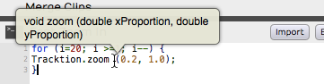
Hover Over an Action for a Tooltip
In this example, the tooltip shows that the zoom action takes two double precision numeric parameters. The first is the x-proportion (the amount of horizontal zoom), and the second is the y-proportion (the amount of vertical zoom, the track height).
RTZ Macro Example¶
By default, Waveform has no true return-to-zero (RTZ) keyboard shortcut. The built-in command stops at the In marker first, so you need to press it twice to get back to zero. A macro that runs the action twice always returns the cursor to the start of the Edit.

True Return-to-Zero Macro Example
For example, you could assign the RTZ macro to the Home key.
Merge Clips Macro Example¶
Merging clips is another task you may do often. Normally you select the
clips on a track that you want to combine into a single clip, click
Render Clips in the Actions panel and choose Merge the selected
clips. If you do this frequently, assign a key to the built-in
Merge selected clips command in Settings > Keyboard Shortcuts, or
call Tracktion.mergeSelectedClips(); as one step of
a longer macro. Pick a free key: Cmd + G / Ctrl + G is already used by
Group clips.

Merge Clips Macro Assigned
Importing and Exporting Macros¶
Macros are plain text, so you can copy and paste them in and out of the
Macro Editor. Waveform also has buttons to import and export macro
scripts as XML files with a .tracktionscript extension, and you can
drag script files onto the Keyboard Shortcuts page to import them.

Script Import and Export Buttons
Example Scripts¶
These example scripts from Waveform's engineers will get you started:
// Rename Clips From Track
var tracks = Tracktion.getSelectedEditElements ('track');
for (var i = 0; i < tracks.length; ++i)
{
var track = tracks[i];
var trackName = Tracktion.getName (track);
var clips = Tracktion.getClipsFromTracks (track);
for (var c = 0; c < clips.length; ++c)
{
var clipName = trackName + " " + (c + 1);
Tracktion.setName (clips[c], clipName);
}
}
// Reset Tracks Solo/Mute
var tracks = Tracktion.getEditElements ('track');
Tracktion.setSolo (tracks, false);
Tracktion.setSoloIsolate (tracks, false);
Tracktion.setMute (tracks, false);
//Next Active Automation Parameter
var track = Tracktion.getTrackFromSelectedObject();
Tracktion.changeActiveAutomationParameter (track, 1);
// Insert Plugin with Preset
var track = Tracktion.getTrackFromSelectedObject();
var plugin = Tracktion.insertPlugin (track, "Massive", 0, "AudioUnit");
var preset = Tracktion.getPresetFromLibrary ("Massive All Souls");
Tracktion.setPluginPreset (plugin, preset);
// Jump to tab 2
var index = Tracktion.getWindowTabIndex();
var delta = 2 - index;
Tracktion.changeWindowTabIndex (delta);
// Rename Selected Tracks
var tracks = Tracktion.getSelectedEditElements ('track');
Tracktion.setName (tracks[0], 'Kick');
Tracktion.setName (tracks[1], 'Snare');
Tracktion.setName (tracks[2], 'Hats');
// etc.
// Save Selected Plugins as Preset
var plugins = Tracktion.getSelectedEditElements ('plugin');
Tracktion.saveObjectsAsPreset (plugins);
More Code Samples¶
/* Park the In-Marker & Out-Markers
Parks the In-marker and Out-marker at Zero then Restores Cursor Position. I wrote this macro to help a KVR forum member find a quick way to hide the In-marker and Out-marker.
*/
var SavePosition = Tracktion.getPosition ('cursor');
Tracktion.moveTransportToStart();
Tracktion.moveTransportToStart();
Tracktion.markIn();
Tracktion.markOut();
Tracktion.setPosition ('cursor', SavePosition);
/* Search Plugins
Opens the Browser to the Search tab, enables the Plugin searching while disabling searching for Presets and Loops.
*/
Tracktion.showSidePanel ('search'); // Opens Browser to the Search tab
Tracktion.enableSearchLibrary ('plugin', true);
Tracktion.enableSearchLibrary ('preset', false);
Tracktion.enableSearchLibrary ('loop', false);
Tracktion.setSearchPanelText (''); // loads blank text so you can start typing the search term right away
// Rename selected clips to 'Drums'
var clips = Tracktion.getSelectedEditElements ('clip');
for (var i = 0; i < clips.length; ++i)
Tracktion.setName (clips[i], 'Drums');
// Rename selected tracks to 'Drums'
var tracks = Tracktion.getSelectedEditElements ('track');
for (var i = 0; i < tracks.length; ++i)
Tracktion.setName (tracks[i], 'Drums');
Moving On¶
For every available action and object, click Show API in the Macro Editor. To run macros from the selection-aware Actions panel, see The Actions Panel.
The AI Assistant¶
The AI Assistant is a chat panel in the Browser where you can ask an AI for help with your Edit in plain language. You can ask it how Waveform works, have it generate MIDI or give production tips, and let it carry out actions for you, such as creating macros or assigning keyboard shortcuts. It keeps a memory between sessions, so over time it can remember how you like to work.
The assistant doesn't include an AI of its own; you tell it which AI service to talk to. That choice is called a profile, and Waveform comes with three ready-made ones (OpenAI API, Anthropic API and ChatGPT (Codex)). You can also add your own, including one that points at an AI model running on your own computer.
The profile decides more than the quality of the answers: it also decides where your messages go and who pays for them. The two cloud profiles that use an API key send your messages to that company and bill you for them; a local model keeps everything on your machine and costs nothing per message. Read Privacy and Cost before you rely on the assistant.
📝 Note: The AI Assistant is available in all editions. It needs a profile that can connect before it can respond. See Getting Set Up below.
Getting Set Up¶
Before the assistant can do anything, two things have to be in place:
- Enable the assistant. It is on by default. The Enable AI Assistant switch on the Settings tab's AI page (choose AI from the list on the left) is what makes the Assistant tab appear in the Browser, so check it's on if you can't see the tab.
- Pick a profile and give it what it needs. On the same Settings > AI page, choose an Active Profile. What appears underneath depends on which one you picked.
The three built-in profiles need different things from you:
- OpenAI API: paste in an OpenAI API key. You get the key from your OpenAI account, and OpenAI bills you for what you use.
- Anthropic API: the same, using a key from your Anthropic account.
- ChatGPT (Codex): no key at all. This one borrows the sign-in you already have from the Codex CLI or the ChatGPT desktop app, so if you're signed in to either of those on this computer, the assistant can use it. The Codex Sign-in row on the settings page tells you whether a sign-in was found.
You can also add your own profile pointing at any OpenAI-compatible server, which is how you run the assistant against a model on your own computer. See Using a Local Model below.
The full details of the AI settings page (every profile setting, the connection test, and the buttons that open the assistant's files) are covered in Reference: Settings > AI. This chapter is about using the assistant once it's set up.
💡 Tip: Of the three built-in profiles, ChatGPT (Codex) is the quickest to get going with if you already have a ChatGPT subscription, because there's no key to create or paste. Be aware that it works by reusing another application's sign-in rather than through a published interface, so it can stop working without warning if that changes. The API key profiles are the more predictable choice.
If you open the Assistant tab before everything is ready, the panel tells you what's missing. With an API key profile it shows one of:
- "API key missing, please enter on the settings page": you haven't entered a key yet.
- "Validating API Key": Waveform is checking the key you entered.
- "Invalid API key, please check on the settings page": the key was rejected; double-check it on the settings page.
With the ChatGPT (Codex) profile the equivalent messages talk about the sign-in instead, telling you that no Codex sign-in was found, that Waveform is checking for one, or that the one it found can't be used at the moment.
Opening the Panel¶
Once it's enabled, the assistant appears as an Assistant tab in the Browser. Click it to open the chat panel. There's no keyboard shortcut for it; you open it from the Browser like its other tabs.
Chatting with the Assistant¶
The panel works like any chat: type a request into the message box at the bottom and send it. The assistant replies in the conversation above, streaming its answer as it goes.
- Send: sends your request. You can ask questions ("how do I freeze a track?") or ask for actions ("create a four-bar drum pattern").
- Cancel (stop icon): takes the place of Send while the assistant is working. Click it to stop a long reply mid-stream. It also interrupts a local model that is still reading a long prompt.
- New chat (edit icon, top of the panel): begins a fresh conversation when you want to change topic and not carry the previous context along. (The
/clearslash command does the same thing.) - Load (history icon, top of the panel): your chats are saved automatically. Click the icon and pick an earlier conversation from the list to pick up where you left off or look back at something the assistant told you. Each chat gets a title written by a fast model from the same provider as the conversation, so a conversation with a local model stays local.
While the assistant works, a step list in the conversation shows what it is doing. Its heading reads Working, Choosing a model or Thinking, and any step that takes more than a moment gets its own line with a running time, such as Searching the manual, Running a script or Working on a Cmajor patch. Only the latest five steps stay in view; click +N earlier steps to see the rest. When the reply is finished the list folds up into one line showing how long the turn took and how many steps failed, if any. Click it to open the list again.
You can also choose which AI model answers you. The Model selector below the message box lists the active profile's models by name, and then, underneath, the models from any other profile that's currently working, written as profile: model. For the OpenAI API, Anthropic API and ChatGPT (Codex) profiles the list shows every chat model your account can use, so new models appear as soon as they are released. Picking a model from another profile sends only this conversation there, without changing your active profile. Use this to ask one hard question of a cloud model while everything else stays local.
The selector also includes an Auto option (the default), which lets Waveform pick a suitable model for each message automatically. When you choose a specific model instead, two more controls appear beside it so you can tune how the assistant responds:
Reasoning (Choices: Minimal, Low, Medium, High): How much effort the model spends thinking before it answers.
Temperature (0-2): How varied the answers are. Lower values give more predictable replies. (Default: 0.7)
Both are hidden while Model is set to Auto, because Auto decides them for each message.
Auto Mode Routing¶
Left alone, Auto picks a sensible model from your active profile for each message. You can also tell it which profile and model to use, by sorting requests into three sizes on the Settings > AI page: Fast Requests, Standard Requests and Heavy Requests. Each can be pinned to a specific model on a specific profile, or left on (Automatic). The automatic Fast, Standard and Heavy models move up to the newest version of each model as it becomes available.
This makes a mixed setup worthwhile. Pin the fast and standard tiers to a model running on your own computer and the heavy tier to a cloud model: everyday chat then costs nothing and never leaves your machine, while the hard requests still go to a capable model. Any tier you leave on (Automatic) uses your active profile.
Using a Local Model¶
Instead of a cloud service, the assistant can talk to an AI model running on your own computer. Nothing you type leaves the machine, and there's nothing to pay per message. The trade-off is that you have to run the model yourself, and a model small enough to run comfortably on a laptop won't be as capable as the large cloud ones.
You need two things: a program that serves a model over an OpenAI-compatible interface, and a profile in Waveform pointing at it.
- Install and start a local server. LM Studio is the friendliest starting point; Ollama, llama.cpp and vLLM all work too. Whichever you use, load a model and start its local server, then note the address it's listening on, typically something like
http://localhost:1234/v1. - Give the model enough context. The assistant sends the model a substantial system prompt plus information about your Edit, so a model loaded with a small context window will fail as soon as a conversation gets going, and the error won't obviously point at the cause. Load it with at least 16k tokens of context; 32k or more is better. In LM Studio this is a setting on the model itself, not on the server.
- Add a profile in Waveform. On the Settings > AI page, click Add Profile, give it a name, and paste the server's address into Server URL. Leave API Dialect on OpenAI-compatible (Chat Completions) unless your server specifically supports the newer Responses API.
- Test it. Click Test Connection. The Connection Status row tells you whether Waveform can reach the server and lists the models it found. It also warns you if a loaded model's context window is too small to be usable, which is the most common thing to get wrong.
Once it's connected, select the profile as your Active Profile to use it for new chats, or leave a cloud profile active and route individual conversations or auto-mode tiers to the local one.
📝 Note: How well this works depends almost entirely on the model you load. The assistant asks a lot of whatever it's talking to (following instructions carefully and calling Waveform's own functions correctly), and small models can struggle with that even when the connection is perfect. If the assistant behaves oddly on a local model but fine on a cloud one, try a larger model before assuming something is broken.
Slash Commands¶
Typing a / at the start of your message brings up slash commands: shortcuts for common requests. The built-in commands are:
/help: asks the assistant to describe the kinds of things it can help you with./info <topic>: get detailed information about a specific topic./clear: start a new conversation./generate_midi <description>: generate a MIDI sequence from a description you give it./production_tips <topic>: get production tips on a topic./mixcheck <platform>: measure your mix and check it's ready for release. Name a platform, such as Spotify, Apple Music or broadcast, or leave it out for streaming defaults. See Checking Your Mix below.
You can also add your own commands. Anything you put in your custom commands folder becomes a slash command the assistant recognises, alongside the built-in ones. To open the folder, go to Settings > AI, and under Assistant Files click Slash commands on the Show Commands row.
Working with the Results¶
When the assistant produces something you can use in your Edit (a MIDI sequence, a plugin preset, or a loop or sample), it appears as a draggable result chip in the conversation. Drag the chip out of the chat and drop it onto a track, as you would drag an item out of the Browser. For example, a generated MIDI sequence drops onto a track as a new MIDI clip.
If the assistant produces a script, the chip gives you the choice of running it straight away or saving it to your library to keep for later.
What the Assistant Can Do¶
Beyond answering questions, the assistant can act on Waveform and your Edit for you. It can:
- Search the user manual to answer "how do I..." questions.
- Generate MIDI sequences from a description.
- Offer production tips.
- Create and run macros (the same JavaScript macros described in the Macros chapter).
- Assign and remove keyboard shortcuts.
- Search your library for presets, loops, and samples.
- Manage its own slash commands and Skills (reusable abilities you can give it).
- Read and write a persistent memory file so it can remember things across sessions.
- Render your Edit and measure how it sounds. See Checking Your Mix below.
- Build Cmajor audio effects and instruments PRO, in Waveform Pro. See Building Cmajor Plugins below.
Checking Your Mix¶
The assistant checks your Edit by rendering it and measuring the result. It renders to a temporary file, analyses it and deletes it, so nothing is added to your Edit. While it renders, a "Rendering..." overlay with a Cancel button covers the Edit, and you can't change the Edit until the render finishes. If you close the Edit or quit while it's rendering, Waveform asks whether to stop the render first. It can measure:
- The whole mix, e.g. "how loud is my mix?"
- A section, e.g. "check the chorus from bar 33 to 49".
- Stems, e.g. "which track is making the low end muddy?" It renders each track separately and compares them.
- One track on its own, with any sidechains still feeding it.
- An existing audio file, such as a reference track you want to compare against.
For each render it reports:
- Loudness: integrated LUFS, maximum momentary and short-term loudness, loudness range, true peak, sample peak and clipped samples.
- Dynamics: crest factor and peak-to-loudness ratios, which show how compressed the mix is.
- Spectrum: the balance of low, mid and high frequencies, plus build-ups over time.
- Stereo field: correlation, width, balance, mono loss, and whether the low end is safely mono.
It compares these with the targets for where the music is going. Streaming services mostly aim for around -14 LUFS with true peak below -1 dBTP (Apple Music -16 LUFS), broadcast for -23 or -24 LUFS, and club tracks run much louder. Tell it the destination, or it assumes streaming.
The quickest way in is /mixcheck. It measures the whole mix and reports loudness, true peak, dynamics, spectral balance and mono compatibility against your release target, leading with the biggest problem. Add a platform to check against a specific target, e.g. /mixcheck Apple Music.
You can also ask it to fix what it finds, for example "bring the mix up to -14 LUFS" or "tame the harshness in the vocal". It makes small, undoable changes, measures again and shows you the numbers before and after, so you can tell whether each change helped. Always listen to the result too: the numbers show whether a mix meets a target, not whether it sounds good.
💡 Tip: To watch the same readings live while you mix, put a Loudness Meter on the Master track. See Loudness Meter in the Utility Plugins chapter.
Building Cmajor Plugins PRO¶
📝 Edition: Waveform Pro, on macOS (Apple Silicon) and Windows. It isn't available on Intel Macs or Linux.
The assistant can write audio effects and instruments for you in the Cmajor language and load them into your Edit.
Describe what you want in plain language, for example "Build me a Cmajor tremolo effect and put it on my first audio track". The assistant then:
- Creates a new patch in the
cmajor-patchesfolder inside your Project folder, so the patch stays with the Project when you move or archive it. - Writes the DSP code, spreading a large patch across several files, and adds a custom UI if you ask for one.
- Compiles the patch, reads any errors and fixes them itself.
- Loads the finished plugin on a track.
A custom UI fills the plugin window and scales with it. If a custom UI can't load, the assistant is told, so it can fix it rather than leaving you with an empty window. In the step list, each build run shows as one Working on a Cmajor patch row.
The assistant can look at the plugin views it builds when the model reads images. On a profile you have added yourself, such as a local model, turn on Model Reads Images in Settings > AI only if the model is a vision model; a model that can't read images rejects them.
Once a patch exists you can open and use it like any other Cmajor patch. It is listed in the Project Cmajor Patches folder of the plugin selector and the Browser, so you can add it to other tracks in the Project. See Cmajor Patches.
What the Assistant Can See¶
To keep its help relevant to what you're doing, the assistant is given context about your Edit with each message. This typically includes the tempo and time signature, the key and scale, the Chord track's progression, arranger sections, whatever clip or plugin you currently have selected, and the contents of the Edit's Info field. This is why it can answer questions like "what key is this in?" or act on "the selected clip" without you having to spell everything out.
The strip at the top of the panel shows the selection being sent: Selected MIDI clip or Selected plugin, followed by its name and track. When neither is selected it reads Additional context to use based on selection.
If you're using one of the cloud profiles, this context is part of what gets sent to the provider along with your message. See Privacy and Cost below.
Persistent Memory¶
The assistant keeps a memory file on disk where it stores notes it has decided are worth remembering between conversations. This is how it can carry context from one session to the next. You can open the memory file yourself from Settings > AI (the Persistent memory button on the Show Memory row, under Assistant Files) to see, edit, or clear what it has remembered.
Privacy and Cost¶
Privacy and cost both depend on which profile you have selected.
⚠️ Privacy: With a cloud profile (OpenAI API, Anthropic API or ChatGPT (Codex)), each message you send, along with the Edit context described above (which can include notes on the selected clip, information about plugins, and the contents of the assistant's memory), is sent over the internet to that company. This data leaves your computer. Don't put anything in the chat, or in places the assistant can read, that you wouldn't be comfortable sending to them. With a profile pointing at a server on your own machine, none of this leaves your computer. The ChatGPT sign-in used by the ChatGPT (Codex) profile is only ever sent to ChatGPT, whatever server address a profile names.
⚠️ Cost: The OpenAI API and Anthropic API profiles use your own API key, and those companies bill you directly for what you use, typically per amount of text processed. ChatGPT (Codex) draws on your existing ChatGPT subscription and its limits rather than a separate bill. A local model costs nothing per message. In none of these cases does Waveform run an AI service of its own or absorb the cost: whatever you use is between you and whoever provides it.
Visual Plugin Selector¶
The Visual Plugin selector shows your plugins as thumbnail images, so you can pick one by how it looks. It opens from the Plugin object on each track, the button with the tooltip Add new plugin.
Using the Visual Plugin Selector¶
To open the Visual Plugin selector, right-click the Plugin object, or hold any modifier key while you click it. It shows each of your plugins as a thumbnail image with its name. A plain click opens whichever selector Plugin selector in Settings > Plugins is set to (see Plugin View Options).

Right-click to Open the Visual Plugin Selector
📝 Note: If you see mostly question marks, the thumbnails haven't been captured yet. See Scanning to Capture Thumbnails.

Visual Plugin Selector
Scroll through your plugins, and when you find the one you want, drag it. The window closes while you keep dragging, so you can drop the plugin on a track in the normal way.
The Visual Plugin selector has a few controls to help you find the right plugin:

Visual Plugin Selector Controls
- Start typing to filter the list.
- Adjust the size of the thumbnail images using the slider at the right.
- If you decide not to pick a plugin, click the X at the upper left or press Esc to close the window.
- Drag a plugin out of the window. The window closes and you drag a transparent image of the plugin, which you can drop wherever you want to use it.

Dragging a Plugin
Determining Plugin Technology¶
When you hover the pointer over a thumbnail, an icon appears in its upper left corner showing the plugin's format: AU, VST, or VST3. This helps you tell apart thumbnails that otherwise look the same.
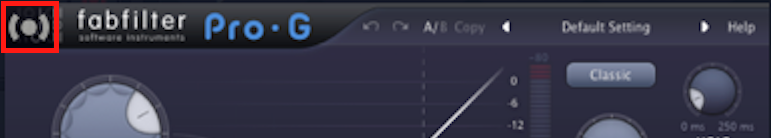
Audio Units Icon
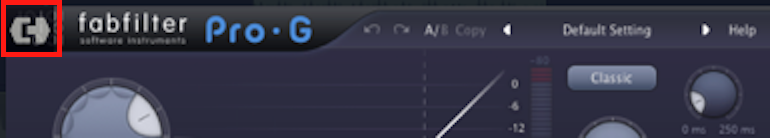
VST Icon
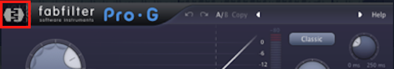
VST3 Icon
The Browser's Search tab uses the same icons to show the plugin format.
Customising the Thumbnail Image¶
Each plugin window in Waveform has a camera icon (Save thumbnail image of plugin UI) in the upper right corner (macOS and Windows). Click it to take a snapshot of the plugin window and update the thumbnail image. For more interesting thumbnails, capture the plugin in action, with the meters moving or an interesting EQ curve.

Customise a Plugin Thumbnail
Scanning to Capture Thumbnails¶
When you first start using Waveform, the Visual Plugin selector thumbnails appear as blank question marks. Waveform captures a plugin's thumbnail the first time you open it, so the thumbnails fill in over time.
To fill in every thumbnail at once, open Settings > Plugins, find the Plugin thumbnail images row and click its Create button.

Capture Thumbnails Options
The menu has three options: For all plugins, For plugins without thumbnails, or For selected plugins (the ones selected in the list of installed plugins). On a new Waveform installation, For all plugins is usually the one to use.

Thumbnail Scan Progress
Opening Visual Plugin Selector with a Shortcut¶
A macro action opens the Visual Plugin selector. To use it, create a new macro, right-click in the script editor in Settings > Keyboard Shortcuts, and choose Advanced actions > Plugins > Show or hide the plugin selector page.

Action to Open the Selector
This adds the code to the macro.

The Completed Macro
Then assign the macro a keyboard shortcut. This example uses Opt + F11 / Alt + F11, which is the default shortcut for Lock/Unlock Actions panel, so pick a free key combination instead if you want to keep that shortcut.
Modifiers¶
Modifiers are modulation sources that automatically vary plugin parameters over time. Instead of drawing automation by hand, you attach a modifier to a parameter and it keeps the parameter moving, for effects such as tremolo or sidechain-style ducking.
Waveform has six modifier types: the LFO, the Envelope Follower, the Random modifier, the Step modifier, the Breakpoint modifier and the MIDI Tracker.
📝 Edition: The LFO is in every edition. The other five modifier types need Waveform Pro, or the MIDI Producer Expansion. In other editions the LFO is the only choice in the modifier menu.
Adding a Modifier¶
To create a modifier, drag the Modifier object onto a track. It sits beside the Clip and Plugin objects, above the right-hand end of the Timeline (tooltip "Drag this onto a track to create a new modifier"). A menu then asks for the type: LFO, Breakpoint, Step, Envelope follower, Random or MIDI Tracker. Drop it onto the top of a track to add it without an assignment, or onto a plugin to choose the parameter to modulate straight away. Modifiers can also live inside a Plugin Rack (see Plugin Racks).
A track with no modifiers shows an Add new Modifier button in its modifier area. Click it for the same type menu. On a track that already has modifiers, drop the Modifier object in the gap between two of them to insert the new one at that point.
Once added, a modifier appears as a small object above the track's plugins in the inline mixer. You can add as many modifiers to a track as you like, and a single modifier can drive several parameters at once.
Double-click a modifier object to open its editor window, where you adjust its settings and see a live display of its output.
There are three places to work with a track's modifiers: the small objects in the inline mixer, a modifier's own editor window, and the Plugins tab of the Detail Editor, which shows every modifier on the track alongside its plugins as a row of panels. See The Plugins Detail Editor.
Assigning to Parameters¶
Every modifier outputs a value that you map onto one or more plugin parameters. The editor window is split into three pages:
- Modifier Settings: the modifier's controls, its live display and the track's parameter list (described below).
- Parameters: the modifier's own parameters (Rate, Depth and so on), with the sources assigned to the selected one. Other modifiers and macros can drive a modifier's parameters too, so you can, for example, have a slow LFO vary the Rate of another modifier.
- Assignments: everything the modifier currently controls.
The list down the right side of the Modifier Settings page is the track's parameter list: every automatable parameter on the track's plugins, with a search box at the top to find one quickly. Each entry has its own knob that sets how far the modifier moves that parameter.
There are two ways to make an assignment:
- Drag the assignment handle (the arrow-and-dot icon at the bottom-left of the editor) onto any parameter, or drop the modifier object straight onto a plugin and pick the parameter from the menu.
- Click the assignment handle to put the modifier into assignment mode, then click the parameters you want to control in the list on the right. This is the quickest way to assign several parameters in one go.
In the Plugins tab of the Detail Editor, where a track's modifiers and plugins sit side by side, there is a third route: drag a modifier's tile onto any plugin's panel and pick a parameter from the menu that opens. See Assigning a Modifier to a Plugin.
The Assignments page lists everything the modifier currently controls, so you can review and adjust each mapping in one place. To remove an assignment, clear it from the Assignments page, or right-click the modifier object and choose the parameter under Remove assignment.
A modifier's own parameters can also be automated. In an automation lane's parameter menu, the Modifiers submenu lists each modifier on the track and its parameters. See Choosing What to Automate.
💡 Tip: A parameter can be driven by more than one modifier at once, and the modifier's movement is added on top of any automation or manual setting you have for that parameter.
Controls Common to Several Modifiers¶
Most of the modifiers share these controls.
Enable: The green power button turns the modifier on or off. Turn a modifier off to stop its effect without losing it or its assignments.
Sync (Choices: Free, Transport, Note): How the modifier's timing is referenced. Free runs continuously at its own rate, Transport locks the cycle to the cursor position so it repeats consistently against the bars and beats, and Note restarts the cycle whenever a new MIDI note arrives. (Default: Free)
Rate Type (Choices: Hertz, 4 Bars, 2 Bars, 1 Bar, and the musical divisions from 1/2 down to 1/64, each available as triplet (T) and dotted (D)): Sets the unit for the rate. Choose Hertz for a free speed in cycles per second, or a musical division to lock the speed to tempo. (Default: 1 Bar)
Rate: The speed of the modifier. When Rate Type is Hertz this is a frequency, and when it is a musical division it multiplies that division. (Default: 1.000)
Depth: How far the modifier pushes the assigned parameter. At zero the modifier has no effect, and higher values give a stronger sweep.
Bipolar / Unipolar: The +/- button switches between Uni-polar output (the value moves in one direction, from the parameter's setting upward) and Bi-polar output (the value swings both above and below the parameter's setting). Use bipolar for symmetrical movement like vibrato, and unipolar when you only want to push a parameter one way.
The Options Menu¶
The gear button opens an Options menu with a few more settings that apply to any modifier:
Colour: Picks the colour used for the modifier object and its live display. Set it when you have several modifiers on one track, so you can tell them apart at a glance. The same colour is used to highlight the plugins it controls.
Remap on Tempo Change: When the rate is locked to a musical division, the actual speed is worked out from the tempo. Leave this on (the default) to have that speed recalculated whenever the tempo changes, so the modifier stays in time. Turn it off to freeze the speed at its current value.
Highlight Controlled Plugins: Draws a coloured outline (in the modifier's colour) around every plugin that has a parameter driven by this modifier. Use it to see what a modifier affects across the track.
Select Plugins: Selects all the plugins this modifier controls, which is a fast way to jump to them.
Delete: Removes the modifier and all of its assignments. The same item is on the modifier object's right-click menu.
The LFO Modifier¶

The LFO Modifier editor, showing a sine wave, the wave and sync menus, and the parameter assignment list on the right
The LFO (low-frequency oscillator) repeats a chosen waveform to give smooth, regular movement. Use it for tremolo, auto-pan and rhythmic filter wobbles.
Wave (Choices: Sine, Triangle, Saw Up, Saw Down, Square, 4 Steps Up, 4 Steps Down, 8 Steps Up, 8 Steps Down, Random, Noise): The shape of the modulation. The stepped and random shapes produce sample-and-hold-style jumps rather than a smooth curve. (Default: Sine)
Alongside Wave, the LFO has the shared Rate, Rate Type, Sync, and Bipolar controls, plus:
Phase: Shifts the starting point of the waveform within its cycle. (Default: 0, the start of the cycle)
Offset: Shifts the whole output up or down before it reaches the parameter. (Default: 0, no offset)
💡 Tip: For tremolo or auto-pan, assign the LFO to a Volume or Pan parameter, pick a Sine wave, set the Rate Type to a musical division and turn up the Depth. There's a video tutorial showing the LFO in action with a virtual instrument.
The Envelope Follower Modifier PRO¶
📝 Edition: Waveform Pro, or with the MIDI Producer Expansion.

The Envelope Follower Modifier, tracing the amplitude of the track's audio
The Envelope Follower watches the loudness of the audio on its track and turns that into modulation. As the signal gets louder the output rises, and as it fades the output falls. This is how you build sidechain-style effects, for example ducking a reverb's wet level whenever a vocal is present, or opening a filter in time with a drum hit.
Gain: Boosts or cuts the incoming audio before the envelope is measured, so quiet signals can still drive a strong response. (Range: -20 to +20 dB, Default: 0 dB)
Attack: How quickly the output rises as the audio gets louder. Shorter times react faster to transients. (Range: 1 to 5000 ms, Default: 100 ms)
Hold: How long the output stays at its peak before it starts to fall. (Range: 0 to 5000 ms, Default: 0 ms)
Release: How quickly the output falls once the audio quietens. (Range: 1 to 5000 ms, Default: 500 ms)
Low-pass and High-pass filters: The LP and HP buttons let you filter the audio before it is measured, each with its own frequency knob. Use them to make the follower respond to only part of the signal, such as the kick drum's low end. (Default: both off; LP 2000 Hz, HP 500 Hz)
Depth: How far the envelope pushes the assigned parameter, and in which direction. (Range: -1 to +1, Default: 1)
Offset: A fixed amount added to the output, so you can set where the parameter sits when the audio is silent. (Default: 0)
📝 Note: The Envelope Follower reacts to the audio on its own track, so it only does something when that track is actually playing audio.
The Random Modifier PRO¶
📝 Edition: Waveform Pro, or with the MIDI Producer Expansion.

The Random Modifier producing a stream of random values
The Random modifier generates ever-changing random values. Use it for subtle, human-style drift on a parameter, or push it harder for chaotic, unpredictable movement.
Type (Choices: Random, Noise): Random produces a new value each cycle (sample-and-hold), while Noise produces a continuously fluctuating signal. (Default: Random)
Shape: Adjusts the character of the generated curve. (Default: 0)
Step Depth: Sets how much each new random step differs from the last, controlling how jumpy the output is. (Default: 1, the maximum)
Smooth: Rounds off the transitions between values. Turn it up to glide between random points instead of jumping. (Default: 0)
The Random modifier also has the shared Rate, Rate Type, Sync, Depth, and Bipolar controls. Use Rate and Sync to decide how often a new value is chosen.
The Step Modifier PRO¶
📝 Edition: Waveform Pro, or with the MIDI Producer Expansion.

The Step Modifier with a drawn sequence of step values
The Step modifier is a step sequencer for a parameter. You draw a row of bars, and the modifier scrubs through them at a tempo-synced rate, like a classic analogue sequencer lane. Use it for rhythmic, repeating patterns.
Steps: The number of steps in the pattern. (Range: 2 to 64, Default: 16)
To set each step's value, drag its bar up or down in the grid. The highlighted column shows which step is currently playing.
Two buttons sit next to the sequence:
- The dice button fills the pattern with random step values.
- The broom button clears the pattern back to its default.
The Step modifier also uses the shared Rate, Rate Type, and Sync controls to set how fast it advances, plus Depth to scale how strongly the steps move the parameter. (Depth range: -1 to +1, Default: 1)
The Breakpoint Modifier PRO¶
📝 Edition: Waveform Pro, or with the MIDI Producer Expansion.

The Breakpoint Modifier with a custom drawn shape across one bar
The Breakpoint modifier lets you draw your own modulation shape from a handful of points. Think of it as a custom LFO waveform: you place the points, bend the segments between them, and the modifier plays that shape back on a loop. Use it for custom envelopes and one-off rhythmic curves.
Num points: How many breakpoints make up the shape. (Range: 1 to 4 active points, Default: 4)
To edit the shape, drag the numbered points in the graph to move them in time and value, and drag the small handle on a segment to curve it. The grid above shows where each beat of the cycle falls.
The Breakpoint modifier also has the shared Rate, Rate Type, Sync, Depth, and Bipolar controls, which set how long the drawn shape takes to play through and how strongly it moves the parameter.
The MIDI Tracker Modifier PRO¶
📝 Edition: Waveform Pro, or with the MIDI Producer Expansion.

The MIDI Tracker Modifier mapping MIDI pitch onto a modulation output
The MIDI Tracker turns incoming MIDI performance data into modulation. Instead of mapping a knob, you map the notes you play, so the pitch or velocity of what you perform can drive any parameter. For example, higher notes could open a filter, or harder hits could add more distortion.
MIDI Type (Choices: Pitch, Velocity): Whether the modifier tracks the note's pitch or its velocity. (Default: Pitch)
Mode (Choices: Absolute, Relative): How the incoming MIDI value is mapped to the output. (Default: Absolute)
In Absolute mode you draw a curve directly across the MIDI range (0-127 along the bottom), placing points to shape exactly how each input value maps to the output. Drag the numbered handles to reshape the curve.
In Relative mode you set two handles instead:
- Root (R): The MIDI value that sits at the centre of the output.
- Spread (S): How wide a range of notes around the root is covered before the output reaches its limits.
A crosshair marks the current incoming value live as you play, so you can see the mapping in action.
⚡ Things to Watch Out For¶
- A modifier nudges a parameter rather than replacing its value. If a parameter doesn't seem to move, check that the modifier's Depth is above zero.
- You cannot assign a modifier to itself.
- The MIDI Tracker only responds while MIDI notes are arriving.
- Note sync restarts the cycle on each new note, so it needs incoming MIDI to do anything useful. On an audio-only track, use Free or Transport instead.
Moving On¶
For hand-drawn parameter changes see Automation, and for grouping several controls under one knob see Macro Parameters.
Clip Layer Effects¶
Clip Layer effects give you quick offline rendering of many common audio processes, arranged as layers on the clip. You can add, remove and rearrange layers at will, and the effects render in quickly. Effects are applied from the top layer down.
Clip Layer effects are particularly useful for clip-based volume automation, converting to mono and normalising, though they can do much more.

Example Clip Layers
To use Clip Layer effects, click the FX button in the header of any Audio clip (or right-click the clip) and choose Add clip effect. The same menu also has Remove all clip effects and Show clip effects.

Audio Clip Header FX Menu
Then choose an effect from the list. Each one is described below.

FX Menu Add Effect Options
The Clip Layer appears on the clip. When you hover over it, a set of controls appears to the right, as shown in this diagram.

Clip Layer Controls Diagram
- Add (+): Adds a new layer directly below this one, from the same list of effects.
- Move (menu icon): The Move before and Move after submenus list the layers by number and type, and plugin layers also show the plugin's name. Pick a layer to move this one before or after it.
- Remove (-): Opens a menu with Remove effect, which deletes the layer.
- Settings (gear): Shows the layer's settings. Only layers that have settings show it.
Plugin layers also have an A button. It lists the plugin's parameters so you can pick which one the layer's curve shows and edits; parameters that already have a curve are coloured.
📝 Note: Clip Layer effects don't work in the clip launcher. When you drag a clip with effects into a launcher slot, Waveform removes its clip effects and tells you so.
Volume - Volume¶
A volume layer is Waveform's way to do clip-based volume automation, and you may find yourself using it instead of track automation for volume.

Volume Clip Layer
Click the gear icon on a volume layer to see its Volume & Pan control values in the Actions panel.
To edit the volume automation curve itself, click the curve (at first it shows as a straight line) and its settings appear in the Actions panel.

Volume curve settings in the Actions panel
💡 Tip: Everything about editing track automation curves applies to volume Clip Layers too. See Automation.
Volume - Fade¶
Fade-ins and fade-outs are also available as layers. Once you've added the fade layer, drag the left or right fade handle to create the fade-in or fade-out.

Fade In/Out
💡 Tip: Right-click a fade handle to set the fade shape.
Volume - Step¶
Add a step volume layer to rhythmically gate the clip.

Step Volume Layer
With the step Clip Layer in place, click the gear icon at the right of the layer and use its settings in the Actions panel to set the step size and divisions. Then edit the grid of steps: click a cell to switch it on or off, and drag across cells to set them the same way. Hold Shift as you click or drag to fill cells, or Cmd / Ctrl to clear them.

Step Volume settings
Time/Pitch - Pitch Shift¶
Add a pitch shift Clip Layer to get an automation curve for pitch. Add points and automate it like any other effect, for anything from simple pitch offsets to dramatic pitch sweeps.

Pitch Shift Layer
When you select the pitch curve on the clip, the Actions panel shows the usual controls for automation curves.

Pitch Curve settings
Time/Pitch - Tape Stop/Start (Pitch Fade)¶
You can right-click the fade handles on any Audio clip to apply pitch fades. The Tape Stop/Start layer does the same thing as a Clip Layer effect.

Tape Stop/Start Layer
Right-click the fade handle to choose the shape for the curve.

Tape Stop/Start Fade Options
Time/Pitch - Warp Time¶
You can enable Warp Time on the clip itself (from the Actions panel or the Detail Editor), or add a warp time Clip Layer.
The header area of the Clip Layer appears shaded. Click anywhere in the shaded area to add a warp marker.

Warp Time Clip Layer - Click to Add Marker
Drag a warp marker to time-stretch the audio between warp markers.

Drag to Warp
To remove a warp marker, right-click it and choose to remove that marker or all markers.

Right-click to Remove Warp Markers
The Clip Layer is convenient when you want to align transients to things happening on other tracks in the Edit, because you see the timing in relation to the rest of the Edit.
Effects - Plugin Layer¶
A plugin Clip Layer lets you put any plugin, including third-party effects, on a layer.

Plugin Layer
Waveform asks you to choose a plugin as you add the layer. When you hover over the layer, a label at its lower right shows the layer's number and the plugin's name, for example "1. Plugin: Chorus".
The key things to know about plugin Clip Layers:
- Click the gear icon at the right to open the plugin UI. When you tweak parameters, the change is rendered in after a few seconds.
- Click the A at the top right to show automation curves. Select any exposed parameter to make its curve visible, then draw in automation with the standard automation editing tools.
📝 Note: Because of the way rendering works, changes to plugin parameters are hard to audition, so plugin Clip Layers suit applying known presets best. For a lot of real-time tweaking, put the plugin on the clip itself (see Clip Effects) or on the track instead.
Effects - Reverse Clip Layer¶
Add the reverse Clip Layer and the audio in the clip plays backwards.

Reverse Layer
Mastering - Normalise Layer¶
Normalise adjusts the gain of the audio so that it uses all of the available bit depth, much like "zoom to fit" in image editing software.
To use it, first add a Normalise layer.

Normalise Layer
Then set Peak level (-60 to 0 dB) to put the peaks where you want them. In voiceover work, clients often ask for audio normalised to -3 dB.

Normalise Peak level setting
Mastering - Mono Layer¶
The mono Clip Layer is the most convenient way to convert a clip to mono in Waveform.
First add a mono Clip Layer:

A stereo Normalise layer above a Mono layer
Then set Method to choose how to render to mono from stereo: Use average of all channels, Use left channel only or Use right channel only.

Mono Options
📝 Note: Use average of all channels is the usual choice. It mixes the left and right channels together to create a mono version.
Mastering - Phase Invert Layer¶
The phase invert Clip Layer flips the polarity of the waveform.

Phase Invert Layer
Moving On¶
To put plugins directly on individual Audio clips, see Clip Effects. For more on stretching audio with warp markers, see Warp Time.
MIDI Effects¶
Waveform includes several MIDI effects. They make no sound of their own: they change the MIDI data coming from the MIDI clips on a track or from your MIDI controller, so they only take effect when you insert them before a virtual instrument.
Waveform Effects¶
These plugins are under Waveform > Effects in the plugin menu.
MIDI Arpeggiator PRO¶
📝 Edition: Waveform Pro, or with the MIDI Producer Expansion.
The MIDI Arpeggiator turns held notes or chords into rhythmic patterns: play a chord and the Arpeggiator cycles through its notes in time with the Edit. It goes on a track's plugin chain before the instrument (it can't be added to a clip).

The MIDI Arpeggiator
Arp section:
- Direction: The order the held notes are played in: Up, Down, Cascade, Alt 1, Alt 2, Random, Chord 1 Octave, or Chord All Octaves. The Chord modes replay the whole chord rhythmically instead of one note at a time. (Default: Up)
- Latch: Keeps the pattern running after you release the keys. (Default: off)
- Clock: The musical rate of the pattern, from 4 Bars down to 1/64, including dotted and triplet values. (Default: 1/4)
- Octaves: Spreads the pattern over 1 to 10 octaves. (Default: 1)
- Freeze: Locks the current input chord so the pattern keeps playing it regardless of what you play next.
Timing section:
- Length: Gate length of each generated note, 25% to 400%. (Default: 100%)
- Swing: Delays alternate steps for a shuffle feel, 0% to 100%. (Default: 0%)
- Rand Pos / Rand Len / Rand Vel: Randomise each note's position, length, and velocity, 0% to 100%. (Defaults: 0%)
Input section:
- Input Fix: Forces all input notes to a fixed velocity.
- Velocity: The fixed velocity used when Input Fix is on, 0 to 127. (Default: 64)
- Input: How input velocities map to the pattern: As Played, Note, or Inverse Note. (Default: Note)
- Max: The maximum number of held notes used, 1 to 16. (Default: 16)
- Key Limits: Constrains the output note range: Off, Fix, Clip, Fold Octave, or Fold Range. (Default: Off)
Pattern section:
Switch the Pattern toggle on to replace the straight cycle with a step pattern of your own. The piano-roll style editor covers -12 to +12 semitones relative to the arpeggiated notes. Use Pattern to load a preset pattern, Save and Clear to manage your own, Import to import a pattern from a MIDI file, Steps to set the pattern length (1 to 32 steps), and Grid to set the step size (1 bar, 1/2, 1/4, 1/8, or 1/16).
MIDI Chord Companion PRO¶
📝 Edition: Waveform Pro, or with the MIDI Producer Expansion.
Chord Companion is a pad-based chord launcher. You assign a chord to each of up to 64 pads (four banks, A to D, of 16), and a single trigger note then fires the whole chord. It also includes a built-in arpeggiator, a chord repeater, and a randomise section. Chord Companion goes on a track's plugin chain before the instrument (it can't be added to a clip).

The MIDI Chord Companion
The editor is a single page with several areas: the Chord List on the left (drag chords from here onto pads), the Scale Selector (root note and scale type) and Chord Pads grid in the centre, the Arp, Repeat, and Random columns on the right, and a keyboard visualiser along the bottom showing the trigger keys and the notes being produced.
Each pad has a trigger note plus two settings of its own: Octave (-2 to +2, default 0) and Inversion (0 to 3, default 0).
The footer holds the Bank A-D selector, Learn (press keys on your controller to assign trigger notes to the pads in sequence), Presets (save and load complete pad layouts), and Follow host key (when enabled, the pads follow the Edit's key signature). (Default: on)
Arp: Switch it on to arpeggiate the triggered chords. Controls match the MIDI Arpeggiator: Direction (Up, Down, Cascade, Alt 1, Alt 2, Random, Chord 1 Octave, Chord All Octaves), Clock (default 1/4), Octaves (1 to 10), plus an optional step Pattern. (Default: off)
Repeat: Switch it on to retrigger the chords rhythmically, with its own Clock and step Pattern. (Default: off)
Random: Available when the Arp or Repeat is on. Dest chooses what the timing controls affect (Both, Arp, or Repeat; default Arp), followed by Length (25% to 400%, default 100%), Swing (0% to 100%, default 0%), and Rand Pos / Rand Len / Rand Vel (0% to 100%, defaults 0%).
MIDI Chord Player¶
The MIDI Chord Player is a live single-note harmoniser: play one note and hear a full chord. Modifier keys let you switch chord types as you play. It's in every edition of Waveform, and goes on a track's plugin chain before the instrument (it can't be added to a clip).

The MIDI Chord Player
Mode: Chooses the type of chords to play. (Default: All Chords)
- All Chords: Every playing key produces a major chord by default. Twelve modifier keys select other chord types: minor, diminished, augmented, major 7th, minor 7th, dominant 7th, half-diminished 7th, minor-major 7th, augmented 7th, major 6th, minor 6th, and suspended 4th.
- Chords in key only: Follows the Edit's key and only produces diatonic chords. Two modifier keys add 6th and 7th variations.
The modifier keys are shown coloured on the plugin's on-screen keyboard, starting just above the playing range. Drag the marker on the keyboard to move where the modifier keys begin. (Default: MIDI note 72)
Render Clips: Bakes the harmonised chords into the MIDI clips on the track as ordinary notes, then removes the Chord Player from the track.
MIDI Modifier¶
MIDI Modifier is a transposer for MIDI data. It shifts every note passing through it by a fixed number of semitones.
Semitones: The transposition, from -36 to +36 semitones. At 0 the value reads "(Original pitch)". (Default: 0)
Pitch: Opens a menu of common intervals: up one or two octaves, +11 to -11 semitones, original pitch, and down one or two octaves. Picking one sets Semitones for you.

The MIDI Modifier
MIDI Note Repeater PRO¶
📝 Edition: Waveform Pro, or with the MIDI Producer Expansion.
The Note Repeater fires a rhythmic pattern while notes are held: hold a chord and it retriggers in time with the Edit. It shares its engine and much of its design with the MIDI Arpeggiator, but it is purely rhythmic: the held notes always play together as a chord, with no note ordering or octave spread. It goes on a track's plugin chain before the instrument (it can't be added to a clip).

The MIDI Note Repeater
Pattern section:
- Clock: The musical rate, from 4 Bars down to 1/64, including dotted and triplet values. (Default: 1/4)
- A single-row step editor, the Sequencer grid, sets the rhythm. Click cells to draw steps on or off, and use the velocity lane beneath the grid to set how hard each step hits. Use Pattern to load a preset, Save and Clear to manage your own, Steps to set the pattern length (1 to 32 steps), and Grid to set the step size (1 bar, 1/2, 1/4, 1/8, or 1/16).
Timing section:
- Length: Gate length of each repeated note, 1% to 100%, a smaller range than the Arpeggiator's 25-400%. (Default: 100%)
- Swing: 0% to 100%. (Default: 0%)
- Rand Pos / Rand Len / Rand Vel: Randomise position, length, and velocity, 0% to 100%. (Defaults: 0%)
Waveform Utilities¶
These plugins are under Waveform > Utility in the plugin menu.
MIDI Filter PRO¶
📝 Edition: Waveform Pro, or with the MIDI Producer Expansion.
MIDI Filter lets through only the notes inside the range you set. To see the range and create a zone, drag the arrows from the left and right sides of the on-screen keyboard. Use two or more of these within a Plugin rack to create zones that play different virtual instruments: for example, bass on the left side of your controller and piano on the right.
MIDI Monitor PRO¶
📝 Edition: Waveform Pro, or with the MIDI Producer Expansion.
MIDI Monitor shows the stream of MIDI data passing through it, so you can debug your setup or see exactly what your controller or keyboard sends. It doesn't change the data, so you won't hear any effect while it is on the chain.
The window lists each event on its own line: a running count, the time, the message type and value (controllers show as "CC" with the controller name, for example "CC Modulation Wheel (coarse): 10"), the channel and the raw bytes. Above the list, Active Notes shows the notes currently held. Drag the window's corner to make it bigger.

The MIDI Monitor
Reset: Clears the held-note state, which is useful if a note-off went missing and Active Notes shows a stuck note.
Clear: Empties the event list.
Copy: Copies the whole list to the clipboard as text, one event per line.
MIDI Patch Bay¶
MIDI Patch Bay remaps MIDI channels. Its window shows one dropdown for each of the 16 incoming channels. Pick the channel you want that input sent out on, or choose Block channel to stop it passing through.

The MIDI Patch Bay with Channel 1 Sent Out on Channel 5 and Channel 3 Blocked
Reset All: Resets every mapping so no channels are changed.
Block All: Blocks all 16 channels.
MIDI Note Names¶
MIDI Note Names lets you give any of the 128 MIDI notes a custom name, and switch individual notes on or off. It's most useful in front of a drum instrument: name note 36 Kick, note 38 Snare, and so on, and those names then appear in the piano roll so you're editing Kick and Snare instead of C1 and D1. The plugin doesn't change the audio; it only relabels the notes.
The plugin's window and its Actions panel show the same controls. Each note has a row with a tick to switch the note on or off, the note number and pitch, a name field (click it to type), and a speaker button that plays the note while you hold it down.
Import Names: Loads names from a text file. Each line starts with
a note number followed by the name, for example 36 Kick. Importing
replaces all the current names.
Show MIDI Note Name Maps Folder: Opens the folder of name files. Waveform puts its own drum and note maps there for you to import or copy.
Clear All Note Names: Removes every name and switches all notes back on.
MIDI CC¶
MIDI CC sends MIDI continuous-controller (CC) messages. It has six knobs, CC 1 to CC 6 (0 to 127, default 0), each with a Dest button below it (Dest 1 to Dest 6). Click it to choose the channel and CC number that knob sends to; it shows "---" (sending nothing) until you pick one, then the CC number. Each knob is an automatable parameter, so you can draw or record CC automation (modulation, expression, filter cutoff) and send it on to a virtual instrument or external gear downstream.

MIDI CC with Dest 1 Set to CC 1
ReWire Device¶
ReWire Device runs any ReWire-compatible DAW as a plugin within Waveform. It's available on Windows and Intel Macs only.
The Arranger Track PRO¶
📝 Edition: Waveform Pro.
The Arranger track gives you a bird's-eye view of your song's structure. You divide the Edit into named, coloured sections (Intro, Verse, Chorus, Bridge, Outro, and so on) and then rearrange the whole song by dragging those sections instead of moving clips track by track.
When you move or copy a section, Waveform moves the underlying audio and MIDI clips plus any tempo, time-signature, and pitch events in that range, all in lock-step across every track. The Arranger track itself makes no sound and cannot host plugins; it is purely a structural tool.

The Arranger track showing Intro, Verse, Chorus, and Bridge sections
Showing and Hiding the Arranger Track¶
Click the Arranger button in the global-tracks strip at the top of the Edit tab to show or hide the track. The button tooltip reads "Show/Hide arranger track". You can also use the keyboard command "Show or hide Arranger track" or the View > Global tracks > Show Arranger track menu item. Arranger track visibility is saved with the Edit and as part of each layout.
💡 Tip: If you use layouts to switch between working setups, you can include or exclude the Arranger track in each one, for example to keep the screen tidy while you're mixing.
Creating Sections¶
To draw a new section, hold Shift, Cmd / Ctrl or Opt / Alt and drag across the Arranger track. The cursor changes to a pencil while you drag, and the section snaps to the current snap grid.
You can also select the Arranger track and press G (Insert a new MIDI clip into the selected track), which adds a section instead of a MIDI clip.
💡 Tip: A plain drag on the Arranger track does not draw a section; you need to hold one of those modifier keys.
Once a section exists, click it to select it. You can rename and recolour it from the Actions panel (see Section Properties below).
Rearranging Sections¶
Drag a section and drop it to rearrange your song. A menu appears when you release the mouse:
| Drop target | Menu options |
|---|---|
| Empty space on the track | Copy section / Move section |
| Another section | Replace / Swap |
| Left or right edge of another section | Inserts just before or just after that section |
Move section shifts the source content to the destination position. Copy section duplicates it. Swap exchanges the two sections' content; Replace overwrites the target with the source.
📝 Note: Swap and Replace do nothing, and show no error, if the two sections overlap, so make sure they don't overlap first.
When you have tracks selected, a Copy or Move operation affects only those tracks. With no tracks selected, it affects all tracks (the Arranger track itself is always included). This lets you make partial rearrangements, for example moving a vocal part independently of the rest of the arrangement.
Inserting Space¶
To add blank time at a specific point, right-click a section and choose Insert time at selected clips, or use the Insert Space dialog. To open the dialog, right-click the timeline and choose Insert space > Insert time at cursor, or use the Insert time at cursor keyboard command. The dialog has fields for Bars/Beats and Time and an Insert button, and inserts the time at the current cursor position.
Section Properties¶
Select a section and its actions appear in the Actions panel. The following controls are available:
| Control | Purpose |
|---|---|
| Name | Label the section ("Verse 1", "Chorus") |
| Start / Length / End | Position and duration in timecode (Length is shown locked) |
| Colour | Set the section's display colour using the hue picker |
| Select Clips | Select other sets of clips related to this section |
| Set Edit Tempo | Set the Edit's tempo based on this section's length (shown when one section is selected) |
| Split Clips | Split the selected sections into two |
| Move Clip | Options for moving the section relative to its neighbours |
| Delete | Remove the selected section(s) |
The Arranger track header itself shows only the standard Shrink / Grow track-height buttons; there are no arranger-specific track options.
Section Right-Click Menu¶
Right-clicking a section gives you:
- Colour
- Cut / Copy / Duplicate
- Delete
- Split at cursor
- Delete time of selected clips: removes that time range from the entire Edit
- Insert time at selected clips: inserts blank time at the section's position
- Delete time gap before / after / both
Related Features¶
- Using Markers: the Marker track, Tempo track, and Chord track are sibling global tracks that work alongside the Arranger track.
- Layouts: Arranger track visibility can be saved and recalled as part of any layout.
- Rendering and Stems: in the Render dialog's Advanced mode, the Each Arranger Clip Region range renders each section to its own file.
Clip Launcher PRO¶
📝 Edition: Waveform Pro, or with the Launcher Expansion.
The clip launcher lets you trigger clips to play and stop, rather than having their start and end times fixed on the arrange timeline.
Playback¶
The clip launcher is in the Mixer, which you can bring into view with M. Show the clip launcher with the C (Show clip launcher) button at the top of the Mixer. Tab switches between the Mixer and the arrangement.
You can drag clips into slots in the same ways as into the arranger: from the Finder or Windows Explorer, or from the Browser. You can also copy, paste and drag clips between the clip launcher and the arranger.
The Mixer's L (Toggle track height) button switches the slots between standard and larger row views.
By default, audio thumbnails only appear in the larger row view. To show them on standard row heights too, set Clip launcher style to Show thumbnail in Settings > Appearance > Clips.

Clip Launcher Playback
Playing and Stopping Clips¶
To trigger a clip in a slot, press its play button. This also starts playback in the arranger.
If the Edit is already playing, the clip waits for the next launch quantisation point before it starts. This is 1 bar by default, and you can change it with Global launch quantisation in the Master track's Actions panel.
Re-triggering a clip that is already playing starts it again from the beginning.
To stop a clip, press the track's stop button below the slots. Stopping is quantised too. The stop button on a Folder track stops every clip in slots inside the folder, and the one on the Master track stops every clip in the Edit.
Right-click an empty slot to Insert MIDI Clip, Insert Step Clip or Paste into it.
📝 Note: Disabled clips, and clips whose audio file is missing, show a greyed-out play button and can't be launched.
The clip launcher supports every clip type, so you can play MIDI, Step and Edit clips as well as Audio clips. Make sure the tracks holding MIDI and Step clips have instruments on them.
Scenes¶
A row of slots across multiple tracks is called a scene. You can trigger all clips in a scene with the scene buttons on the Master track. They all start together, quantised from the same point. If launch quantisation is off, clips start from their beginning as soon as you launch them.

Clip Launcher Scenes
When you have content in several scenes, triggering clips in another scene stops the clip that was playing. This lets you move through the sections of your song and keep everything in sync.
Launching clips also plays back the arranger transport. To keep launched clips in sync with the arranger, moving the cursor during playback waits for the next launch quantisation point. This is the Quantise transport position changes option on the Options menu and the Timeline's right-click menu (on by default). It only works with a Bars & Beats timeline. Turn it off to move the cursor straight away. Jumps to markers wait in the same way (see Navigating by Markers).
The wait follows the global quantisation too. Shorter quantisation times give quicker jumps, but your bar positions may drift out of sync.
When the cursor moves, or the arrangement loop wraps round, launched clips carry on from where they were rather than jumping to a different point in the clip.
Managing Scenes¶
Click the add button below the scene buttons (tooltip Adds a new scene) to add a scene, and drag scenes up or down to reorder them. Select a scene to see its settings in the Actions panel: its Name and Colour, plus Duplicate (D), Insert Scene Before, Insert Scene After and Delete (which deletes all the selected scenes).

Scene properties in the Actions panel
To play the clips on the arranger tracks, use the play-arranger buttons: the one on each track switches that track back to its arrangement clips, and the one on the Master track does this for all tracks. The same switch is the Playback arranger property in a track's Actions panel. Launching a clip turns the track's arrangement clips off again.
Clip/Slot Properties¶
Launcher clips have most of the same properties as arranger clips. However, you can't adjust their start, or their length if they're looping, because that depends on when and for how long they are launched.
The offset property sets where in the launched clip playback starts.
You can adjust the loop start/end points using the Actions panel or the Detail Editor (Clip tab).
In the Detail Editor, a looping Audio clip shows a start flag, which sets where playback starts within the loop, and has no Length property. An unlooped Audio clip can be longer than its audio file: drag its end flag past the end of the file, and the editor shows the extra length.
By default, clips follow the global quantisation, but the clip's Launch quantisation property can override it.

Clip Properties
Legato and Nudge¶
Legato: When Legato is on for a slot, playing that slot takes over the previously playing clip's position. Use it when you have several variations of the same clip and want to switch between them without losing position.
Nudge: Moves a clip's play position forwards/backwards by the global quantisation amount.

Legato and Nudge
Launch Modes¶
Set these with the clip's Launch Mode property.
Trigger: The default mode. Launches the clip when you press the mouse button or controller pad, and ignores the release.
Gate: Launches the clip on the press and stops it on the release. Often used for sound effects or one-shot samples.
Toggle: Launches the clip on the press, and the next press stops it. The release is ignored.
Repeat: Holding down the mouse button or controller pad launches the clip repeatedly at the global quantisation period.

Launch Modes
Slot Properties¶
Slots have a Has stop/rec button property. Turn it off to remove the slot's stop button. Then, when that slot's scene is launched, a track that is already playing a clip and has no clip in the new scene keeps playing it instead of stopping. This is useful for a longer clip or a loop that repeats through a whole song.
Recording¶

Clip Launcher Recording
Recording into empty slots works much like playback, but first you need to assign an input to a track and arm it, in either the arrangement or the Mixer. The stop buttons change to record buttons to show the track is armed.
To record to a slot, press its record button. Recording is quantised the same way as triggering playback, and you'll hear any count-in you have set globally. Once the clip appears, play the input to record it. You'll see a preview of the content as you play.
When you're done, press the track's stop button to stop recording, or the recording clip's play button to launch it. Recorded clips are quantised so they play back in time with the song.
Recording to a new scene on a track stops the previous one, so you can record multiple takes or versions across different scenes.
Record Length¶
Select an empty slot and turn on its Limit record length property to set how long recordings into that slot are. Recording then stops automatically after that length, which makes it quick to record loops into an arrangement.

Record Length Property
Performance Recording¶
🎥 Video explaining capturing a clip launcher performance to the arranger

Clip Launcher Performance Recording
The clip launcher works well for live performance. Sometimes, though, you want to capture a performance so you can edit it later. This is called performance recording. To record a performance, turn on the global record button. Launched clips are then copied to the arranger as they play.
When you stop the launched clip, the arranger clip being recorded stops too. The new clip isn't active yet, because playback is still in the launcher. Press the track's play-arranger button to hear it.
It sounds the same as the clip did when you launched it: its start, end, offset and loop boundaries are all kept.
You can record several tracks at once, and the recording captures every clip or scene you launch.
You can then fine-tune these arranger clips or render the Edit.
Sequencing (Follow Actions)¶
🎥 Video explaining clip launcher sequencing and follow actions
The Playback and Scenes sections show how to trigger slots and scenes by hand. Follow Actions automate this: they set which clips launch next and when, so you can build sequences algorithmically.
Follow actions are in the Actions panel when a clip is selected.

Clip Follow Actions
The first property, Sync follow action to (Beats or Num loops), sets whether the action happens after a number of beats or a number of loops. Set the number with the After property below it. If the clip isn't looping, the loops option triggers at the clip's end.
Global Actions¶
The row below shows the action to perform. Click its button for the actions menu. At the top are Stop, Return to arrangement and Play again, which stop the clip, play back the arranger track or start the clip again from the beginning.
Below them are clip navigation actions in several scopes.
Track Scope¶
The "track" scope means all launcher clips on the track are considered for the action.
The track scope's actions pick the previous or next slot, the first or last slot in the track, any random slot in the track, any random slot other than the one playing, or round-robin (the same as next, except that it loops round to the first slot after the last).
To set the follow actions for several clips at once, select them all.
If the action lands on a slot with no clip, the playing clip stops. In the image above, after the last clip is played, playback on that track will stop. To loop back round to the first clip, select Round-robin.
Other Scopes¶
The other scopes reduce the number of possible clips to choose from. A group is any number of consecutive clips in the track. The image above has three groups.
If you set all these clips to Group: Round-robin, starting any of them loops round the clips in its group. For example, after the last clip in the first group plays, the first clip in that group plays next, and so on.
The other group scopes work the same way. The actions under Previous Group and Next Group pick clips in adjacent groups, and those under Other Group pick from a different group to the currently playing one.
By grouping related clips, such as variations of a chorus bar, you can use the scene triggers to move through the sections of a song.
Action Probabilities¶

Clip Follow Action Probabilities
The clip in the image above has two actions. The slider next to each action is its "weight", the probability that it will be performed.
Add an action with the Add action... button, and move its slider to change the probability that it's triggered. The probabilities always add up to 100%, so changing one changes the others. To remove an action, press its trash can (delete) button.
Combining actions with different probabilities gives you varied musical progressions. For example, a random walk can be configured by setting the last three clips to have a 70% chance of performing the Round-robin action and a 30% chance of the Previous action. Play the first clip, and the following clips usually play in turn, but sometimes playback moves back a scene.
These clip changes can be recorded to the arranger using the global record button (see Performance Recording). You can then replay the result without the randomness.
External Controllers¶
🎥 Video explaining using the clip launcher with external controllers
You can use external controllers to launch clips in much the same way as in the arrangement.
Configuration¶

Controller MIDI Settings
First, go to Settings > MIDI Devices. If your device isn't shown, click Scan for new MIDI devices now. Once it's visible, make sure all its input and output devices are set to Enabled in the list.

Control Surface Settings
Next, go to Settings > Control Surfaces and select your device. Make sure the correct Input Device and Output Device are selected in the control surface properties.
You can also pick a highlight colour to mark the controlled clips in the launcher: select a colour and turn on Colour Clip Slot Selection.
Playback and Recording¶

Control Surface Buttons
Control surfaces vary by model but most have buttons to launch clips, launch scenes and navigate around the clip launcher.
Pressing an empty button on a track will stop playing clips on that track.
If the track is armed for recording, pressing the button corresponding to an empty slot starts recording into that slot.
Most controllers can also be used as MIDI input devices. Press the Note button at the top to switch the device to MIDI input mode. The cells can then record MIDI notes into the recording slot. Pressing the Custom button can change the layout to a drum grid.
Mixer Control¶
Some devices have a Mixer Mode that lets you adjust track and plugin parameters in your Edit. See your device's user manual for what it can do.
The Launcher Expansion also unlocks Ableton Link, for syncing tempo with other apps and devices. See Ableton Link.
⚡ Things to Watch Out For¶
- Clip operations that only make sense in the arrangement aren't offered for launcher clips: split, crop, heal, consolidate, reverse, insert silence, Convert to Step Clip, Merge, Remove Silence and fades.
- Launcher clips can't be rendered in place or flattened, and Flatten leaves them alone.
- A track that is playing its clip launcher renders as silence. The Render dialog warns you when this applies. Switch those tracks back to Playback arranger to render their arrangement.
Reference: Settings¶
This chapter documents every page of the Settings tab. Each section below corresponds to one page in Settings.
Appearance¶
The Appearance page sets the language and overall look of Waveform, and how tracks, clips and notes are drawn. Nothing on this page affects your audio.

Settings > Appearance
This video walks through the settings on this page.
Video: Explaining Appearance Settings
Language¶
Language: Sets the language used for Waveform's interface text. (Default: English)
Several other languages are available. They're contributed and maintained by users, so coverage varies a little from one language to the next.
Look and Feel¶
Display scale: Scales the entire interface up or down in 5% steps, anywhere from 50% to 300%. Scale it up when you're working on a small laptop screen so controls are easier to hit; scale it down on a large monitor or TV to fit more on screen. (Default: 100%)
Font: Opens a menu of the fonts installed on your system so you can pick the interface font. The menu also has Default and Default Unicode options; Default Unicode helps if you need broader character coverage. Default suits most setups. (Default: Default)
Simplify user interface: Renders the interface with less detail, dropping things like colour gradients. It can make the app feel a touch more responsive on older or slower machines. (Default: disabled)
Animate UI panels: Animates panels as they slide in and out of view. With it off, panels snap open and closed. (Default: disabled)
Colour scheme: Click Show editor... to open the Colour Scheme Editor, where you can choose from the built-in schemes or customise individual interface colours. In Waveform Pro PRO you can also click any of the 18 swatches in the editor's hue strip to pick its colour, and use three extra buttons: the palette button loads a preset palette or copies and pastes a colour list, the lock button keeps your swatches when you switch to another scheme, and the reset button restores the default swatch colours.
Browser¶
Browser position (Choices: Left, Right, Top): Sets where the Browser sits when you're working in the Edit tab. (Default: Right)
💡 Tip: To move the Browser without coming back here, drag its tab within the eye button's show/hide selector in the upper right of an Edit.
Panels open side-by-side: When enabled, you can open two or more panels next to each other; when disabled, panels stack on top of one another instead. (Default: disabled)
Automatically hide and show panels: When enabled, the Browser and Actions panels stay hidden to give you more screen space, and pop open automatically as your mouse pointer approaches the edge of the window. (Default: enabled)
💡 Tip: You can also turn this off and open and close the panels from the keyboard: Shift + F11 shows or hides all the panels, and B shows or hides the Browser. The Actions panel has its own show/hide command, which you can give a key in Settings > Keyboard Shortcuts.
Clips¶
Show waveforms: Draws a thumbnail of the audio inside each Audio clip. Most people leave this on. (Default: enabled)
Use hi-res waveforms: Renders clearer, more detailed waveform thumbnails. It can slow older computers down very slightly, but most setups should leave it on. (Default: enabled)
Show clip names: Shows each clip's name in its lower-left corner. (Default: enabled)
Clip launcher style PRO (Choices: Show name, Show thumbnail): Sets whether small clips in the clip launcher show their name or a thumbnail of their contents. Available in Waveform Pro, or with the Launcher Expansion. (Default: Show name)
Show extra slip handles on clip headers: Adds extra handles to clip headers for slipping the contents. The solid triangles at the left and right edges slip the audio from each edge; the open box in the centre slides the whole frame. (Default: disabled)
Show MIDI CC lines: Shows continuous-controller (CC) lines on MIDI clips that aren't tall enough to be in full edit mode. Turn it off for a simpler view. (Default: enabled)
Link clip colour to track colour: When enabled, clips take on the colour of the track they sit on wherever possible. Turn it off if you'd rather colour clips independently of their tracks. (Default: enabled)
Tracks¶
Automatically assign colours to new tracks: When enabled, each new track you add is given a colour automatically, cycling through the palette. Turn it off if you don't use track colours or prefer to assign them yourself. (Default: enabled)
Show coloured backgrounds on tracks: Tints each track's background with a subtle shade of its track colour. (Default: disabled)
Double-click track header to toggle height (Choices: Small and medium, Small and large, Small, medium, and large): Sets which heights you cycle through when you double-click a track header. (Default: Small and medium)
Show track outputs: Adds a speaker icon to the right of each track's Mute and Solo buttons; click it to set the track's hardware or virtual output. Tracks that are tall enough show the output assignment in their plugins section anyway, so this option mainly matters on narrow tracks. (Default: enabled)
Loop markers extend over tracks: When enabled, the In and Out markers run the full height of the arrange area rather than sitting in a single strip. (Default: disabled)
Show master plugins in transport bar: When enabled, the transport bar shows the master volume, plugins, and meters. (Default: enabled)
MIDI Note Colour¶
Link note colour to velocity: Draws MIDI notes with low velocity darker than louder ones, so you can read dynamics at a glance. (Default: enabled)
Highlight current key in MIDI background: Normally the piano-roll background in the MIDI editor is shaded like a piano, with the same rows always light or dark. With this on, the lighter rows instead follow the key signature set in the Tempo track, and the shading shifts whenever the key changes, so you can use the background as a guide for staying in key. (Default: disabled)
The remaining swatches set the colours used to highlight notes against the current key and chords. The first two relate to the Chord track, so they only appear with Waveform Pro or the MIDI Producer Expansion.
In-key chord note PRO: The colour for notes that are in the key and scale and part of the current chord (used with the Chord track). (Default: Green)
Out-of-key chord note PRO: The colour for notes that are in the current chord but not naturally in the key and scale (used with the Chord track). (Default: Yellow)
In-key scale note: The colour for notes that are part of the key and scale at that point. (If a note is also part of the chord, it uses the chord colour instead.) You don't need the Chord track to get these. (Default: Light Blue)
Out-of-key scale note: The colour for notes that fall outside the key and scale at that point. When you're using the Chord track, seeing this colour means the note is part of neither the chord nor the scale. (Default: Red)
💡 Tip: To see the chord and scale colours in the piano roll, set MIDI notes to the multicolour option in the MIDI editor.
💡 Tip: Change the key and scale at any point on the timeline with Insert key change (Opt + P / Alt + P).
Audio Devices¶
This page is where you choose your audio interface, set the sample rate and buffer size, and decide which physical inputs and outputs Waveform should use. It's also where you name your hardware and calibrate recording sync so recorded takes line up correctly.

Settings > Audio Devices
The page has three parts: a stack of settings at the top, lists of input and output channel groups below, and a tall settings pane on the right that shows the options for whichever input or output row you've selected.
Audio I/O Devices¶
These controls at the top of the page choose the driver, the device, the sample rate and the buffer size.
Device type (Choices depend on your system, e.g. CoreAudio, ASIO, DirectSound, Windows Audio): Picks the audio driver technology Waveform talks to. This control only appears when more than one device type is available on your machine. On macOS you'll usually have a single type and won't see this at all.
💡 Tip: On Windows, if your interface came with an ASIO driver, choose ASIO here. It generally gives you the lowest latency and the most reliable buffer sizes.
Output Device (Choices: your hardware outputs, or none): The physical output Waveform plays through. Pick none if you don't want any audio output. The list shows whatever the selected device type reports.
Input Device (Choices: your hardware inputs, or none): The physical input Waveform records from. This row only appears when the current driver keeps inputs and outputs separate. For interfaces that bundle input and output together (a single ASIO device, for example), there's only one device choice and your input follows the output selection automatically.
Sample rate (Choices: the rates your device supports, shown in Hz): The number of samples per second Waveform runs at. Higher rates can mean better fidelity at the cost of more CPU and disk. (Default: your device's current rate, e.g. 44100 Hz)
📝 Note: Changing the sample rate resets the buffer size to your device's preferred value, so double-check the buffer size afterwards if you'd set it manually.
Audio buffer size (Choices: the sizes your device supports, shown as samples and the equivalent milliseconds, e.g. 1024 (23.2 ms)): How much audio Waveform processes per block. Smaller buffers give you lower latency, which matters when monitoring live input, but they push CPU load up and risk audio glitches. Larger buffers are kinder to the CPU and good for mixing. (Default: your device's current size)
💡 Tip: Keep the buffer small while tracking so you can monitor without noticeable delay, then raise it for mixing once plugins are keeping the CPU busy.
Clip audio output to 0dB: Clips Waveform's master output so it can't exceed 0 dB, which protects your speakers and ears from accidental overloads. It's a safety net, not a mastering tool. (Default: on)
Driver Buttons¶
When the current device offers its own control panel (most common with ASIO interfaces), two extra buttons appear side by side. Neither appears for devices without one.
Control Panel: Opens your audio driver's own settings window. After you close that window, Waveform reopens the device so any changes take effect.
Reset Device: Closes and reopens the current audio device. This is the first thing to try if your interface stops passing audio or gets into a confused state.
These two buttons are always shown, whatever the device:
Reset Input Device Properties: Resets your input devices back to their default settings. You'll get a confirmation prompt first.
Reset Output Device Properties: Resets your output devices back to their default settings, again with a confirmation prompt.
Channel Layout Presets¶
A channel layout preset stores how your device's channels are currently arranged into input and output groups, so you can switch between setups (for example a stereo mixing layout and a multi-mic tracking layout) without regrouping every row by hand.
Save Current Layout as New Preset: Asks for a name and saves the current arrangement under it. Saving with the name of an existing preset replaces that preset.
Each saved preset appears as a row above the button. Click a row to apply it; Waveform asks you to confirm before it replaces your current layout. Each row also has two icons on the right: Update replaces the preset with the current layout (after a confirmation), and Delete removes the preset straight away.
Input Channel Groups¶
Below the main settings, each available input appears as its own row. A channel group is a named set of one or more physical input channels (a mono input, a stereo pair, and so on) that you can record from as a unit.
Each row has the same set of controls:
Enabled / Disabled: Toggles whether this input is active. Enabled rows show a green tick; disabled rows show a red cross. Only enabled inputs show up elsewhere in Waveform as recording sources, and only enabled rows display a level meter.
Default / (Make default): Marks this input as the default recording source. The current default reads Default; the others read (Make default), and clicking one promotes it.
Channels: Opens a menu for choosing how the physical channels are grouped. Every edition offers Mono and Stereo. With Waveform Pro or the Surround Expansion, the menu also offers larger layouts (3, 4, 5, 5.1 Surround, 7, 7.1 Surround, 14 channels, and more under Other), plus shortcuts to Set all to mono channels or Set all to stereo pairs, which apply that layout across every input (or every output) at once.
Level meter: The bar on the right of each enabled row shows incoming signal so you can confirm audio is arriving and gauge how hot it is.
Clicking anywhere on a row selects that input and fills the settings pane on the right with its full settings (described below).
📝 Note: The row shows the device's name, and if you've given it an alias, the alias appears next to the name in quotes.
Output Channel Groups¶
Outputs are listed the same way as inputs, with one addition.
Enabled / Disabled, Default / (Make default), Channels, and the level meter all work exactly as they do for inputs.
Test: Plays a short test tone through that output so you can confirm it's wired up and audible. This button only appears on enabled output rows.

An output row selected, with its own settings on the right
Selected Device Settings¶
When you select an input row, the settings pane on the right shows everything about that one input. These settings apply to recording from that input, and (while Use the Same Properties for All Devices is on) are shared across all your inputs. Selecting an output row shows that output's own settings in the same pane.
Channels: At the top, this repeats the channel grouping for the selected input, so you can change the layout from here too.
Input Monitoring Mode (Choices: On, Auto, Off): Controls whether the input signal is played back through Waveform while the input is active. On always passes it through, Off never does, and Auto passes it through only when it makes sense (such as when the track is armed). (Default: Auto)
Input Gain: Applies a gain boost or cut to the incoming signal, from -12 dB to +12 dB. Use this to bring a quiet source up or tame a hot one before it's recorded. (Default: 0.0 dB)
Trigger Level: Sets a level the input has to reach before recording actually starts, from -51 dB up to 0 dB. Use it for hands-free recording: arm the track and Waveform waits until the sound crosses the threshold. (Default: the lowest/off position)
Trigger level hit - click to reset: A status button for the trigger. It shows Waiting for trigger level... until the threshold is crossed, then switches to Trigger level hit - click to reset so you can re-arm it. While a recording is running it reads Recording... and is disabled, so you can't reset it mid-recording.
Time Adjust: Shifts newly recorded clips in time to compensate for your hardware's round-trip latency, in milliseconds (roughly -500 to +500). Most people set this with the Auto-Detect tool rather than by hand. (Default: 0.000 ms)
Auto-Detect...: Opens the Recording Synchronisation Test, which measures your round-trip latency for you. See Calibrating Recording Sync below.
Device Alias: Gives this input a friendly on-screen name (for example "Vocal Mic" instead of a generic interface label). The alias shows up wherever the input is referenced. Leave it blank to use the device's own name.
Record Mode (Choices: Overlay newly recorded clips onto edit, Replace old clips in edit with new ones, Don't make recordings from this device): Decides what happens when you record over existing material from this input. Overlay layers the new take on top, Replace swaps out what was there, and Don't make recordings... stops this input from recording at all. (Default: Overlay newly recorded clips onto edit)
Filename: The naming pattern used for files recorded from this input. It supports placeholders for things like the Edit name, track, and take number (right-click the field for the full list of tokens).
Reset Filename: Restores the filename pattern to its default.
File Format (Choices: the formats your install supports, e.g. WAV, AIFF, FLAC, Ogg): The audio format new recordings are written in. (Default: WAV)
Bit Depth (Choices: depend on the chosen format, e.g. 16-bit, 24-bit, 32-bit): The number of bits per sample for new recordings. Higher depths capture more dynamic range at the cost of larger files. The available choices change when you switch format.
Use the Same Properties for All Devices: When ticked, all your input devices share one set of these settings, so changing one changes them all. When you turn it on, Waveform asks whether to copy the current device's settings to the others or leave them as they are. (Default: on)
At the bottom of the panel there's a larger input level meter for the selected device.
Settings for an Output¶
Channels: The channel grouping for the selected output, the same choice as on its row.
Dithering Enabled: Adds dither to this output, which masks the distortion of reducing Waveform's high-resolution mix to your interface's bit depth. (Default: off)
Left/Right Reversed: Swaps the channel order of this output, for example when your speakers are wired the wrong way round. Only shown for outputs with two or more channels. (Default: off)
Device Alias: A friendly on-screen name for this output, shown wherever the output is referenced.
Calibrating Recording Sync¶
If recordings come back slightly early or late compared to what you played along to, that's round-trip latency, and the Auto-Detect... button measures it for you.
Clicking it opens the Recording Synchronisation Test dialog. Waveform plays a test signal out, listens for it coming back in and works out how long the round trip took.
For this to work, the output has to physically loop back into the input. The cleanest way is a cable from an output to an input on your interface. A microphone in front of a speaker can work too, but it's less reliable because the room adds noise and delay.
Click Run Test and Waveform plays the signal a few times and measures the delay. If it succeeds, it reports the detected delay in milliseconds. Click Apply to set that value as the recording offset, or Cancel to discard it.
If the test can't find the signal, it says so. That usually means the loopback isn't connected, or the signal is too quiet or noisy (common with the microphone-and-speaker approach). Fix the path and click Run Test again.
📝 Note: The test needs at least one active audio output device. If you have no output selected, the dialog says so and the Run Test button won't appear.
📝 Note: Applying a result sets the recording offset on your input devices for you, which is the same value you'd otherwise type into Time Adjust by hand.
⚡ Things to Watch Out For¶
-
Disabled inputs and outputs disappear from the rest of Waveform. If a device isn't showing up as a recording source or playback destination, check that its row reads Enabled here first.
-
(Windows) The Microsoft GS Wavetable synth can cause trouble. If that MIDI device is enabled, Waveform warns you when you open this page, because it can interfere with some audio drivers. If your audio device won't open, try disabling the Microsoft synth. See MIDI Devices.
See MIDI Devices for configuring MIDI inputs and outputs.
Chords¶
The Chords page sets which chord types Waveform offers when you work with chords, and lets you build your own. Whatever you set here applies across the Chord track, the pattern generator, and the MIDI editor.

Settings > Chords
Default Chords¶
This is the full list of chord types that ship with Waveform: major and minor triads, sevenths, suspended chords, ninths, and so on. Each row shows whether the chord is enabled, its name (like Major Triad or Dominant Seventh), and its symbol (like M, m, or 7).
Every chord is Enabled by default. Switch off the chords you never use to keep the chord menus elsewhere in Waveform short.
To toggle a chord, click the Enabled / Disabled indicator at the left of its row. Enabled chords show a green tick and the word "Enabled"; disabled ones show a red cross and the word "Disabled". A disabled chord stays in this list; it's only hidden from the Chord track, pattern generator, and MIDI editor until you switch it back on.
💡 Tip: There's no harm in disabling a long list of chords. Nothing in an existing Edit breaks, and you can re-enable any of them at any time.
Custom Chords¶
Beneath the built-in list is the Custom Chords table, where any chords you've created yourself appear. It has three columns: Name, Symbol, and Pitches (the notes that make up the chord). When you first open this page it's usually empty.
Click Add... to create a custom chord. You can start from a blank chord or base the new one on an existing chord (a built-in type or another custom chord), which is quicker when you only want to change a note or two.
📝 Note: As the on-screen hint says, you can also create custom chords by selecting notes in the MIDI editor. That's often the easiest route, since you can hear and play the voicing before saving it.
To get rid of a custom chord, select its row and click Remove.... The Remove... button only becomes available once you've selected a chord in the table.
You can also double-click a custom chord's row to reopen it for editing.
⚡ Things to Watch Out For¶
- A missing chord may only be disabled. If a chord has vanished from the Chord track or MIDI editor, check whether it's switched off in the Default Chords list.
⚠️ Warning: Removing a custom chord is permanent: there's no undo. Clicking Remove... opens a confirmation prompt, and its Delete button removes the chord for good.
Control Surfaces¶
The Control Surfaces page is where you enable and configure external hardware controllers: units with faders (often motorised), knobs, buttons and transport controls that let you work Waveform without the mouse. You can use one of the built-in presets for popular hardware, or build your own custom surface over MIDI or OSC.

Settings > Control Surfaces
The Device List¶
The large list in the middle of the page shows every control surface Waveform knows about. Each row has three columns:
- The device name on the left (for example, Mackie Control Universal, KORG nanoKONTROL 2 or Behringer X Touch Compact).
- The input column in the middle, showing which MIDI input Waveform is listening to for that device.
- The output column on the right, showing the MIDI output (back-channel) Waveform sends to for that device, used to drive motorised faders, LEDs, and displays.
If a device has no port assigned yet, the column reads <No Device Selected>. A device whose name appears dimmed is not currently enabled.
Click a row to select it. Its settings appear in the panel on the right, and from there you choose ports, set options, and switch the device on.
📝 Note: The list only shows entries for surfaces Waveform supports out of the box, plus any custom surfaces or scripts you add. If your exact hardware isn't listed, look for a generic mode it can emulate (many controllers offer a "Mackie Control" or "HUI" mode), or create a custom surface.
💡 Tip: If you plug in a controller while this page is open, the port menus don't pick it up straight away. Go to another Settings page and back (or select a different device, then this one again) and the new port appears, with no restart needed.
Setting Up a Device¶
Select a device in the list, then use the settings panel on the right. The exact controls depend on what the device needs, but the common ones are:
Input Device (Choices: your available MIDI inputs): The MIDI port Waveform listens to for messages from this controller. Pick the port your hardware is connected to.
Output Device (Choices: your available MIDI outputs): The MIDI port Waveform sends back to the controller, used for motorised faders, button LEDs, and on-device displays. Only appears for devices that have a back-channel.
Enable: Switches the device on or off. This control appears for devices that don't need a MIDI input to be chosen; devices that do need one switch on as soon as you select a valid Input Device. (Default: off)
Extenders: The number of extender units (extra banks of faders) attached to your main surface. Only shown for hardware that supports extenders. (Default: 0)
Main: When you have more than one unit, this picks which one is the "main" surface. Only appears once you've added extenders.
Colour Track Selection: When on, Waveform highlights the track or plugin currently under the surface's control using a colour you choose. Useful with banks of faders, so you can see at a glance which tracks they're driving. (Default: off)
Colour Clip Slot Selection: Does the same for clip slots, on grid-style controllers that have pads. Only appears for surfaces with trigger pads. (Default: off)
Colour: The highlight colour used by the two options above. Click the swatch to pick one.
Hide MIDI Input Device: When on, the MIDI input used by this surface is hidden from the rest of Waveform, so its messages don't get recorded as notes or trigger other things by accident. Only appears for surfaces that can consume all their input. (Default: off)
💡 Tip: Turn Hide MIDI Input Device on for dedicated control surfaces. You almost never want fader and button messages from a control surface bleeding into your MIDI recordings.
The Mackie Control Universal entry adds two more settings:
Set extender order...: Opens the MCU Order window. Drag the main unit and its extenders into the order they sit on your desk. Use it after setting Extenders.
One button record: When on, pressing Record on the surface starts recording straight away. When off, you hold Record and press Play to start recording. (Default: off)
OSC Devices¶
Some surfaces talk to Waveform over a network using OSC instead of MIDI. For those, the port settings are different:
Host: The network address Waveform sends outgoing OSC messages to (your controller or app).
Port (outgoing): The port Waveform sends OSC messages on. (Range: 1025-65535)
Port (incoming): The port Waveform listens on for OSC messages coming back. (Range: 1025-65535)
Local IP address: Read-only. Shows the IP address(es) of this computer on your network, so you know what to point your OSC controller at.
For OSC devices, the input and output columns in the device list show these addresses and ports rather than MIDI port names. A small activity indicator next to the ports flickers as messages flow, which is useful for confirming the connection is live.
JavaScript Control Surfaces¶
Many of the surfaces in the device list are JavaScript scripts rather than code built into Waveform. Scripts such as the Mackie Control Universal, KORG nanoKONTROL 2 and Behringer X Touch entries work in every edition. Scripts for clip-launching controllers, such as Ableton Push 2 and the Novation Launchpads, only load with Waveform Pro or the Launcher Expansion. When you select a scripted surface, you'll see:
Reveal script: Opens your file browser at the script file that powers this surface. (Available only for scripted surfaces.)
Notes: Read-only text describing the surface, shown when the script author included notes.
Waveform loads scripts from the Controllers folder inside its settings folder (click Show... next to Settings folder on the File Locations page). It has two subfolders:
- Factory holds the scripts that ship with Waveform. Waveform restores these files each time it starts, so changes you make there don't last.
- User is for your own scripts. A script here with the same file name as a factory script replaces it.
To write a script for your own hardware, copy Example.js from the Factory folder into the User folder, rename it, and fill in the device details and the functions your controller needs. Example.js itself is never loaded: it's a template that lists every function a script can call, with a comment on each. The other scripts in the Factory folder are complete working examples for real controllers. Scripts can also call the same Tracktion. functions that macros use.
Waveform reloads a script as soon as you save it, so you can test changes without restarting. To watch the MIDI going to and from a surface while you work, choose View > Show controller log window.
Custom Control Surfaces¶
If your hardware isn't covered by a preset, you can build your own. Click Create New Custom Control Surface... at the bottom of the page.
You'll be asked for:
- A Name for the surface.
- A Protocol (Choices: MIDI, OSC): how the surface communicates. (Default: MIDI)
Once created, the new surface appears in the device list. Select it to configure it. In addition to the common settings above, a custom surface gives you:
Channels: How many channel strips (for example, faders) your hardware has. (Range: 0-32)
Parameters: How many plugin parameters the surface can adjust at once. (Range: 0-32)
Edit Control Mappings...: Opens the mappings editor, where you teach Waveform which physical control does what. You can "learn" a control by moving it on your hardware, then assign it to a Waveform function.
Import Settings...: Loads a saved custom surface configuration from a file. Useful for sharing setups or moving them between machines.
Export Settings...: Saves your custom surface configuration to a file for backup or sharing.
Follows selection: When on, the surface always controls whichever track is currently selected. (Default: off)
Pick up mode: Prevents values jumping when you touch a control. With this on, a knob or fader won't take effect until you move it past its current value. This is useful for controllers without motorised faders, where the physical position may not match the on-screen value. (Default: off)
Delete: Removes this custom surface. Waveform asks you to confirm first. (Custom surfaces only; built-in presets can't be deleted.)
💡 Tip: Export a custom surface's settings as soon as you've set it up, so the mapping work is backed up and ready to share with anyone who has the same hardware.
Mappings Editor¶
The Edit Control Mappings... button opens a dedicated window listing every mapping on a custom surface. To learn a control, click the "learn" side of a row and move the physical knob or fader; Waveform picks up the incoming message. The other half of each row lets you choose which Waveform function the control drives. Double-click a row to edit it manually, and press Delete to remove a mapping.
⚡ Things to Watch Out For¶
- Motorised faders and LEDs need the output port too. If your faders don't move or your buttons don't light up, check that Output Device is set, not just Input Device.
- Two devices can't share one input port cleanly. Assigning the same MIDI input to more than one surface leads to confusing behaviour. Give each surface its own port.
- Unused presets are harmless. Built-in presets can't be deleted, but they do nothing until you assign a port.
- OSC needs matching ports on both ends. The Port (incoming) here must match the port your OSC controller sends to, and your controller must send to the Local IP address shown. A mismatch means no messages get through.
Downloads¶
The Downloads page signs in to your Tracktion account, checks for newer versions of Waveform and any add-ons you own, and lists extra content you can install. The downloading and installing is done by a separate helper app, the Tracktion Download Manager, which you launch from the top of this page.

Settings > Downloads
When you open the page, Waveform tries to sign in with the account email it already knows about and check for updates. If it can sign in, you'll see your available updates and downloads. If it can't, you'll be asked to log in first.
📝 Note: This page only shows updates for your current major version of Waveform. If a brand-new major version is released, you'll get that from the Tracktion website rather than here.
Launch or Install the Download Manager¶
The button at the top of the page changes its label depending on whether the Download Manager is installed.
Launch Download Manager: Opens the Tracktion Download Manager app so it can download and install your selected items. You'll see this label once the Download Manager is installed.
Install Download Manager: Appears instead when the Download Manager isn't installed yet. Clicking it downloads the installer and runs it for you. This is a one-time setup step; after that, the button switches to Launch Download Manager.
💡 Tip: The list below is a catalogue. Clicking here tells Waveform what you want, but the Download Manager does the downloading and installing, so install it first or nothing will download.
If Waveform can't work out where to get the Download Manager, it points you to the Tracktion website so you can download it yourself.
Searching the List¶
Search: The search box sits under the button. Type part of a product's name to narrow the list down to matching items. Clear it to see everything again.
The Downloads List¶
The main area lists everything relevant to you, grouped into sections.
Out of Date: Items you already have installed that have a newer version available. Each row shows the product name along with version details, such as the version you have and the version on offer.
Not Installed: Content and products you own (or that are available to you) but haven't installed yet.
Up to Date: Items you have installed at the latest version.
Each row has its own action buttons on the right.
Update: Hands the item off to the Download Manager to fetch and install the newer version. Shown on items in the Out of Date section.
Install: Shown on items in the Not Installed section. Hands the item to the Download Manager to download and install for the first time.
Re-install: Shown on items in the Up to Date section. It installs the current version again, which helps if an installed item has gone missing or been damaged.
Ignore: Shown on items in the Out of Date and Not Installed sections, and hidden once you've ignored that version. Tells Waveform to stop reminding you about this particular update. The item stays in your list, but the update is marked as ignored so it no longer counts as something you need to act on. Use this for updates you're deliberately skipping.
📝 Note: Clicking Update, Install or Re-install doesn't install anything by itself. It launches the Download Manager (if installed) and asks it to handle that item. The Download Manager opens in its own window to do the work.
Account Controls¶
At the bottom of the page are the controls for your Tracktion account and update notifications.
Logout: Signs you out of your Tracktion account and returns you to the login screen. Use this if you need to sign in with a different account, or you're on a shared machine. After logging out, you'll log back in from this same page to see your downloads again.
Notify of minor updates: When ticked, Waveform also alerts you about smaller, minor-revision updates. With it unticked, Waveform only tells you about more significant updates. (Default: off)
⚡ Things to Watch Out For¶
- The list needs a signed-in account. If it's empty or stuck on the login screen, check your internet connection, then use Logout and sign in again.
Licensing¶
The Licensing page is where you unlock Waveform, register the expansions and content packs you own, and see at a glance what's active on this computer. If something you bought isn't showing as unlocked, this is where you fix it.

Settings > Licensing
The Feature List¶
The large list in the middle shows every Waveform edition and expansion the app is aware of. Each row has a thumbnail, a name, a short description, and a status badge on the right.
The status badge shows where each item stands:
- Unlocked (green): You own it and it's authorised on this computer. Nothing more to do.
- Demo (green): You're running it on a time-limited trial. The badge also shows roughly how long is left (for example, "Demo 2 weeks").
- Expired (red): The demo period has run out. To keep using it you'll need to buy a licence and refresh.
- Locked (red): You don't have a licence for this item on this computer yet.
- Included (orange): The expansion's features are already part of Waveform Pro, so no separate licence is needed. You only see this on feature expansions while running Waveform Pro.
📝 Note: The status reflects this computer specifically. A licence that's unlocked on your studio machine will show as Locked on a laptop until you authorise that laptop too.
The list is for information only: clicking the rows does nothing. The action buttons are above and below it.
Refresh Licenses¶
Refresh Licenses: Sits along the top of the page. Click it to log in to your tracktion.com account and pull down any licences tied to it, then apply them to this computer.
This is the button you'll use most. When you click it, a window titled Authorisation via tracktion.com opens and asks you to log in with your tracktion.com account details. Once you sign in, Waveform fetches your licences and unlocks anything you're entitled to.
When it finishes, you'll get a short summary telling you how many new licences were found and naming each one. If everything was already current, it tells you your licences are up to date. The list on this page updates immediately so you can confirm the new status.
💡 Tip: Use Refresh Licenses whenever you buy something new, set up Waveform on a different computer, or a feature you expect to own is still showing as Locked.
If the login is cancelled or something goes wrong fetching your licences, Waveform shows a warning explaining the problem and leaves your existing licences untouched. You can try again.
Buy Expansions/Content Packs¶
Buy expansions/content packs: Sits along the bottom of the page. Click it to open the Tracktion store in your web browser, where you can purchase new expansions and content.
After you complete a purchase, come back to Waveform and click Refresh Licenses to bring the new content onto this computer.
If you're not running Waveform Pro, the Upgrade section of the Maintenance page also lets you register a Pro licence.
File Locations¶
The File Locations page is where you tell Waveform where to keep its working files and where to go looking for your presets, loops, and plugins. Set these paths once so the Browser finds the right content and temporary files go to a drive with room for them.

Settings > File Locations
The page is split into sections: General, Presets, Loop Database, Plugins, and (with Waveform Pro or the DJ Mix Tools Expansion) Feature Extensions. Each path field shows the current location, and most have a small folder button at the right end that opens a file chooser so you can pick a new one.
💡 Tip: Many of the path fields and folder lists are underlined. Underlined items can be reset back to their default location. Right-click them to find the reset option.
General¶
Settings folder: Click Show... to open the folder where Waveform stores its settings and preferences in your system's file browser, for example to back up your configuration or while troubleshooting.
Temporary Directory: The working folder Waveform uses for thumbnails, frozen tracks, and other temporary files it generates while you work. Click the folder button to choose a new location.
⚠️ Warning: Everything inside the temporary directory is treated as disposable. Any files and subfolders in that location may be deleted automatically to free up space, so never point this at a folder containing files you care about. Waveform will warn you if the folder you choose isn't empty, and it won't let you use a drive's root folder, so create a dedicated subfolder and use that instead.
Quick Render Location: The folder where files produced by quick render end up. Choose a location with plenty of free space if you render often.
Presets¶
This section controls where your effect and instrument presets live and which folders the Browser searches.
User Presets Path: The single folder where presets you create yourself are saved. Click the folder button to change it.
Folders to search for presets (the list box): A list of folders the Browser scans when showing presets. Use the buttons beneath the list to manage it:
- Add Path...: Opens a file chooser to add a folder to the list. If you pick a folder that doesn't exist yet, Waveform asks whether you still want to add it.
- Remove Path: Removes the currently selected folder from the list.
- Move Up / Move Down: Reorders the selected folder. Order can matter when the same preset name appears in more than one folder.
💡 Tip: You can edit an existing folder in any of these lists by double-clicking it (or pressing Return with it selected), which reopens the folder chooser for that row.
Loop Database¶
These settings cover where your loops are stored, where Waveform searches for them, and how the loop database is built.
User Loops Path: The folder where loops you create are saved.
Folders to search for loops (the list box): The directories Waveform scans for loops. It uses the same Add Path..., Remove Path, Move Up, and Move Down buttons described under Presets above.
Factory Loops Path: The folder containing the factory default loops that shipped with Waveform.
Scan for loops: Opens a small menu with two choices:
- Scan for new and changed loops: A quick scan that picks up anything added or modified since the last scan.
- Clear database and rescan all loops: Wipes the loop database and rebuilds it from scratch.
⚠️ Warning: Clearing the database and rescanning loses any custom loop tags you've added. Waveform asks you to confirm before doing this.
File Types to Add: Opens a menu of loop file types to include when scanning. You can toggle each type on or off:
- Apple loops (Default: on)
- Acid loops (Default: on)
- REX (Default: on)
- WAV/AIFF (Default: on)
- MIDI (Default: on)
- MP3/Ogg/etc... (Default: off)
📝 Note: Compressed formats like MP3 and Ogg are switched off by default because they're less common as loop material. Turn them on if your loop library includes them, then rescan.
Plugins¶
This section is where you point Waveform at the folders containing your plugins so it can find and scan them. Each plugin format has its own folder list, controlled with the same Add Path..., Remove Path, Move Up, and Move Down buttons used elsewhere on this page.
The formats shown depend on your platform and which plugin types your build of Waveform supports. You may see any of:
- VST Plugins: Folders to search for VST (VST2) plugins.
- VST3 Plugins: Folders to search for VST3 plugins.
- Ladspa Plugins: Folders to search for LADSPA plugins (Linux only).
- LV2 Plugins: Folders to search for LV2 plugins.
- Cmajor Patches: Folders to search for Cmajor patches (macOS on Apple Silicon and Windows only).
📝 Note: Adding a folder here tells Waveform where to look, but doesn't always start a scan. If a newly installed plugin doesn't appear, run a plugin scan from the Plugins page.
Feature Extensions PRO¶
📝 Edition: Waveform Pro, or with the DJ Mix Tools Expansion.
This section holds feature extension packs, such as the one Stem Separation needs.
Folder: Shows the folder where installed feature extension packs live. Clicking the folder button gives you a Reveal folder option that opens that location in your file browser.
Installed: A read-only list of the feature extensions you currently have installed.
Content pack: Click the Install from file... button to install a content pack manually. It opens a file chooser filtered to content pack files (.content and .zip), and installs the one you select.
⚡ Things to Watch Out For¶
- When adding a path, Waveform lets you add a folder that doesn't exist yet (after a confirmation). Check the spelling, or that folder will never turn up any content.
General¶
The General page covers how Waveform behaves day to day: your name, what happens at launch, editing defaults, metering, MIDI, mixing defaults, mouse behaviour, plugin windows, saving, and track inputs. Most of its settings are defaults for new clips, tracks and projects.

Settings > General
Changes take effect immediately, but a default only affects things you create from now on, not items already in your Edit.
Profile¶
Username: The name saved into the Edits and projects you work on. Limited to 32 characters; only letters, numbers, spaces, hyphens and underscores are kept.
Export User Settings: Saves your current user settings to a .trksettings file. Use it as a backup, or to copy your setup onto another computer.
Import User Settings: Loads settings back in from a .trksettings file you previously exported.
Startup¶
Upon launch reload edits: When on, Waveform reopens the Edit tabs you had open last session. (Default: on)
Upon launch (Choices: Go to the Projects tab, Go to the Settings tab, Go to the last viewed tab, Go to the welcome tab): Which tab Waveform shows right after it starts. (Default: Go to the welcome tab)
Editing¶
Default auto crossfade mode (Choices: Disabled, Enabled): When you drag an Audio clip so it overlaps another, Waveform can automatically crossfade between them. This is a per-clip property, so enabling it here only affects clips you create from now on. (Default: Disabled)
Default comping crossfade length: The crossfade time, in milliseconds, used between comp sections when you swipe-comp takes. Range 0-500 ms. (Default: 20 ms)
Default marker type (Choices: Bars & Beats, Absolute timecode, Automatic): The marker type used when you insert a new marker. (Default: Bars & Beats)
Default timeline format for new projects (Choices: Bars & Beats, Seconds, Frames 24 fps, Frames 25 fps, Frames 30 fps): The timeline format new projects start with. (Default: Bars & Beats)
Enable separate edit cursor: Adds a second cursor that follows your mouse. Editing, zooming and pasting then act on this edit cursor instead of the main cursor, so you don't have to keep moving the main cursor for simple edits. (Default: on)
Paste at edit cursor: Makes paste operations happen at the edit cursor rather than after the source clip, giving you more control over where pasted clips land. This option only appears when Enable separate edit cursor is on. (Default: off)
Make new clips the size of the marked region: When on, newly created clips take the size of the current marked region. (Default: off)
Number of undo levels: How many actions you can undo and redo (Cmd + Z / Ctrl + Z, or the undo buttons). Range 5-1000; raise it if you want a deeper history. (Default: 30)
Tempo change remapping (button: Remap audio clips, Remap auto-tempo audio clips, Remap MIDI clips, Remap plugin automation): Click Set defaults to open a menu of toggles. Remapping stretches clip lengths and moves clips when the tempo changes so they stay in sync with the timebase. These switches choose which clip types and plugin automation can remap.
Create fades on clip edges: Automatically adds a tiny fade in/out to new clips to avoid clicks at their edges. (Default: off)
Audio clips use proxy files by default PRO: Controls whether newly added clips render a proxy file or time-stretch in real time. Real-time time-stretching uses more CPU but avoids the proxy render. Available in Waveform Pro, or with the Recording Engineer, MIDI Producer or DJ Mix Tools Expansion. (Default: on, i.e. use proxy files)
Default resampling quality PRO (Choices: Normal (Lagrange), Good (Sinc Fast), Better (Sinc Medium), Best (Sinc Best)): The default sample-rate conversion algorithm for audio clips. Higher qualities sound cleaner but cost more CPU. Available in Waveform Pro, or with the DJ Mix Tools Expansion. (Default: Normal (Lagrange))
Detect tempo of imported audio files: Turns on automatic tempo detection when you import audio. (Default: on)
Round detected tempos to the nearest beat: Rounds detected tempos to avoid small errors. Useful if you mostly import electronic music. (Default: off)
Always ignore BWAV timestamp when importing audio files: Places imported files at the cursor position instead of using any embedded broadcast-WAV timestamp. (Default: off)
Meters¶
Meter response (Choices: Slow decay, Quick decay, Instant decay): How quickly level meters fall back after a transient. (Default: Quick decay)
Peak hold (Choices: 2 seconds, 10 seconds, Until cleared): How long meters keep the peak level lit after a hit. (Default: 2 seconds)
💡 Tip: In "Until cleared" mode, meters hold the highest peak indefinitely. Use the Reset all level meter peak indicators command (you can give it a key in Settings > Keyboard Shortcuts) to reset them.
MIDI¶
Automatically show MIDI editor toolbar: Shows the toolbar automatically in the inline MIDI editor. With it off, the toolbar stays hidden until you toggle it (default shortcut Opt + Cmd + T / Ctrl + Alt + T). This only affects the inline editor; the toolbar is always visible in the Detail Editor. (Default: on)
MIDI toolbar position (Choices: Left side of track, Left side of MIDI clips): Where the MIDI pop-up keyboard and tool selector appear: pinned to the left of the track, or next to each MIDI clip. (Default: Left side of track)
Default MIDI editor vertical scale (Choices: 2 octaves, 4 octaves, 6 octaves, Full scale): The starting vertical range for MIDI clips. You can always adjust it later by dragging the arrows at the top or bottom of the piano-roll keyboard. (Default: 2 octaves)
Double-click MIDI clip header (Choices: Expands for in-line editing, Opens the MIDI editor, Opens the MIDI editor (in-line editing disabled)): What a double-click on a MIDI clip header does. "Opens the MIDI editor" is the most common choice. The last option lets you avoid the inline editor entirely. (Default: Opens the MIDI editor)
Set middle C to (Choices: C3, C4, C5): How MIDI note names are labelled. Best left at the default unless you have a reason to change it. (Default: C4)
Use incoming velocities for MIDI step entry: In step-entry mode, uses the velocity you actually play on your controller instead of the fixed value set in the MIDI toolbar. (Default: off)
Mixing Defaults¶
Default pan law (Choices: Linear, -2.5 dB Center, -3.0 dB Center, -4.5 dB Center, -6.0 dB Center): How left/right panning is balanced. Many classic consoles attenuate the centre to keep perceived loudness steady as you pan. With a linear pan law you may need to nudge the volume after panning. (Default: Linear)
Freeze point creation (Choices: Manually freeze tracks, Freeze track when a freeze point is created or copied): What triggers track freezing. Freezing renders a track's effects and instruments to free up CPU and reduce latency. (Default: Freeze track when a freeze point is created or copied)
Freeze point insert location (Choices: Before plugins, Pre-fader, Post-fader): Where the freeze point is inserted in the signal chain when a track is frozen. (Default: Pre-fader)
Solo behaviour (Choices: Cumulative solo, Exclusive solo): How multiple soloed tracks interact. With cumulative solo, soloing more tracks adds them to what you hear; with exclusive solo, soloing a track replaces the previous solo. (Default: Cumulative solo)
Mouse¶
These options tune mouse drag, click and wheel behaviour. Several exist for compatibility with older versions.
Allow drag from clip edges to resize: Lets you resize clips by dragging their edges directly, rather than using the header buttons. (Default: on)
Resize tracks over clip area: Lets you change track height by dragging within the clip area. (Default: on)
Clicking the background locates the playhead: When on, clicking in the arrangement area (including the body of a clip or the empty space between clips) moves the cursor there. Clicking a clip header still selects the clip without moving the cursor. (Default: on)
Timeline drag (Choices: Drag to scroll view, Drag to locate playhead): What dragging left/right over the timeline does. "Drag to scroll view" pans the whole track view; "Drag to locate playhead" makes the cursor follow your drag. Either way, clicking the timeline positions the cursor. (Default: Drag to scroll view)
Tracks area drag (Choices: Drag to draw marked region, Drag to select clips, Drag to move playhead): What a left-drag in the tracks area does.
- Drag to draw marked region gives you the I-beam range cursor. Hold Opt / Alt while dragging to select clips instead.
- Drag to select clips gives marquee-style clip selection, matching how you select MIDI notes. Hold Shift + Opt / Shift + Alt to draw ranges with the I-beam.
- Drag to move playhead is the legacy Tracktion behaviour: dragging only moves the cursor.
(Default: Drag to draw marked region)
Video Tutorial: Drag to Draw Marked Region
Tracks area right drag (Choices: Zoom horizontally, Scroll tracks): What right-button dragging over the tracks area does. (Default: Zoom horizontally)
Wheel (Choices: Zooms horizontally (add shift to scroll), Scrolls the view (add shift to zoom)): The default mouse-wheel action; the modifier swaps it to the other behaviour. (Default: Zooms horizontally (add shift to scroll))
Over tracks area (Choices: Wheel scrolls vertically, Wheel scrolls horizontally): What the wheel does when the pointer is over the tracks area. (Default: Wheel scrolls vertically)
Allow wheel to scroll within MIDI clips: When on, the wheel scrolls the inline MIDI editor up and down while the pointer is over a MIDI clip's piano roll. Turn it off if you'd rather always scroll the tracks vertically. (Default: on)
Plugin Windows¶
Open plugin windows by (Choices: Single-clicking, Double-clicking): Whether a single or double click opens a plugin's window. Choose double-click to avoid opening plugin UIs by accident. (Default: Single-clicking)
New plugins open on PRO (Choices: Active Display, Display 1, Display 2, ...): On a multi-monitor setup, which display new plugin windows open on. The number of choices matches the displays you have connected. Below this control a small diagram shows your monitor layout, with the active one highlighted. Available in Waveform Pro. (Default: Active Display)
Saving¶
Automatically backup entire project: Backs up your project and Edit files automatically. (Default: on)
Backups are made at most once every 15 minutes. Older backups thin out over time and are eventually removed. You can also make a permanent backup yourself from File > Backup edit and project files.... Those are never auto-deleted.
To recover, go to the Projects tab, pick a backup file, and click Restore Edit; the chosen Edit comes back into the current project named "Edit (Restored)". To bring back a whole project at a point in time, use Restore Project..., which creates a new project and Edits from the backup.
📝 Note: Only your project file and Edits are backed up, not the audio files. If you delete the source audio, this feature can't bring it back.
Enable autosave: Periodically saves your Edit in the background while you work, so a crash costs you little. (Default: on)
Generate audio preview files automatically: Creates the audio previews shown with each Edit on the Welcome and Projects tabs, so you can hear what an Edit is before opening it. Generated when you close an Edit. (Default: on)
When closing an edit (Choices: Ask to save, Always save): What happens when you close an Edit. Choose "Always save" if you'd rather not be asked each time. (Default: Ask to save)
Track Inputs¶
Allow inputs to appear on multiple tracks PRO: Lets one input (a MIDI device or audio input) be assigned to more than one track. It's a specialised need, and most users leave it off. Available in Waveform Pro. (Default: off)
Default audio device follows selection: When on, selecting a track moves the audio input to follow it. Useful when overdubbing the same input across several tracks. (Default: on)
Default MIDI device follows selection: When on, selecting a track moves the MIDI input to follow it. Handy when you want to start playing the same keyboard straight into whichever track you select. (Default: on)
Keyboard Shortcuts¶
This page is where you view and customise every keyboard shortcut in Waveform. Every action in the app, from switching tabs to inserting a clip, is listed here as a command you can search for and bind to a key combination.
To learn the shortcuts that ship with Waveform, see the Keyboard Shortcuts chapter. This section covers the page itself: how to find a command, assign or remove keys, switch between preset key sets, and save your own setup.

Settings > Keyboard Shortcuts
The Command List¶
The bulk of the page is a scrollable list of every command, grouped into expandable categories such as Application, Automation, Browser, Clip, Edit Tab, and Editing. Click a category's triangle to collapse or expand it.
Each row shows the command name on the left and its assigned key combinations on the right. A command can hold up to three key combinations at once, so the same action can have a main shortcut and alternatives.
📝 Note: A handful of system commands (Cut, Copy, Paste, Delete, and Quit Waveform) are shown but locked. Their keys are fixed to the platform standards (Cmd + X / Ctrl + X, Cmd + C / Ctrl + C, and so on) and can't be changed here.
Searching and Filtering¶
Two filter boxes sit across the top of the list. They work together, so you can narrow by name and by key at the same time.
Search: The text box on the left. Type any part of a command's name, its description, or its category, and the list shows only matching commands. Clear it to see everything again.
Press keyboard to filter: The box on the right. Click it, then press a key combination. The list filters down to the single command currently bound to that combination, which is a quick way to answer "what does this shortcut already do?" Click the small x at the right end of the box to clear it.
💡 Tip: Use the key filter before assigning a new shortcut. If pressing your intended combination shows an existing command, you'll know it's already taken before you reassign it.
Assigning a Key¶
Each command row ends with a small + button. Click it to add a new shortcut. The button disappears once a row holds three combinations, so remove one before adding another.
A window appears reading "Please press a key combination now...". Press the keys you want, then click OK. If you change your mind, click Cancel.
If the combination you press is already used by another command, the window warns you which command currently owns it. After you confirm, Waveform asks whether you want to re-assign the key. Choose Re-assign to move it to your new command (the old command loses it), or Cancel to back out.
Changing or Removing a Key¶
Click an existing key combination shown on a row to open a short menu:
- Change this key-mapping: Opens the same "press a key combination" window so you can replace it.
- Remove this key-mapping: Deletes that combination, leaving the command unbound (or down to its remaining keys).
Key Sets and Presets¶
The buttons along the bottom of the page handle whole-keyboard operations.
Reset to Defaults: Opens a menu of complete key sets. Picking any of these replaces all your current mappings, so Waveform asks you to confirm with an Overwrite prompt first. The options are:
- Restore default Waveform key mappings: Returns everything to Waveform's standard layout.
- Clear all mappings: Removes every shortcut, leaving you a blank slate to build from.
- Use legacy Tracktion key-mappings: The older Tracktion layout, for long-time users.
- Use 'Ableton Live' style key-mappings: A layout modelled on Ableton Live.
- Use 'Cubase' style key-mappings: A layout modelled on Cubase.
⚠️ Warning: Every option under this button overwrites your entire mapping set, including any custom shortcuts you've assigned. If you've built a setup you like, save it first (see below) before experimenting.
Saving and Loading Your Setup¶
Save Key-Mappings...: Exports your current mappings to a file so you can back them up or move them to another machine. You choose where to save; Waveform warns you before overwriting an existing file.
Load Key-Mappings...: Imports a previously saved mappings file. Loading first restores Waveform's defaults and then applies the saved file on top, so the result is always predictable.
View as HTML...: Generates a printable web page listing every command and its shortcuts, and opens it in your browser. Use it to print a cheat sheet or review your whole setup at a glance.
Macros and the Custom Menu¶
Two buttons reveal extra editing areas for building your own actions.
Show Macro Editor: Toggles a script editor at the bottom of the page where you can write JavaScript macros and bind them to keys like any other command. Selecting a macro in the list loads its script. Inside the editor you'll find:
- Import: Browse for and import script files. You can also drag script files directly onto the page.
- Export: Save the selected macro's script to a file.
- Delete: Remove the selected macro.
- Add a new macro: Create a fresh, empty macro to start writing.
- Show API: Opens the scripting API reference in your browser.
- Call on key up and down: When ticked, the macro runs on both the key press and the key release; otherwise it runs only on the press.
💡 Tip: Right-click inside the script editor to insert actions and see argument options for the call under your cursor.
Show Custom Menu: Toggles a panel on the right where you can build your own menu of actions. Drag commands or scripts from the list into this panel to add them. An empty panel prompts you to "Drag scripts here to begin...".
⚡ Things to Watch Out For¶
- Changes are saved automatically. Your mappings are written out when you leave this page, so there's no separate "apply" step for the edits you make directly in the list.
Maintenance¶
The Maintenance page controls the anonymous diagnostics Waveform sends to Tracktion, and has buttons that reveal the log and crash files to attach when you report a problem. It also shows exactly which version of Waveform you're running.

Settings > Maintenance
Your Waveform Version¶
The heading at the very top shows your edition and version number, for example "Waveform Pro v14.x.y". Quote it exactly when you contact support.
Below the heading is a short explanation of why Tracktion collects data and how it's handled. In short: everything sent is anonymous and can't be traced back to you, none of it is shared, and data is only sent when Waveform starts up and shuts down, never while you're working. The logging won't slow Waveform down.
Diagnostics Reporting¶
Three independent opt-in toggles control what gets sent to Tracktion.
Send Crashes: Reports when a crash happens and what was being used at the time, which is usually either a feature or a plugin. If you only turn on one of these, make it this one: crash reports are the most direct way to get the crashes you hit fixed.
Send System Info: Sends details about your machine, such as your operating system, CPU speed, and amount of RAM. This helps Tracktion understand what kind of hardware Waveform runs on so they can focus their testing.
Send Usage: Reports how the app is used and which features are most popular, so Tracktion can see what's worth investing in.
Data Collected¶
Show Usage File: Opens the file containing everything that would be sent to Tracktion, so you can see exactly what's collected before deciding what to enable. The button reveals the file in your system's file browser.
Reporting Issues¶
If you hit a crash, report it to support and attach the relevant files from here. If a plugin caused the crash, report it to that plugin's developer too, since the fix usually has to come from them.
Show the Log File: Reveals the log file, which records what Waveform has been doing. Include this in any support query. (On Windows, you're also reminded to attach the crash report.)
Show the Crash Reports: Reveals the crash report files. Include these alongside the log file when you report a crash.
📝 Note: The exact buttons you see depend on your platform. The crash report button appears on macOS and Windows. On other systems, only the log file is offered.
💡 Tip: Both of these buttons open your file browser rather than the file itself, so you can drag the files straight into an email or a support ticket.
Upgrade¶
This section only appears if you're not already running a full, registered copy of Waveform Pro, for example if you're on a free edition, an unregistered install, or in demo mode.
Unlock: If you've bought a Pro licence, this opens the registration dialog so you can enter it and unlock the Pro features.
Upgrade: Opens the Tracktion website in your browser so you can see what Pro adds before buying.
MIDI Devices¶
This page is where you set up the MIDI gear you play, record or sync with: keyboards, drum pads, control surfaces, synths, sound modules and drum machines. Waveform ignores any device listed here that isn't enabled; enabled devices are available to your tracks.
The page is split into three areas. On the left you enable and configure your input and output devices. On the right, a properties pane shows detailed settings for whichever device you've clicked on. Across the top sit a few global options that affect how Waveform discovers MIDI hardware.

Settings > MIDI Devices
MIDI Options¶
These settings sit at the top of the page and apply to all MIDI hardware, not to any one device.
Auto-scan for new MIDI devices (Choices: Never, Every 2 seconds, Every 5 seconds, Every 10 seconds, Every 30 seconds): How often Waveform automatically looks for MIDI gear you've plugged in or switched on. More frequent scanning means newly connected devices appear faster, at the cost of a small amount of background work. If scanning your MIDI ports takes too long, Waveform switches auto-scan off by itself. (Default: every 4 seconds, which isn't one of the menu choices)
💡 Tip: If you often hot-plug USB MIDI controllers mid-session, keep a timed interval so they show up without you having to do anything. If your rig stays the same, you can set it to Never and use Scan for new MIDI devices now when you need it.
Scan for new MIDI devices now: Forces an immediate one-time rescan. Use this when you've just connected something and don't want to wait for the next auto-scan (or you've turned auto-scan off entirely).
Use computer keyboard for MIDI input: Lets your computer's typing keyboard act as a MIDI input so you can play notes without any hardware attached. (Default: on)
📝 Note: With this on, turn Caps Lock on to play notes from your typing keyboard.
MIDI Input Devices¶
This list shows every MIDI input Waveform can see: your physical keyboards and pads, any virtual inputs you've created, and special entries like "All MIDI Ins". Each row has the same set of controls.
Enabled / Disabled: The toggle on the left of each row. A green tick and "Enabled" means the device is active and can send MIDI into Waveform; a red cross and "Disabled" means it's ignored. Click it to switch. (Default: depends on the device)
(Make default) / Default: Sets this input as the default MIDI input. The default is the one Waveform reaches for when it needs an input without you having picked one. The current default reads "Default"; every other row offers "(Make default)" to promote it. Clicking it also selects the device so its settings appear on the right.
Virtual: A small tag shown next to virtual inputs you've created. Physical hardware doesn't show this tag.
Activity meter: The small meter at the right edge of each enabled row. It flickers when MIDI is arriving, which is a quick way to confirm a device is actually sending data.
Click anywhere on a row to select it and load its settings into the properties pane on the right.
Create New Virtual MIDI Input...: Creates a virtual input device that merges incoming MIDI from one or more of your real devices into a single source. You'll be asked to type a name for it. This is handy when you want several controllers to feed one track as if they were one instrument. Virtual inputs you create can be deleted again from their properties pane (see below).
💡 Tip: The "All MIDI Ins" entry is a built-in virtual input that combines every connected MIDI device. Enable it when you want anything you play, on any controller, to reach the focused track.
MIDI Output Devices¶
This list shows the MIDI outputs Waveform can send to: hardware synths, sound modules, drum machines, and similar. Each row uses the same Enabled / Disabled toggle and (Make default) / Default control as the input list, so enable the outputs you want to drive and pick a default if you like.
Click a row to load its settings into the properties pane on the right.
Device Settings (the Right-Hand Pane)¶
When you select a device, its settings appear in the pane on the right. The list changes depending on whether you clicked an input or an output.
Settings for a MIDI Input¶
Device Alias: A friendly on-screen name for this device. Type whatever you like (for example "Studio Keys" instead of a cryptic driver name) and that's what you'll see throughout Waveform.
Select MIDI Inputs: Only appears for a virtual input you created. Opens a menu of your physical inputs so you can tick which ones feed into this virtual device.
Action (Choices: Merge newly recorded MIDI into any existing clips; Overlay new clips, containing newly recorded MIDI; Replace existing clips with newly recorded MIDI clips; Monitor live input from this device, but don't actually record): What happens to MIDI you record from this device. The last option lets you play through the device live without ever creating a clip. (Default: Merge newly recorded MIDI into any existing clips)
Active MIDI Channels: Chooses which of the 16 MIDI channels are allowed through. Opens a menu where you can allow all, block all, or toggle individual channels. The current state is summarised as a range (for example "1-4, 8") or as "All channels enabled". (Default: all channels enabled)
Active MIDI Note Range: Limits which notes pass through. Opens a menu where you can allow all notes or drag sliders to set a start and end note. Useful for splitting a keyboard or ignoring stray low/high keys. (Default: all notes allowed)
Apply Channel: Forces recorded MIDI onto a specific channel (1-16), or leave it as "None" to keep the channels as played. Opens a menu to choose. (Default: None)
Apply Program: Sends a program (patch) change so the destination instrument switches sound. Opens a menu of banks and programs; you can also set how many banks to show. (Default: None)
Record MPE to Note Expression: When on, incoming MIDI is treated as MPE and its controller movements are recorded as per-note expression instead of plain controller data in the clip. Turn this on for expressive MPE controllers like the ROLI Seaboard. (Default: off)
📝 Note: If Waveform already recognises the device as an MPE controller, this row reads "MPE will be recorded to note expression" and there's nothing to toggle.
Quantise: Applies timing correction to notes as they come in, snapping them to a musical grid. The list of grid values comes from the current Edit. Choose a value to quantise on the way in, or pick none to record exactly as played.
Set All Incoming Note Velocities to Full: When on, every note you play is recorded at maximum velocity (127), ignoring how hard you actually hit the keys or pads. Handy for drum programming where you want every hit at full strength. (Default: off)
Time Adjust: Nudges recorded MIDI earlier or later in time, in milliseconds (range -100 to 100). Negative values are labelled "(Early)" and positive "(Late)". Use this to compensate for a controller that consistently feels ahead of or behind the beat. (Default: 0.00 ms)
Minimum note length: Sets the shortest allowed gap between a note-on and its note-off, in milliseconds (range 0 to 100). This is mainly for drum controllers that fire note-on and note-off at the same instant, which would otherwise record as zero-length notes. (Default: 0.00 ms)
Allow MIDI Controller Remapping: When on, controller (CC) messages from this device become available to map onto plugin parameters. Turn it on if you want this device's knobs and faders to control plugins. (Default: off)
Input Monitoring Mode (Choices: On, Auto, Off): Whether MIDI from this device is passed through into the plugins on its track so you can hear it live. On always monitors, Off never does, and Auto monitors only when it makes sense (for example when the track is armed). (Default: Auto)
Delete: Only appears for a virtual input you created. Removes it straight away, without asking. The button is red because there's no undo.
Virtual Keyboard: A pop-out on-screen piano keyboard for this input. Click the keys to send notes as if they were coming from the real device, which is useful for testing or for playing when no hardware is to hand.
Settings for a MIDI Output¶
Device Alias: A friendly on-screen name for this output, like the input alias above.
Send MIDI Timecode: When on, Waveform sends MIDI Timecode (MTC) out of this port so external gear can chase Waveform's position. Turn this on to sync a hardware recorder or other timecode-aware device to your transport. (Default: off)
Send MIDI Clock: When on, Waveform sends MIDI Clock out of this port so external gear (drum machines, arpeggiators, tempo-synced effects) stays locked to your Edit's tempo. (Default: off)
Pre-Delay: Shifts the timing of MIDI notes sent to this device, in milliseconds (range -250 to 250). Negative is labelled "(Early)", positive "(Late)". Use it to line up a hardware synth that responds slightly late, or to push notes early to cover its own latency. (Default: 0 ms)
Program Names: Chooses the program (patch) name set used for this device, so the names you see match the sounds in your actual instrument. Alongside it you'll find buttons to add a new name set, edit the current one, or delete it (delete and edit only appear when they apply to the selected set).
💡 Tip: Send MIDI Clock and Send MIDI Timecode do different jobs. Clock keeps external gear in tempo and is what most drum machines and synced effects expect. Timecode carries an actual position and is for transport sync. Many setups only need one of the two.
⚡ Things to Watch Out For¶
- Channel and note filters silently drop MIDI. If notes or whole channels seem to be missing, check Active MIDI Channels and Active MIDI Note Range for that input, as a filter set earlier may be quietly blocking them.
- Enabling a device doesn't make it the default. Waveform only picks a new default by itself when the current one is missing or disabled. To choose one, click (Make default) on its row.
- Built-in virtual inputs can't be deleted. Inputs like "All MIDI Ins" can only be disabled.
- Sending Clock or Timecode to the wrong port does nothing useful. These settings live on each output individually, so make sure you've enabled and configured them on the port that's actually wired to your external gear.
Plugins¶
The Plugins page is where you scan for third-party plugins, decide which ones are available to your Edits, build a list of favourites, generate thumbnail images for the visual plugin selector, and validate plugin files.

Settings > Plugins
💡 Tip: You can drag plugin files straight from your computer onto the plugin list to add them, without running a full scan.
Plugin View Options¶
These settings control how the plugin menu behaves when you add a plugin elsewhere in Waveform.
Automatically check for newly added plugins: When enabled, Waveform notices when new plugins have been installed and offers to scan for them, so you rarely need to scan each format by hand. (Default: enabled)
Plugin selector (Choices: Popup menu, Popup tree, Custom popup menu, Custom popup tree, Tag menu, Browser): Sets which kind of plugin selector you get when you add a plugin. (Default: Browser)
- Popup menu: Lists your plugins in an ordinary pop-up menu. Quick to use if you know the plugin names.
- Popup tree: The same organisation shown as an expandable/collapsible tree.
- Custom popup menu: A pop-up menu containing only what you have placed in the Favourite Plugin List. Choose this if you want to define the selector entirely by hand.
- Custom popup tree: As above, but in tree form.
- Tag menu: Builds the selector from your plugin tags, using each tag as a category.
- Browser: Presents the selector as a browser panel.
Video Tutorial: Plugin Selector and Favourite Plugins List
Plugin sorting (Choices: Sort by disk location, Sort by category, Sort by manufacturer): Chooses how the plugin list is organised inside the selector. (Default: Sort by manufacturer)
📝 Note: Plugin sorting is hidden when Plugin selector is set to one of the custom modes, since you control the order yourself in those cases.
Show all plugins: Forces every plugin to appear in the menus, ignoring the Show column in the list below. Leave this off if you want to be able to hide individual plugins. (Default: disabled)
Collapse duplicate formats: When a plugin is installed in more than one format (for example VST3 and AU), the selector shows only your preferred format. Edits that use one of the other formats still load it as normal. (Default: disabled)
Format priority: The row of format names next to Collapse duplicate formats. Drag the names into your order of preference; the first format a plugin is installed in is the one shown. It can only be changed while Collapse duplicate formats is on.
Show Plugin panel in browser: Shows the Plugin panel as a tab in the Browser. The change takes effect the next time you open an Edit. (Default: enabled)
Plugin Management¶
Plugin thumbnail images (button: Create): Opens a menu for generating the small pictures of plugin interfaces used by the visual plugin selector. You can create thumbnails For all plugins, For plugins without thumbnails, or For selected plugins. Each plugin is briefly opened so Waveform can capture an image.
💡 Tip: You can also create a thumbnail for a single plugin by clicking the camera icon in its window header while you have it open for normal use.
Show Internal Plugins (button: Select): Opens a menu to enable or disable Waveform's built-in plugins:
- Enable Legacy Plugins: Shows the older FM Synth and Sampler. (Default: disabled)
- Enable Artisan Collection Plugins PRO: Shows the Artisan Collection plugins (from Airwindows), or hides them if you prefer. Available in Waveform Pro. (Default: enabled)
⚠️ Warning: Both of these changes require you to quit and restart Waveform before they take effect.
Enable plugin sandboxing: Runs plugins in a separate process from the main application, so a misbehaving plugin is less likely to crash Waveform. It adds some processing overhead, so leave it off for best performance and only turn it on if you have problematic plugins. With it enabled you can choose which plugins to sandbox using the Sandbox column in the list. (Default: disabled)
📝 Note: After changing the sandboxing setting, close and reopen any open Edits for it to take effect.
Video: Waveform Plugin Sandboxing
Wrap multi out plugins: When enabled, Waveform asks whether multiple-output plugins should be wrapped in a rack. (Default: enabled)
Enable ReWire hosting: Lets Waveform act as a ReWire host so you can stream audio in real time from ReWire-compatible software. Windows and Intel Macs only; it doesn't appear on Apple Silicon Macs or Linux. Turning it on may install the ReWire shared library, and a restart is required for the change to take effect. (Default: disabled)
The Plugin List¶
The main table lists every registered plugin. Its columns are an icon, Disabled, Name, Image, Show, Panel, Sandbox, Format, Category, Manufacturer, Version, ARA, Alias, Tags, Updated, Description and Path. The Disabled column only appears while at least one plugin has been disabled, and Image isn't shown on Linux.
- Drag the dividers between headers to resize columns, and drag a header to reorder columns. Your layout is remembered.
- Click any column header to sort by it.
- Path is hidden at first. Right-click the column headers and choose it to show the location of each plugin file.
- Show: Click the tick in this column to include or hide a plugin in the selector menus.
- Panel: Tick a plugin here to make it available in the Plugin panel's picker.
- Sandbox: When sandboxing is on, click here to run that plugin in a separate process.
- Image: A camera icon here means a thumbnail exists; click it to preview the captured image.
- ARA: A tick indicates the plugin supports ARA.
- Disabled: A warning triangle appears here when a plugin has been switched off after crashing. Click it to re-enable the plugin.
- Alias: Double-click this cell to type a friendly name for the plugin.
Right-click a row for quick actions: Remove plugin from list, Show folder containing plugin, and Create thumbnails. You can also select rows and press Delete to remove them. Select multiple plugins with Cmd-click / Ctrl-click, or Shift-click for a contiguous range.
Blacklisted plugins (ones that failed to initialise correctly) appear in red at the bottom of the list, marked as deactivated.
Search¶
Search: Type to filter the list. Click the magnifier icon to choose which fields the search looks in: Name, Type, Category, and Manufacturer. If nothing matches, the list shows "No results found".
Scanning for Plugins¶
Scan for Plugins...: Opens a menu of scanning and cleanup options. The exact entries depend on which plugin formats your system supports (for example AU, VST, VST3, LV2, Cmajor), so the format names below are examples.
- Clear list: Empties the entire plugin list.
- Remove all [format] plug-ins: Removes every plugin of a given format (one entry per supported format).
- Remove selected plug-in from list: Removes the plugins you have selected in the table.
- Remove any plug-ins whose files no longer exist: Cleans up entries for plugins that have been uninstalled.
- Show folder containing selected plug-in: Reveals the selected plugin's file on disk.
- Scan for new or updated [format] plug-ins: Scans for newly installed plugins of a given format (one entry per supported format).
⚠️ Warning: Clear list wipes the whole list and cannot be undone. You can always scan again, but any aliases, tags, or favourites tied to those entries will be lost.
Validating Plugins¶
Use these to check whether a plugin behaves correctly.
Validate Selected: Validates the plugin currently selected in the list.
Validate File...: Lets you browse to a plugin file on disk and validate it directly.
Favourite Plugin List¶
Show Favourites List: Toggles a panel on the right where you build a curated Favourite Plugin List. Drag plugins from the table into this list to add them; the favourites appear at the top of the selector when you add a plugin. You can create folders, reorder items, and right-click a folder to sort it alphabetically (A to Z or Z to A). This list is what the Custom popup menu and Custom popup tree selector modes use.
Tagging Plugins¶
Tags let you group plugins however you like for use in the Tag menu selector and elsewhere.
Add Tag: Drag plugins from the table (or favourites tree) onto this target to assign them a tag. You can pick an existing tag or create a new one.
Remove Tag: Drag plugins onto this target to take a tag away.
📝 Note: Tag names cannot contain the
|character.
Advanced¶
The Advanced page collects technical options that you can usually leave at their defaults. Change them to tune performance, track down a problem or suit a particular workflow.

Settings > Advanced
The page is divided into sections. Some controls only appear on certain platforms, and the items marked PRO need Waveform Pro or an expansion, so your page may not show every item described below.
Application¶
Feature set (Choices: Best available in Tracktion account, Pro, OEM, Free): Forces Waveform to behave as a particular edition. Leave this on Best available in Tracktion account so you get every feature your account unlocks. The other choices exist mainly for testing, letting you preview a different edition without reinstalling or switching accounts. This setting isn't shown on Linux. (Default: Best available in Tracktion account)
📝 Note: Changing the feature set only takes effect after you restart Waveform. You'll see a prompt reminding you to do so.
Audio Engine¶
These options control how and when audio is processed.
Process audio tracks when muted: Keeps muted tracks running through the engine so they respond instantly when you unmute them. Turn it on if you need that, at the cost of some extra CPU. (Default: off)
Mute track contents whilst recording PRO: Enables tape-style recording, where the clips on a track go silent while you're recording over them. Available in Waveform Pro. (Default: off)
Run audio engine when stopped: Keeps the audio engine active even when transport is stopped. Best left on; it's mainly here for diagnostics. (Default: on)
Stop all playback when application is minimised: Pauses playback whenever you minimise Waveform. Turn this off if you want playback to continue while you switch to another app. (Default: enabled)
Stop other edits when changing tabs: When you switch tabs, any Edit you were playing in another tab stops. Leaving this on avoids the confusion of hearing a different Edit play in the background. (Default: enabled)
Remove bypassed plugins from playback (reduced latency): Drops bypassed plugins out of the signal chain entirely instead of running them in a bypassed state. This can shave off a little latency. It may cause a brief hesitation in the interface when it kicks in. (Default: off)
Process time-stretched clips in background: Moves the work of time-stretching onto a background thread, which can reduce CPU load during playback. (Default: on)
Enable audio workgroup support (macOS only): Uses macOS's Audio Workgroup system so Waveform's audio threads are scheduled more efficiently alongside the system's audio threads. (Default: on)
Automation¶
Glide: The time over which newly recorded automation is cross-faded into any automation already on the track. It smooths the join between your new pass and the existing curve so you don't hear an abrupt jump or click. Set it to zero to apply no fade at all. (Range: 0-2000 ms. Default: 0 ms)
Simplify newly-recorded automation: Thins out recorded automation by removing redundant points, cleaning up the dense, jittery curves that a live hand tends to produce. Turn it off to keep every recorded point exactly as captured. (Default: enabled)
Ableton Link PRO¶
📝 Edition: Waveform Pro, or with the Launcher Expansion.
Ableton Link keeps Waveform's tempo and playback position in sync with other Link-enabled apps and devices on the same network.
Enable Ableton Link: Shows the Ableton Link toggle so you can connect to a Link session. (Default: disabled)
Start stop sync: Synchronises starting and stopping the transport across all connected Link peers, so hitting play in one app starts the others too. (Default: disabled)
Link offset: A small timing offset, in milliseconds, to compensate for a driver that misreports its latency. Leave it at zero unless your Link timing is consistently early or late. (Range: -100 to 100 ms. Default: 0.00 ms)
Experimental¶
Enable pooled memory: Reduces memory use by pooling allocations during playback. This control only appears in debug builds, so most users will never see it.
Enable shared playback memory: Reduces memory use by reusing memory wherever possible during playback. (Default: off)
📝 Note: For background on how Waveform's audio engine handles delay compensation across plugins, racks and buses, see this video: Waveform New Audio Engine.
Low Latency Mode¶
These settings only take effect while low latency mode is on, and you switch that on from the CPU usage window rather than from this page. Low latency mode temporarily reduces the delay between playing a software instrument and hearing it, by disabling high-latency plugins and shrinking the buffer.
Max Monitoring Latency: The most latency you'll tolerate through a record-enabled track in low latency mode. Waveform disables plugins, highest-latency first, until the track falls under this figure. (Range: 0-30 ms. Default: 5.00 ms)
Low Latency Buffer Size: The target audio buffer size to drop to while low latency mode is active. This is equivalent to temporarily lowering your audio buffer size; smaller buffers mean less delay but more CPU load and a greater risk of dropouts. (Range: 0-30 ms. Default: 5.80 ms)
💡 Tip: Click the small i icon next to Max Monitoring Latency or Low Latency Buffer Size for a full explanation of how low latency mode works. To switch low latency mode on, open the CPU usage window by clicking the CPU meter in the top-right corner of the Waveform window.
Reset: Resets all the low latency settings on this page back to their defaults. Waveform asks you to confirm first. (Label: Low latency settings)
MIDI¶
Use MIDI driver for MIDI Timing: Uses your MIDI driver's timing for incoming MIDI rather than the system clock. This is usually the more accurate choice. If you hear timing jitter on incoming MIDI, try turning it off. (Default: enabled)
Send MIDI 'All controllers off' message on stop: Sends an all-controllers-off message to every MIDI device and plugin when playback stops, which helps avoid stuck notes. A few older devices react oddly to it. If something strange happens each time you stop, try turning it off. (Default: enabled)
Warn about lost MIDI notes on MIDI inputs: Shows a warning when MIDI notes arrive on an input that isn't routed to any track, so you can spot a misconfigured device. (Default: enabled)
Performance¶
CPU cores to use: How many processor cores Waveform may use for audio. This control only appears if your machine has more than one core, and it ranges from one up to the number of cores available. Usually you'll want the maximum. Lower it if you're running other demanding software at the same time, for example leaving a core or two free for screen recording or live streaming. (Default: maximum available)
📝 Note: On processors with simultaneous multithreading (Intel calls it Hyper-Threading), the reported maximum is doubled, so a four-core chip will show up to eight. On macOS, if you've enabled audio workgroup support, the maximum may instead reflect the workgroup's thread count.
Use 64-bit maths when mixing: Adds track outputs together using 64-bit samples instead of 32-bit, which avoids a build-up of noise from rounding errors on Edits with many tracks. The difference is subtle and the extra cost is minimal on a modern computer. (Default: disabled)
Use Realtime Priority Mode (Windows only): Makes Waveform run as a realtime-priority application so it takes precedence over everything else on the machine. With most modern audio drivers this isn't necessary and can actually make glitches worse, so leave it off unless you're troubleshooting playback problems. (Default: disabled)
GUI Rendering Mode: Sets the technology used to draw the interface, letting your computer use GPU acceleration for smoother, faster graphics. This control only appears on platforms that offer a choice of renderers, so macOS users won't see it. On a modern Windows or Linux computer, try the hardware-accelerated option.
Plugin Processing¶
Plugin scanning: A button showing the current scanning mode, Separate process or Main process. Click it for a menu with Use a separate process (recommended) and Use the main process. Keep it on a separate process so a misbehaving plugin can't take Waveform down with it during a scan. Switch to Main process only as a troubleshooting step. (Default: Separate process)
Number of simultaneous plugin scans: How many plugins are scanned in parallel. This control only appears when plugin scanning is set to the Main process; with a separate process it's fixed at one. More parallel scans can speed up scanning but are mainly useful for diagnostics. (Default: 1)
Reset to defaults: Puts the plugin scanning options back to their defaults: a separate process, one scan at a time. (Label: Plugin scanning options)
Source Files¶
Audio clip import (Choices: Ask if file should be copied into project, Always copy file into project, Only copy files from external drives into project): Decides what happens when you bring an audio file into an Edit. Always copy file into project keeps everything in one place and is easiest to back up. Ask prompts you each time, which is flexible but can get repetitive. Only copy files from external drives copies files from USB, Thunderbolt or network drives while leaving local files where they are, saving disk space at the risk of breaking links if you later move a library. (Default: Ask if file should be copied into project)
Renaming a clip also renames its source item: When on, renaming a clip in the Edit also renames the matching entry in the project's item list. Most people leave this off. It's handy when you're labelling takes or authoring a loop library and want descriptive names in the item list. This change stays local to the project. (Default: disabled)
Rename Mode (Choices: Always rename source file, Only rename source file if it is in the project folder, Never rename source file): Decides whether renaming a project item also renames the actual file on disk.
- Always rename source file renames the file wherever it lives. This is risky: if another project uses the same file, renaming it here breaks that project's link to it.
- Only rename source file if it is in the project folder only touches files that live inside the project folder, which is much safer and suits most people. This is the default.
- Never rename source file leaves files on disk untouched no matter what you rename in Waveform. This is the safest choice.
(Default: Only rename source file if it is in the project folder)
📝 Note: "Source item" and "source file" are not the same thing. The source item is the name shown in the project's item list; the source file is the actual file on disk. A clip points at a source item, which in turn points at the file. These rename options control how far a rename travels along that chain.
AI¶
The AI page is where you switch on the AI Assistant, set up the profiles that tell Waveform which AI service to talk to, decide which model the assistant's auto mode reaches for, and open the files the assistant uses to remember things and extend itself. If you don't use the assistant, you can ignore this page. If you do, set it up here first.

Settings > AI
General¶
Enable AI Assistant: Turns the AI Assistant panel on or off in the Browser. When this is on, the assistant becomes available as the Assistant tab of the Browser, where you can chat with it and ask it to help with your project. When it is off, the panel is hidden. (Default: on)
📝 Note: Even with the assistant enabled, it can't respond until you have a profile that can connect (see below).
Profiles¶
A profile is a named connection to an AI service: where to send messages, how to authorise them, and which models are on offer. Waveform ships with three built-in profiles, and you can add your own for any OpenAI-compatible server, including one running on your own computer.
Active Profile: Picks the profile new chats use. It's also the fallback for any Auto Mode Routing tier you've left on (Automatic).
The three built-in profiles are always present and can't be removed:
- OpenAI API: OpenAI's hosted service, authorised with your own OpenAI API key.
- Anthropic API: Anthropic's hosted service, authorised with your own Anthropic API key.
- ChatGPT (Codex): OpenAI's ChatGPT service, reached through the sign-in already present on this computer from the Codex CLI or the ChatGPT desktop app. There's no key to enter.
Add Profile: The Create New button asks you for a name and creates a new custom profile, then makes it the active profile so you can fill in its settings. Use this for a local LLM server such as LM Studio or Ollama, or for any other service that speaks the OpenAI API.
Remove Profile: The Remove Permanently button deletes the active custom profile after asking you to confirm. It only appears when a custom profile is active; the three built-ins can't be deleted.
What appears below these buttons depends on which profile is active.
Built-in Profile Settings¶
Each built-in profile shows the one thing it needs from you:
OpenAI API Key: The secret key from your OpenAI account. Shown when the OpenAI API profile is active.
Anthropic API Key: The secret key from your Anthropic account. Shown when the Anthropic API profile is active.
The key is a long string you get from the provider's own website; you paste the whole thing into this multi-line box. Each provider's key is stored separately, so a key you entered for one is still there when you switch back to it.
Codex Sign-in: Shown when the ChatGPT (Codex) profile is active. This is a read-only status line, not something you fill in: it tells you whether Waveform found a usable ChatGPT sign-in on this computer, and if not, that you need to sign in with the Codex CLI (codex login) or the ChatGPT desktop app first.
⚠️ Warning: Your API key is what your provider uses to bill you, and Waveform stores it unencrypted in its settings file, so treat it like a password. Don't share screenshots of this page, and don't paste your key anywhere public.
Custom Profile Settings¶
When a profile you added yourself is active, you get the full set of connection settings instead:

Settings > AI with a custom profile active
Profile Name: The display name for this profile. It's what appears in the Active Profile selector, and what prefixes this profile's models in the assistant's model selector.
API Dialect (Choices: OpenAI-compatible (Chat Completions), OpenAI Responses (newer LM Studio)): The wire format the server speaks. Chat Completions is the one to use unless you know otherwise; it works with LM Studio, Ollama, llama.cpp and vLLM. Newer LM Studio versions also support the Responses API.
Server URL: The server's base address, for example http://localhost:1234/v1. Your server software tells you what this is when you start it.
API Key (optional): A bearer token, if the server needs one. Local servers usually don't, so this can normally be left empty.
⚠️ Warning: Like the built-in providers' keys, anything entered here is stored unencrypted in the Waveform settings file. It's intended for a local server that wants a token, rather than for a key with money behind it.
Limit Models: Restricts which of the server's models the assistant offers you, one per line. Leave it empty to offer everything the server lists. Use it when a server exposes models that aren't chat models at all, such as embedding models.
Default Model: The model used when a chat's model selector doesn't name one, and the last fallback for Auto Mode Routing's tiers. Leave it empty to use the first model the server offers.
Model Reads Images: Turn this on if the profile's model is a vision model that takes images. The assistant can then show it pictures, such as the views of the Cmajor plugins it builds. Leave it off for a model that can't read images, because it rejects them. (Default: off)
Connection Status: A read-only report on this profile, filled in when you test it. It tells you whether the server could be reached, lists the models it offers, and warns you if a loaded model's context window is too small for the assistant to use. It needs at least 16k tokens, and 32k or more is better. Until you've tested, it reads "Not checked yet - click Test".
Test Connection: The Test button contacts the server, refreshes this profile's model list, and updates Connection Status. Use it after changing the URL, and again after loading a different model on the server.
💡 Tip: A local model that's reachable but loaded with too small a context window is the most common problem here, and it doesn't fail until you're mid-conversation. Test Connection catches it up front, so run it before assuming a profile is ready.
Auto Mode Routing¶
The assistant's model selector includes an auto option that picks a model for each message based on how demanding the request looks. This section sets which model each of those three levels uses. Each can be left on (Automatic), the default, which means "let the active profile decide". The label shows you which model that currently works out to.
Each selector lists every model on every profile that's currently working, grouped under the profile it belongs to.
Fast Requests: The profile and model auto mode uses for quick, simple requests.
Standard Requests: The profile and model auto mode uses for ordinary requests.
Heavy Requests: The profile and model auto mode uses for demanding, complex requests.
💡 Tip: To mix local and cloud models, point the fast and standard tiers at a model running on your own computer and the heavy tier at a cloud model. Quick and ordinary requests then stay on your machine, and only demanding ones go to the cloud model.
If a pinned model isn't currently available (its server is down, or the profile was removed), the selector marks it (unavailable) rather than quietly forgetting it. The mapping is kept, and requests fall back to the active profile until it comes back.
Assistant Files¶
The assistant keeps a few things on disk so it can remember details between sessions and so you can extend what it can do. The buttons in this section don't change any setting; each one opens a file or folder on your computer so you can look at it or edit it yourself.
Show Memory: Opens the assistant's persistent memory file. This is where the assistant stores notes it has chosen to keep across conversations, so it can remember context the next time you talk to it.
Show Commands: Opens the folder that holds your own custom slash commands. Anything you put here becomes a command the assistant can run.
Show Skills: Opens the folder that holds your own custom skills, which are reusable abilities you can give the assistant.
Show Conversations: Opens the folder where your saved assistant conversations are kept, so you can browse, back up, or revisit past chats.
⚡ Things to Watch Out For¶
- Removing a profile is permanent. Remove Permanently deletes the profile and its settings outright; there's no undo, and any auto-mode tier pinned to it falls back to the active profile.